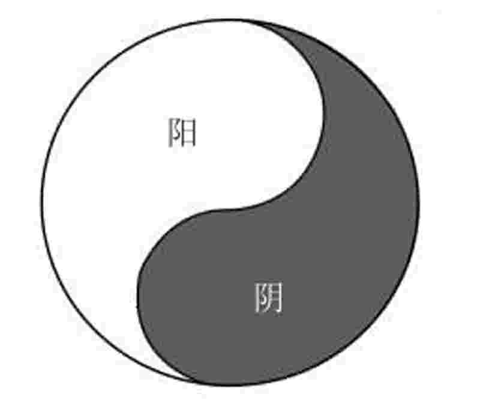

医间道
十站旅行带你进入中医殿堂
余浩 郑黎 著
Must Watch!
MustWatch
作者简介
余浩，字任之，网名：任之堂主人。自幼随祖辈学医，毕业于湖北
中医学医，自创任之堂，运用纯中医疗法治疗许多疑难杂症，疗效颇
佳。著有《一个传统中医的成长历程》一书，在当当网连续十六周荣登
畅销榜。博客：http://piao-peng.blog.163.com
郑黎，湖北人，毕业于南昌大学医学院，硕士学历。现就职于湖北
医药学院附属人民医院，擅长治疗内分泌系统疾病。
序 言
古人云：文以载道。
道之一字，幽深难明。
佛家言真如本性，道家言有物混成先天地生，儒家言明德，名称虽异，其体则一，体虽一，而深浅有异。
入道之法，在于观照，对内曰照，对外曰观，虽分观分照，以别内外，其法实一也。
内照明体，外观起用。
内照则成圣成贤，外观则参赞天地之化育，内照则《论语》、《老子》、《内经》之所出，外观则《易经》、《伤寒》、《金匮》之所由，道之用大矣哉！
吾友任之堂主人，禀三教观照之旨，远承仲景诸先圣之所学，近得太爷等后贤之所教，勤求古训，博采众方，穷其所学，得《医间道》一书，读之，大快平生。
掩卷长叹，假我数年，若十年前得阅此书，则于医道数仞之墙，必能登堂入室，一窥其奥矣。
《医间道》一书，别于其他医家者有四：一者，以道治医，从“一”的层面来辨证论治。
这个“一”，就是道，就是超越时空的大自然的运行法则，是一切事物的本质，中医也不例外，仲景以来，对这个“一”解释得清楚的，几千年来只有寥寥数人而已。
郑钦安在《医理真传》中写道：“余沉潜于斯二十余载，始知人身阴阳合一之道，仲景立方垂法之美。
所览医书七十余种，每多各逞己见，亦未尝不讲仲景之法，然或言病而不道其病之所以然，或言方而不探其用方之所以妙，参差间出，使人入于其中而茫然。”这正是历代医家著述的白璧之瑕，也正是后世学医之人对浩如烟海的中医典籍望洋兴叹，进而丧失学习信心的主要原因。
而本书对这个“一”阐释得非常清楚，入木三分。
古人云：“识得一，万事毕”，只有把握住了这个“一”，才能从根本上把握住了中医的脉搏。
二者，法于阴阳，合于术数。
这八个字，原是医者圭臬，只可惜，很多医家往往顾左右而言他，甚或干脆视而不见，以致精妙难思的传统医学的光芒渐渐埋没，岂不令人痛惜。
任堂主“上观天，下观地，中观人”，“法于阴阳，合于术数”，从大处着眼，从小处探究，层层剖析，娓娓道来，返璞归真，化繁为简，读来令人耳目一新，原来中医也不难的感慨油然而生，读了此书，必将使思维方式发生深刻的变化，在内心深处发起一场巨大的革命。
从这个意义上来说，任堂主的文章不是写出来的，而是用心观出来的，是从真诚心中流露出来的。
三者，中医框架的分析与辨证论治的有机结合，可以说道破了千古不传之秘。
中医的框架是什么？
阴阳五行而已。
不论哪本医书，必对阴阳五行进行一番详细的讲解，然后再从脏腑功能说开去，几乎成为一个固定的套路。
而仅仅只把阴阳五行理论体系用于解释脏腑气血的生理功能，至于如何将之运用到辨证论治中去，却无人提及，甚或提及，也是浮光掠影，蜻蜓点水，说不清，道不明，使后世学者虽知其然，而不知其所以然，几成医道不能提升的瓶颈。
本书对还原传统医学的原貌，具有正本清源、拨云见日之功也。
四者，对《内经》病机十九条的补充完善和医学指南针的发明，具有重大的意义。
传统医学经几千年的发展，积累了十分丰富和宝贵的经验，有些经典话语更是脍炙人口，传承不衰。
比如：“通则不痛，痛则不通”；
“久病必瘀”等，都是历代医家从临床中得来的真知灼见，也反映出经典内容相对后世有所不足，特别是到了现代，世人共争不急之务，迷于嗔恚，贪于财色；
饮苦食毒，无有懈时，内忧外患，百病丛生，许多疾病更是闻所未闻，简直无从下手。
本书在病机十九条的基础上，通过对历代医家的学习、提炼和自己切身实践，又补充了病机六条，大大拓宽了中医辨证的纲领，使许多难病、怪病的治疗有了新的思路和方向，有了新的突破口。
医学指南针将理、方、法、药一一括囊无余，把纷繁庞杂的医学理论进行高度的浓缩，由博返约。
大有放之则弥六合，卷之退藏于密之功。
一图在手，医学无忧，若非已将医道一以贯之，曷克臻此？
本书更有诸多精妙之处，不能一一细说。
至若《内》《难》《伤寒》，言辞古朴，义理深奥，虽智者亦一时莫能解。
后世医家著述，各呈己见，或有所偏颇，不能得睹医学全貌。
惟本书从上智至下愚，莫不适合，三根普被，利钝全收也。
本书能令初学者，登堂入室，提纲挈领，不走弯路；
能令徬徨迷茫者，破迷开悟，指明方向；
能令医道精湛者，百尺竿头，更进一步；
对于自学中医者和中医爱好者来说，更是案头必备，不可或缺的好书。
百余年来，西风东渐，我中华传统文化早已失磐石之固，传统医学亦复有覆巢之患。
时至今日，诵几句子曰诗云，被人视为怪物，讲一点寒热表里，人皆谓之无用，此诚可叹可悲之至也！
祈盼我医道同仁，立定志向，扎稳根基，坚守信念，辛勤耕耘，或可挽大厦将倾之颓势于万一，重振我传统医学，使之再发出璀璨的光芒。
余与任堂主相识于网络，虽未谋面，神交已久。
对任堂主孜孜求索的精神感佩不已，余不才，不意竟深得任堂主厚爱，堂主不以余鄙陋，邀余作序，余欣然受之，是以为序。
陈永昌 庚寅年冬
走向中医
每个人都可以学习中医，感受中医。
因为学习中医就是感受我们身边的世界，学习中医就是内视我们自身的身体。
一、什么人适合学中医
不少人抱怨，学习中医太难了，很想学，但不知如何下手，感觉要学的东西太多，而中医方面的书籍浩如烟海，在这么多书籍中如何找到进入中医宝库的大门，好像真的很难，其实这既是中医的魅力，也是中医的短处。
古代的中医大多是读书出身的文人，正所谓不为良相，即为良医，成为良相或良医，是文人的追求。
文人多爱卖弄文字，本身很简单的问题，在文人笔下就写得玄而又玄，好像不玄就不能证明自己有水平，就好像现代的有些诗，读出来只是一种感觉，却很难理解是什么意思。
其实中医来自于民间的医疗实践，在文人的总结和提升下，转变成中医理论，然后再指导临床。
一个来自于民间的、朴素的、简单的东西，由我们祖辈反复总结出来的东西，我们为什么害怕学习，不敢学习呢？
为什么要排斥它呢？
学习中医其实也很简单。
每个人对学习中医的理解各不相同，就好像练习武功，有的只是为了强身健体；
有的却是为了光宗耀祖；
有的想成为一代宗师……思想不同，出发点也不一样，学习中医也是如此！
有些小孩子的母亲，想学习中医，只是为了让小孩更加健康，不再受疾病的困扰。
有些长期被疾病因扰的病人，学习中医，只是想让自己健康起来，能够健康地生活。
有些从事临床的中医工作者，学习中医、研究中医，目的是让自己能更好地为病人服务，提高自己的临床水平。
从事科研的人员，学习中医，是为了在疑难疾病的攻克上找到新的方法。
也有的人学习中医是为了学得一技之长，能够混口饭吃，能够养家糊口……学习中医并非都要求有悟性，对普通人而言，中医教给人们养生的方法，教给人们预防和治疗疾病的方法，有兴趣就可以学习。
但如果以中医作为职业，那要求就会高一些，懂得的就应该更多一些，这也是无可厚非的，因为人命关天，病人将生命相托，如果不提高自己的水平，则不是救人，而是杀生。
在远古的洪荒年代，人类没有衣服，没有稳定的食物，为了生存，必须要适应大自然，在大自然的变化中寻找生存的方法，还谈不上健康长寿，只是为了生存，思想单纯，没有追逐名利，只是考虑怎么适寒温，怎么避风雨，每个人都是养生家，不然就没法生存。
随着人类社会的进步，人类有太多的办法适应自然界的变化，但也正因为如此，反而忽略了自然界的变化，人类自身适应自然界的能力在不断下降，自然界稍有变化就会导致许多人生病。
学习中医，就是让我们认识我们的大自然，认识我们自己的身体，从而让我们融入大自然，寻求健康生存的养生之道，寻求疾病的治疗之道。
每个人都可以学习中医，感受中医。
因为学习中医就是感受我们身边的世界，学习中医就是内视我们自己的身体。
从原始、从本质中感受世界，这就是我们要学习的东西！
所以，什么人适合学习中医呢？
不是哪一类人，而是整个人类！
旅行提示：学习中医是一个长期而持久的过程，如果没有目的，只是盲目跟风，或者只是因为要上大学，而无可奈何的选择，学习是没有动力的！
你学中医的目的是什么呢？
二、从生活中感受中医
中医是不是玄学？
中医有没有疗效？
中医该不该弘扬？
这些问题只有我们自身实践了，才能有深刻的体会，才知道该如何对待中医，建立学习中医的信心。
“夫上古圣人之教下也，皆谓之虚邪贼风，避之有时，恬淡虚无，真气从之，精神内守，病安从来。”
“虚邪贼风，避之有时”。
如果天气变冷，我们都知道加衣服，这是一种本能反应，这也是养生中的最基本的理念，也是最本质、最朴素的理念，玄不玄呢？
一点也不玄！
但如果深入去想，我们可以给自己身体加衣服避贼风，那服用扶正的药物不就是给我们的五脏加衣服避贼风吗？
我们通过加衣服来避贼风！
我们远离寒凉食品，不就是让我们五脏来避寒邪吗？
这都是很普通的道理，源于生活最简单、最本质、最朴素的东西。
但就是这些道理的运用，能让我们的身体得到保护，能让我们健康生活，这就是中医，就是医道。
“故美其食，任其服，乐其俗，高下不相慕，其民曰朴。”如此简单的养生之道，我们现代人又有多少人能做到呢？
如果我们让浮躁的心静下来，将事物看淡了，物质层次的追求减少了，名利也看得不重，自然能够乐其俗，谁还在乎吃“鲍鱼”还是吃“排骨”，还在乎穿“貂皮”还是“棉衣”，因为只要能保暖，就能起到避贼风的作用，心境达到了一定高度，人就能达到天人合一，就能健康长寿。
这些《内经》中的原话，非常质朴，就好像一位年过七旬的老人，在向我们讲述过来人的经历，我们虚心听取的时候，会感到自己平时对生命的认识是多么肤浅，心态是多么浮躁，会发现我们经常舍本逐末，当疾病来临、生命终结之时，又希望能够一下子除掉疾患，立时起死回生！
我们为什么不早点学习中医里面的养生之道，让我们自己的心能够安宁，让自己的身体能够健康，对待我们周围的环境不要那么极端！
“嗜欲不能劳其目，邪淫不能惑其心，愚智贤不肖不惧于物，故合于道。
所以能年皆度百岁而动作不衰者，以其德全不危也。”这就是养生之道，这就是医道！
中医有没有疗效？
首先我想问一下，对中医疗效有疑问的人试过没有？
有没有采取中医的思维？
有没有辨证运用中医的治疗手段？
举个例子，前年的夏天，一个患者到我这里来，要求打吊瓶，我问为什么。
患者说重感冒了，打吊瓶好得快！
我说：“你认为几天好才算快？”患者笑道：“每次感冒打吊瓶，三天就好了。”
“那我一天给你治好，算不算快？”
“那当然快了，中医可以吗？”
“当然可以了！”我毫不犹豫地答道。
患者因为晚上睡觉，空调温度太低，受寒所致。
于是我采用姜油在患者背部刮痧，沿着膀胱经刮出紫黑色瘀点，前后不到十几分钟，患者感觉病减轻了一大半，随后开了一副麻黄附子细辛汤。
所谓的重感冒，采用中医治疗不到一天就好了。
在随后的一两年，这位患者每次感冒必喝中药，只开一剂就可以了，轻点的感冒，自己熬点葱姜水喝喝就没事了。
建立在患者脑子中的“感冒必须要打吊瓶”的观念也就彻底消失了，代之的是懂得如何预防感冒，感冒初期如何调理。
这就是中医的魅力，中医的疗效！
只有我们切身体会之后，才知道疾病可以这样治疗，中医效果也可以这么好，中医治疗起效也不慢啊！
小时候在农村，医疗没有现在这么便利，很多病我太爷就是这么治疗的，习惯了这种治疗方式，也习惯了感冒后家人给我熬葱姜茶喝，我从记事到现在，已经二三十年了，没有打过一次吊瓶，每当身体稍有不适，采用一些很简单的办法，就能很快调整过来，这是我的亲身感受。
因为有了这些亲身的体验，所以我坚信中医的疗效，一点也不慢，一点也不比西药差。
这也是一个中医工作者，对自己从事工作的信心！
对自己、对中医、对《黄帝内经》的信心！
如果一门知识，与我们的生活息息相关，是我们的健康指南，我们应该如何对待它呢？
难道应该放弃？
难道下雪了，我们不该加衣服？
难道我们应该羡慕权贵？
我们应该唯利是图？
不是的！
我们的身体本身就有一套精密的调理机制，我们需要的是养生，是学会保养这个精密而完美的身体，让他不受外邪和内伤的损害，这就是未病先防，这就是治未病，这就是中医的特点和优势。
我们弘扬中医是理所应当的，弘扬这门集预防、治疗、养生、保健于一体的科学，让它为全人类的健康，永远发出璀璨的光芒，这不仅仅是我们中医工作者的责任，更是每一个中国人的责任。
旅行提示：如果你想学中医，当身体不舒服时最好先喝喝中药，或者运用中医的其他方法来治疗，只有通过切身体会，才会感受中医的疗效，才能增强你学习中医的信心。
三、学习要从大处着眼
如果你从北京走到陕西去，别人会说往西走，不会说，你先走多少公里向左拐，然后再走多少公里向右拐，这样你自己会搞糊涂，别人也会搞糊涂。
究竟怎么走，具体的描述，谁也说不清楚，你可能会说看地图，是的，看地图可以更清楚些。
今天我写这些文章，就是想绘制一张学习中医的地图，但再细致的地图也不可能告诉你，在前进1501米的地方会有一个泥潭，再细致的地图也不可能标示出，前面的道路哪儿不平，哪儿有障碍物，但这张地图可以告诉你方向，学习中医的方向，让我们明白为什么要学中医，怎样学中医！
北京到陕西，首先必须明白是往西走，向西就是你的目标和方向，而学习中医的第一步，必须要明白中医的框架，在大框架的指导下，才不会出错，成功的机会才会更大一些。
那么什么是大的框架？
什么是大的方向？
前面谈过学习中医就是感受自然，感受自然界最本质的东西，然后内审我们自身，明了养生治病的办法。
感受自然，就从我们生活的地球开始，寻找地球的规律，同时取象类比，了解我们自身，我相信这样来学中医，可能大家都会接受。
因为我们就生活在这样一个环境中，明白了我们的生活环境，就明白了为什么会生病，就明白了如何治疗疾病。
你爬上高山，站在山巅上，好好看看我们的地球！
这是怎样精妙的一个星体啊！
因为它围绕太阳的公转，产生了地球上春夏秋冬四季的气候变化，让我们在寒暑交往中健康地成长，让植物都能够春生、夏长、秋收、冬藏。
因为它自身的旋转，产生了昼夜更替的现象，让忙碌一天的人，能够入夜静静地休息，让一天的劳累得到缓解，每天都有精神去面对新的一天。
因为表面的大气层包裹，使我们能够自由地呼吸空气，同时避免了很多外来物体对地球的撞击，保护着地球上的动植物。
当太阳黑子、耀斑活动剧烈时，太阳发出大量强烈的带电粒子流，沿着地磁场的磁力线向南北两极移动，它以极快的速度进入地球大气的上层，其能量相当于几万或几十万颗氢弹爆炸的威力，因为地磁场的存在，时刻保护着我们的地球，使地球上的生物避免了灭顶之灾。
再看看脚下肥沃的土地，万物的生长离不开它；
看看大海，没有它的海量，大地将被水淹没，人类没有立足之地；
看看身边的一朵朵野花；
看看河水中游动的小鱼，深切感受生命的气息……看看天，看看地，看看身边的一草一木，然后再看看我们人类，从大之天，到小之人，你会发现人是多么的奇妙。
《黄帝内经》第一篇讲的是养生论，第二篇开始讲四气，讲春夏秋冬的保养，就是让我们从大的角度入手，从大的角度着眼来认识人。
明白了这些，再来看《素问·四气调神大论》，你会发现《黄帝内经》写得多么亲切。
“春三月，此谓发陈，天地俱生，万物以荣，夜卧早起，广步于庭，被发缓形，以使志生，生而勿杀，予而勿夺，赏而勿罚，此春气之应，养生之道也，逆之则伤肝，夏为寒变，奉长者少。”这段话的意思可以理解为：春天的三个月，是万物启陈发新的季节，天地俱生，万物以荣。
人要顺应天地之规律，宜晚睡早起，早上在庭院里穿着宽松的衣服，让头发披下来，和缓地散步，这样能够条畅人体的肝气。
春天是万物生发的季节，人顺应天地的法则，对天地万物要采取“予生”而“勿杀”，予而勿夺的态度，处理事情宜赏而勿罚。
以上就是顺应春气，养生之道。
如果违背这些自然规律，则伤肝，肝木伤害了，便不能生心（五行之木生火），心属火，为夏令，木不能生火，夏天就发生寒性疾病。
“夏三月，此谓蕃秀。
天地气交，万物华实；
夜卧早起，无厌于日；
使志无怒，使华英成秀，使气得泄，若所爱在外，此夏气之应，养长之道也。
逆之则伤心，秋为痎疟，奉收者少，冬至重病。”这段话的意思可以理解为：夏三月，万物生长茂盛，天地间阳气上升，阴气下降，阴阳之气交流处于鼎盛时期，万物开花结实。
此时人要晚一点睡觉，早一点起来，不要对烈日感到厌烦，平时不要发怒（因为大怒伤肝，伤肝则无以生心），人体的阴阳升降才能对流，体内抑郁之气才能得到宣泄，人体的阳气就能向外输布，以顺应夏天阳气旺盛的特性，为养长之道。
逆此道，热邪不能发散于外，蕴伏于内，则伤其心，至秋与凉邪合病，变生疟疾，秋令当收，如此则无阳气可收，到冬天就会患重病。
“秋三月，此谓容平，天气以急，地气以明。
早卧早起，与鸡俱兴，使志安宁，以缓秋刑，收敛神气，使秋气平，无外其志，使肺气清，逆之则伤肺，冬为飧泄，奉藏者少。”这段话的意思可以理解为：秋天大自然果实已经成熟，精华蕴藏在种子中，大气中流露的是肃杀之令，大地上呈现的是丰收之景。
人应当早睡早起，鸡啼就该起床，这样的生活习惯可以使身体的志意得到安宁，让秋天的肃杀之气得以缓解。
收敛自己的阳气，这样体内的肺气才得以清肃，阳气得以收，逆此道，容易伤肺，肺气既伤，冬水为肺金之子，无以受气，则不能闭藏，故病发于冬而飧泄（飧泄指大便清稀，夹有不消化的食物残渣），到时阳气就会封藏不足。
“冬三月，此谓闭藏，水冰地坼，无扰乎阳，早卧晚起，必待日光，使志若伏若匿，若有私意，若已有得，去寒就温，无泄皮肤，使气亟夺，此冬气之应，养藏之道也。
逆之则伤肾，春为痿厥，奉生者少。”这段话的意思可以理解为：冬季是阳气闭藏的季节。
大自然中草木凋谢，种子埋藏在冰雪之下，地面的一切生机都看不到了，水面也结冰，这就是阳气被藏的特点。
此时人应当早点睡觉，等到太阳升起才起床。
人的情志应该内敛些，注意保温，不要外露皮肤，防止阳气外泄。
这是顺应冬天养藏之道。
逆此道，就会伤肾，阳气得不到封藏，次年春天阳气的生发就会不足。
上面四段都是《黄帝内经》中的原文，从自然的角度指引我们养生，让我们感受四季的变化，掌握四季的特性——生、长、收、藏，顺应这种自然界的特性便是道。
除了从四季的变化，看到四时的特点，明白养生的意义，从我们的地球，我们还能看到什么？
我们看到了“阴阳”！
地球的自转，形成白天和黑夜，白天我们称为阳，黑夜我们则称为阴。
我们还看到了“五行”，即地球上五种基本物质，木、火、土、金、水。
四时、阴阳、五行，这些自然界的基本规律，就是古人对自然界的认识，是认识自然界的纲领，也是我们学习中医的框架，就好像你从北京到陕西，知道了要向西走，如果连“西”这个方位都不清楚，就会走很多弯路，甚至最终也难到达。
学习中医，明白了四时、阴阳、五行，就是找到了入门的方向。
所以《内经》在接下来第三篇、第四篇、第五篇、第六篇、第七篇，用了五篇的篇幅，从阴阳入手，谈论人体的生理病理。
我们再来看《内经》条文：“阳气者，若天与日，失其所，则折寿而不彰，故天运当以日光明。
是故阳因而上，卫外也。”
“故阳气者，一日而主外，平旦阳气生，日中而阳气隆，日西而阳气已虚，气门乃闭。
是故暮而收拒，无扰筋骨，无见雾露，反此三时，形乃困薄。”
“春夏养阳，秋冬养阴。”想通了《内经》引导我们学习养生的方向，再来读这些看似深奥的条文就会感觉很浅显，它非常直接明了地告诉我们自然界的规律，以及如何顺应自然学会养生。
一部几千年的古书，从自然界的变化规律，来分析、推演我们人身的生理、病理机制，不得不赞赏古人的伟大，这种从大处着眼、从阴阳五行着眼的思维方式，其中的智慧与超前性，历千年而不衰。
当西医学在微观领域的研究无法取得新的进展时，许多有识之士便尝试借用中医的思维模式，从宏观的角度分析疾病，返璞归真，化繁为简，往往能取得新的突破。
学习中医，就是要培养一种返璞归真、化繁为简的思路，即培养一种从大处着眼，不被一些局部的、细小的证候所束缚，从阴阳入手，从五行入手的思路，培养了这种思维模式，养成了这样的思维习惯，就会使我们的视野大为开阔，这不仅仅是对学习中医、学习养生有好处，对工作生活诸多方面，都会大有好处。
旅行提示：学习中医需要从大处着眼，读完此章，你是否明白这里的“大处”指的是什么？
这些“大处”在《内经》中又是如何系统阐述的？
读完此章后，建议你反复研读《内经》的第一篇、第二篇，感受古人对天地、对阴阳、对五行的认识，从而为你学习中医指明方向，这样来学习中医就不会迷失方向。
第一章 从阴阳角度来认识中医
“阴静阳躁”，因为有了阴阳的平衡，才有了动与静的平衡，生命才有了活力而又不至于躁动。
前面谈到了学习中医的框架，也就是阴阳五行，如何让这些抽象的东西系统化、明了化，显得非常重要，就好比知道了从北京到陕西是向西走，这是不够的，还必须得知道沿途要经过哪些省份和城市，才能够顺利到达陕西。
同理，只有明白了阴阳的内涵，我们学习的旅程才算得上真正开始。
一、阴阳的重要性
《素问·阴阳应象大论》中写道：“黄帝曰：阴阳者，天地之道也，万物之纲纪，变化之父母，生杀之本始，神明之府也，治病必求其本。”天地之道，万物之纲纪，变化之父母，生杀之本始，神明之府，古人将阴阳的重要性提到如此高的地位，可见熟悉阴阳对于学习中医和养生是何等的重要。
这段话既是对阴阳重要性的强调，同时也是告诫后人，学习医术必须要从阴阳入手，治病才能“必求其本”，不明阴阳，如同盲人摸象，就无法从整体角度认识人体，认识疾病。
“火神派”的开山之祖郑钦安，其学术渊源，理论实以《内经》为宗，其临床则用仲景之法。
宗《内经》则“洞明阴阳之理”，宗仲景则“功夫全在阴阳上打算”，他的真传：“认证只分阴阳”，“病情变化，非一端能尽，万变万化，不越阴阳两法”。
那么阴阳究竟是何物，为何如此之重要？
我们再来看看《内经》的描述。
二、阴阳的普遍性
“积阳为天，积阴为地，阴静阳躁，阳生阴长，阳杀阴藏。
阳化气，阴成形。
寒极生热，热极生寒，寒气生浊，热气生清。
清气在下，则生飧泄；
浊气在上，则生胀滇胀，此阴阳反作，病之逆从也。”这段话可以这样来理解：阳气聚集上升而为天，阴气聚集下降而为地，阴的特性是静，阳的特性是动。
阳气主宰生发，阴气主宰长养，阳气主宰肃杀，阴气主宰闭藏，化气上升为阳，化物成形为阴。
寒邪达到极致会转热，热邪达到极致会转寒；
寒邪在人体内会化生浊邪，热邪在人体内能化生清气；
清气属阳当上升至上焦，如果居下焦，就会生飧泄；
浊气本应下降至下焦，如果盘踞上焦，头面就会出现肿胀……这就是古人从天地入手，从阴阳特性、阴阳转换入手，对阴阳进行具体描述，让我们从天地之阴阳，看到人身之阴阳。
从自然界的阴阳特性“动与静”、“升与降”、“生与长”、“杀与藏”、“化气与成形”推演出人体内阴阳的“寒”与“热”、“生清”与“生浊”及阴阳颠倒后疾病的形成……读到《内经》这些条文，我们应该进一步想到什么呢？
我们从文中看到了“天”、“地”、“人”都在阴阳之中，想到万物的生老病死离不开阴阳的变化！
为了对人体阴阳有一个更加明确的认识，我们从阴阳的角度来看看我们的身体：“夫言人之阴阳，则外为阳，内为阴。
言人身之阴阳，则背为阳，腹为阴。
言人身脏腑中阴阳，则脏为阴，腑为阳。”从阴阳的角度来谈论人体，人体的外部为阳，内部为阴；
人体的背部为阳，胸腹部为阴！
人体上部为阳，头为诸阳之汇，全身的阳气都上升在头部汇集，因此头也被称为“清空之府”，人体清阳上升，出上窍……人体下部为阴，阴气下沉，浊阴下降，大小便出下窍……胆、小肠、胃、大肠、膀胱、三焦为六腑。
六腑者，泻而不藏，实而不满。
六腑为阳，主动，所以六腑以通为用，传化物而不藏……六腑如果不通了，藏了，就会生病。
比如胆汁郁积形成胆结石；
小肠不通形成肠梗阻；
胃内饮食停滞会成为食积；
大肠不通畅形成便秘；
膀胱不通畅形成淋证；
三焦不通则水液内停，形成水肿……肝、心、脾、肺、肾为五脏。
五脏者，藏而不泻，满而不实。
五脏为阴，主静，功能以藏为用，故藏精气而不泻，满而不实。
如果不藏了，同样也会生病……人体气为阳，血为阴。
气能推动血液在周身运行，滋养五脏六腑……大到整个人，小到五脏、六腑，再小至经络、血脉，无不蕴含阴阳之理……阴阳的普遍性时刻提醒我们，治病必求于本！
治病必须分阴阳！
三、阴阳辨证在临床中的运用
经云：“凡阴阳之要，阳密乃固，两者不和，若春无秋，若冬无夏，因而和之，是为圣度。
故阳强不能密，阴气乃绝，阴平阳密，精神乃治，阴阳离决，精气乃绝。”
“阴阳之要，阳密乃固”，说的是阴阳的关键在于阳气的致密而护固于外。
虽寥寥几字，却道出天机，寓意深远。
临床上治疗疾病时，治疗的目的就是“因而和之”，即调和阴阳，达到“阴平阳密”的状况，使之不出现阴阳离决的局面。
《内经》中关于阴阳的论述，可以给我们很多启发，为临床治疗疾病带来很多创新思维，发散思维。
比如：“阴静阳躁”这句话在临床上有很好的指导意义，表面看起来，就是讲的阳动而阴静，其实它反映的是阴阳的普遍特性，当阳气亢盛时，事物会处在一种躁动的状态，而当阴气过盛时，事物处在一种安静的状态。
因为有了阴阳的平衡，才有了动与静的平衡，生命才有了活力而又不至于躁动。
在临床中，当我们看到小儿好动的时候，应该想到“阳躁”，小儿阳气旺盛，如果郁积不畅，就会化火，出现内热过重，躁动不安；
当看到小儿不爱活动，过于沉闷的时候，应该想到“阴静”，患儿体内阳气不足，阴气过盛。
“阴静阳躁”反映的是阴阳的特性，但当阴阳平衡失调非常严重，出现了“重阴”、“重阳”，又会是什么情况呢？
“重阳必狂”、“重阴必癫”！
这就是阴阳平衡失调之后，进一步加重的结局。
对于“狂证”治疗，重泄其亢盛之阳，扶已损之阴。
对于“癫证”治疗，则需要扶亏虚之阳，重泄郁积之阴。
再看看《内经》条文“阴不胜其阳，则脉流薄疾，并乃狂”，这样对于癫狂的认识就会更加清晰了！
所以《内经》云：“善诊者，察色按脉，先别阴阳；
审清浊，而知部分；
视喘息，听声音，而知所苦；
观权衡规矩，而知病所主；
按尺寸，观浮沉滑涩，而知病所生。
以治无过，以诊则不失矣。”阴阳的指导性可谓字字珠玑，只有在临床工作多年的人，回过头来看《内经》，才能深深地体会到《内经》为什么用大量的篇幅来谈阴阳。
在后面的章节中，我们将结合临床，进一步学习阴阳。
旅行提示：通过对本章的阅读，你是否意识到了阴阳的重要性？
如果想深入了解阴阳，你可以反复阅读《内经》的第三至七篇，多读几遍就会慢慢领悟阴阳的重要性了。
看完《内经》后，建议参阅《医理真传》这本书，看看一代大师是如何通过阴阳辨证来认识疾病的。
第二章 从五行谈中医框架
如果说阴阳是基石，那么五行则是基石上的五根柱子，它们竖立起来，支持着中医庞大的理论体系，我们透过这五根柱子向上看，就会看到中医这棵大树是如何的枝繁叶茂。
如果说阴阳是基石，那么五行则是基石上的五根柱子，它们竖立起来，支持着中医庞大的理论体系，我们透过这五根柱子向上看，就会看到中医这棵大树是如何的枝繁叶茂。
如果说阴阳是一种古代的对立统一学说，则五行可以说是一种原始的普通系统论。
五行指：木、火、土、金、水。
古人认为大自然由五种要素所构成，随着这五个要素的盛衰，使得大自然产生变化，不但影响到人的命运，同时也使宇宙万物循环不已。
《尚书·洪范》记述了周武王与箕子的对话：“五行：一曰水，二曰火，三曰木，四曰金，五曰土；
水曰润下，火曰炎上，木曰曲直，金曰从革，土爰稼穑；
润下作咸，炎上作苦，曲直作酸，从革作辛，稼穑作甘。”这里将五行及其特性作了高度的概括，如果说学习中医阴阳是纲，则五行就是领，两者相互结合，中医理论体系就显得完备了。
一、人体的五行属性
木：肝属木，主疏泄，主藏血，肝藏魂，为谋虑所出，开窍于目，肝主筋，其华在爪，在志为怒，在声为呼，在液为泪。
火：心属火，主血脉，心藏神，开窍于舌，其华在面，在志为喜，在声为笑，在液为汗。
土：脾属土，主运化，布津液，主统血，主肌肉和四肢，脾藏意，开窍于口，其华在唇，在志为思，在声为歌，在液为涎。
金：肺属金，肺主气，司呼吸，主皮毛，主治节，主宣发肃降，开窍于鼻，在志为悲，在声为哭，在液为涕。
水：肾藏精，主生殖，主水，主纳气，主骨生髓，为先天之本，司二阴，开窍于耳，其华在发，在志为恐，在液为唾，在声为呻。
我们将这些归纳起来，放到一个图表中。
人体与五行
也许很多人会说，这是中医最基本的东西，没什么神秘的！
是的！
就是这些最基本的东西，却时时刻刻指导着临床工作，如果想真正走进中医这所神圣的殿堂，这些就是入口的大门，如果你看着门而不入，或者不相信这就是门，那很难真正成为一个中医，也很难深入了解中医精髓。
在临床中，我们很多医生遇到疾病时，首先想到的是疾病的病理属性，是痰？
是瘀？
还是湿？
有的甚至想到是细菌，还是病毒？
其实，属先想到的应该是五行归类，这个疾病应该从哪个脏器入手，源头在什么地方？
中医治病治疗的对象其实不是“病”，而是人，是五脏六腑！
明白了这句话，才能够体会到“治病必求于本”的“本”在什么地方。
二、五行在临床中的运用
（一）人体的五行属性与疾病
让我们通过几个例子，来看看人体五行在临床中的运用。
第一个例子与头发相关的疾病有不少，比如常见的脱发、头发焦黄、白发等。
在寻求治疗时，常常会受到西医思维的影响，没有溯本求源，效果往往差强人意。
其实明白了下面三句话，这一系列病都好办了！
第一句：发为血之余。
第二句：肺主皮毛。
第三句：肾之华在发。
从这三句话，可以看出，头发的疾病与肺、血、肾密切相关，临床中找到了这个大方向，治疗时就能做到有的放矢。
头发干枯、分叉、早白的患者，通过养血、补肾精，可以收到很好的疗效，生发养血胶囊就是代表性的药物，其处方组成为：熟地黄、当归、羌活、木瓜、川芎、白芍、菟丝子、天麻、制何首乌。
其中熟地黄、当归、川芎、白芍为四物汤，是补血代表方；
制首乌、菟丝子则是补养肾精佳品；
配上羌活、天麻、木瓜祛风除湿，自然适用于斑秃、全秃、头皮发痒、头皮屑多、油脂多与病后、产后脱发了。
对于脂溢性脱发，通过调理肺脏的宣发肃降功能，就能起到很好的治疗效果！
这句话可能现在无法理解透彻，在后面谈临床的章节，我会专题论述。
第二个例子口腔溃疡在临床上经常遇到，中医称为“口疮”，许多医生认为是虚火上炎，建议病人服用“知柏地黄丸”，有效有不效，有些顽固性病例，反复长期发作，患者非常痛苦。
其实在治疗时，如果首先想到“脾开窍于口”，从脾的角度入手，清化脾之湿热、积热，往往可以收到很好的疗效。
对于舌上生溃疡，则以“心开窍于舌”作为依据，从心的角度论治，就能起到很好效果。
如果口、舌均生疮，则从心、脾两脏入手……第三个例子三四十岁的女性，经常面部长斑，治疗时，有时一时无法辨证，是血虚？
气虚？
肾虚？
肝郁？
有的中医给病人诊断“肝斑”；
有的诊断“肾斑”；
有的干脆诊断“内分泌失调”，这是对病人的不负责，同时也是对自己的不负责。
因为内分泌系统是一个庞大的系统，几乎所有疾病在病理变化过程中，都会出现内分泌的异常变化。
“内分泌失调”不等于“肝肾阴虚”！
下“内分泌失调”的诊断过于笼统！
其实只要我们想想人体的五行属性，记住“心主血脉，其华在面”；
“肺主气，主皮毛”，将面部的疾病归纳为“面”与“皮”的问题，主要从心、肺入手，调理气血，温通血脉，自然就会康复，当然有时候心肺的问题与肝肾也有关系，对于肝气郁结、肝肾阴虚的患者，在从心肺入手治疗的同时，调理肝肾也是有必要的，但最终别忘了心、肺才是“面部”的老板！
第四个例子临床中遇到腰椎间盘突出、骨质疏松、骨质增生、骨折延迟愈合等病人时，别忘了“肾主骨”，肾才是这类疾病的源头，所有与骨头有关的疾病，从肾入手才能从根本上解决问题。
临床中我们看到，腰椎间盘突出的患者，采用牵引的办法可以很快缓解症状，严重者，采用手术的办法可以溶解或切除突出的椎间盘，理论上可以治愈，但都很容易复发。
因为患者肾虚的状况没有解决，借用患者的话说，“手术后腰不疼了，但还是感到腰部酸软无力”。
这样的患者，自然过不了多长时间就会旧病复发。
“腰为肾之府”，只要从根本上治疗肾虚，自然可以降低复发率。
这样的例子很多，只要理解透了上面讲的人体中的五行属性，学习中医就会很轻松，因为上面的每一句话，都对应着一系列疾病，抓五行，就好比撒网时抓住了渔网的拉绳一样。
阴阳五行是中医纲领性的东西，这也是学习的捷径，也算是大门吧！
了解了五行属性，对许多疾病的归属就有了认识，但这些认识还比较粗糙，比较肤浅，比如口舌生疮，你知道是“心、脾”的问题了，但为什么心脾会出问题，我们得追求其本，有时候单纯是心脾的问题，但有时候则不是，可能是其他脏器导致的。
了解五行属性就好像进了大门，但还得进小门，这样才能曲径通幽，才能慢慢领略到中医的神奇之处！
（二）五行之间的关系
五行除了本身的自然属性，相互之间还存在相生、相克、相乘、相侮的关系。
五行相生是指木、火、土、金、水之间存在着递相资生、助长和促进的关系，其规律是木生火，火生土，土生金，金生水，水生木。
五行相克是指木、火、土、金、水之间存在着递相克制、制约的关系，其规律是木克土，土克水，水克火，火克金，金克木。
《内经》把相克关系称为“所胜”、“所不胜”关系：“克我”者为“所不胜”，“我克”者为“所胜”。
五行相乘是指五行中某一行对其所胜一行的过度克制，为五行之间的异常克制现象，其规律是木乘土，土乘水，水乘火，火乘金，金乘木。
五行相侮是指五行中某一行对其所不胜一行的反向克制，为五行之间的异常克制现象，其规律是土侮木，水侮土，火侮水，金侮火，木侮金。
相乘和相侮，是指五行系统关系在外界因素的作用影响下所产生的反常状态，都是指五行之间不正常的相克，作为人体，则是病理上的相互传变。
相乘，即相克的太过，超过了正常的制约力量，从而使五行系统结构关系失去正常的协调，此种反常现象的产生，一般有两种情况：一是被乘者本身不足，乘袭者乘其虚而凌其弱。
如土气不足，则木乘土（虚）。
二是乘袭者亢极，不受它行制约，恃其强而袭其应制之行。
如木气亢极，不受金制，则木（亢）乘土，从而使土气受损。
生、克、乘、侮对于初学者来说，会感到理解起来有些困难，但通过下面的临床表现进行分析，就容易理解了！
1.关于相生的理解（1）“木生火”在临床中的运用木代表肝脏，火代表心脏，也就是说心脏的气血供给与肝脏的疏泄升发有很大关系。
肝藏血，肝气升发，所藏之血能够补养心血，心血就充足。
反之，如果肝气郁结，升发功能出现异常，则心脏气血供应就会差一些。
临床上长期肝气郁结的患者，可出现失眠、心烦、心慌等心脏气血不足的表现，通过疏理肝气，滋养阴血，很快就能缓解病情。
（2）“火生土”在临床中的运用心为君，居君位，如丽日在空，万物的生长离不开太阳的照耀，太阳可温暖土地，土才能化生万物。
在人体，心火的温煦作用可以使胃温暖，从而起到腐熟水谷的作用。
如果心火衰微，则胃土冰寒，食物不能被腐熟，出现完谷不化，不欲饮食的病理状况，这样的病人通过补心火，就能起到增强消化功能的作用。
患者张某，男，35岁，长期胃胀，消化不良，饭后5到6小时，打嗝时还可以见未消化的食物，稍吃生冷食物，即出现腹泻，患病多年，健胃消食片、保和丸服用无数，仍不能解决问题，后建议服用中药，采用桂枝、薤白、瓜蒌、干姜、菖蒲等为主药，稍加健胃消食之品，一周治愈，而且多年的心脏不适，也好了不少。
火生土的临床运用就是补充心阳，使心火旺盛，才能起到温土的作用。
（3）“土生金”在临床中的运用饮食入胃，经胃腐熟，小肠吸收，借脾上输于肺，通过肺之宣发与肃降，将清的部分向上向外宣发滋养皮肤和毛发，将浊的部分肃降滋养五脏六腑，这里的“借脾上输于肺”，即是“土生金”。
对于慢性病，尤其是慢性肺病，通过调理脾胃，就能起到补肺健肺的作用，疗效是很显著的。
患者陈某，男，45岁，患肺结核多年，抗痨两年，还是消瘦、咯血、无食欲。
建议病人服用山药粥，培养脾胃，起到培土生金的目的，通过调理半月，患者体质增强，临床症状得到明显改善，两月后体重增加7.5公斤，再继续调理，同时结合抗痨治疗，数月后复查，病灶钙化，身体恢复，开始上班工作。
（4）“金生水”在临床中的运用上面谈到肺将脾输送来的营养物质通过宣发和肃降进行分配，其中向下敛降则成为肾脏的营养来源，如果肺的敛降功能出现了故障，肾之营养物质的来源就会出现障碍，自然会出现肾亏。
这样的患者临床经常碰到，单吃补肾的药，一吃就上火，出现咽喉肿痛，腰酸稍好些，但面部却长包，停药后就肾亏。
吃完补肾的立即吃下火的，吃完下火的，再接着吃补肾的，周而复始，还是肾虚得厉害。
其实人体有很强的自生机制，我们现在的生活水平并不差，不需要天天吃补肾的药。
只要明白了“肺生肾”的道理。
只要通过改善肺的肃降功能，肾亏不治自愈。
肃降肺气的药物有苦杏仁、冬花、枇杷叶、白果仁、五味子、五倍子等，凡具有敛肺止咳作用的药物都能敛肺气，肺气下敛生肾，就不会肾虚了。
四两拨千斤，纠正机体的逆乱气机，改恶性循环为良性循环，充分发挥人体自身的修复机制，许多疑难杂症就好了。
（5）“水生木”在临床中的运用在大自然中，树木的生长离不开阳光、水分、空气、土壤，如果没有水的滋润则大地干枯，万物萧条，树木枯萎乃至死亡，古人取象于天地，类比于人身，结合五脏之规律，总结出了“水生木”即“肾水滋养肝木”的宝贵经验。
在临床上碰到肝阳上亢的病人，其病机中除了肝阳过亢之外，其实蕴含着肝阴不足（火旺则水亏），如果我们一味采用清泻肝胆实火而忘却了培补肝阴，则肝火泻了还长，清了还旺，这就是为什么病人经常说：“医生，为什么我的火这么大，吃了那么多下火的药，还是火大呢？”对于肝火过重、肝阳上亢的病人，通过补养肾水，培补肝阴，肝阳自然就亢不起来了。
2.关于相克的理解（1）“木克土”在临床中的运用木代表肝胆，土代表脾胃，肝胆的疏泄，与脾胃的功能有密切关系，就好比自然界中，树根能够疏通土壤一样，没有树根的疏通，土壤就会板结，肝胆的疏泄出现异常，脾胃的功能也会减弱，借用西医学的说法，胆汁能够乳化脂肪，如果胆汁分泌不足或不畅，人体摄入的脂肪就无法正常地消化。
（2）“土克水”在临床中的运用“兵来将挡，水来土掩！”这句话很多人都会说。
但其中的深刻含义，大家不一定会想到，如果将它与中医临床结合起来，大家可能觉得匪夷所思。
其实这句话谈的就是相克，“土能克水”才有水来土掩！
人体之中，脾属于土，肾属于水；
肾主水，脾运化水液，有了脾正常的运化功能，肾的水液才不会异常。
这样讲来有些乏味，也不好理解，我们还是看一个案例：患者张某，腰部酸胀疼痛三月，清晨起床前最为严重，起床活动后减轻，逢气温降低时加重，天气暖和时减轻，服用芬必得等止痛药物，未能明显缓解，服用六味地黄丸，病情不仅未减轻，反而加重，舌质淡，苔白滑，右尺沉迟而紧。
患者腰痛为腰部寒湿过重所致，其病因在于脾肾阳虚，内生水湿之邪，采用温肾健脾除湿的办法，处方：炒白术30g，茯苓20g，干姜20g，杜仲20g，附子15g，生甘草10g，3剂腰痛症状消失。
从此病例中可以看出，通过重用白术、茯苓等健脾除湿的药物，以“土”制“水”，收到了很好的疗效。
（3）“水克火”在临床中的运用人体心属火，肾属水，肾水随肝气的升腾，上升来济心火，这样心火被水制约就不会亢盛，这是人体的生理机制。
如果肾水匮乏，肾阴不足，无以济上焦之心火，就会出现心火亢盛，失眠心烦，小便黄赤，甚至口舌生疮。
这样的病人在治疗时，如果单纯清心火，当时有效，不久又会反复，清心火为治标，养亏虚之肾水才是治本，有了肾水的制约，心火自然就不会过亢了。
（4）“火克金”在临床中的运用心属火，肺属金。
肺的宣发、肃降功能，也需要心火的力量，凡心火衰微之人，必然会出现咳喘和肾亏的情况（金不生水），对于遇寒即咳，抵抗力低下的患者，只有通过补充心阳，以火克金，肺中阴霾之物才能消散，肺的功能才能恢复，咳喘才能彻底治愈。
临床中常见哮喘的患者，背心经常感到发凉，稍稍遇冷，咳喘立即发作。
中医教材称为内有“伏痰”，遇感引触。
正常人为什么没有呢？
因为此类患者心阳不振，“火不克金”，肺中寒痰无以温化，所以才伏藏下来。
就好像长期阴雨绵绵，看不到太阳，空气中自然阴霾四起。
治疗此类疾病，温心阳才是关键，心阳足了，能够起到“火克金”的作用了，肺的宣发肃降功能就会健全，咳喘也就自然好了。
（5）“金克木”在临床中的运用肺属金，肝属木。
木的特性是升发、条达，金的作用是收敛，金气对木气的作用是克制，大自然中，当秋天来临时，秋金之气会使树叶变得枯黄、凋零。
在人体正因为有了金的收敛，人体的肝气才不会升发太过；
反之，如果肺金不足，无法克制肝木，肝木就会升发太过，出现肝阳上亢的表现。
3.关于相乘的理解临床上常说的“见肝之病，知肝传脾，当先实脾”，这说的就是“木乘土”（即肝乘脾），肝脏本身是克脾土的，但如果克制太过，就是病理性的相乘了，这样就会导致土的亏虚，所以当先实脾，实脾的目的就是为了防止出现相乘，防止出现脾虚。
同理，可以说“见脾之病，知脾传肾，当先实肾”；
“见肾之病，知肾传心，当先实心”；
“见心之病，知心传肺，当先实肺”；
“见肺之病，知肺传肝，当先实肝”，能明白这些，也就算是举一反三，活学活用了！
4.关于相侮的理解以“木侮金”为例，金本身是克木的，但如果金气不足，不能克木，反而被木所克，就是木侮金了。
如何理解这句话呢？
就好比老虎是克狗的，但虎落平原被犬欺，就成了“犬侮虎”了，这里的侮，有点侮辱的意思，以小欺大，自然为侮辱了！
在临床上经常遇到肝火犯肺的咳嗽，平常肺金是克制肝木的，但当肺气受损时，不能克木，就容易出现反被木所克的情况，不明白其中的病机，服再多的药也没有，明白了其中的道理，运用“黛蛤散”就能立竿见影。
这就是中医的精髓，你明白了就很简单，想不明白，下药就很难起效。
如果真正想学中医，临证时心中必须要装着五行，切脉时必须要思考五行在体内的状况，是哪些环节出了问题，一定要想通，不然就无法提高自己的诊疗水平！
旅行提示：本章阐述了五行在中医理论中的重要性，通过五行对应五脏，系统阐述了五脏之间的相生、相克、相乘、相侮以及临床运用。
许多疾病的产生，是脏腑之间的失调，而非疾病本身的问题。
因此，中医看病，看的是五脏所处的状态，看的是五脏之虚实盈亏，而不是看疾病本身。
只有建立这样的思维体系，才能深入理解中医，理解五行，你明白了吗？
如果要深入学习五行，建议反复阅读《内经》的第八、第九、第十、第十一篇。
第三章 学习中医的指南针
“人体脏腑阴阳气血循环图”反映的是人体脏腑、阴阳、气血之间的关系，在随后的章节里，我们将围绕这个图来谈中药、谈组方、谈病机、谈治法、谈医理、谈临床，这张图将是我们学习中医之旅的指南针！
上面谈完了阴阳五行，了解了中医的理论框架，使初步学习中医的人有了一些清晰的认识。
你也许会说，哦，中医就是这样子的！
也不是很难嘛！
但要继续深入学习，得对人体有一个整体清晰的认识，这样才能不迷路，才能把握学习的方向。
就好比从北京到陕西，知道了陕西在西部，也知道了要经历哪几个省，哪几个城市，但如果你没有指南针，没有一个始终指引你方向的坐标，你可能在旅行中迷失方向，最终也到达不了目的地。
即便出发前对要经过的城市作了了解，最终也会变得毫无意义！
下面我们来制造一个学习中医的指南针，指引初学者以及中医爱好者，让你们能清楚地知道学习中医的捷径及其方向。
一、指南针的演化过程
《黄帝内经》对人体的描述很多，人为天地阴阳二气交融而化生，大自然的气有升、有降，天人相应，在人体中也存在着与大自然相对应的气机升降对流。
下面我们通过自然界阴阳之气的对流，推演出太极图，通过太极图推演出人体的阴阳气血的运行。
老子在《道德经》中写道：“天下万物生于有，有生于无”，“无名，天地之始；
有名，万物之母”。
万物初生一混沌，阴阳相混难分清；
貌似糊涂实难得，由无变有是初生。
万物初生
阴阳
阴阳转换
天地万物初生之时，为一混沌状态，在这里没有阴阳的交融，也没有阴阳的对立，只是一团混沌，虽然是混沌状态，但非常不易，因为这是“由无变有”。
是“有”！
是万物之母。
这个状态不会一直持续下去，因为在这混沌之中，清阳上升聚集而为天，浊阴下降聚集而为地，阴阳的升降对流是物质的本性。
清阳飘荡上为阳，浊阴幽沉降为阴；
从此阴阳两相对，恰似牛郎织女星。
阳气聚集在上而为天，阴气聚集在下而为地，清升浊降，形成天地。
从此阴阳两相对，天永远在上，地永远在下。
但是在天地的形成过程中，阴阳二气的升降运动，会形成转换。
阴阳原本同根生，两两相望成对影；
阳中一滴相思泪，阴中清阳上九天。
阴阳相互转换，彼此相互交融，从而化生万物，正如《圆运动的古中医学》一书中所阐述的那样，阴阳的相互对流运动，就会形成“太极阴阳图” 阴中清阳上为天，阳中浊物下阴间；
阴阳交融生万物，循环无息太极生。

阴阳交融
阴阳相对运动、对流的同时，阴阳自身内部也在转化，我们可以画出太极阴阳图中的阴阳自身运动。
阴中升阳又降阴，好比积沙坡下倾， 阳中降阴又生气，正如开水冒白烟；
相互交融一团气，内外流动如两轮， 外围之气逆向转，内生之气分道行。
阴阳流动
从上面太极阴阳图的形成可以得知，阴阳的相对运动，形成太极阴阳图，同理在太极阴阳图的两仪内部，各自均有升降对流，太极阴阳图的中央，即两仪相交之处，也存在升降对流，所以一个太极阴阳图内，会化生三个太极阴阳图。
如此推演下去，就会化生无数个阴阳太极图，即“一生二，二生三，三生万物”。
阴阳交融生太极，太极之中分两仪；
阴阳各有交融处，太极之中生太极。
一生二，二生三
人的出生，也是近似如此，精子与卵子的结合，形成一个受精卵，看似一个混沌的细胞，却蕴含着人体的全部信息，受精卵的产生就是由无变有的过程。
此后受精卵不断分裂，化为亿万个细胞，而形成人体，就是一生万物的过程。
精子与卵相结合，好比天地生混沌；
受精之后一分二，人体乾坤即生成。
人之乾坤
阳爻积上为之乾，阴爻为地便是坤；
人之初生乾坤定，阴阳交融成人形。
乾二落入坤中央，化为坎卦下极泉；
坤二上升乾空里，成为离卦如日升。
人之化生如天地，东南西北如四轮；
肝心肺肾在四方，脾胃属土居中间。
人体阴阳卦象解
二、人体内阴阳对流情况
让我们通过大自然的阴阳变化，结合我们推演的太极阴阳的能量流动图，来看看我们人体内的阴阳对流情况。
太阳从东面冉冉升起，而人体肝气从左侧徐徐上升！
太阳从西边缓缓落下，人体内阴气从右侧通过肺的敛降徐徐下降！
大地之中的水湿能够滋养树木，树木不会枯萎；
人体的肾水也能滋养肝木，防止肝火过亢！
水被太阳照射，蒸发后化为水汽，上升为云，可以遮挡太阳的炎热；
人体的肾水随肝气升腾，可以济心火，防止心火过亢！
太阳的照耀能够温暖大地，大地得温能生长万物；
人体的心火下移，可以温暖胃土，胃土得温，可以腐熟水谷！
太阳照耀后，土地变暖，热量下传，可以使土中的水变温；
人体心火的热量，通过胃气的下降，可以下交于肾，温暖肾水！
大地的核心——地核中的热量可以向外散发，温暖大地的至深之处，其暖可以缓缓上升，土中水液得温后，化为水汽，上升为云，乌云汇集，化为雨水下降！
人体肾中一缕阳气徐徐上升，温暖脾脏，脾脏得到肾阳的温养，将小肠转输过来的营养物质，通过沤的作用，化为精微之气，上输至肺，肺将精微之气中清的部分进行宣发，滋养皮肤和毛发，浊的部分向下敛降滋养五脏六腑，废弃之气化为水液，通过三焦，进入膀胱，成为小便！
人体阴阳对流
日从东方冉冉起，水在西边沥沥声；
肾水养肝能涵木，随肝上达济心炎。
丽日如心照胃土，其温透胃暖寒泉；
肾中潜龙为一阳，温脾如沤清阳升。
肺如华盖能肃降，化汽为水三焦经；
三焦水道通州都，浊去精存再入肾。
外周气流逆向行，中央胃降脾气升；
人体阴阳如两轮，右侧气分左侧阴。
这就是天人相应，这就是人与天地相参。
我们通过大自然的阴阳运动，推演出太极阴阳图的形成，通过太极阴阳图的运动，感悟人体阴阳气血的循环。
虽然《圆运动的古中医学》中谈到过阴阳的对流形成太极阴阳图，但很多人可能仍无法理解，我曾经做过一个实验。
将面粉加水调合成半盆稀稀的面浆，就好比是“天地之混沌”，然后在面浆中央用筷子划一条深深的线，将面浆一分为二，这也就算“分阴阳”，然后假定一面属阳，一面属阴。
接下来用筷子沿着盆边顺着一个方向搅拌，这时会看到阴中升阳，阳中降阴的情形，不一会儿，一幅完美的太极阴阳图呈现在面盆中。
搅的过程其实就是阳升阴降、阴阳转化的过程，这太极阴阳图其实就是阴阳升降的过程呈现，古人绘制太极阴阳图，记录的是天地之间阴阳转换的过程，是阴阳转换过程的一个缩影。
推而广之，凡是有阴阳对流的过程、有阴阳转换的地方，太极就蕴含其中……我们人体的肝气从左侧上升，肺气自右侧而降，这一左一右，一升一降，不就蕴含了太极吗？
人身中央不就是一个活生生的太极阴阳图吗？
练习太极拳，不就是加强人体阴阳的转换，调节人体气机的升降对流吗？
通过这样的运动，人体的寒与热、虚与实就会得到调整，有助于疾病的治疗……我们将“人体阴阳对流”图简化、分离、归纳后，形成右图。
人身如两轮那么这张图究竟代表了什么？
它的意义具体有多大？
能否解决我们临床中的问题？
只有我们深入了解后，才能给出结论。
结合中医基础理论，我们来好好看看这个模型，这个模型表达了三层意思：其一：各脏腑之间的阴阳传递过程中医理论中脏腑之间的关系与西医学有很多不同之处，许多学习中医的人，思想常常受西医学的影响，不能从中医的角度理解人体五脏之间的关系，而此图清晰地将这些关系标示了出来。
肾阴为一身之阴，肾阴就是肾水，肾水在肝的下方，能够滋养肝木，这样肝木才能条达，又不会过亢。
肝藏血，没有肾阴的充养，肝藏血的功能就会受到影响，人体肾阴为肝阴之来源。
肾水借肝气升发，上达于心，其中精微物质能够借心火化赤生血，同时肾之阴寒也能救济心火之亢盛，使之不过亢。
心火能够下移于胃，为胃的腐熟功能提供热量，有了心火的照耀，胃的腐熟功能才能旺盛。
胃气以降为和，胃气下降的同时，胃中阴分为肾阴提供补给，同时心火也会随胃气下降，来温暖肾水，使肾水不至于过寒。
肾阳立根于下焦，肾阳能够温暖脾阳，有了肾阳对脾的温煦作用，有了心火对胃的热量补给，人体中焦脾胃的消化、吸收才能健全，中焦如沤才能得以体现。
脾之功能健全，才能将小肠吸收的营养物质上输到肺，为肺提供营养，肺通过宣发和肃降功能，将营养物质中清的部分向上向外宣发，滋养人体的皮肤和毛发，浊的部分向下敛降，滋养五脏六腑。
肺敛降浊性物质的同时，人体上焦的水气也被敛降，化为水液进入三焦，经三焦入膀胱而成小便。
膀胱为三焦水液所归，是都会之地，故曰州都之官，水液由此排出体外。
其中一部分被再次吸收，入肾补养肾水。
从图中可以看出，心火的下移除了借助胃气的下降之外，还要靠肺气的收敛作用；
肾阳除了温养脾阳之外，还能温暖肾阴（肾水）。
我们将上面这段话总结一下，可以这样来概括：肾水寒，土下泉；
养肝木，滋肝阴；
肝得柔，无以亢；
性条达，水随升。
济心火，抗心炎；
肝藏血，养心阴；
火生土，土得温；
能化物，变化焉。
火透胃，交于肾；
散水寒，万物成；
肾之阳，如潜龙；
似开水，起白烟。
阳化气，脾来运；
中焦沤，精气升；
上焦雾，肺细分；
清宣表，降浊阴。
表得滋，皮肤润；
浊阴降，养脏真；
气化水，三焦经；
入膀胱，成小便。
其二：气与血之间的关系气是不断运动着的具有很强活力的精微物质。
血是在脉管中运行的红色而黏稠的液态样物质。
二者是构成机体和维持机体生命活动的最基本物质。
但由于西医学的影响力，很多人无法从感官上来认识气与血，“人体如两轮”图正好将气与血的关系清楚地描绘了出来。
1.气为血之帅，血为气之母：气属阳，血属阴。
阳气的化生是以阴气为基础的，血液具有运载水谷之精气、自然之清气的功能，故曰血载气；
而血液的运行需要气的推动作用。
2.气重于血：气为阳，血为阴，彼此之间存在着相互依存、相互资生、相互为用、相互制约的关系，但在两者对立统一的关系中，气起着主导作用，没有气的温煦和推动作用，血就好似一潭死水。
如果进一步理解这个图形，左边是血液系统，右边是经络系统；
血液系统运行的是血，心主血，其力量来源于心；
经络系统运行的是气，肺主气，其运行力量来源于肺，肺的开与合、心的搏动，使得人体的气血周流循环，相互影响。
我们将上面这些话概括为： 肺主气，心主血；
气属阳，血属阴。
太极图，如两轮；
右为阳，左为阴。
前轮走，后轮行；
前轮滞，后轮停。
气能行，血方运；
气郁滞，血必凝。
前之轮，力源肺；
开与合，降与升。
肾之阳，如油门；
肾阳亏，气难成。
肾阳足，脾阳旺；
肺气足，轮欢畅。
后轮阴，为辅佐；
心主血，来鼓动。
心血足，血行旺；
鼓无力，血难畅。
人之身，阴与阳；
气与血，衡则康。
其三：人体阴阳的划分“人身如两轮”这个图形中，非常明确地表明了人体阴阳的划分，即右侧为阳，左侧为阴。
细看图形，我们会发现，胃虽然归于左轮（阴），但在中医理论中，胃属阳明，为阳；
脾虽然归为右轮（阳），但脾属太阴，为阴。
为了使这个图形更加符合人体脏腑阴阳之规律，符合太极“阴中含阳，阳中含阴”的规律，我们将图中两轮的距离进行调整，让两轮存在交叉，如右图，这样人体阴阳的划分在图中就更加准确了。
或许有人会问，中医书籍中皆谓心为阳，为什么图中却在左侧，属阴？
这里我要说明的是，此图定为“人体脏腑阴阳气血循环图”。
这里的心，代表心脏的同时，也代表了“血”；
肺代表肺脏的同时，也代表“气”。
血属阴，气属阳；
心血来源依附于肝，肺气来源依附于脾；
我们可以将图调整，分出“上为阳，下为阴”。
这样理解会更加准确些，如右图所示。
或许有人会问，阴阳应该是左右对称的，为什么在图中阴阳的分界线却是倾斜的，这是否与实际不符？
在《素问·阴阳应象大论》中写道：“天不足西北，故西北方阴也，而人右耳目不如左明也。
地不满东南，故东南方阳也，而人左手足不如右强也。
帝曰：何以然？
岐伯曰：东方阳也，阳者其精并于上，并于上，则上明而下虚，故使耳目聪明，而手足不便也。
西方阴也，阴者其精并于下，并于下，则下盛而上虚，故其耳目不聪明，而手足便也。
故俱感于邪，其在上则右甚，在下则左甚，此天地阴阳所不能全也，故邪居之。”学过地理知识的人都知道，地球是倾斜的，其倾斜角度为23.45°，这正好验证了上面《内经》所说的话。
人体脏腑的阴阳气血左右也是不平衡的，是倾斜的，倾斜多少度？
如果我们大胆的估计，借用天人相应的理论，也应当是23.45°。
外表看起来，人体四肢九窍虽然左右对称，但从事鞋子、衣服制作的人都知道，人体的左右是不完全对称的。
就好比地球，看似一个正球形，其实仔细地测量，地球也不是正球形，只不过因为相差不大，我们在视觉上经常忽略这点差异，人的左右也是如此。
天地因为不正，所以才有了纠偏的动力，有了纠偏的动力才有了生机与活力。
从图中，我们可以看出几个要点：第一，心脏以阴为基础，但向阳转化。
即心脏以阴血为基础，以心火为表现形式。
进一步说明，心血虽然属阴，但心是属火的，心脏就好比一个燃烧的火球，火球中央是油。
火以油为基础，油以火为表现形式。
第二，肾脏的根基为肾阳，但向阴转化。
即肾脏以肾阳为基础，以肾水为表现形式。
进一步说明，肾阳虽然重要，但肾脏属坎卦，主水，属阴，肾脏就好像一个水球，但水球中央是一团火。
第三，脾属阴，主湿，但向右倾斜，意味着虽然脾脏属阴，但升发的是人体的清气、阳气！
脾喜燥！
第四，胃属阳，主燥，但向左倾斜，意味着虽然胃属阳，但胃气沉降的是浊阴，胃喜湿！
……我们将上面的几句话总结一下，就是“图形左侧的脏腑体阴而用阳，图形右侧的脏腑体阳而用阴”！
这句话领悟透了，图中倾斜线的意义就彻底明白了。
三、人体脏腑阴阳气血循环图的意义
“人体脏腑阴阳气血循环图”反映的是人体脏腑、阴阳、气血之间的关系，所以定名为“人体脏腑阴阳气血循环图”。
在随后的章节里，我们将围绕这个图来谈中药、谈组方、谈病机、谈治法、谈医理、谈临床，如果要强调其重要性，这张图将是我们学习中医之旅的指南针！
临证之时，可将此图比作病人，图的左侧就是病人的左侧，图的右侧，就是病人的右侧。
观此图，就好似观察一个站在你面前的病人，细心体会气血的运行规律，熟悉之后再切病人的脉象，感受患者左手寸关尺，对应心、肝、肾阴；
右手寸关尺，对应肺、胃、肾阳。
将脉象与指南针结合起来，就很容易寻找到气血运行的异常变化，看病就会豁然开朗！
旅行提示：此图比作指南针，意义重大，其为“天地阴阳循环”与“人体气血循环”相参而得，如果能明白图中的运行规律，对你学习中医将有很大的好处，熟悉透彻后，可以简驭繁，使你在中医浩瀚的林海中穿行，而不迷失方向。
如果想要深入理解指南针的意义，可以参阅《圆运动的古中医学》和《四圣心源》这两本书，虽然理论上有些差异，但从这两本书中可以学习到很多与指南针相关的知识。
第四章 学习之旅第一站：中药
当我们真正深入了解中药，真正走进“药”的天地，就会发现，我们身边许多东西，信手拈来都是药材。
只要我们用对了，就能化腐朽为神奇。
经常有病人对我说：“大夫，给我下点好药，让我快点好！”那么什么药才是好药呢？
人参大补就是好药？
鹿茸贵是否可以算是好药？
其实不然！
如果你饿了，一天没吃饭，头晕眼花，四肢发凉，这时对你来说最好的药就是食物。
让你吃一顿饱饭，比喝人参汤还强！
如果你连续三天三夜没有休息，腰酸背痛，头昏脑涨，这时候让你好好睡一觉，比吃十全大补丸强多了！
在上面两个例子中，“食物”、“睡眠”就是最好的药物！
针对病人的病情，找到疾病的根源，针对根源采取的治疗方法，就是求本。
针对根本用药，就可以达到神奇的治疗效果，就是好药。
一、什么是好药
药无贵贱之分，对证的药就是最好的药。
当我们真正深入了解中药，真正走进“药”的天地，就会发现，我们身边许多东西，信手拈来都是药材。
只要我们用对了，就能化腐朽为神奇。
几个月前的一个晚上，有位老奶奶找到我，自述头晕得厉害。
查体发现血压偏高，左右脉象均有上越之势，即气血并走于上。
如果患者心情急躁，血压继续升高，很有可能出现脑血管意外。
患者病机为下焦阴分不足，不能涵阳，虚阳上越。
当时已是夜里11点多，开中药煎服已来不及，而降压药物患者每天都在正常服用。
于是要求患者回家，将大蒜捣碎后，敷两脚的涌泉穴，敷1小时左右。
第二天患者过来道谢。
她告诉我，昨晚敷了一刻钟后，就感到头脑清醒，腿有劲了。
敷了一个小时，头已经不晕了，舍不得取下来，直接睡觉了。
早上起来，感觉病彻底好了，但脚心出现了水泡。
她感叹道，没想到大蒜还有这么好的药效。
我给她处理了脚下的小水泡，随后切脉，发现双尺脉象虽然不强盛，但已有根，脉象上越之势已经消失了。
旅行提示：什么是上越的脉象？
后面讲到脉诊时会详细说明。
谈到这个例子只想说明，要重视生活中的一草一木，一花一叶，它们都有各自的特性，运用好了，信手拈来，都可以治病，就好像武侠小说中的武林高手，拈花摘叶均可杀人。
习医到了一定境界，也可以拈花摘叶救人于无形。
名医叶天士用三片梧桐叶救了两条命的故事，正是例证。
清朝乾隆年间，江南名医叶天士正在家中书写医案，忽听有人前来请求救治一难产妇女，叶天士不假思索，立马前往，在途中听病家说已请了同派温病大家薛生白诊治过，但仍不见产下。
薛生白是叶天士同乡近邻，其医术与叶天士齐名于江南，只是更为年轻些。
叶天士十分纳闷，薛生白诊技也不错，为何不见效呢？
叶天士来到病家，只见产妇已奄奄一息，其家人称，薛生白诊断后认为是产妇气血双亏，无力运胎，气血滞行，交骨不开。
其处方以气血双补、行滞活血、催生下胎药为主。
叶天士接过药方一看，此方甚佳，但难以治此病人之病。
因缺乏同气之药，如何能使诸药达到病所？
时值秋天，窗外桐叶飘落，叶天士似有所悟，随即将原方中的药引“竹叶三片”改为“桐叶三片”，产妇遵方服药，不出叶天士所料，不久便神奇地顺利产下一胎儿，母子均报平安！
此事传到薛生白耳中，薛不以为然，认为叶天士巧立名目而已。
叶天士闻之，当即修书一封与薛生白，信中题一诗谜为：有眼无珠腹中宝，荷花出水喜相逢，梧桐落叶分离别，恩爱夫妻不到冬。
秋分之时，梧桐叶落，同气相求，胎儿立下……薛生白阅后，豁然贯通，深感叶天士博学多才，大为叹服，自惭不如。
叶天士诊病当天恰值秋分之日，寒暑燥湿交替季节，梧桐叶纷纷落下，人与自然互为相应，同气相求，故在薛生白原方中加入梧桐叶以求其气，并引诸药达于病所，瓜熟蒂落，桐籽熟叶落，合而为一，故药效如桴鼓。
不久，“叶天士三片梧桐叶，一字救两命”之佳话传遍江南水乡。
二、药性的重要性
药性有寒热温凉，有升降沉浮，不明白药物的药性，处方时只是按照药物功效一味叠加，则难获奇效。
在前文病例中使用大蒜，就是取其引气血下行的性能。
气血下行了，病也就好了。
现代药学对药物的研究，喜欢从药物的成分入手进行研究，大蒜含有大蒜素，可以抗菌消炎，可以软化血管，甚至可以抗癌，但却无法研究出大蒜能引气血下行这一条来，为什么？
这是药物自身具有的偏性！
有一味中药“井底泥”，又名“井底沙”，就是淤积在井底的灰黑色泥土，味甘而大寒，具有清热解毒的作用，治妊娠热病，胎动不安；
头风热窟，天泡疮，热疖。
小儿热疖，井底泥敷其四围（《千金方》），泥热后再换鲜泥，几次就好了。
我们将“井底泥”晒干后再使用，还有效用吗？
没有了！
因为其寒性已经消散了！
我们用它治病，用的就是其寒性。
不同井底的井底泥，可能成分各不一样，但其大寒之性是相同的。
正因为其具有大寒之性，所以对于热性病效果好。
如果按照现代的药学研究方法，提取其有效成分，研究其中有什么抗菌成分，我想很难有结果。
谈了这么多，是想说明一个问题，“药性”远远比“药物的成分”重要，这也是为什么古人非常重视中药炮制的原因，因为炮制可以改变药物的药性。
通常酒炒性升，姜汁炒则散，醋炒能收敛，盐水炒则下行。
如黄柏原系清下焦湿热之药，经酒制后作用向上，兼能清上焦之热。
黄芩酒炒可增强上行清头目之热的作用。
砂仁为行气开胃、化湿醒脾之品，作用于中焦，经盐炙后，可以下行温肾，治小便频数。
莱菔子能升能降，生品以升为主，用于涌吐风痰；
炒后则以降为主，长于降气化痰，消食除胀。
由此可见，药物升降浮沉的性能并非固定不变，可以通过炮制改变其作用趋向。
意识到药性的重要性，我们再来学中药，思路就会大大开阔，看病下药，也会活泼很多！
治疗中只需按照中医理论，辨证用药，当升则用具有升发性的药物，当降则用具有降气、沉降性质的药物；
热者寒之，寒者热之；
不会受现代研究思维的限制，不受其成分的局限，只有这样，才是真正走进了中医用药的大门，这才是“中医用药之秘”。
为了加深印象，我们再举一个例子：肝气郁结的病人，常常感到出气有些费力，严重者会有心慌，甚至胸闷的症状，为什么呢？
因为人体的阳气需要肝气来升发，肝气郁结，升发不了，就会气短，就会胸闷！
通常运用柴胡等来升发郁结的肝气，症状就能立时缓解。
有一次刚好柴胡没货了，病号又是老熟人，我告诉她用生麦芽泡茶喝。
病人疑惑了，生麦芽不是消食、回奶用的吗？
也能治疗胸闷？
我费了很大劲才讲明白这其中的道理，最后给她包了一两生麦芽。
第二天见面她就说，生麦芽用得好，胸不闷了。
究其原因，就是因为生麦芽具有升发的作用。
那么患者因肝气郁结，肝气不疏所致疾病，还有没有其他的药物可以使用？
其实只要能够疏理肝气，升发肝气的药物都可以，比如薄荷！
这就是药性的运用，掌握了药性，临床上遣方用药就轻松自如了。
现在的《中药学》教材中，中药是按照功能分类的，比如麻黄归于辛温解表药，薄荷归于辛凉解表药，麦芽归于消食药……这样对不对呢？
也对！
对于初学中药的人而言，很容易明白药物的大体功效，也就是说按照这种模式学习后，你很快就知道“什么药治疗什么病”！
但这与“什么病用什么药”不是一个概念。
虽然只是颠倒顺序，但却是两个方面的问题。
治病如同打仗，第一步你首先得明白每个士兵的特点，每种武器的特点，但仅仅知道这些并不一定会打仗。
你只有在战场中熟练运用你的士兵，利用现有的武器，针对目前的战役，组织最适合的战略战术，才能取得胜利。
你知道了“什么药治疗什么病”，只能说明你书读到位了，书上的东西你记住了，但这是不够的，你还得更进一步明白，如何针对疾病来用药。
“什么药治疗什么病”教材上写得很清楚，我就不再赘述。
在这里我要谈的是如何站在疾病的角度，站在脏腑的角度来学习中药。
学习的过程中，希望首先能记住上一章讲的指南针，记住了，学习就方便了。
旅行提示：学习本章节前，请先参阅《中药学》教材，或者先背熟《药性赋》，对常用中药的功效有一个系统的学习之后，再阅读此章节，这样才会有很大的收获。
如果常见药物的功效都不熟，阅读此章会有些费力，提高比较慢！
下面我们按照“指南针”的几个点来谈中药。
人体的生命之轮，如同这两个轮子一样，永远在前进。
无论哪个点卡壳，轮子都无法前进，人体就会生病。
治疗疾病，就如同修复被卡住的轮子，找到卡住的原因，并修理它，使它可以正常运行，这样就可以了，下面我们首先看看肝脏。
三、肝脏相关疾病的用药特点
研究肝脏相关疾病的用药，我们先看看肝脏的功能。
肝属木，主疏泄、主藏血，肝藏魂，为谋虑所出，开窍于目，肝主筋，其华在爪，在志为怒，在声为呼，在液为泪。
这是最基本的也是没有争议的，从这些入手就不会错，不会公说公有理，婆说婆有理！
（一）肝脏疏泄失常的用药
疏泄异常，临床上最多见的情况就是肝气郁结。
大多数女性都存在肝气郁结的情况，而且多与情志抑郁有关。
临床中除了情志抑郁所致的肝气郁结外，肝胆器质性病变也可以导致肝失疏泄，出现肝气郁结，比如：脂肪肝、胆结石、病毒性肝炎的患者，就存在肝气郁结的病机。
因此，不要将“肝气郁结”与“情志抑郁”画等号。
病因多种，但结果是相同的，都导致了肝气郁结，肝脏疏泄失常，治疗上也是相同的。
肝气郁结之后，患者会有胁痛、胸闷、脘胀、嗳气等表现，就好比轮子上“肝”这个点卡住了，用药时，通过疏理肝气就可以修复，疏理肝气的药物有哪些呢？
疏肝理气的药物有：柴胡、香附子、郁金、青皮、川楝子、橘叶、薄荷、白蒺藜、生麦芽等。
肝气郁结没有及时治疗，气郁时间久了，就会化火，即肝郁化火，患者会出现心情烦躁，脾气急躁等症，这时治疗，除了疏肝解郁，还需要清肝泻火。
清肝火：桑叶、菊花、青葙子、决明子、黄芩、青黛、栀子、丹皮、夏枯草、羚羊角等。
泻肝火：龙胆草、川楝子等。
同时肝郁化火迁延日久，火邪就会伤及肝阴，导致肝脏阴血不足，患者除了心情烦躁外，会出现双目干涩，视物模糊、胁肋作痛等症状，这时的治疗，除了疏肝理气外，更重要的是养肝阴，养肝血。
养肝阴、养肝血可以选用下列药物：山萸肉、生地、熟地、女贞子、阿胶、白芍、乌梅等。
如果继续失治，病情加重，除了肝阴受损外，会出现肝叶枯槁，硬化、萎缩，也就是我们通常所指的肝硬化，这时就需要养血柔肝治疗。
柔肝养血：当归、白芍、首乌、枸杞、鸡血藤、木瓜、鳖甲等。
在这里分四个层次将肝气郁结导致的病理变化一一列出。
在临床上遇到肝气郁结的患者，要想到患者处在什么阶段，有没有化火？
有没有伤阴？
有没有枯槁？
不同的阶段，治疗时均有偏重，可以根据偏重来参选上述药物。
除了肝气郁结，还有没有其他病机呢？
轮子上这个点还有没有可能出现其他问题？
还有！
肝气当升，如果升发无力怎么办？
如果升发太过怎么办？
（二）肝气升发异常的用药
升发不够，为肝气下陷，有的称为木气下陷水中，这里的水指肾水，即肾阴。
治本之法就是升发肝气，一方面补肝气，增强肝脏自身的升发力量，可以用黄芪等；
另一方面，运用升提的药物，帮助肝脏升发，如柴胡、薄荷、生麦芽等。
升发太过，肝气上冲，会出现偏头痛。
有的患者会出现血压升高，这时的治疗就得降气。
降肝气就是“镇肝、平肝”，为什么称为“镇”、“平”，就好比国家内部出现暴乱，要镇压、要平息一样，这里就是镇压肝气，平息肝气。
常用的镇肝药：代赭石、灵磁石、石决明、珍珠母、生龙牡等。
常用的平肝药：菊花、白蒺藜、天麻、钩藤等。
假如肝气上升，没有及时治疗，就会化为肝风，临床上出现手抖的症状，在治疗上除了镇肝、平肝外，同时还得息肝风。
常用的息肝风药物：羚羊角、钩藤、天麻、白蒺藜、僵蚕、全蝎、蜈蚣等。
镇肝、平肝、息肝风可以缓解病情，如果不用药了，肝气又上升太过，该如何用药呢？
古人创立了“滋水涵木”的办法，即补养肾阴，来滋养肝木，肝气就会变得柔和，就不会升发太过了。
补养肾水用什么药？
到下面讲肾这个环节时再细谈。
除了上面讲的，肝脏这一环节，还有没有其他问题？
还有，如受寒后，寒凝肝经，临床出现睾丸疼痛等症状。
（三）寒凝肝经的用药
寒为阴邪，其性收引，寒邪内侵，易伤阳气，凝滞肝经，筋脉阻滞，则肝经循行的部位就会出现疼痛。
可以运用：吴萸、小茴、仙灵脾、荔枝核、川椒等治疗。
天台乌药散就是治疗气滞寒凝肝经的经典配方。
既然谈到了肝经受寒，自然肝经也会有热的情况，临床常见的是肝经湿热。
（四）肝经湿热的用药
湿邪停留肝经，导致肝经湿热，患者可以出现右胁肋部胀痛、纳呆、尿黄、舌红苔黄腻等，可以选用：栀子、龙胆草、黄芩、茵陈蒿等。
龙胆泻肝汤、茵陈五苓散就是治疗肝经湿热的经典配方。
明白了这四点，修轮子上“肝”这个点就算有眉目了，再结合教材来学习中药，对中药的认识就会深刻一些。
旅行提示：看完上述关于肝脏相关病机的用药特点，你是否感到这样来学习中药，已经将中医基础理论、中药学以及方剂学联系在一起，不再是孤立地学习中药？
这样学习可以将所学的知识连贯起来，学习时不再考虑乙肝、脂肪肝、肝硬化等这些病，而要考虑的是病机——肝脏失调的病机！
四、心脏相关疾病的用药特点
既然是从心脏的角度学习中药，我们来看看心脏的功能，它可能会出现哪些问题？
心属火，心主血脉，心藏神，其华在面！
既然属火，就存在火力过旺与火力不足，临床上称为“心火亢盛”和“心阳不振”。
既然心主血，就存在阴血不足，临床上称为“心阴虚”。
既然心主血脉，血脉的不通、不畅就是问题，临床称为“血脉瘀阻”。
既然心藏神，就存在神是否藏得好，藏得不好就是“心神失养”。
既然其华在面，那么面部的神采有没有？
面部的气色如何？
面部长东西没有？
这些都与心脏有关。
与心有关的还有很多，我们就从上面这些来谈谈相关的中药。
（一）心火亢盛的用药
心火亢盛的患者会出现心中烦热、焦躁失眠、口舌糜烂、口渴喜饮、舌尖鲜红等表现。
治疗时可以选用淡竹叶、生地、栀子、灯心草、莲子心、黄连、连翘等。
一般下火的药物味道都很苦，但清心火的淡竹叶、生地、灯心草一点也不苦。
别小看灯心草这味药，看似普通，对于心火亢盛非常管用，举个例子：我曾经治疗一个失眠的患者，切脉后发现患者左寸浮实，舌尖红绛，于是采用导赤散（生地、木通、甘草、竹叶）治疗，效果不错，治疗五天，患者睡觉质量大大改善。
但没过几天，患者又上火、失眠了，患者认为汤剂太苦，不愿再服了，要求我提供一个不苦的、效果好的方法。
思虑良久后，我告诉他用灯心草煮水当茶喝，效果非常好，患者很满意！
后来遇到心火亢盛的小儿，尤其是心火亢盛，晚上哭闹的1岁以下的患儿，运用灯心草1～2克，煎水后，加少许白糖当饮料喝，患儿很容易接受，效果也很好。
（二）心阳不振的用药
心阳不振的患者具有畏寒肢冷、胸闷胸痛、面色苍白、食欲减退、抵抗力差、经常感冒的特点，可以选用的药物有：桂枝、肉桂、附子、薤白、干姜等。
心阳不振的患者，心脏没有火力，就好比冬天的太阳热量不足，人体就格外怕冷，经常手脚发凉，背心发冷，除了吃药外，通过食物保健也很有效。
比如早上吃一碗肉桂粥。
在稀饭中放上3g肉桂细粉（吃的时候加一些白糖调节口感），这样手脚发凉和背心发冷的症状会得到很好的改善，一整天都会很暖和。
（三）心阴虚的用药
心阴虚又称心血虚。
患者以心悸、心烦、失眠、易惊、健忘等为主要表现，甚则可见盗汗、低热、五心烦热、口干等症。
治疗时需要补养阴血，可以选用的药物有：柏子仁、枣仁、丹参、麦冬、当归、阿胶等。
别小看丹参这味药，俗话“一味丹参饮，功同四物汤”，就是说丹参既能补血，又能活血，还能养血，功效好比四物汤，对心阴不足非常有好处。
（四）心神失养的用药
心神失养的患者以精神恍惚、心神不宁、悲忧善哭、失眠多梦为主要表现。
治疗时以养心安神、收摄心神为主，可以选用的药物有：龟板、浮小麦、阿胶、紫河车、合欢花、酸枣仁、远志等。
（五）心气虚的用药
发汗、泻下太过，或劳心过度，心气耗损，或年老、病后体虚均可出现心气虚，患者表现为心悸，气短（活动时加剧），自汗，胸闷不舒或痛，面色苍白，体倦乏力。
心气虚的病人，可以选用人参、黄芪、党参、茯神、五味子、远志、炙甘草等。
（六）血脉瘀阻的用药
血脉瘀阻的病人以胸闷、心悸、嘴唇紫绀、舌质青紫为主要表现，对于血脉瘀阻的病人，可以使用丹参、赤芍、桃仁、红花、鸡血藤、红景天等。
心脏的气血阴阳平衡了，面部自然就神采奕奕了，面部的斑也就慢慢消失，皱纹也会少些了，这就是“神”。
对于学习中医的人，如果紧密结合中医基础理论来学习中药，再上临床时，就会胸有成竹，碰到面部长斑的病人，就知道从心入手，就不会告诉患者是内分泌失调了！
对于已经从事多年临床的中医医师，可能会问，还有心肾相交啊！
胆火扰心啊！
为什么不深入讲下去？
不急，这些需要将五脏分述完后再串起来讲，理解会更深刻些！
旅行提示：在这一节中，我们举了两个验方，一个是清心火的灯心草，一个是补心火的肉桂粉，一定要记住哦！
这在临床中可以经常使用。
五、胃相关疾病的用药特点
病人经常会说：“医生啊！
我胃疼、胃胀、胃反酸、胃不知道饿……”胃就是一个消化的器官，中医称胃为“水谷之海”，指的是胃为受纳、腐熟水谷的器官，既然是受纳、腐熟食物的器官，如果不能受纳，受纳后腐熟不了，这就是病了，又或者腐熟过快，也是有病了。
我们看看指南针，胃气是下降的，中医称“胃以降为和”。
也就是说，胃气下降，就调和了，就顺了。
如果不降，胃气上逆，胃酸就上反，吃饭就没胃口，就生病了。
所以胃病的治疗很简单，其关键就是一个“降”字，我们一边分析，一边学习！
（一）胃气上逆的用药
胃气上逆的情况在大部分胃病患者中都存在。
胃液是酸性的，胆汁是碱性的，胃气下降后，在肠道酸碱正好中和。
如果胃气上逆，胃酸就会腐蚀食道，引起食道炎，再向上反流，损伤咽喉，导致咽炎，很多顽固性的咽炎，通过降胃气就能治好。
而西医治疗这类疾病常常采用抑制胃酸的办法，虽然胃酸减少，上逆引起的刺激症状可能减轻，但是并没有从根本上解决胃气上逆的问题。
相反长期过度抑制胃壁细胞分泌胃酸，壁细胞会逐渐减少，腺体萎缩，形成萎缩性胃炎，反而加重病情，有的甚至出现肠上皮化生，成了癌前病变！
所以降胃气非常重要，常用药有哪些？
竹茹、枇杷叶、代赭石、生姜、枳实、沉香、旋覆花、半夏等，凡是能降气的，基本上都可以使用。
举个例子，有个女性患者因反酸、恶心、咽喉不适三年前来就诊。
患者平素不吸烟，但咽炎很重。
切脉后发现右手寸关有上越之势，也就是胃气上逆的脉象。
患者闻到中药味就恶心，惧怕服用中药。
经过思虑，我给她开了生枇杷叶1公斤，让她长期煮水后当茶饮。
过了半月复诊时，患者说好得差不多了，咽炎好了，食道也舒服了，早上也不恶心了，就是放屁多。
其实就是降了降患者上逆的胃气，胃酸就不再向上反流了。
气向下行，屁就多，这就是治本。
也难怪张锡纯认为代赭石是健胃之妙品，因为这味药降胃气效果很好。
学会了降胃气，治胃病的技巧可以说掌握了一半，还有一半是什么呢？
是胃寒、胃热、食积、气滞等，我们来一一分析。
（二）胃寒的用药
胃腐熟食物需要热量，如果没有热量，就无法腐熟食物，很多病人朝食暮吐，就是说早上吃的饭，晚上吐出来还未消化，从早到晚不知道饥饿，是什么原因呢？
胃中无火！
如何补火？
看看指南针，在前面讲述五行时讲过火能生土，即心火生胃土，也就是说，补充心火，心火足就能让胃火旺，这也就是五行所说的“虚则补其母”。
常用的药物有：桂枝、肉桂、附子、薤白、干姜等。
使用这些温心阳的药物，胃火就有了，胃腐熟水谷的功能就会得到恢复。
（三）胃热的用药
有胃火不足，出现胃寒，自然也就有胃火过亢，出现胃热。
胃热的患者经常有饥饿感，总觉得吃不饱，俗话称为“慌饭”，中医称为“消谷善饥”。
治疗很简单，吃点清胃火的药就可以了，比如：石膏、知母、黄连、黄芩、芦根等。
举个例子，曾经治疗一例经常“慌饭”的患者。
他要求不吃中药，还要能治病，我说这很好办，吃点下火的食物就可以了！
什么食物好呢？
让病人吃皮蛋拌豆腐，每天用两个皮蛋，加上4两豆腐，拌匀后加上麻油，放少量盐，当菜吃。
就这样坚持一周，病就好得差不多了！
有人会问，这也是中医治疗？
是的！
因为运用中医理论来指导饮食，指导养生，这就是中医的精髓。
中医学好后可以贯穿于我们的衣食住行，随时随地都可以体会到中医理论的妙处！
（四）胃阴不足的用药
胃火长期过重，必然会伤及阴分，就好像烧锅炉一样，长时间地烧，锅里的水也会被烧干，同样的道理，长期胃火重必然会导致胃阴的亏虚。
所以对于胃火重的久病患者，就要养胃阴了。
养胃阴的药物有石斛、麦冬、花粉、玉竹、芦根、乌梅、沙参、生地等。
（五）寒热错杂证的用药
临床中胃病的情况有时并非上述这么单一，单纯胃寒和单纯胃热不多。
大部分病人都是寒热错杂的情况，只是寒热所占的比例不同而已。
比如胃中有热，肠道有寒，这样容易形成胃的上半部分有热，下半部分有寒，形成寒热错杂证，用药时则需要寒热搭配，效果才好。
如黄芩、黄连配干姜，或者金果榄配干姜等，半夏泻心汤就是治疗寒热错杂型胃病的经典方剂。
（六）食积的用药
胃病还有一些情况，比如食积，同样影响了胃的和降，病情轻的可以采用山楂、神曲、麦芽、鸡内金、莱菔子来消导，病情较重的可以采用大黄、芒硝、枳实、厚朴、槟榔、二丑等来攻下，恢复其和降功能。
举个例子，很多小儿停食之后，反复发热，服用退烧药后当时可以缓解。
第二天照常发热，针对这种情况，将二丑炒香后研成细粉，拌红糖后给小孩吃，每次3g左右，3岁以下的小孩可以适当减量，3岁以上的可以适当加量，一般服用3小时左右会出现腹泻。
患儿将停滞在胃肠道的积食泻出来后，病就好了！
胃病的情况还有一些，比如气滞血瘀、痰湿阻滞等，但以前面几种情况多见。
了解了上述几种情况的用药特点，就知道了大部分胃病的用药思路，就可以举一反三了。
旅行提示：学习这一节，最关键的是要理解一句话，“胃以降为和”，理解了这句话，就抓住了治疗胃病的核心，你明白了吗？
六、胆相关疾病的用药特点
胆气下降依附于胃气下降，胃液为酸性，胆汁为碱性，酸碱在小肠内中和。
食糜进入小肠，由小肠受盛化物，分清泌浊。
这一点用阴阳理论来理解，胆汁为火之精，为火所化生，为阳；
胃酸为胃之液，为阴。
两者入小肠，则阴阳相合而化生万物。
如果胃气上逆，则胃之液——胃酸上逆，而胆汁下行无胃酸中和，碱性胆汁将损伤小肠；
如果胃气上逆，带动胆气也上逆，则胆汁反流入胃，即“胆火犯胃”，也就是西医学所说的胆汁反流性胃炎。
胆气下行如果无胃气下降的支持，胃气上逆之力又不足以使胆气上逆，胆气不上不下，胆汁郁积在胆囊之中，六腑以通为用，不通则病。
久之胆囊壁自然毛糙，形成慢性胆囊炎，严重者还容易形成胆结石。
所以针对胆囊的疾患，采取的办法很简单，也需要降胃气。
因此我们治疗胆的相关疾病时，一定别忘了胃气是胆气下降的力量源泉，但只考虑胃还是不够的，看看“指南针”，左边这个轮子胃气下降，肝气上升，一升一降，轮子运转才有力量，所以降胃气的同时疏理肝气、升发肝气非常必要。
结合上面所谈论的，我们再看看指南针，就很容易知道该如何用药了。
（一）胆气郁结的用药
胆气郁结的治疗思路就是降胆气，降胆气时要考虑降胃气、升肝气，这样才能促进胆汁分泌与排泄，常用的药物有：柴胡、郁金、金钱草、栀子、茵陈、竹茹、枳实、大黄、枇杷叶等。
（二）胆郁化火的用药
胆气郁结，没有及时治疗，郁结化火，治疗必须泻胆火。
可选用龙胆草、黄芩、川楝、栀子、黄连、虎杖、蒲公英等。
需要说明的是蒲公英，此药清热解毒，消痈散结，归肝、胆、胃经，世人多知其清热解毒功效，疗疮常用，但很少知其归肝胆经，能清肝火而明目，清胆火而解胆郁，只是治疗时剂量要大，我通常用30～50g，不用担心安全性的问题，春天蒲公英的嫩苗是可以当菜吃的。
胆火过重容易形成胆火扰心，患者出现心烦失眠，脾气急躁的症候，历代医家采用黄连温胆汤治疗，效果颇佳。
（三）胆囊炎的用药
胆汁郁积，囊壁毛糙，治疗时除了降胆气、清胆火，还需要解决已经出现的囊壁毛糙问题，可以选用：郁金、生牡蛎、玄参、绿豆、穿心莲、生内金、水蛭、白僵蚕等。
别小看鸡内金这味药，对于慢性胆囊炎的治疗少不了它，它能使毛糙的内壁慢慢变得光滑。
除了胆囊壁毛糙，对于慢性膀胱炎膀胱壁毛糙、肠道有疳积、动脉血管内壁粥样斑块等都可以使用……其神奇疗效可以概括为一句话：凡有形之邪久服常服均可以化之！
在慢性胆囊炎胆囊壁毛糙的治疗中，生鸡内金配水蛭、白僵蚕疗效较好！
（四）胆结石的用药
胆汁郁积日久，化为砂石，疏肝利胆、清泻胆火的同时，要采用养阴散结、溶石化石的药物。
常用药物有：玄参、牡蛎、鳖甲、鸡内金、海金沙、金钱草、虎杖、硝石等。
对于胆囊息肉、胆管癌等，则要考虑胆热郁积日久，痰瘀互结之病机形成，除了上述用药思路外，还得选用鳖甲、白芥子、三棱、莪术等。
胆为六腑之一，六腑以通为用，用药尽量避免黏滞，但应注意疏肝理气之品久服易伤正气，应该酌加益气之品；
行气理气药物多偏温燥，久用要防止伤及阴分。
旅行提示：对于胆囊用药的理解，在乎两点，即一疏一降，疏者疏理肝气，降者降胃气，明白此理，则胆病可治疗过半。
七、小肠相关疾病的用药特点
小肠的功能是“受盛化物”，受盛化物包含两个方面：一个是受盛，一个是化物。
“受盛”就是“接受，以器盛物”之意，也就是小肠受纳、盛装由胃转输过来的食糜，这里小肠的功能就相当于一个容器，一个装食糜的容器。
“化物”就是“化生食物精微”的意思，说的是小肠具有消化、吸收的功能，能将食糜中的营养物质慢慢地消化吸收，产生食物精微。
食物精微被吸收后转输给脾脏，由脾来运化，输送到其他地方。
食糜中的残渣，最终转输给大肠，转为粪便。
由食糜到粪便的过程，也就是“变化出焉”。
胃的功能是“腐熟水谷”，脾的功能是“主运化”，小肠就好像连接胃与脾的一座桥梁，我们再看看指南针。
如果用一个词语来形象地概括小肠功能，那就是“承上启下”。
小肠属阳，从指南针中可以看出，在上依附于心、胃，在下依附于脾、肾。
如果人体心火过重，经胃下移于小肠，或者通过经络由里及表传于小肠，则小肠火重，人就会出现心烦、尿频、尿急、尿痛等表现。
治疗常用的药物有：木通、泽泻、栀子、黄芩、灯心草、瞿麦、赤小豆、苦参、小蓟、蒲黄、车前子等。
如果人体心、肾阳虚，则小肠就会有寒，其吸收功能也会受到影响。
对于经常小腹和脐周冷痛，稍稍进食生冷食物即腹痛腹泻的患者，温补肾阳，即可解决问题。
常用的药物有：附子、小茴香、艾叶、高良姜等。
临床上单纯的小肠寒和小肠热较少见，大多数属于寒热错杂，其原因为心火亢盛、肾阳亏虚，心肾不交所致。
用药时寒热搭配才能收到很好的疗效。
旅行提示：看完此节，你可以想象一下，临床上经常遇到身体消瘦的患者，中医大多诊断为脾虚，难道真的只是脾虚吗？
有没有小肠的问题？
小肠的化物功能出现异常，分清泌浊功能出现异常，食物的精微不能被吸收，身体就不会消瘦吗？
八、肾相关疾病的用药特点
古有“肝无虚证，肾无实证”之说，意思是说肾脏多虚证，无实证；
肝脏多实证，无虚证。
此话虽然不全然正确，但确道出了一个事实，“肾脏多虚证”！
通过肾脏来学习中药，我们得先了解肾脏。
肾为先天之本，主骨，藏髓，藏精；
肾主水，为水脏；
肾中藏有肾火，能够温化寒水，这样水不至寒……通过肾脏的疾病来学习中药，可以从三个方面来入手，即肾阴、肾阳、肾精。
这样更加清晰些！
（一）肾阴虚的用药
肾阴虚的人，通常表现为腰酸腿软、口干、咽干、手足心热等，治疗时以补养肾阴为主。
可以选用熟地、龟板、女贞子、旱莲草、山萸肉、玄参、天冬、枸杞、黄精、紫河车、怀牛膝、制首乌等，临床中使用六味地黄丸治疗肾阴虚，就是经典的代表方剂。
（二）肾阳虚的用药
阳虚则寒，肾阳虚的患者表现的是寒象，尤其是腰以下寒象明显，怕冷、手脚发凉（重者夏天也凉）；
腰膝酸冷、精神萎靡不振。
对于肾阳不足，可以选用鹿茸、附子、肉桂、仙茅、仙灵脾、补骨脂、巴戟天、肉苁蓉、蛇床子、硫黄等。
（三）肾精亏虚的用药
何为肾精？
既然有肾阴、肾阳，为什么另立一个名词肾精。
肾精在人体是如何产生的？
有哪些作用？
亏虚后有哪些表现？
生活中我们通常遇到关于“精”的东西，比如：酒精、味精、鸡精、精制食盐等，这里的精的意思是“提炼或提纯出来的东西”，“精”意味着提纯后的精华！
人体有肾阴，有肾阳，有肾精。
肾阴好似“水”，肾阳好似“火”，那肾精呢？
其实肾精就是水被火炼而生成，说详细点就是“肾水”被“肾火”炼后化生为“肾精”；
肾藏精，藏的就是肾精；
肾主骨，肾精能够充养骨髓，能够补充髓海（脑为髓海），也能化为生殖之精。
所以肾精亏虚的人，就会感到四肢萎软无力，或者特容易疲劳，记忆力较差，须发早白；
男子精血不足，精少不育，女子经少经闭，性功能减退；
在儿童则发育迟缓，囟门迟闭，身体矮小；
肾精不足，髓少骨虚，故智力低下，骨骼痿软，动作迟钝。
为了进一步理解肾精的意义，我们看看身边的植物，只有经历过夏天——“火”的炎热，到秋天植物的种子才能饱满结实，种子就是植物之精，也是水火炼化而成。
通过天人相应，古人总结出了以精补精的办法，就是服用种子类的药物来补养肾精，比如：菟丝子、覆盆子、韭菜子、枸杞子、补骨脂、五味子等。
对于肾精亏虚较为严重的患者，除了服用种子类的药物外，可以选用动物类的药材，如：鹿角胶、鱼鳔胶、紫河车、阿胶、冬虫夏草、蛤蚧等。
有些人既无肾阴虚，也无肾阳虚，其肾精不足并非是来源不够，而是封藏能力不足，流失过多，这时的治疗就需要提高肾的封藏能力，可以采用金樱子、桑螵蛸、芡实、莲须、鸡内金、益智仁等固摄肾精。
如果肾水不足，肾火过旺，出现阴虚火旺的状况，人体肾精的化生也会不足，治疗时除了补养肾水外，还可以采用知母、黄柏、地骨皮来泻肾火。
如果肾水过旺，肾火不足，同样人体肾精的化生也会不足，治疗时，除了补养肾火，还可以通过泽泻、黑豆等来利肾水。
肾脏只有阴阳平衡了，肾精的炼化过程才能顺畅，肾精来源才会源源不绝。
肾之阴阳平衡，既为人体下焦的水火平衡提供保障，又为炼精化气提供物质来源。
因此肾阴、肾阳的平衡协调，对人体的健康尤为重要。
为了加深印象，我们举几个例子。
第一例：骨折延迟愈合几年前遇到一个右上臂骨折的病人，在医院进行夹板固定，两个月后复查，发现骨折处无骨痂形成。
病人前来就诊，切脉时双尺沉细若绝，询问中得知患者经常腰部酸软无力，性功能明显减退，于是采用填补肾精的办法，配合使用活血化瘀、接骨疗伤的药物，服用半个月，一个月后复查，骨痂形成，患者后来骨折愈合良好。
第二例：腿抽筋临床上很多老年人，经常腿抽筋，每晚小便多次，服用钙剂后抽筋稍稍好转，但停药后又很快反复，切脉会发现右尺沉细而软，对于此类病人，补充钙剂的同时，服用补养肾精的药物，增强肾的封藏能力，减少钙的流失，病情可以很快好转。
采用淫羊藿30g、菟丝子20g、益智仁15g、小伸筋草30g，煎水内服，几天就见效了！
第三例：痛经痛经之痛，只有妇人最为刻骨铭心，有些年轻女性，痛经时可以疼痛到晕厥。
疼痛有两个病因，其一：不荣则痛，此痛隐隐，病情轻；
另一种：不通则痛，此痛病情重。
不通为瘀，而瘀之形成有气滞、有寒凝。
这里要说的是“寒凝”，此类病例占痛经的八成左右，许多中医治疗痛经，采用桃红四物汤加金铃子散，当时有效，下次月经照样疼痛，其实只要运用附子、肉桂、艾叶、小茴香、紫石英等来温补肾阳，暖宫散寒，同时配合活血化瘀的药物，将胞宫寒邪、瘀血化尽，很快就可以彻底治愈。
上面谈到炼精化气，炼精就是提炼出肾精，化气就是肾阴在肾阳的作用下产生的一缕阳气，此阳气虽然微弱，但却是人体五脏气化的根本。
就好比大地上水分的蒸发产生水汽，水汽上升汇集而为云，这缕缕上升的水汽，正是天地阴阳交流之明证。
人体的气化过程与肾化气、脾升气、肺敛气有密切关系。
旅行提示：读完此节，你是否对肾精有了一定的了解，是否明白“为什么很多种子类的药物都有补养肾精的作用”？
临床上遇到气血不虚，但腰酸腿软，特容易疲劳，头发早白的患者，是否想到要通过补养肾精来治疗？
农村老人常说：“人从脚下寒！”人体肾之阳气是人立身之阳，肾阳不足则腰以下发凉，人如同站在冷水之中，所以人会格外怕冷，也就有了“人从脚下寒”之说，目前流行的火神派就是站在肾阳的角度，来治疗人体很多虚寒性疾病。
《内经》云：“女子，五七，阳明脉衰，面始焦，发始堕；
六七，三阳脉衰于上，面皆焦，发始白……男子，五八，肾气衰，发堕齿槁；
六八，阳气衰竭于上，面焦，发鬓斑白……”从这段话中，我们可以看出，随着人体的自然衰老，人体的阳气首先衰绝于上。
因此在我们强调肾阳重要性的时候，别忘了人体心之阳气更重要，因为心火为君火，肾火为相火，“君位”永远高于“相位”，这是不容置疑的。
就好比大地有了炙热的岩浆，土地才能向上散发热量，但别忘了太阳才是一切热量的源泉，没有太阳的光芒，则万物都会黯然失色。
人体心之阳气为生命之阳！
肾阳与心阳两者缺一不可，一损皆损，一伤皆伤！
没有肾阳的炼精化气，心阳的形成就没有物质基础；
没有心火向下的敛降，再旺的肾火也会有被肾水浇灭的一天。
火神派将姜桂附作为救命仙草，认为其能补肾阳，壮肾火，散阴邪，挽狂乱……其实干姜、桂枝、附子也是补心阳之要药，心火旺，如丽日当空，一切阴邪自然散尽。
心火旺盛，自然血脉流畅；
心火旺盛，生命自然不会垂危。
心为君主之官，神明出焉，火神派在强调肾火的同时，无形中通过补充肾火也补充了心阳，运用姜桂附增强了肾火，同时也增强了心火。
君明则国安！
旅行提示：目前流行的火神派，一味强调补肾火的重要性，看了上面这段论述，你是否意识到，心火为君火，心火更加重要？
人体心为离卦，肾为坎卦，上离下坎，成为未济卦。
“未济卦”为六十四卦最后一卦，以未能渡过河为喻，阐明“物不可穷”的道理。
火性炎上，水性趋下，所以人自出生之日开始，身体就存在一个阴阳分离的趋势，生的同时就意味着死的开始，为了阻止这种阴阳分离，人体心火始终会受到向下敛降的作用，肾水始终会借肝气上升，形成阴阳交流，正因为有了这样的阴阳交流，所以人的一生变化无穷。
未济者，物不可穷也。
随着年龄增长，身体脏腑功能逐步衰退，心火的敛降作用减弱，肾水上达济心火的作用也减弱，于是“未济”成了“离决”，成了阴阳分离，人体逐渐走向衰老、死亡。
在衰退过程中，通过补养心肾之火，人体内的阴邪得以消散，阴阳之间的对流得以恢复，脏腑功能得以康健。
心火旺盛，则胃的腐熟功能强健，为人体营养来源提供保证。
肾火旺盛，则脾阳不衰，脾的运化功能才能恢复，水谷之精才能正常输布，统摄气血的功能才能正常。
旅行提示：关于未济卦的理解，以及未济卦在养生理论中的重要性，可以参阅《医理真传》这本书，参悟透未济卦，对感悟中医非常有好处。
九、脾相关疾病的用药特点
脾的功能是主运化，主统血，布津液，主肌肉和四肢，脾喜燥恶湿。
如果脾阳虚衰，容易被寒湿所困，其功能就会受到影响，我们先来看看脾阳虚的情况，因为这是临床最常见的。
（一）脾阳虚的用药
如果脾阳虚衰，则中焦运化功能受阻，寒湿内停，脾气郁滞，食物精微转化及输送均会出现异常，清气不升，就好比指南针中右侧的轮子卡壳了。
对于脾阳虚，可以运用：干姜、苍术、白术、肉豆蔻、砂仁、白蔻仁、草蔻、附子等。
对于阳虚日久，寒湿困脾，可以运用：茯苓、白术、干姜、附子、苍术等。
（二）脾气郁滞的用药
寒湿困脾失治，或思虑过度伤脾，均可导致脾气郁滞，这样的患者表现为腹胀难忍，稍稍进食后即感到腹胀，虽有饥饿感，食欲却不佳，四肢乏力，大便不调，时干时稀。
治疗时可以运用芳香醒脾的药物：陈皮、砂仁、蔻仁、香橼、木香、藿香、佩兰、厚朴、枳壳等。
这些药物中，别小看木香这味药，本人治疗许多脾气郁滞的病人，重用木香即能取效。
张某，男，40岁，公务员。
因腹胀一月余前来就诊，就诊时上腹部胀满如鼓，餐后加重。
严重时无法下蹲。
曾行胃镜检查，诊断为慢性浅表性胃炎，HP阳性两个加号，服用西药治疗半月，腹胀未能缓解，切脉时右关郁塞。
木香60g 山楂30g 党参15g 白术20g 生甘草8g患者服用后，矢气连连，1剂症状明显好转，3剂临床治愈。
长期脾气郁结，会化热化燥，这时用药，除了理气，还要注意清热。
（三）脾气郁滞化火的用药
脾气郁滞化火，治疗时可以选用：黄连、连翘、大黄、石膏、山栀、绿豆等。
如果出现化火伤阴，导致气阴两虚，治疗时还得补脾气、养脾阴。
补脾气可以选用：人参、黄芪、党参、白术、扁豆等。
养脾阴：山药、黄精、芡实、白芍等。
如果仍然失治，形成脾积，治疗时就复杂些，可以使用枳实、大黄、山楂、神曲、麦芽、鳖甲、牡蛎等。
旅行提示：在本节中列举了一个案例，案例中患者既然腹胀难受，为什么还用上了党参呢？
难道不怕服用党参补气之后腹胀加重？
你想明白了其中的原因了吗？
十、肺相关疾病的用药特点
肺属金，主气，司呼吸，主皮毛，主治节，主宣发肃降。
开窍于鼻，在液为涕，在声为哭，在志为悲。
这是肺的相关功能和五行属性，我们从这些入手来看看肺相关疾病的用药特点。
（一）肺气不足的用药
肺主气，如果人体气不足，头晕乏力，气短，就要补气！
常用的药物有人参、党参、黄芪等。
（二）肺宣发肃降异常的用药
肺主宣发肃降，这一宣一降，是对立的平衡，如果宣发太过，人体就会咳嗽、气逆，咽喉不适，就得收敛肺气。
常用的收敛肺气的药物有苦杏仁、五味子、白果、诃子、乌梅、米壳等。
如果宣发不足，肃降太过，肺气失宣，患者会感到呼气困难，胸闷，心慌，也会咳嗽，通过增强肺的宣发力度，就可以解决问题。
常用的宣发肺气的药有桔梗、麻黄、牛蒡子、蝉蜕、细辛等。
（三）肺受外邪所伤的用药
肺为娇脏，意思是说肺脏娇贵，既不能受热，也不能受寒，还不能受燥，更不能受湿。
受热则成肺热；
受寒易成肺寒；
受燥则肺干；
湿邪停肺易成痰饮。
受热之后，需要清肺热，常用：桑叶、黄芩、栀子、桑白皮、地骨皮、生石膏等。
受寒之后，形成风寒闭肺，需要散肺寒，常用：麻黄、苏叶、细辛、干姜等。
燥邪伤肺，易出现干咳少痰，咽喉干燥，需要润肺燥，常用：沙参、麦冬、天冬、山药、百合、石斛、花粉、玉竹等。
痰湿蕴肺，出现咳嗽痰多，需要清肺化痰，常用：川贝、知母、瓜蒌、天竺黄、竹沥、胆南星、半夏、莱菔子、苏子、白芥子等。
在临床上遇到肺之疾病，多表现为咳嗽。
咳嗽之证看似简单，也最为复杂，因为影响咳嗽的因素有很多，有外感、有内伤，外感分风、寒、燥、火，内伤“五脏六腑皆令人咳”；
还有外感与内伤同时出现，如常说的“寒包火”！
但万病不离其本，什么是本？
气机逆乱是咳嗽之本，肺主气，咳嗽皆可理解为气之逆乱所致，所以治疗咳嗽的关键是调理气机，同时纠正导致气机逆乱的因素，就会事半功倍。
调理气机不外乎在宣与降、散与收、寒与热、润与燥之间寻求平衡！
这四对平衡调节到位了，没有治不好的咳嗽！
学医能通此理，则习医已经达到一定境界了。
看看指南针，人体的气机通过肺的敛降，通过三焦，下输膀胱，这样就完成了一个降的过程。
对于三焦的认识，历代医家都有争议，三焦为何物？
我个人比较推崇张锡纯的观点。
下面我们来看看张锡纯是如何论述三焦的，三焦疾病的用药特点有哪些。
旅行提示：本节中提到了肺主治节，“治节”是什么意思？
如果想要深入了解，可以参阅刘力红著的《思考中医》，该书对很多中医概念都进行了深入的思考，阅读此书，对提升自己的理论水平，大有裨益。
十一、三焦相关疾病的用药特点
三焦之功能为通调水道，既然有明确之功能存在，必然有明确之物存在，历代医家对三焦认识均有争议，本人认为张锡纯对三焦认识较为深刻。
张氏认为：“人之水饮，由三焦而达膀胱。
三焦者，身内脂膜也。
曾即物类验之，其脂膜上皆有微丝血管，状若红绒毛，即行水之处。
此管热则膨胀，凉则凝滞，皆能闭塞水道。
若便浊兼受凉者，更凝结稠黏杜塞溺管，滴沥不通。”三焦有寒，则水道闭塞不通，水饮内停为患，可以选用椒目、小茴香、威灵仙、肉桂、附子、干姜。
张氏认为，椒目之滑而温，茴香之香而热，散其凝寒，即以通其窍络。
若佐以灵仙温窜之力，化三焦之凝滞，以达膀胱，即化膀胱之凝滞，以达溺管也。
凉甚者，肉桂、附子、干姜皆可酌加。
三焦为通调水道之官，凡人体水液的异常积蓄，均与三焦阳气不得宣通有关，“上焦阳虚者，水饮停于膈上。
中焦阳虚者，水饮停于脾胃。
下焦阳虚者，水饮停于膀胱。
水饮停蓄既久，遂渐渍于周身，而头面肢体皆肿，甚或腹如抱瓮，而膨胀成矣”。
临床中遇见水液停聚的情况很多，最常见的如慢性盆腔炎患者，做B超时，B超结果提示有盆腔积液，患者表现为小腹胀满、疼痛，西医学认为是炎症，建议采取抗生素治疗，往往治疗十余天积液消失，但没过多久，再次复发，就这样反反复复，没个尽头。
其实我们只要明白了三焦管理水道，三焦有寒则水道不畅，就明白了盆腔积液的形成原因，也就知道如何遣方用药了。
周某，女，40岁。
小腹胀满3天。
患者3天前无明显诱因出现小腹胀满，解小便后胀满仍不能缓解，在医院行B超检查，报告盆腔少量积液，医院认为属于生理性积液，未作任何处理，三天来病情未缓解，病人胀满不舒，就诊时自述白带未见异常，舌根白厚，切诊时右尺细软。
四诊合参，患者当属肾阳虚衰，三焦脂膜之下焦部分受寒而收引，水道不畅，水液积蓄为患。
散三焦脂膜之寒邪，其积液自然消退，然寒邪非外感，乃自内而生，寒邪散尽后当温补肾阳，才能确保疾病不再反复。
于是建议病人采用：小茴香30g 花椒5g 煎水分两次内服患者服用一次后，即觉小腹内气体窜动，矢气连连，半小时后解小便一次，病情立时缓解，服第二次药物后，病若失。
随后服用理中丸，三年来未再复发。
三焦有寒则水液聚集，三焦有热则小便黄赤，甚至小便带血。
《内经》云：“胞移热于膀胱，则癃溺血。”关于胞的理解，历代医家都有争议，其实承接上下文，结合五脏六腑来理解，这里的胞就是“三焦”，称之为胞，是因为三焦本为脂膜，人体下焦脂膜与膀胱相依，看似胞状，故称为胞。
三焦之水液本汇集于膀胱，若三焦受热，则热邪随水道移热于膀胱，此乃浅显之理。
临床中有些患者，小便潜血阳性，但肾脏、膀胱检查，均未见异常。
其实很简单的道理，只要想通了“三焦移热于膀胱，则癃溺血”，治疗起来就很好办了，栀子清泻三焦之火，炒炭又能止血，只需要将栀子炒至焦黄，煎水内服一段时间，这种不明原因的尿血就可以得到治愈。
谈完三焦，下面我们来看看轮子上的最后一个点：膀胱。
旅行提示：本节对于三焦的描述来源于《医学衷中参西录》，作者张锡纯，临床实战家，所著之书，实用性极强，对于医理，多有发挥，欲学中医，必读此书。
十二、膀胱相关疾病的用药特点
膀胱的功能是贮存和排泄尿液，我们通过膀胱的相关疾病来学习中药，也是从这两点来学习的。
（一）膀胱贮存尿液功能异常的用药
临床上经常见到患者解小便次数很多，又没有其他不适症状，西医学检查时，又未见感染情况，其实这是膀胱储存尿液的功能出现了异常，治疗时只需要增强膀胱的固摄能力就可以了，常用的药物有龙骨、益智仁、鹿角霜、桑螵蛸、金樱子、鸡内金等。
还有一种，患者小便次数多，伴有尿频尿急，小便黄，这是因为膀胱内有湿热存在，治疗时则需要使用通利的药物，将湿热清理干净，这样小便次数就能恢复正常。
常用药物有：萹蓄、瞿麦、海金沙、金钱草、木通、滑石等。
如果湿热长期积蓄在膀胱，没有得到治疗，病情反复迁延，膀胱内壁变得毛糙，形成“劳淋”，即西医学所说的“慢性膀胱炎”，病情发展至此，治疗时，除了清热利湿解毒外，还需要考虑适当使用收摄的药物来扶正。
这样邪去而正存，疾病才能恢复较快。
收摄药物中有一味药——鸡内金。
鸡内金具有健胃消食、化积排石、固摄缩尿的功能，其神奇功效前文已经提及，不再重复。
（二）膀胱排泄尿液功能异常的用药
膀胱为六腑之一，六腑传化物而不藏，以通为用，如果膀胱的排尿功能出现异常，当通不通，通而不畅，就会形成癃闭之证。
癃者点滴而出，闭者闭塞不通。
《证治准绳》中写道：“闭癃合而言之一病也，分而言之有暴久之殊。
盖闭者暴病，为溺闭，点滴不出，俗名小便不通是也；
癃者久病，溺癃淋沥，点滴而出，一日数十次或百次。”癃与闭都是指排尿困难，二者只是在程度上有差别，因此多合称为癃闭。
在膀胱排泄功能出现异常的疾病中，还有一种，就是淋证。
《医学心悟》所言：“癃闭与淋证不同，淋则便数而茎痛，癃闭则小便短涩而难通。
但淋证日久不愈，可发展成癃闭，而癃闭感受外邪，常可并发淋证。”膀胱排泄功能出现异常的治疗，当以“六腑以通为用”为原则，而通利之法，又因证候虚实之不同而异。
实证者宜清热利湿，理气散瘀；
虚证者宜补脾肾，助气化。
用药上不可见淋证即采取通利小便之法。
《谢映庐医案》指出：“小便之通与不通，全在气之化与不化，然而气化二字难言之矣。
有因湿热郁闭而气不化者；
有因上窍闭而下窍之气不化者，求北风开南牖之义；
有因冷结关元而气凝不化；
有因脾虚而九窍不和者，理中汤、七味白术散之类，扶土利水而化之。”清热利湿通淋的药物有：茯苓、猪苓、泽泻、木通、滑石、防己、地肤子、车前子、通草、冬瓜子等。
下病上治，提壶揭盖，“求北风开南牖之义”可以选用：桔梗、麻黄、升麻、柴胡等。
冷结关元者，可以选用：附子、白术、干姜。
瘀血阻滞者，可以选用三棱、莪术、蒲黄、琥珀等。
肾精亏虚，点滴而出者，可以选用淫羊藿、补骨脂、益智仁、鸡内金等。
在这里我想说冬瓜子这味药，书上记载为：润肺、化痰、消痈、利水。
《太氏药谱》（高洪玉著，人民日报出版社出版）中写道：“用冬瓜子治疗肺病、肠痈在《金匮要略》中皆有记载，而冬瓜乃瓜果菜食之物，其子何能有此效？
常见冬瓜子抛入猪粪坑中而不腐烂，次年凡施用猪粪之处可自然生长冬瓜。
于秽浊中生长的冬瓜，其味甘淡，甚为爽口。
注意观察这一现象，从中悟出冬瓜子‘极善浊中生清，其子抗生力强，更属清轻之品’。
根据冬瓜子升清降浊，清可去实的特点，用来治疗咳喘脓痰、肺痈、肠痈、妇科带下以及湿热病过程中出现的湿浊阻滞，都具有显著疗效……”此物能利湿升阳，大凡湿热为患，用此物利其湿，阳气不被湿困，清阳自升，对很多湿热为患的疾病，可以起到很好的疗效。
本人用此物治疗湿热下注所致的慢性前列腺炎，患者以尿频、尿急、尿痛为主要表现，在辨证处方时，以冬瓜子为君药，病情很快能得到缓解。
膀胱排泄尿液异常，除了上述的几种情况外，还有砂淋，就是西医常说的泌尿系统结石，此病病机复杂，我们将在后面章节系统阐述。
旅行提示：此节对冬瓜子的描述，是否令你感受到天地造化之神奇，《太氏药谱》一书中还有很多这样的宝贵经验，有兴趣可以看看此书，可以学习太树人的成长之路，学习他很多独到的经验。
十三、常用的引经报使药物
谈完了膀胱，指南针上所有的点都谈完了，有些人可能会有疑惑，药物进入人体，被机体吸收，应该在全身均有分布，难道清利湿热的药物就只到达膀胱，而不到达肺脏？
如果到达了肺脏，假如肺脏没有湿热，这些清利湿热的药物难道就不会伤及肺阴？
答案是肯定的，兵无向导则不达贼境，药无引使则不通病所！
这就涉及药物的另一个功效“引经报使”。
一些药物具有特定的功能，它能够带领其他的药物到达病变部位。
就好似“定位仪”一样，掌握了这些药物，临床用药时就能指哪打哪。
常用的引经药，按部位来归类：1.引药达头面：菊花、川芎、蔓荆子、苍耳子、辛夷花、藁本等。
引药达额头：白芷。
引药达头两侧：川草穹。
引药达目：菊花。
引药达鼻部：苍耳子、辛夷花。
引药达巅顶：藁本。
引药上行于头：蔓荆子。
2.引药达上肢：桑枝、桂枝。
其中引药达左上肢的为桂枝；
引药达右上肢的为桑枝。
3.引药达颈部：葛根。
4.引药达背部：姜黄、防风。
5.引药达腰背部：杜仲、川断。
6.引药达胸腹部：木香、砂仁。
7.引药达少腹部：小茴香、艾叶。
8.引药达下肢：木瓜、牛膝、鸡血藤、防己。
9.引药走督脉：狗脊。
10.引药达皮肤：蝉蜕。
11.引药入胃：半夏。
12.引药入肺：桑白皮。
13.引药入肝：柴胡、当归。
14.引药入心：丹参、黄连、菖蒲。
15.引药入脾：苍术、白术。
16.引药入骨：威灵仙、油松节。
17.引药上行：柴胡、升麻、桔梗、蔓荆子。
18.引药下行：牛膝、代赭石、旋覆花。
正是：用药如用兵，引经要分清；
立方有法度，四两拨千斤。
十四、游览中药“名胜”
讲了这么多脏腑与中药，有些枯燥，为了避免我们的学习旅程太单调，下面我们来参观学习著名的中药学“历史古迹”，看看这些历史古迹记载的古代圣贤，他们为了人类的健康，在中药整理研究中所作出的贡献。
中药学的“名胜古迹”，首推《神农本草经》，这部书是最早的药学专著，就好比药学领域的开国元首，此书的价值不可小视，被誉为中医四大经典之一，一点也不过分。
本书记载药物365味，应一年365天，根据药物的性能特点和不同的应用目的，将药物分为上、中、下三品，将《素问·至真要大论》中提出的药物三品分类的理论付诸于实践。
“上（品）药一百二十种为君，主养命以应天，无毒，多服、久服不伤人。
欲轻身益气，不老延年者，本上经”。
“中（品）药一百二十种为臣，主养性以应人，有毒、无毒，斟酌其宜。
欲遏病补虚羸者，本中经”。
“下（品）药一百二十五种为佐使，主治病以应地，多毒，不可久服，欲除寒热邪气，破积聚愈疾者，本下经”。
每药载有性味、功用与主治，另有序例，简要地记述了药物的基本理论，如有毒、无毒、四气（寒、热、温、凉）、五味（酸、咸、甘、苦、辛）、配伍法度、服药方法及丸散膏酒等剂型，可以说是汉前我国药物知识的总结，并为后来的药学发展奠定了基础。
后世中药领域的发展，如同滚雪球一样，越来越丰富，但雪球的核心却是《神农本草经》，书中对疾病的治疗经验，直到今天还发挥着指导性的作用。
如：“治寒以热药，治热以寒药，饮食不消，以吐下药。
鬼注蛊毒，以毒药。
痈肿疮瘤，以疮药。
风湿，以风湿药。
各随其所宜。”至今一直指导着临床用药。
“凡欲治病，先察其源，候其病机，五脏未虚，六腑未竭，血脉未乱，精神未散，服药必活。
若病已成，可得半愈。
病势已过，命将难全。”
“病在胸膈以上者，先食后服药。
病在心腹以下者，先服药而后食。
病在四肢血脉者，宜空腹而在旦。
病在骨髓者，宜饱满而在夜。”明确指出了服药的时间与方法。
刚接触此书，对书中许多观念无法理解，但临床多年后，再反过来阅读，会发现《本经》中的每一句话都有深刻的意义，有时明白一句话，就解决了一个疑难杂症，此言一点也不夸张。
举几个例子，《本经》记载黄芪：味甘，微温，无毒，主痈疽，久败疮，排脓止痛，大风癞疾，五痔，鼠瘘，补虚，小儿百病，生山谷。
短短33个字，将黄芪的性、味、毒性、主治、产地清楚地描述出来，如果我们对这33个字有深入的研究，那么对于“痈疽溃久不愈”、“痔疮”、“淋巴结结核破溃不愈”、“小儿体质虚弱”等病的治疗就会有新的认识，经常看到杂志上报道用黄芪治疗各种溃疡，其实这就是《本经》内容在临床中的运用。
你看了，记住了，临床运用了，就知道是这么回事！
皮肤溃疡可以用黄芪治疗，脏腑的溃烂也可以治疗，只要是“久败疮”自然都有效！
不是有医家运用黄芪治疗胃溃疡吗？
其实也是《本经》的发挥。
“大风癞疾”可以治疗，一般的风证自然能够治疗了。
许多患者春天出现皮肤过敏，痒！
全身起疙瘩！
吃抗过敏药暂时有效，停药又复发！
重用黄芪，加上祛风的药物，就会有神奇的效果。
这是因为春季风邪偏重，人体如果卫气不足，不能护表，风邪自皮毛而入，就会痒。
黄芪大补卫气，卫气得到充实，自然抵抗力强了，风邪也就不能进入人体了！
配上祛风的药物，将体内的风邪驱散出来，病就好了！
讲到这里，就明白为什么黄芪可以治疗“大风癞疾”了。
我们再看一味药——蛇床子“蛇床子，味苦平。
主治妇人阴中肿痛，男子阴漏，湿痒，除痹气，利关节，癫痫恶疮，久服轻身，一名蛇粟，一名蛇米，生川谷。”这是《本经》原文。
“主治妇人阴中肿痛”，这一条经常使用。
大凡妇科外用药物，均少不了蛇床子，此物燥湿解毒，对于湿邪所致的妇科炎症，配以苦参，无论寒热，均有捷效。
“男子阴漏，湿痒”，这一条在临床的运用就较少了。
临床上我们经常碰到阴囊潮湿的病人，患者会阴部常年如水流淋，很多医生按照湿疹治疗，很难取效；
有的诊断为慢性前列腺炎，采取抗生素治疗月余，也未见良效。
其实这个病就是“阴漏”，长期漏下如水，阴部自然“湿痒”，治疗此病，单用蛇床子煎水外洗，就可以取效。
如果配上枯矾，则疗效更佳。
“除痹气，利关节”说的是蛇床子对于寒湿所致的关节疼痛也有好处。
“癫痫、恶疮”这一条，可能很少有人使用到。
《内经》云：“重阳必狂，重阴必癫。”人体阴邪过盛，发于外，积于皮下，则易成恶疮；
升于上，蒙清窍，则为癫痫。
蛇床子内服能温补肾阳，壮肾火，肾火旺盛，阴寒之物冰消雪融，自然对癫痫、恶疮有效果。
通过分析上面两味药物，我们就明白了几个疑难病的治疗，如果我们反复研读《神农本草经》，我们对药物的认识就会更加深刻，治病就会有很多灵感。
许多网友问疑难杂症如何下手？
如何用药？
我的经验是反复研读《神农本草经》，尽量理解其中的每一句话，这样不仅对很多疑难杂症的用药有启发，对一些经方的理解也有很大的帮助。
参观了最经典的中药学古迹，我们将进入下一站——药方，如果想照张相片，留个影的，记得翻翻《神农本草经》，看看里面的文字，感受古人深邃的智慧，领悟药学的至高境界，就是最好的留影了！
旅行提示：学习之旅第一站已经结束，你可以清点一下在这一章中的收获。
读此章时，欲培养兴趣，可以结合《医学衷中参西录》、《太氏药谱》来学习；
欲入门，必须要结合《药性赋》或《中药学》教材来学习；
欲提高，必须要结合《本经》来阅读。
第五章 学习之旅第二站：药方
中医给人看病开方，就像炒一个菜。
在学校学习中药，学习了每味药物的功效，就好比告诉你盐是咸的，糖是甜的，辣椒是辣的，花椒是麻的。
前面一章讲中药，就好比告诉你，炒麻辣豆腐需要放盐、辣椒、花椒等，但这些之间是什么比例，如何配合运用，炒出来才好吃，就是中医的“方”了。
中医给人看病开方，就像炒一个菜。
在学校学习中药，学习了每味药物的功效，就好比告诉你盐是咸的，糖是甜的，辣椒是辣的，花椒是麻的。
前面一章讲中药，就好比告诉你，炒麻辣豆腐需要放盐、辣椒、花椒等，但这些之间是什么比例，如何配合运用，炒出来才好吃，就是中医的“方”了。
理法方药，最重要的是理，其次是法，再次是方，最后是药，为了便于大家学习，我按照药-方-法-理的顺序来讲，因为理的层次可以上升到很高，不是每个人都能理解，在先讲前面的药、方、法的时候，我会穿插讲一些浅层次的理，这样理解方、药容易一些。
方是药的组合，用药如用兵，一个方就是一个布阵，有前锋、有后卫、有侧攻，一个病证如果你明白透彻了，用药就同排兵布阵一样，古人的君臣佐使就是布阵的方式，可以参考，但也不必局限于什么一君三臣之类的规定，任何东西凡是规定死了，就不灵活了。
战场上还有“将在外，君命有所不受”的说法呢。
用药的关键是识病机、识药性！
接下来，我们通过对一系列组方进行分析，来了解如何组方用药。
旅行提示：学习本章的同时，请参阅《方剂学》教材，按照本章对经方的分析思路，试着分析方剂学中的其他方剂，可以加深对指南针的理解。
第一个组方：二至丸
二至丸，补益肝肾。
用于肝肾阴虚，眩晕耳鸣，咽干鼻燥，腰膝酸痛。
组方为：女贞子、旱莲草，处方简单，两药等量使用。
女贞子甘平，其隆冬不凋，色青黑，益肝补肾，补益少阴之精。
旱莲甘寒，汁黑入肾补精，故能益下而荣上，强阴而黑发。
谁是君谁是臣？
我看都是君，就是两味补养肝肾之阴的药物组合而成，这就是相同功效的药物组合，既是药方，也是药对。
结合指南针来看，就是作用于左侧肝、肾阴这两个点！
第二个组方：二妙散
二妙散由苍术、黄柏等量组成。
但两者有主次之分，黄柏为君，取其苦为燥湿，寒以清热，其性沉降，能清肾中虚火，长于清下焦湿热。
臣以苍术，辛散苦燥，长于健脾燥湿。
二药相伍，清热燥湿，标本兼顾，用于湿热下注证。
患者可见筋骨疼痛，下肢痿软无力，足膝红肿疼痛，或湿热带下或下部湿疮等。
结合“指南针”来看，二妙散正好作用于右侧轮子的肾阳、脾这两个点。
这些搭配是比较简单的，患者的病机也比较单一，如果病机复杂，用药就不会这么简单了。
简单的组方用药就好比吃泡菜，菜泡好后，放点麻油就很好吃；
而复杂的病机就好比炒菜，相对就复杂些。
但即使再复杂，只要我们理解透彻了“指南针”，治病如修轮，再复杂的病机也能解决。
为了便于大家学习，我们还是参照指南针，从左向右，按照：肾阴、肝、心、胃、胆、肾阳、脾、肺、膀胱的顺序，分析相关的经典药方。
旅行提示：请你试着分析三妙散，想想三妙散与二妙散的差异！
第三个组方：泽泻汤
心下有支饮，其人苦冒眩，泽泻汤主之。
组方：泽泻、白术。
泽泻入肾、膀胱经；
白术入脾经。
两药配伍，白术健脾除湿，泽泻利水化饮。
用于水停心下，清阳不升，浊阴上犯，头目昏眩。
临床中用于耳源性眩晕。
我们结合指南针来看，泽泻汤，其实就是从肾、脾入手，将人体内多余的水液排出体外，这样人体升清降浊机制才能健全。
第四个组方：六味地黄汤
组方：熟地黄、山茱萸（制）、牡丹皮、山药、茯苓、泽泻。
主治：滋阴补肾。
用于肾阴亏损，头晕耳鸣，腰膝酸软，骨蒸潮热，盗汗遗精。
六味地黄汤源自宋代儿科专著《小儿药证直诀》，此方的分析，体现在补与泻之间。
很多人对补中有泻的理解有些困难，我常给病人讲，如果你向一个水缸里装清水，要想所装的水很干净，你首先得将水缸里的污水倒出来，你才能装得进去干净的水，旧的、浊的不去，新的是无法装进去的，就算装进去了，也已经变了！
补肾阴的时候，首先得将肾脏所藏的浊邪去掉，浊邪不去，肾阴难补！
方中泽泻、茯苓就是为此而设！
但利湿去浊的药物会伤及肾阴。
通俗点讲，也就是好的坏的可能都会被利掉，如果是这样用药就没意义了。
所以需要用药来收敛好的，只让浊的利去；
中药中有一些药物敛正气而不敛邪气，山茱萸就是代表，还有生牡蛎也有此效。
正气收敛，邪气利去，补益才能达到“至精至纯”！
肾阴为一身之阴，肾阴亏虚，则五脏阴分均有所亏虚！
熟地、山药，一黑一白，一个入血分，一个入气分。
熟地入血分。
入肾，补肾阴，养肝，养心，可以观指南针之左侧！
山药入气分。
入肺、脾、肾，养三脏之阴，可以观指南针之右侧！
虽仅两味，但五脏之阴得以充养，肾阴得以补给，五脏阴分之化生功能得以恢复，既施之以鱼，也施之以渔！
丹皮之药，为凉血所设，治标之用。
肾水亏虚，无以养肝，无以制约心火，心肝之火必盛，心主血，肝藏血，心肝之火过盛，则血热，投丹皮乃凉血清肝。
六味地黄汤药虽六味，标本兼治。
补中有泻，寓泻于补。
虽五脏之阴并补，但以补肾阴为主。
旅行提示：看完此方的分析，请你试着想想杞菊地黄丸和知柏地黄丸，结合指南针看看这两个处方，他们与六味地黄丸的差异表现在什么地方？
第五个组方：乌梅丸
组方：乌梅、细辛、干姜、黄连、当归、附子、蜀椒、桂枝、人参、黄柏。
用于治疗伤寒之厥阴证：消渴，气上撞心，心中疼热，饥而不欲食，食则吐蛔。
此为寒邪深入厥阴，患者除了厥阴受寒邪所侵，还有脾肾阳虚的病机存在，这一点的理解可以参阅后面医理章节。
“消渴”：寒凝肝经，肝经不畅，心血得不到肾水救济，心火亢于上，肺叶受熏，上焦火重，故而多饮，形成上消。
“气上撞心，心中疼热”：撞者，寒邪受肝气升发撞心所致；
疼者，心包受寒，寒性收引，不通则痛；
热者，心火无肾水相济，心火独盛。
“饥不欲食”：饥者，心火下移于胃，胃火亢盛；
不欲食者，肾阳被寒邪所伤，不能温养脾阳，脾气不升，故不欲食。
“食则吐蛔”：并非所有厥阴证病人均会食则吐蛔，体内有蛔虫的病人，因上热下寒，下焦肠道蛔虫无所养，偶食饮食，则蛔闻食味，上行入胃，随胃气上逆而吐出。
体内无蛔虫的患者，则不会吐蛔。
因肝脏上受心火之煎熬，下受阴寒之收引，所以肝脏阴液不足，木气枯寒。
方中乌梅味酸入肝，大补木气；
附子、蜀椒、细辛，温散少阴之寒；
黄连上清心火之亢盛；
黄柏下制诸温肾药之燥热；
当归养肝血而润肝燥；
肝木有乌梅之补，有肾水之暖，有当归之润，则厥阴之证得解。
脾得人参、干姜之助，得肾阳之温煦，脾阳自然旺盛。
桂枝取其温通经脉，散心包之寒，解“心中疼热”之“疼”而已。
借用指南针可以看出，乌梅丸所治之厥阴证其实就是解肝脏“上受心火之煎熬，下受肾水阴寒之入侵，肝经上热下寒，形成肝木枯寒同时伴有脾肾阳虚、心肺火亢”的证候。
旅行提示：要读懂乌梅丸，不是易事，看完此节，如果不明白，可以在看完后面“医理”的章节后，再回过头来读此节。
一定要彻底明白此节内容，要完全理解“肝木枯寒”的意义，这对于你今后接触临床大有好处！
第六个组方：逍遥丸
组方：柴胡、当归、白芍、白术、茯苓、生姜、薄荷、炙甘草。
此方出自《太平惠民和剂局方》，治疗肝郁血虚，而致两胁作痛，寒热往来，头痛目眩，口燥咽干，神疲食少，月经不调，乳房作胀，脉弦而虚。
这个方很有代表性，我们再看看指南针。
你会发现，逍遥散就是一个调理肝脾两脏的药物。
患者长期肝气郁结，肝这个点卡壳了，人体气机上升不了，原本依靠肝脾来升阳气的，肝气升不上去，担子全落在了脾身上，脾脏消耗自身精微物质过多，脾慢慢也虚了，即肝郁脾虚。
就好比两个人一起抬东西，结果一个人不出力了，担子大部分靠另一个人出力，没多久，另一个人也扛不动了……肝气郁结，用柴胡、薄荷来疏理肝气，恢复肝脏升发条达的特性。
郁结之气得到舒展，两胁作痛、寒热往来自然消除。
肝气郁结时间久了，就会化火，损伤肝阴，所以用白芍养肝阴，用当归养肝血。
脾虚了，用白术健脾益气、用茯苓健脾祛湿，这样脾脏功能恢复，升清功能也就加强，也就能分担肝脏的担子，人体阳气就可以升腾了，头也就不痛了。
生姜既能升肝气，又能降胃气，促进左轮恢复运行。
或问：为何有柴胡，还用薄荷？
答曰：薄荷用意有二：其一，疏理肝气；
其二，性凉，散肝经之郁火。
或问：炙甘草仅仅只是调和药性？
答曰：甘草与白芍，酸甘化阴，缓急、养阴也！
或问：如果肝气郁结化火较重，用薄荷能否解决问题？
答曰：如果肝气郁结化火较重，薄荷药力就不够了，可以用栀子来清火，用丹皮来凉血，这样就成了名方：丹栀逍遥散。
或问：从逍遥散还能看出什么呢？
答曰：从上面的分析可以看出，患者肝气郁结已经导致了脾虚，非一日之功。
这类病人常常伴有肾阴虚的病机，为什么呢？
因为肝火除了伤及肝脏自身的阴分，也伤及了肾阴，因为如果肾阴不伤，肾水上济，肝脏就不会化火！
继续深思下去，我们再想想，肝气郁结化火伤阴之后，心脏会怎样？
心脏的阴血要靠肝脏提供！
为什么？
因为肝藏血，肝为母脏，心为子脏，木生子，五行之规律！
肝脏自身的阴血不足了，还能为心脏提供阴血吗？
当然提供的也少了，这样又会出现什么状况？
心火没有阴血的救济，火就会亢盛，就会心烦，就会急躁，就会失眠……明白了这些，就知道肝气郁结的患者，经常患有“乳腺增生”，为什么吃逍遥丸有效，但不能彻底治好。
这是因为没有补养肾水，肝木始终处于枯萎状况。
所以在治疗“乳腺增生”的时候，配伍补养肾阴的药物，常常能收到较好的疗效。
旅行提示：读此节，可以与前面“肝脏相关疾病的用药特点”结合起来，这样思路会更加清晰，收获也会更大！
第七个组方：小柴胡汤
组方：柴胡、黄芩、人参、炙甘草、半夏、生姜、大枣。
主治：①少阳病证。
邪在半表半里，症见往来寒热，胸胁苦满，默默不欲饮食，心烦喜呕，口苦，舌苔薄白，脉弦。
②妇人伤寒，热入血室，经水适断，寒热发作有时；
或疟疾、黄疸等内伤杂病而见以上少阳病证者。
小柴胡汤的主治如上，如果我们结合指南针再看这段话，可能意义就不一样了。
你就会明白，小柴胡汤治疗的其实是肝、胆、脾、胃这四个点。
寒邪入体，卡在胆这个部位，导致胆胃之气不降，反而上升，出现默默不欲饮食，喜呕。
胆气郁结化火，胆火随胃气上逆，出现口苦，咽干。
胆火上升扰乱心神，出现心烦。
左侧轮子是逆时针旋转的，胃气上逆，导致肝气上升受阻，肝气郁结，出现：咽干，目眩，脉弦。
肝气上升则病情好转，胃气上逆则病情加重，两者互不相让，左轮一会正转，一会反转，患者出现：往来寒热，胸胁苦满……如果此时正逢妇女经期，胆火随胃气上升，心火复炽，随肝气下陷入肾、入子宫，形成热入血室证，也就是左轮反转的结果……如果病人平时肝气上升条畅，胆气下降顺畅，寒邪是不会停滞在胆这个点的，也就根本不可能出现小柴胡汤证。
从事临床的中医工作者，仔细观察你就会发现，小柴胡汤证的患者多有胆囊炎或脂肪肝等肝胆气机不畅的基础病，肝胆经脉不畅，气血循环受阻，这就是正气不足。
寒邪深入后，正好卡在薄弱的胆这个环节，出现小柴胡汤证。
有了肝胆气机不畅的基础病，时间稍长，患者就会有脾虚，所谓“木郁克土”就说的是这……明白了这些，你再来分析小柴胡汤，就很简单了。
柴胡升发肝气，从左轮肝这个点，提升左轮的运行力量。
半夏降胃气，从胃这个点拉动气机向下运行，胃气下降，胆气也随之下降。
肝升胃降，一升一降，这样就能恢复左轮的运行力量。
黄芩清胆火。
人参补脾，恢复长期以来脾脏受到抑制后出现的虚损。
生姜、大枣调和营卫，其实就是调节左右两轮的协调性，这样右轮的力量可以带动左轮。
炙甘草调和药性，说简单点，就是让上述这些药协同起来，同时发力，就好比推车时喊号子，“一、二、三推”，甘草就是个喊口号的，好让大家一起用力……小柴胡汤的配伍，就是顺应脏腑的特性，该升就升，该降就降，各个脏腑都正常了，病就好了。
也难怪有人说“小柴胡汤是百病良方”，因为它不是单纯治病，是调理脏腑的功能，推动人体气血的运行！
治病一定要顺其性，也就是顺应脏腑的特性，该升则升，该降则降，该藏则藏，这样脏腑功能得到加强，其病不治自愈。
如果你说，不用柴胡，用生麦芽代替柴胡来升肝气行不行？
照样可以！
如果用竹茹来代替半夏降胃气，行不行？
照样可以！
用党参代替人参呢？
也可以，只要脾气亏虚不严重就可以用！
这样组方变为：生麦芽、竹茹、党参、黄芩、生姜、大枣、甘草。
药物变了，但组方思路没有变，还是小柴胡汤的思路，照样有效！
这是因为药物虽然变了，但机理没变，这就是灵活用药，灵活看经方，这样来学习，才能将方剂学中的组方学活，遇到疾病时，才会信手拈来，起效迅捷。
看完上面的论述，大家对药物在人体的作用有个感觉了。
哦！
药物就是这样起效的！
旅行提示：为了加深印象，大家可以试着分析一下舒肝健胃丸，借用分析小柴胡汤的思路，来分析这个配方。
我会继续举一些例子，和大家一同分享古人遣方用药的奥妙，让我们站在一个简单明了的视角看待疾病，分析经典方剂。
读经方，要读懂经方的用药目的，读透之后，你再开处方，可能与经方用药完全不一样，但思路却是一样的。
到了那一步，你随手开出的都是经方的思路，都是经方。
第八个组方：瓜蒌薤白白酒汤
组方：瓜蒌实、薤白、白酒。
功能主治：通阳散结，豁痰下气。
用于胸痹，症见胸背疼痛、痰多喘闷、气短不得卧，苔白腻而滑，脉沉弦者。
本方治疗胸阳不振，气滞痰阻之胸痹证。
结合指南针，我们可以看出，此方主要是针对心肺这两个点而设立。
瓜蒌实理气宽胸，涤痰散结，清理肺中之痰郁，条畅胸中之气机；
薤白温通滑利，通阳散结，行气止痛，振奋心阳；
白酒既能增强薤白行气通阳、振奋心阳之功，同时味辛入肺，又能开宣肺气。
药虽然只有三味，却能使胸阳得振，肺气得宣，痰郁得散，胸痹得以消除。
如果伴有胃气上逆，痰涎壅盛，胸痛彻背，背痛彻胸，不能安卧者，加半夏降上逆之胃气，化壅盛之痰涎，这样就是针对心、肺、胃而设的“瓜蒌薤白半夏汤”了。
若病邪由胸部向下扩展到胃脘，至两胁之间，胃气又逆而上冲，形成胸胃合病，在瓜蒌薤白白酒汤基础上去白酒加枳实、厚朴增强降气理气之功，加桂枝协助薤白振奋心阳，而且桂枝也有平冲降逆之功。
这样就是针对心、肺、胃而设的“枳实薤白桂枝汤”了。
旅行提示：为什么枳实薤白桂枝汤不用白酒？
白酒对人体有什么作用？
过量饮酒是如何伤身体的？
这些问题想明白了，就可以深入思考酒精性肝硬化的治疗了。
第九个组方：炙甘草汤
组方：炙甘草、生姜、桂枝、人参、生地黄、阿胶、麦门冬、麻仁、大枣。
主治：心脉失养证。
症见脉结代，心动悸。
要明白此方的意义，首先得了解心脏在人体的状态。
心脏属火，体阴而用阳，火的产生需要物质基础，物质基础就是心血，没有心血这个物质基础，心火就不旺。
我们可以做一个心的模型，点燃一个沾满油的棉花团，看看棉花团的燃烧，就可以想象到中医的心脏，如果没有油，棉花团就不可能有熊熊大火，如果油烧干了，火自然会熄灭。
缺血的心脏，就好比缺油的发动机，时动时止。
心血不足，自然出现心律失常，脉结代……人体的心血来源于何处？
来源于肝，肝藏血，为心脏提供阴血。
肝所藏之血来源于何方？
来源于肾，肾阴是肝血补充的关键。
肾阴来源于何方？
来源于胃，食物精微通过脾胃的消化、吸收、转运……看看指南针左轮，就明白心血的来源问题了。
再看看炙甘草汤配方：重用生地，既能养肾阴，又能养心阴。
人参、麦门冬养心阴，阿胶养心血。
重用炙甘草，甘草味甘，能培脾胃之土，从根本上解决心血的来源问题。
反佐桂枝，是因为运用大量的滋阴养血的药物，为防止补水太过反而灭了不旺的心火，此物不可缺也。
生姜、大枣，调和营卫，协调两轮。
麻仁一物的功效，历代医家颇有争议，众说纷纭，其实麻仁就是润滑小肠，促进小肠通利，为何用此？
心与小肠相表里，手太阳小肠经络心，小肠郁塞，则小肠经不畅，心脏也会受累，此经通畅，心脏经气也会更加顺畅。
一个炙甘草汤，其实从六个方面来解决心脏阴血不足、经气不畅的问题：1.直接补养心阴（生地、麦冬、阿胶、人参）。
2.补养肾阴，增加心阴之来源（生地）。
3.补养脾胃，增加心阴之来源（炙甘草）。
4.通利小肠经脉，促进心经气血运行（麻仁）。
5.反佐温养心阳的药物，协同补养心阴的药物来提供心血（桂枝）。
6.调和营卫（生姜、大枣）。
或问：炙甘草汤中麻仁之通利小肠，前人尚未提出，此有根据乎？
答曰：观察小肠不通利之病人，其人或便秘或便溏，历时日久，则肠道郁塞或生小瘤，凡此类病人常伴有心力不足的表现，脉象显示左手寸脉浮取虚细若绝，西医往往查遍心脏无任何异常。
小肠治愈，则心气自足，也是可以验证的……此发前人之所未发，细心揣摩，能明此理，则近三分之一的心脏病可以治愈。
何也？
心脏无过，小肠有罪也。
旅行提示：这一节，在对炙甘草汤的分析中，提到了“心脏不适”与“小肠病变”有关，此点想通之后，可以深入思考“肺与大肠”、“肝与胆”、“脾与胃”、“肾与膀胱”，他们互为表里，病变时常常相互影响。
第十个组方：丹参槟榔饮
组方：丹参、菖蒲、枇杷叶、槟榔。
功能主治：补养心血，祛风除湿，降气化痰，用于风痰湿邪上逆于心，闭塞心窍，胸闷不舒，心脏鼓动无力。
方中枇杷叶，量大为君，能降十二经脉之逆气，能化十二经脉之痰涎。
槟榔下气行水，药走胃与大肠，两药相伍，体内风、痰、湿均从大肠排出。
丹参，既能活血通脉，又能养血养心；
菖蒲祛风除湿，芳香开窍；
两药相伍，补养心血，疏通心脉，同时也能搜心中风湿之邪。
药虽四味，立意深远，从指南针中可以看出，四味药主要作用于胃、心两处。
临床中凡胃气上逆，痰涎壅盛，心血不足，心脉不畅者，均可以选用此方加减，对于风湿性心脏病，已出现器质性病变者，坚持服用此方，也能收到意想不到的效果。
旅行提示：此方为一道人所授，临证用此，疗效颇佳。
使用时枇杷叶可根据病情，放胆用之，用量在20～100g，常获奇效。
前面主要立足于肾阴、肝、心三个点，分析了十个组方，接下来我们开始从胃这个点来分析一些经典的处方，感受古人的立方之妙处。
第十一个组方：小半夏汤
组方：半夏、生姜。
功用：和胃降逆，消痰蠲饮。
主治痰饮内停，心下痞闷，呕吐不渴，及胃寒呕吐，痰饮咳嗽。
结合指南针，很容易看出，此方主要是针对胃这个点而设，半夏降逆化痰止呕，生姜温胃散寒，降逆止呕。
两药相伍，共奏“和胃降逆，消痰蠲饮”之功。
此方药味虽少，但临床运用却能常见奇效，方中充分体现了一个“降”字，胃气以降为和！
凡胃气上逆，胃中有寒痰寒饮者，均可放心使用。
第十二个组方：半夏泻心汤
组方：半夏、黄芩、干姜、人参、甘草、黄连、大枣。
功用：寒热平调，消痞散结。
用于寒热错杂之痞证。
临床表现为：心下痞，但满而不痛，或呕吐，肠鸣下利，舌苔薄黄而腻。
呕为胃气上逆；
肠鸣下利为脾脏虚寒，清气不升反降；
气机升降失常，郁塞中焦而成痞满之证。
用干姜，辛温而散，人参、大枣益气健脾，脾寒得除，清阳得升。
用半夏散结除痞，降逆和胃，胃之逆气得以消除。
用黄连、黄芩苦寒泄热，与半夏合为苦降之势。
炙甘草补脾和中，调和诸药。
通方共呈寒热平调，辛开苦降之功，对于消化系统诸多疾病均有良效。
如果我们结合指南针来看：胃之上为心，胃下为肾阴；
心主火，肾阴主水；
火为热，水为寒；
因此胃病最容易出现的病机也就是上热下寒，寒热错杂。
如果患者存在脾肾阳虚的情况，就更容易形成寒热错杂之证。
半夏泻心汤就是针对脾、胃这两个点而设立，熟悉此方，对于如何寒热搭配使用药物，会有很大的帮助。
如果呕盛者，去干姜加生姜四两，而成生姜泻心汤。
重用生姜，取其和胃降逆之力，宣散水气而消痞满，配合苦降、补益脾胃之品，故能用于治疗水热互结于中焦，脾胃升降失常所致的痞证。
若其人下利日数十行，完谷不化，腹中雷鸣，心下痞硬而满，干呕，心烦不得安，为误下后形成中气虚弱、寒热错杂所致的痞证。
在半夏泻心汤的基础上加重炙甘草用量，而成甘草泻心汤，重用炙甘草调中补虚，配合辛开苦降之品，共奏益气和胃、消痞止呕之功。
结合指南针，从半夏泻心汤的加减变化可以看出，修复胃降脾升功能，调理中焦寒热之气，是治疗消化系统疾病的根本。
旅行提示：理解胃病的病机大多为寒热错杂非常重要，再结合“胃气以降为和”，以此思路治疗胃病，则诸多疑难的胃病，均可获取捷效。
胃为什么容易出现寒热错杂的病机，你想通了吗？
第十三个组方：大承气汤
组成：大黄、枳实、厚朴、芒硝。
用于伤寒邪传阳明之腑，入里化热，与肠中燥屎相结而成之里热实证。
由于实热与积滞互结，腑气不通，故大便秘结，脘腹痞满疼痛。
里热消灼津液，肠道干燥，糟粕传导不利，燥粪积于肠中，故腹痛硬满而拒按。
热邪盛于里，腑气不通，心气不能下移，浊气反而上逆，扰乱心神，故见谵语。
阳明里热炽盛，蒸迫津液外泄，则手足汗出。
热盛伤津，燥屎内结，故见舌苔黄燥，甚者可见焦黑起刺，脉沉实。
我们借用指南针来看，阳明腑实证的治疗，病位主要是在胃与肠，六腑以通为用，通腑泄热即可。
方中枳实、厚朴降气，推动胃肠之浊气下行。
芒硝，软坚散结，软化燥屎；
配以大黄攻下，荡涤肠胃，促进胃肠蠕动。
药虽四味，有芒硝散结，有大黄涤荡，有枳实、厚朴降气下行，三方协助，层层推进，取其急下实热燥结，以存阴救阴，可谓“釜底抽薪，急下存阴”之法。
旅行提示：你可以结合指南针，试着分析小承气汤和调胃承气汤，看看它们的适应证，以及古人的立方思路！
第十四个组方：温胆汤
组方：半夏、竹茹、枳实、陈皮、甘草、茯苓、生姜、大枣。
功效：理气化痰，和胃利胆。
主治：胆郁痰扰证。
胆怯易惊，头眩心悸，心烦不眠，夜多异梦，或呕恶呃逆，眩晕，癫痫，苔白腻，脉弦滑。
本方出自北周姚僧垣《集验方》，方名为之温胆，其“温”字理解，历代医家均有争议。
陈修园《时方歌括》将其列为“寒能胜热”之剂，并说：“热除痰清而胆自宁和，即温也。
温之者，寒凉之也。”秦伯未则解释说：“本方称为温胆，是根据胆的性质，以期达到升发的作用。
与温脾、温肾等的温字，意义完全不同。”方中半夏、枳实、竹茹，均为降胆胃之气要药，陈皮、甘草、茯苓理气健脾和中，生姜、大枣调和营卫。
从指南针可以看出，此方作用于胃、肠、胆、脾。
此方并非“温剂”，也非“温法”，乃是“和法”而已。
旅行提示：此方解读，可以与小柴胡汤相参。
方虽针对胆而设，但临床上很多消化系统疾病均可以此作基础加减治疗。
第十五个组方：四逆散
组方：柴胡、枳实、芍药、炙甘草。
“少阴病，四逆，其人或咳，或悸，或小便不利，或腹中痛，或泄利下重者，四逆散主之。
咳者，加五味子、干姜各五分，并主下痢。
悸者，加桂枝五分。
小便不利者，加茯苓五分。
泄利下重者，先以水五升，煮薤白三两，取三升，去滓，以散三方寸匕，纳汤中，煮取一升半，分温再服。”结合指南针，结合逍遥散，你会发现，四逆散也是调和肝脾的经典配伍。
“少阴病”，这里的少阴指什么？
如果是少阴肾，四逆散的药、方、法、理均不支持。
历代医家也是颇有争议，本人认为：此处不是指少阴肾，而是指太阴脾。
少阴本为肾，四逆散所设的为寒邪由太阴转入少阴之初，尚未完全深入少阴之地，所以此处少阴实际上指的为脾，寒邪层层深入，由三阳转入三阴，寒邪进入脾经，影响脾脏的升清。
经云：“清阳发腠理，浊阴走五脏；
清阳实四肢，浊阴归六腑。”脾主四肢，现在脾被寒邪所困，清阳无法实四肢，所以出现四逆之证，四逆者，四肢发凉也。
脾属土，脾土郁滞，反侮肝木，木喜条达，被侮则升发受阻。
咳者，土不生金，肺气不足也。
悸者，木不生火，心血不足也。
小便不利者，肺为水之上源，肺气不足，三焦水道来源不足也。
腹中痛，寒邪停留肠间，寒性收引，气机不顺畅也。
泄利下重者，脾不升清，水谷精微无以运化，夹杂而下也。
柴胡升发肝气，疏畅气机，化解脾土侮肝，恢复左轮。
枳实降胃气，降浊气，浊气得降，清气自升。
白芍养阴柔肝，防肝气之郁结，化火伤阴。
甘草者，健脾胃，调和药性。
或问，通观全方，并无调脾之药，何来健脾？
答曰：脾之升清，赖肝之疏泄，肝属木，木能疏土，四逆散借调肝之药调脾，也属治病求于本。
或问：病邪已经深入三阴之地，四逆散借调肝之药来调脾，能化解此病？
答曰：四逆散只是针对“四逆”而设，四逆者，清阳无以实四肢，手足四肢厥逆也。
其人或咳，或悸，或小便不利，或腹中痛，或泄利下重者，均有加减之法。
此虽寒邪深入脾经，但病程不长，尚未变生他证，故用四逆散调理肝脾，缓四逆之证。
再回头看看小柴胡汤，小柴胡汤用柴胡配黄芩，升发肝气的同时清胆火之力较强；
四逆散则柴胡配枳实，升清降浊，疏肝理脾作用较著。
故小柴胡汤为和解少阳的代表方，四逆散则为调和肝脾的基础方。
旅行提示：“四逆散”与“四逆汤”，均有“四逆”，两个“四逆”的病机有何不同？
你可以深入想想。
第十六个组方：附子理中丸
组方：附子、人参、干姜、白术、甘草。
功用：温中健脾。
用于脾胃虚寒，脘腹冷痛，呕吐泄泻，手足不温。
借用指南针可以看出，附子理中汤主要是针对指南针上脾、小肠、肾阳这三个点而设。
本方所治诸症皆由肾阳虚衰、脾胃虚寒所致。
肾阳虚衰，就好比做饭时灶中无火，锅里自然没有热量。
人体肾阳不足则脾阳不振，寒从内生，阳虚失温，寒性凝滞，气机不畅，不通则痛，故而脘腹冷痛；
脾虚不运，则呕吐泄泻；
脾主四肢，清阳不能达四肢，则手足不温。
方中附子为君，大辛大热，温补肾阳，肾阳旺，脾阳自振。
用干姜，温补脾阳，祛寒邪，扶阳抑阴。
人参补气健脾。
三药相配伍，起到温中健脾之功。
脾喜燥，脾阳虚易生湿邪，用白术健脾燥湿。
甘草合人参、白术益气健脾，又能缓急止痛，还能调和药性，是佐药而兼使药之用。
纵观全方，立足于温补肾阳，着力于温养中焦，使人体清阳徐徐上升，则脘腹冷痛、呕吐泄泻、手足不温等症，随温而解。
结合指南针，十分明了。
第十七个组方：麦门冬汤
组方：麦冬、半夏、人参、甘草、粳米、大枣。
功能主治：滋养肺胃，降逆和中。
用于肺痿证以及胃阴不足证。
人体心脏主火，火性炎上；
肺脏主金，金性收敛；
胃属土，以降为和。
心火借肺金的敛降、借胃气的下降，方能下行交于肾水，此理借用指南针来看，非常清楚明白。
如果胃气不降，反而上逆，这样心火就无法借胃气下行交于肾水，只能借肺金收敛来下降，短期内无碍，时间久之后，必然伤及肺阴，同时胃中阴液上行救济，也会受到损伤。
这样一来，人体自然会出现咳唾涎沫而短气、咽喉干燥等症。
方中重用麦冬，其味甘微苦，其性微寒，归心、肺、胃经。
重用此物既能清亢盛之心火，又能养已伤的肺胃之阴。
人参益气生津，补中益肺；
半夏降逆和胃，促进胃气下行，并能祛痰除涎。
粳米、大枣、甘草，均为培补胃气，助君臣补养肺胃。
此方之妙，妙在大剂量麦冬配以半夏，使胃气上逆的病机得以消除，同时心火亢盛、肺阴不足、胃阴受损均因一味麦冬得以扭转，可谓妙中之妙。
结合指南针，细细玩味，自能感受到经方之神韵。
旅行提示：对于胃气上逆，心火亢盛，长期咳嗽的病人，用此方常获捷效，方中麦冬配半夏意义尤深，可以反复琢磨，值得玩味！
第十八个组方：麻黄汤
组方：麻黄、桂枝、杏仁、甘草。
头痛，发热，身疼，腰痛，骨节疼痛，恶风，无汗而喘者，麻黄汤主之。
风为阳邪，首先犯肺，肺主皮毛……麻黄汤证讲的是寒邪借风邪通过皮毛而入，侵犯肌表，卫气与之抗争，正邪相抗，人体阳气郁滞，所出现的一系列症候群。
①疼痛：寒性收引，不通则痛。
②发热：正邪交战的反映。
③恶风：卫气抵抗已经入表的风寒，正邪相争，卫气不能发于外，无暇顾及外风再次来袭，所以恶风。
是卫气被郁，不能发于表的一种表现。
④无汗：风寒郁表，毛孔闭塞不通，卫气不能外布滋养皮肤。
⑤喘：肺受寒邪侵犯，气机郁闭，宣发肃降失常。
我们再结合指南针来看看药方：麻黄汤就是针对肺这个点受风寒的影响而设立的。
右轮的动力来源于肺，麻黄配杏仁，一宣一降，肺气宣发与肃降得以恢复，肺的开合功能健全，风寒表散，卡在肺这个点的问题得到解决，整个问题都解决了！
麻黄和杏仁就是麻黄汤的核心！
或问：还有桂枝呢？
甘草呢？
答曰：桂枝入心，温心阳，通血脉，是从左轮入手。
就好比汽车陷在泥潭中，麻黄和杏仁是修复前轮，从前边拉；
桂枝是提升后轮的力量，从后边推，这样“一拉”、“一推”，车子就起来了。
至于甘草，这里同小柴胡汤中一样，也是调和药性。
或问：从后轮入手，可以从肝、可以从胃，为什么一定要从心？
答曰：如果这样想了，说明对“指南针”有了一定的理解，对疾病已经开始深入思考了。
寒邪侵犯人体，侵犯肺的同时，寒邪在体内会削弱人体的火力，心主火，从心入手，用桂枝也是补火，也是扶正，温通血脉。
火力补足，血脉通利，卫气可以输布到体表，自然就不会恶风、畏寒，风寒之邪就会随汗一起排出体外，人体阴分也可以外布滋养皮肤。
或问：为什么会随汗而解？
答曰：汗出是卫气战胜风寒，皮肤毛孔打开的标志。
发汗就是开鬼门，就好比赶贼出门，贼离开时，大门也是打开的一样，如果门都没有打开，贼肯定还在家里！
或问：前面小柴胡证是因为肝胆疏泄功能异常，寒邪才会卡在胆这个点，那麻黄汤证又是为何？
答曰：麻黄汤证是因为肺气不足，肺的宣发肃降功能不够强盛，所以受了风寒之后，没有能力来宣散，风寒郁而不解，麻黄汤证也是有“正气不足”。
或问：麻黄汤是寒邪借助风邪侵犯人体肌表所致，如果只是单纯的风邪或单纯的寒邪，他们是如何侵犯人体的？
又该如何治疗呢？
答曰：单纯风邪侵犯人体《伤寒论》中描述为“中风”，这里的中风不是我们现在所说的脑血管意外的中风，是“中了风邪”，那就是桂枝汤证了。
而单纯的寒邪侵袭人体，就是后面要讲的“葛根汤证”。
第十九个组方：桂枝汤
组方：桂枝、芍药、甘草、生姜、大枣。
太阳中风，阳浮而阴弱，阳浮者，热自发；
阴弱者，汗自出。
啬啬恶寒，淅淅恶风，翕翕发热，鼻鸣干呕者，桂枝汤主之。
1.阳浮而阴弱。
说的是脉象浮取为阳，沉取为阴，此句讲，桂枝汤证的病人，脉象轻取有力，沉取无力。
人体阳气浮于外，阴分亏于内。
2.阳浮者，热自发；
阴弱者，汗自出。
风为阳邪，首先犯肺，肺受风邪的侵犯，就会通过宣发来散风，若逢人体阴分亏虚，阴不制阳，人体阳气宣散就会太过，故而发热、脉浮。
亏虚的阴分被阳气外散，故出现汗出。
3.恶寒、恶风。
阴为阳之基础，阴分不足，阳气化生也会不足，卫气护表之力不足，故而恶寒、恶风。
4.鼻鸣者，肺开窍于鼻，阴液走表则为汗，发于鼻则鼻塞而鸣；
干呕者，胃气随肺气上逆也。
如果要概括桂枝汤证的病机，那就是人体阴分不足，营卫平衡失调，风邪侵袭，肺气宣发太过！
我们借用指南针再来看桂枝汤证：阴分不足，营卫失调就好似前轮大，后轮小，两轮运动不协调。
治疗上养阴分为主，调节气血两轮的协调运动就可以了。
白芍量大，养阴分。
阴分足了，两轮就平衡协调了。
桂枝目的有二：其一，调节白芍的凉性；
其二，温通心阳，促进阴分化为卫气，增强护表之力。
生姜、大枣调和营卫，也就是调节两轮的协调性。
服药后喝稀粥一碗，就是促进营阴向卫气转换，薄薄汗出，就是卫气充足，风邪驱散的过程。
这样阴分得到补充，卫气来源充足，风邪得解。
或问：桂枝汤是阴分不足，风邪外袭所致，如果患者阴分不亏虚，阳分亏虚，风邪外袭又是何证？
答曰：这将是玉屏风证候。
或问：如果阴分过盛太多，形成体内湿邪停聚，风邪再来外袭，又是何证？
答曰：内有湿邪停聚，外有风邪袭表，风与湿相合，则为风湿也！
湿邪何治？
祛湿不在于发汗，在于利小便！
风邪何治？
桂枝汤法，微微汗出则可！
讲了单纯风邪袭表，那么单纯的寒邪袭表又会怎样？
我们来看看葛根汤条文。
旅行提示：你可以试着分析一下玉屏风散，看看玉屏风散是如何提高机体护表之力的！
想通了这个道理，肺气不足的很多疾病都可以得到解决。
第二十个组方：葛根汤
葛根汤组方：葛根、麻黄、桂枝、芍药、甘草、生姜、大枣。
寒邪为阴邪，人体足太阳膀胱为寒水之脏，同气相感，寒邪则自太阳膀胱经而入。
膀胱经者，其循背夹脊过项。
寒性收引，自然会项背僵痛！
我们再看《伤寒论》条文：太阳之为病，脉浮，头项强痛而恶寒。
太阳病，项背强几几、无汗、恶风者，葛根汤主之。
葛根汤其实就是桂枝汤加麻黄、葛根。
结合指南针，很容易就明白，借用葛根来发汗解肌，借用麻黄来宣肺发汗解表，借用桂枝汤来调和营卫。
这样寒邪随汗而解，营卫得到调和，其病自愈。
人体五脏各有特点：心主火。
如果心火旺盛，寒邪传至心，则被心火温化，就不会再继续传变下去。
同理，肾阳充足，寒邪传至少阴，也会被肾阳温化，也不会继续下传。
肺主气，主表。
风邪进入人体，如果肺的宣发功能正常，风邪就会被肺宣散，不会继续传变下去。
脾喜燥，湿邪进入人体，传至脾脏，如果脾脏功能正常，湿邪会被脾脏运化，也就不会再继续传变。
胃喜湿，燥邪进入人体，传至胃腑，如果胃中的阴分充足，燥邪就会被胃润化，也就不会再继续传变。
从上面这几段话可以看出，外邪进入人体之后，无论何邪，只要脏腑功能健全，在传变过程中邪气都能被相应的脏腑给消灭。
这就是为什么同样是受寒，有些人得病，有些人不发病；
同样是受风受湿，有些人患了痹症，而有的人却正常。
中医有句话叫：“正气存内，邪不可干。”其实这里的正气，并非单单指护表的卫气，它指的是脏腑健全的功能；
邪不可干，不仅仅是说邪不能深入人体，亦指邪气深入人体后，会被相应的脏腑给消灭；
“不可干”指的是“不发病”！
旅行提示：上面几节，讨论了《伤寒论》的几个经典方，要深入了解，你可以边看《伤寒论》，边思考，看看寒邪进入人体之后，应该如何传变？
针对寒邪的入侵，人体有哪些防御体系，他们又是如何发挥作用的。
第二十一个组方：桔梗枳壳汤
组方：桔梗、枳壳。
功能主治：宣肺行气，主治伤寒痞气，胸满欲绝。
桔梗归肺、脾经，性升；
枳壳归胃经，性降。
两者一升一降，胸中郁塞之气得顺，胸满自愈。
再看看指南针，升者肺气得宣，右轮运行有力；
降者胃气得降，浊气下行，左轮运行有力，两轮运行通畅，气滞得运，胸满得消。
此方看似简单，但升降相随，组方精妙。
如果我们从另外一个角度来看指南针，其实指南针可以理解为如右两轮。
这就好比大自然看到的漩涡一样，它也是太极图的一种演化形式。
外边大轮子的运行，能够推动里面小轮的运行，同样，里边小轮的运转通畅，也会带动外边大轮的运行。
桔梗枳壳汤就是升脾降胃，斗转中焦，从而拉动一身气血的运行。
旅行提示：看完此节中的演化图形，你再想想大自然河流中的漩涡，再想想龙卷风，想想银河系星云的排列。
你就会明白，太极无所不在，人体内的气血运行就是如此！
天人相应，诚不我欺。
第二十二个组方：枳术汤
组方：枳实、白术。
心下坚，大如盘，边如旋盘，水饮所作，枳术汤主之。
结合指南针看看这个配方，你会发现也很奇妙。
白术归脾经，助脾升清，运化水气。
枳实归胃经，降胃气，行胃之气滞。
一升一降，则中焦水气停留所致“心下坚，大如盘，边如旋盘”立即可散。
我们再看看上面的图形，就会非常清楚枳术汤的作用原理。
“心下坚，大如盘，边如旋盘”，这种病人有没有？
临床上比较常见，脾肾阳虚之人，如果贪凉饮冷，再加上思虑过度，脾气郁结，则水饮与气结停滞中焦，形成中焦痞满，大如旋盘，饱胀无饥饿感，体重增加，赘肉横生……运用枳术汤，升降相扶，推动中焦，行气运湿，两轮运行条畅，水气郁结消散，旋盘何复存在？
此方对于腹型肥胖者效果亦佳！
在经方中有没有这种升降相随的用药思路呢？
答案是肯定的，比如：枳壳配桔梗在很多古方中都可以看到，因为这是一种技巧，四两拨千斤的技巧。
不信你可以看看血府逐瘀汤，组方为：当归、生地、桃仁、红花、枳壳、赤芍、柴胡、甘草、桔梗、川芎、牛膝。
为什么在一大堆活血化瘀药中加上枳壳和桔梗，因为这两味一升一降，斗旋中焦，这样会带动一身气血，气行则血行，瘀血自然得以消散。
借用指南针，我们讲了这么多组方的辨析，到底是不是这么回事？
临床上可以操作吗？
我举个案例：华某，女，65岁。
胸骨后针刺样疼痛3年。
患者3年来胸骨后针刺样疼痛，稍稍活动病情立即加重，曾在多家医院就诊，均怀疑冠心病，但针对心脏的各种检查均正常，医院也只能按照冠心病治疗，服药期间，时好时坏，三年来病情逐渐加重，就诊时患者步行50米即感到刺痛难忍，伴口干，口中黏痰较多。
舌苔正常，切脉时右寸、关郁滑，左关郁塞如豆，心脉正常。
切完脉，我告诉患者，你心脏没问题，是痰气郁阻在前胸，吃吃顺气化痰的药就好了。
随后开了一个处方，自拟为双升双降开郁化痰汤。
枳实20g 白术20g 桔梗15g 枳壳15g 莱菔子30g 郁金20g 归尾15g 鳖甲30g 甘草10g患者服用3剂，步行几站路也无任何不适，对疗效大感惊奇，随后续用6剂，巩固疗效。
分析一下这个处方，枳实、枳壳降胃气，桔梗、白术升脾气，两升两降，浊降清升，郁塞在胸骨后的气自然就顺畅了，配上莱菔子化痰，效果就更加明显。
左关郁塞为肝气郁结所致，当归归肝经，配上郁金解郁，重用鳖甲，化痰散结，肝气自然顺畅。
通方升清降浊，条畅气机，配伍解郁化痰之品，有何痰气郁结不能开，故而起效迅捷……旅行提示：学习中医第二站已经结束，通过这一章的学习，你是否对遣方用药的规律有了一些感受，是否意识到药物升降沉浮之性的重要性，因此学习中药一定要记住药性、归经，开处方时，一定要思考处方中药物的走势！
只有这样才能以简驭繁。
第六章 学习之旅第三站：四诊
脉诊，就是中医大夫手中的“人体透视仪”！
中医看病，历来讲究四诊合参，四诊所收集到的信息各有侧重，因此没有孰重孰轻之说。
但因自古以来，病人找中医看病，就喜欢将手一伸，考考中医，如你的切脉功夫到家了，将病人的不适说出来了，病人就认为你是高明的医生。
否则，其医疗水平在患者心中首先大打折扣。
切诊虽然不能代替其他三诊，但切诊的重要性不容忽视。
阴阳、表里、寒热、虚实之八纲辨证，不明切脉是无法体会其间的妙处的，这是因为望诊所收集到的信息有些是假的。
为了说明问题，我们举个例子：肾精不足的病人，大多会出现白发，这是因为“肾藏精，其华在发”。
肾精充足，其头发往往会乌黑发亮，这是肾之光彩的外现。
假如一个四十多岁的病人找你看病，患者肾精亏虚，头发早已灰白，但病人平时经常染发，就诊时头发乌黑发亮，这一外在假象就会误导你，让你认为“患者肾精充足”。
如果你懂得切脉，切脉时发现左右尺部细软无力，再看看头发乌黑发亮，你就会想到这一头乌发是假象，患者可能染过发。
这时你再询问病人何时染的头发，患者就会觉得中医很神奇，连染过头发都可以通过切脉来知道。
其实这中间不是切脉切出了染发，而是切出了肾精亏虚。
道理就是如此，说穿了很简单，但有个前提，你得懂得切脉！
为了说明切脉的重要性，再举个例子：很多头晕的患者，在医院检查，医院诊断为椎基底动脉供血不足。
治疗呢，就是扩张脑血管！
有没有效呢，一半以上的病人是有效的，但至少有30%的病人是无效的。
为什么这么多人无效？
曾经有个患者因为头晕，在单位卫生室静脉滴注丹参注射液治疗一周，越治头越晕，还出现胀痛，后来到我这里咨询，切脉时左右手脉象均有上越之势，此乃下焦亏虚，气血上逆所致，扩张脑血管自然越扩越不舒服。
任何一种疾病，到手中分析时，首先是分阴阳，这是第一步，切脉常常能提供第一手资料，让你心中有数，这头晕是因为“供血不足”还是“供血过盛”？
这一虚一实弄反了，效果就大打折扣了。
上述这个病人采用滋阴潜阳的办法，病情很快就缓解了。
用一句话来概括脉诊的重要性：脉诊，就是中医大夫手中的“人体透视仪”！
本人看病，脉诊为先；
先切其脉，次望其神，面舌爪甲，皮肤毛发，均在望中，五脏虚实，邪气盛衰，经此二诊，可明七分，随后问之所苦，闻其所言，与切诊之结果相参，则病机可了，立法可明，遣方用药，紧随其后。
一、切脉当明部位所主
（一）左手
寸部浮取为小肠，沉取为心脏。
（心与小肠相表里，小肠为太阳经，心为少阴经，浮取阳脉，沉取阴脉）关部浮取为胆，沉取为肝脏。
（肝与胆相表里，胆为少阳经，肝为厥阴经，浮取阳脉，沉取阴脉）尺部为肾阴。
（人身体左侧为阴，右侧为阳）
（二）右手
寸部浮取为大肠，沉取为肺脏。
（肺与大肠相表里，大肠为阳明经，肺为太阴经，浮取阳脉，沉取阴脉）关部浮取为胃，沉取为脾。
（脾与胃相表里，胃为阳明经，脾为太阴经，浮取阳脉，沉取阴脉）尺部为肾阳，也主膀胱。
（人身体左侧为阴，右侧为阳，膀胱为太阳经）附：常规切诊按上述部位来定，有时候要从整体来把握，整体即寸主头部，尺为足部，在大脑中建立一个立体的框架式模型，按上中下三焦来细分：寸主上焦（包含头部、颈部、咽、甲状腺、喉、食道、心、肺、乳腺及上肢等）。
关主中焦（包含胃、脾、肝、胆、胰腺、十二指肠、空肠、回肠等）。
尺主下焦（肾、膀胱、子宫及附件、生殖器、下肢等）。
二、切脉当明切之何物
或问：切脉切的不是桡动脉？
答曰：此知其一，不知其二。
如若只是认为所切之脉为桡动脉，则终身被脉象困扰。
仅一根血管的一段，如何能判定全身疾病？
也会受西医的理论左右，对自己切脉的结果毫无信心。
要明此理，得详而论之。
心主血脉，众所知也，血液的运行依靠心之鼓动，心乃血行之源动力，心之鼓动无力，血行自然缓慢；
心力旺盛，血行自然顺畅，此理浅显而自然。
肺主气，众所知也，气的运行依靠肺之开阖，肺乃气行之源动力，肺虚开阖无力，气行自然缓慢，肺之开阖强盛，气行自然顺通，此理虽浅，而识之人不多。
寸口为手太阴肺经循行之所，《灵枢·经脉》记载：“……下廉，入寸口，上鱼，循鱼际……”桡动脉也正好从此走行，两者相并而行，切脉取寸口，其实切的是肺经与桡动脉合并之处。
或问：寸口纵然为肺经，肺经何以能决脏腑之疾患？
答曰：这好比西医听虚里而辨心脏之疾病。
肺既为气之源动力，自然对周身脏腑之疾患有其感应。
好比你家用电器短路或功率过大，而输电站有感应一般。
取寸口原因有二：其一，肺经循此处表浅，便于感应。
其二，肺经与脉相依，影响脉之形态。
两者相和，则切脉者方可依据脉形态之变化来推求脏腑经气之变化。
旅行提示：此条为你解惑，惑不解则心生疑，心生疑，则脉不可信！
三、切脉需练习基本功
脉法练习是练习手指的敏感度和医者的心静程度。
指下无感，如切树皮；
心中浮躁，难辨细微。
本人练习脉法，总结为五步，达三步者，再研究脉学则非常容易。
五步概括为：“金”、“革”、“羽”、“水”、“气”。
第一步“金”法：即用食指、中指、无名指贴在金属表面，做切脉状，细心体会手指下血管搏动的感觉。
此为第一步，很容易体会到。
此步重点是凝神静气地修炼，达到纯熟后，切脉容易入静，纵有百人在身边吵闹，都能入静切脉。
第二步“革”法：即用食指、中指、无名指贴在柔软的皮革或海绵上，做切脉状，细心体会手指下血管搏动的感觉。
此为第二步，有些难度，但如果修炼到位后，基本没有摸不到的脉象。
第三步“羽”法：即用食指、中指、无名指贴在羽毛上，做切脉状，细心体会手指下血管搏动的感觉。
此为第三步，难度颇大，能修炼到此则习脉可入高手境地。
第四步“水”法：即用食指、中指、无名指贴在水面上，做切脉状，细心体会手指下血管搏动的感觉。
此为第四步，难度颇大，能修炼到此的人很少，关键是手指要保养好才有成功的可能。
第五步“气”法：即用食指、中指、无名指自然做切脉状，感受空气的波动，细心体会手指下血管搏动的感觉。
此为第五步，难度很大，能修炼到此则可以以脉查遍一切疾病。
个人体会修炼此步得练气功，没练气功的也就不用试了。
古人描述切脉时，说医者应当“如临威虎，如履薄冰”，就是说切脉时要心静、专心。
只有心静，心气收敛，才能感受到脉象的细微变化，才能在脉搏变化中体会人体五脏各自的状态，体会五行在人体的生克乘侮，这样把握病机才能丝丝入扣。
临床中，大凡一边切脉，一边同周围同事和病人聊天的医家，其所切之脉，多为假象，未能掌握脉学之精髓。
上述五步练习，正是教人凝神之法，熟练之后则切脉时很容易入静，体会脉象的细微变化。
旅行提示：练习时可轻闭双眼，凝神静气，体会入静之感：万籁俱寂，唯脉有声。
久久练习，你的心气将会收敛，不仅练习了诊脉，也使得心气下交于肾，达到强身健体之效。
四、脉象之首脉——郁脉
郁脉乃粗意，与细正好匹。
其意定部位，何经何脏立。
总按为第一，求得粗与细。
分取为第二，细辨属何疾。
郁脉：从意而论，乃不畅之意；
从形而论，乃脉形稍粗。
此脉单从一粗细而确定，故而临证容易取得，此粗细，属相对而言。
即左右寸关尺，六部相对偏粗的部位。
理论分析：人之所病，不外六淫七情，饮食劳倦，房室金虫所伤。
不论伤在何经，伤在何脏，最终都会影响受损部位的经气运行，经气均会受到波动，此波动在寸口反应即有郁象。
郁脉有浮郁、沉郁；
有郁滑、郁涩；
有郁数、郁迟等；
有六脉皆见郁象；
也有单部位出现郁象。
郁脉主病：郁脉主要是确定病变的部位，即何脏、何腑、何经之病变。
左寸出现郁脉：心脏出现问题或左侧头部出现问题。
右寸出现郁脉：肺脏出现问题或右侧头部出现问题。
左关出现郁脉：肝胆出现问题。
右关出现郁脉：脾胃出现问题。
左尺出现郁脉：左侧腰腿部出现问题。
右尺出现郁脉：右侧腰腿部、子宫或膀胱出现问题。
临证时用左手切病人右手脉，用右手切病人左手脉。
先总按，即同时切寸关尺三部脉象，找出郁脉，没有郁脉，则找出细脉。
细脉脉形与郁脉相反，反应脏腑亏虚。
很多时候郁、细同见，因为各脏腑情况不一，有亏损的，也有邪气所客的。
再分取，即对于总按发现有问题的部位，分别单独切诊，确定所患疾病性质。
旅行提示：郁脉乃众脉之首，必须要明了，不然，永难登堂入室。
五、切脉如捉贼
切脉是找出病变性质、病变的部位，好比寻找入室之盗贼。
贼有外贼、家贼之分；
病有外感、内伤之别。
贼有翻墙、撬门、开窗等入门途径；
病有自口、经皮肤、循经络入侵之不同。
贼有潜藏，病有伏邪。
擒贼先擒其王，治病必求于本。
明白邪之特点，就如同知道贼之特性。
切脉如捉贼，会者不难，难者不会，此间关键是要明白贼之特性。
《伤寒杂病论》卷第一平脉法：风令脉浮，寒令脉急；
暑则浮虚；
湿则濡涩，燥短以促，火燥而数，此乃六淫贼邪之特点。
外邪致病，各有特性，此乃外邪本身个性使然。
邪气伤人，无论伤何经何脏，在寸口均有反应。
风邪伤人，首先犯肺；
肺主皮毛，易伤风邪；
肺经受风，六脉皆浮；
经气源头，右寸独郁。
寒邪伤人，首犯太阳，膀胱寒水，同气相召；
经循背项，腰背颈强；
右尺迟紧，此乃明证。
夏伤暑湿，湿困脾土；
脾失健运，四肢酸楚；
升降失常，大便稀溏；
右关郁浮，时时见濡。
秋燥伤肺，易伤肺阴；
干咳痰少，肺阴亏耗；
毛发脱落，皮肤干燥；
右寸短数，郁浮兼见。
火邪入心，日夜难眠；
日久伤阴，亏及血分；
心受其累，头亦昏沉；
左寸浮数，郁虚同现。
六淫伤人，从外而入；
单邪少见，数邪同侵；
临证巡查，当明贼性；
六部详看，仔细分明。
大怒伤肝，胁肋相煎；
气血逆乱，大厥可生；
肝郁克土，脾胃受损；
详查左关，郁实弦见。
久怒气结，胁痛连连；
肝胆郁涩，久生癥结；
散结疏肝，别忘养阴；
左关如豆，癥结已成。
过喜伤心，致气涣散；
君心涣散，其脉自乱；
脉缓无力，浮郁而散；
恐能胜喜，临证不难。
忧思气结，脾脏受困；
清阳不升，头脑昏沉；
四肢乏力，精神困顿；
右关郁涩，大怒可胜。
悲为肺志，其令气消；
肺叶不主，开阖失司；
面色苍白，冷汗淋漓；
右寸虚浮，可用喜胜。
惊恐为患，可使气怯；
肾主二便，伤及失禁；
夜卧恐惧，由肾及心；
右尺郁散，左寸时现。
七情内伤，自内而生；
家有叛贼，内乱难惩；
药之无功，相胜可平；
脉法自然，魔由心生。
旅行提示：欲知何疾，先知疾性，病邪特点，了然于心，切脉之时，瓮中捉鳖。
六、常见脉象描述
浮脉行于皮肤表，似同枯木水上漂；
沉脉伏于筋骨间，推筋至骨用力寻；
迟脉一息唯三至，分钟少于六十行；
数脉一息五六至，九十以上为数频；
滑脉滑利如走珠，妊娠脉上可体验；
涩脉往来实艰难，有中似无应指间；
虚脉按之即无力，虚如葱管弱如棉；
实脉举按力均强，形如竹棍好思量；
长脉不过体位长，位越三关向肘长；
短脉寸尺向关缩，三指并紧方可摸；
洪脉来大去时小，指下炎炎如火烧；
微脉细微如丝线，似有似无静心寻；
紧脉如被绳索绕，经气被束心明了；
溪水流入宽河床，流行无力即为缓；
芤脉其意为中空，阴血溢出脉管中；
弦脉好似一根弦，端直而长病主肝；
缓脉充盈为之濡，湿邪停滞阳被阻；
细脉稍比微脉粗，阴血亏少脉无助；
结脉缓慢时一止，止中尚无定数寻；
代脉本为代偿意，时动时止有定数；
促脉乃是急促间，阳强阴弱脉暂停；
以上所述常见脉，临证必须心里明。
七、八纲脉的理解
历来医家，对于脉象的描述，总认为在心易了，指下难明！
其实不然，切脉要学也容易，熟悉了上面几条，对脉象有大体的了解，下面需要进一步明白“八纲脉”，即浮、沉；
迟、数；
虚、实；
滑、涩。
此八脉为脉象基本纲领，必须要熟练掌握。
浮沉是从脉位而论，是居于皮肤表层，还是居于里层，即临床诊断上说的轻取还是沉取，切脉时轻轻搭上即得为浮；
重按始得为沉。
浮有两层意思，其一，为风邪伤人，浮为风的特性；
其二，为脏腑精气外现的标志。
浮而有力多为实证，浮而细、浮而空多为虚证，有时甚至是脱证。
沉也有两层意思，其一，主里，指外邪进入人体的部位较深；
其二，为脏腑精气被束缚，不得外展的标志。
沉而有力多为实证；
沉而无力为虚证，反映脏腑的精气处于匮乏状态。
迟数是从脉率来讨论，按呼吸来量，一息四至为正常，一息五至及以上为数脉；
一息三至则为迟脉。
具体而言，脉搏跳动每分钟超过90次为数，每分钟少于60次为迟。
数脉主热，脏腑功能处于亢进状态；
迟脉主寒，脏腑功能处于抑制或衰退状态。
但也不绝对，军人或干重体力活的人，每分钟大多少于60次。
虚实是从脉象有无力道而论，有力为实，无力为虚。
滑涩是从脉象的流畅度来论的。
流畅太过为滑；
流畅不及为涩。
滑脉反映体内阴分太过，血管充盈，经气外束，出现滑利，可见于痰饮、水湿、妊娠。
想熟练掌握此脉，切孕妇脉五十人以上，即可指下明了。
涩为阴分不足，血管充盈不足，经气束缚后，血脉流行不畅，见于血虚、血瘀等。
旅行提示：读书不能读死，要将书本知识读活。
怎么算是活呢？
将书本知识与你熟悉的东西结合起来，记忆就深刻了，就活了，就可以随时用上，此节就是帮你活学八纲脉。
八、切脉如抚琴
切脉如抚琴，张弛两相宜。
过度紧张，切至毫发，信息干扰，难求其本；
过于松弛，难以聚神，指下茫然，脉象难明。
切脉如抚琴，如言诗，悠悠然其意可捕，恍惚间病机已明。
有时将自己脉率调与病人同步，脉率虽未同，其气已同，于是病之所苦，自可感受。
好比抚琴时其心已与音乐相通。
切脉之境界，非言语可以描绘，上述过于玄妙，临证可从基本学起。
但一点必须切记：不可过于紧张，不可过于松懈！
取穴有宁失其穴，勿失其经；
切脉有宁失其脉，勿失其势。
人体上为阳，下为阴；
表为阳，里为阴；
切脉求的是中气，也就是阴阳平衡，脉气为中，不上不下，不沉不浮，不迟不数，从容和缓；
生病之后，阴阳失衡，在脉象上就会变化，从而形成一种病势，以中气为标准，就可以判断出脉势来。
脉有上越之势，有下驱之势；
有外脱之势，有内潜之势；
由气郁中焦之势，也有气分两头之势等。
1.上越之势的脉象寸部脉象浮实有力，关部偏弱，尺部沉细无力，三部由尺到寸，逐渐转浮、转实，这就是上越之势的脉象。
寸部属上焦，关部属中焦，尺部属下焦，上越之势意味着上焦实，下焦虚，阳盛阴虚。
2.下陷之势的脉象寸部脉象沉细无力，关部力量偏弱，尺部浮实有力，三部由寸到尺，逐渐转浮、转实，这就是下陷之势的脉象。
寸部属上焦，关部属中焦，尺部属下焦，下陷之势的脉象意味着上焦虚，下焦实，阴盛阳虚，清阳不升，上气不足。
3.外脱之势的脉象寸关尺三部脉象浮而无力，沉取无根，整体上寸部比尺部浮，这就是外脱之势的脉象。
表为阳，里为阴；
脉象浮于表，又无根，意味着阴分亏极，阳气外散，严重者出现脱证。
4.内潜之势的脉象寸关尺三部脉象沉而有力，浮取无脉，整体上尺部比寸部沉，这就是内潜之势的脉象。
表为阳，里为阴；
脉象沉于里，意味着阴气内守，阳气不能发于外，病邪入里。
5.气郁中焦之势的脉象寸部脉象虚细无力，关部郁塞，尺部虚细无力。
三部由寸、尺部向关部收缩，这就是气郁中焦的脉象。
寸部属上焦，关部属中焦，尺部属下焦，气郁中焦的脉象意味着上焦虚，下焦虚，中焦实；
清阳不升，浊阴不降，痞塞中焦，满闷不舒，全身气机不畅，属中焦运转无力所致。
6.气分两头之势的脉象寸部脉象略浮，关部虚细若绝，尺部略沉，三部均弱，关部似无，这就是气分两头之势的脉象。
寸部属上焦，关部属中焦，尺部属下焦。
气分两头之势的脉象意味着上下阴阳不能对流，中央脾胃衰败，土气不足，病情较重。
旅行提示：切脉的境界，需要心静，苦练，加情感的融入。
只有对脉法融入了情感，才能体会到切脉如抚琴的感觉。
九、正常脉象的理解
正常脉象：不浮不沉，不快不慢，从容和缓，有力。
阳脉居表，阴脉居里，阴阳相合，则不浮不沉。
正常脉切取时的感觉：举之（轻取）有脉，但弱；
寻之（重按）有根，也弱；
按之（不轻不重）有力，正是阴阳相合的结果；
病理脉象则反之。
如脉浮伴沉取无脉，则为阴脉不足，阳脉过旺。
如桂枝汤证——脉浮缓，此为阳强而阴弱。
如脉沉伴浮取无脉，则为阳脉不足，阴脉过旺。
如四逆汤证——少阴病，脉沉者，急温之。
明白上述两句话和两个例子，即明白“脉为阴阳两脉复合而成”。
浮取阳脉，沉取阴脉；
不浮不沉，阴阳调和。
旅行提示：欲寻病态，须知常态，常态不明，何寻病态？
十、一些特定的脉象（源自《脉经》）
左手关前寸口阳绝者，无小肠脉也。
苦脐痹，小腹中有疝瘕。
左手关前寸口阳实者，小肠实也。
苦心下急痹，小肠有热，小便赤黄。
左手关前寸口阴绝者，无心脉者。
苦心下毒痛，掌中热，时时善呕，口中伤烂。
左手关前寸口阴实者，心实也。
苦心下有水气，忧恚发之。
左手关上阳绝者，无胆脉也。
苦膝疼，口中苦，眯目，善畏如见鬼状，多惊少力。
左手关上阳实者，胆实也。
苦腹中实不安，身躯习习也。
左手关上阴绝者，无肝脉也。
苦癃，遗溺，难言，胁下有邪气，善吐。
左手关上阴实者，肝实也。
苦肉中痛，动善转筋。
左手关后尺中阳绝者，无膀胱脉。
苦逆冷，妇人月使不调，三月则闭，男子失精，尿有余沥。
左手关后尺中阳实者，膀胱实也，苦逆冷，胁下有邪气相引痛。
左手关后尺中阴绝者，无肾脉也。
苦足下热，两髀里急，精气竭少，劳倦所致。
左手关后尺中阴实者，肾实也。
苦恍惚，健忘，目视，耳聋怅怅善鸣。
右手关前寸口阳绝者，无大肠脉也。
苦少气，心下有水气，立秋节即咳。
右手关前寸口阳实者，大肠实也。
苦肠中切痛，如锥刀所刺，无休息时。
右手关前寸口阴绝者，无肺脉也。
苦短气，咳逆，喉中塞，噫逆。
右手关前寸口阴实者，肺实也。
苦少气，胸中满，彭彭与肩相引。
右手关上阳绝者，无胃脉也。
苦吞酸，头痛，胃中有冷。
右手关上阳实者，胃实也。
苦肠中伏伏，不思饮食，得食不能消。
右手关上阴绝者，无脾脉也。
苦少气下利，腹满身重，四肢不欲动，善呕。
右手关上阴实者，脾实也。
苦肠中伏伏如坚状，大便难。
右手关后尺中阳绝者，无子户脉也。
苦足逆寒，绝产，带下，无子，阴中寒。
右手关后尺中阳实者，膀胱实也。
苦少腹满，引腰痛。
右手关后尺中阴绝者，无肾脉也。
苦足逆冷上抢，胸痛，梦入水见鬼，善厌寐。
右手关后尺中阴实者，肾实也。
苦骨疼，腰脊痛，内寒热。
旅行提示：此节条文，文辞虽繁，但论病详实，不可不知。
十一、脉象的描述
临床上许多医生描述脉象就一句话，如：脉浮。
这是非常不准确的，切脉时，诊察的是左右寸关尺共六个部位的脉象，这六个部位反映了人体五脏六腑的状况。
一句脉浮，是不能概括的，如果六脉皆浮可以这样描述，但往往六个部位的脉象各有不同。
因此，个人认为脉象应该分六个部位描述，为了简化可以只描述异常部位的脉象，比如：左关弦，右关弱，其余四个部位正常可以不用描述。
能够这样分部位描述，说明你对病机已经非常明了，单从脉象就可以知道辨证、立法及用药的思路。
初学者，建议对六个部位分别描述，养成好的习惯。
不能搞不清脉象，自己骗自己，随便一个脉滑（举例）就糊弄过去了！
切忌！
为了加深对脉学的理解，我们举几个例子来分析：某天，诊疗室来了一群感冒患者。
诉：最近感冒了，来抓几副中药吃！
然后伸手要你切脉！
第一个患者：六脉浮数。
第二个患者：六脉浮紧。
第三个患者：六脉浮濡。
第四个患者：六脉沉迟而紧。
第五个患者：六脉浮细而弱，右寸尤甚。
第六个患者：左关浮郁，左寸稍弱；
右寸关浮郁，有上越之势。
脉象分析、诊断及用药思路：第一个患者：脉浮为风，数为热。
诊断：风热感冒。
可以采用银翘散加减。
第二个患者：脉浮为风，紧为寒。
诊断：风寒感冒。
可以采用麻黄汤加减。
第三个患者：脉浮为风，濡为夹湿。
诊断：感冒夹湿。
可以采用羌活胜湿汤加减。
第四个患者：沉主里，迟紧主寒，为寒邪深入，可以采用麻黄附子细辛汤加减。
第五个患者：浮为风，细弱为气虚。
诊断：气虚感冒。
可以采用玉屏风散加减。
第六个患者：肝气不升，胃气不降，邪犯少阳证。
可以采用小柴胡汤加减！
从这些案例中可以看出，分析脉象必须要明白各种邪气的特点，切脉如捉贼，邪气特点明白了，切脉时就很容易知道患者感受什么病邪。
但临证时脉象往往不是这么简单明了，一般相对复杂些，下面我们来看一个复杂的案例分析。
旅行提示：描述脉象，一定要对六部进行描述，养成良好的习惯，这样你今后临证时才有可能细心体会六个部位不同的脉象。
宋某，男，50岁。
头昏3个月。
患者3个月来，无明显诱因出现头昏，无头痛、恶心，无视物旋转，去医院行TCD检查，结果提示椎基底动脉供血不足。
静滴丹参注射液5天，未见明显好转，自购盐酸氟桂利嗪胶囊，服用半月，病情未见明显减轻。
就诊时症状同前所述，头昏沉，精神较差。
血压120/75mmHg，心率68次/分。
切脉：左寸浮取无脉，沉取细软，左关郁涩，右关郁涩，右尺沉细。
舌根部苔白滑。
问诊：大便是否不规律，时干时稀？
患者点头。
上楼或干体力活时是否短气？
患者点头。
心情是否烦躁？
患者点头。
诊断：眩晕。
处方：附子40g （先煎2小时）红藤30g 艾叶10g 小茴香15g 人参15g 桂枝15g 生牡蛎30g 枳壳10g 桔梗15g 葛根30g 木香20g虎杖15g 甘草8g 3剂疗效：患者服用1剂后解不少稀便，头昏大为减轻，3剂病若失。
分析：患者左寸浮取无脉，即左寸阳脉绝，无小肠脉，此反映患者小肠经不通畅；
右尺沉细，反映肾阳虚衰，结合小肠脉无，可以推断小肠受寒邪所困，患者大便不规律即是明证，治疗上采用附子、红藤、艾叶、小茴香来解决小肠寒邪郁滞问题。
左关及右关郁涩，反映患者中焦气机不畅，上楼或干体力劳动就会感到气不足，提不上气来，且已有化火的征象（患者心烦躁），采用枳壳配桔梗，条畅中焦气机，桔梗量大于枳壳，以提气为主，同时用虎杖清肝胆火，用木香醒脾理气。
心与小肠相表里，小肠经与心脏相连，小肠有寒，心脏也受寒邪影响，用人参补心气，桂枝温心阳，生牡蛎入肾，收摄肾水，水受制约，心火自旺。
葛根升发阳气，甘草调和药性。
通观全方，心阳得振、心气得充、中焦气机得畅、小肠寒邪得温、下焦肾阳得补，所以起效较快。
在辨证用药当中，如果不会切脉，只是问诊出头昏，则无法知病之根源，取效较难。
旅行提示：通过对此案例的描述，你是否意识到切脉在临床中的重要性？
一个中医大夫，如果不会切脉，遇到疑难病，就如同盲人摸象，只能观察到一部分病机，不能了解到人体五脏的整体状况，那样是很难取效的。
前面讲了切诊，下面我们谈谈四诊中的其余三诊。
将切诊放在四诊之前，是因为个人认为切诊比较重要，它可以比较客观地反映病机，所以先讲，那么切诊是否可以替代其他三诊呢？
这是不行的，因为同一种脉象，往往反映几种情况，望、闻、问可以对切诊所得到的结果进行修正，这样切诊的结果才能更加准确。
为了加深理解，我们举个例子来说明。
左手寸部脉象如果细而无力，可以见于心脏气血不足，也可见于左侧头部供血较差，也可见于左臂经脉不畅。
如果你不问诊，单纯通过切脉，是无法分辨的。
患者患有左侧肩周炎或臂痛，左寸虚细若绝，如果你盲目地认为是心脏的问题，这样用药，患者的臂痛就没有得到治疗，而且服用补益气血的药物，反而对臂痛不利。
通常一个病人走进诊断室的时候，我们的望诊已经随之开始，这时我们可以观察到病人的形体和姿势，病人坐定后，可以观察病人面部、舌象、指甲、掌纹、皮肤、头发……
十二、望形体
主要是观察患者形体的胖瘦和躯干肢体外形。
形体特点一般可反映人体阴阳、气血、禀赋。
如身体偏瘦长的人，多阴虚阳盛；
身体矮胖的患者多阳虚阴盛；
不胖不瘦、身长适中者，则阴阳平衡。
另外，形体胖瘦可以体现病邪性质，如瘦人多火，胖人多痰湿……
十三、望姿态
观察病人的动静姿态、行为动作。
病人走路的姿势，往往就能反映病变的部位。
走路时用手扶着腰部，小心翼翼的样子，则反映患者腰部疼痛；
走路时用手捂着腹部，鼻头色青，则反映腹痛；
走路时步态不稳，身体颤抖，多见于帕金森病；
走路时一步一崴，多见于踝关节扭伤；
手足关节肿痛，行动困难，多属于痹证；
手足不能运动，麻木不仁，或拘急，或痿软，为瘫痪……另外从病人的行为也可以判断病情，如患者躲避电扇，是恶风的表现；
畏缩而裹紧衣服，是恶寒的表现；
欲揭衣不停摇扇为恶热……
十四、望面
面部望诊，首先是看病人有无神采，望神以目光、面部表情和精神意识活动为重点，一般分为“有神”、“无神”和“假神”三种。
1.有神，又称为得神，患者目光明亮，神志清楚，语言清晰，反应灵敏，活动自如。
表示正气尚足，病情轻浅。
2.无神，又称失神，患者目光晦暗，瞳仁呆滞，精神萎靡，语声低微，反应迟钝，更重的患者，可以出现神志不清，循衣摸床等，表示正气已伤，病情较重，预后不好。
3.假神，见于久病、重病的患者。
患者原本神识昏糊，突然神志清楚；
原来不多言语，语声低微，突然言语不休，声音响亮；
原本面色晦暗，突然颧红如妆；
原本毫无食欲，忽然食欲增强。
这是由于精气衰弱已极，阴不敛阳，虚阳外越，暴露出一时“好转”的假象，称为“假神”，俗称“回光返照”，或“残灯复明”。
提示病情恶化，脏腑精气将绝，是临终前的前兆。
其次为望面色，以面部颜色光泽变化为主要内容，面部青、赤、黄、白、黑五色变化与出现的部位，可反映脏腑气血的盛衰变化和病邪所在的部位。
面部青色，表示体内有寒证或痛证或有瘀血；
面部色赤，表示体内有热证；
面部色黄，表示血虚或者体内有湿邪，黄而鲜明为湿热，黄而灰暗，为寒湿；
面部色白，表示体内气血亏虚，或有寒，或曾失血；
面部色黑，表示肾虚，或有水饮，或有瘀血。
再次，面部望诊，可以分部位，来对应五脏的疾病。
《素问·刺热篇》把五脏与面部相关部位划分为：左颊为肝，右颊为肺，额为心，颏为肾，鼻为脾。
通过部位对应五脏，再结合局部颜色的变化，就可以通过面部望诊，由表知里，而判断五脏的疾患。
除了望神、望面色，还可以观察眼睛、嘴唇，来判断疾病的性质。
眼睛的望诊，分为五轮。
上下眼皮属肉轮，为脾胃所管辖，其中上眼皮为胃所主，下眼皮为脾所主；
内外眦属血轮，为心所主；
白睛属肺，称气轮；
黑睛属肝，称风轮；
瞳仁属肾，称水轮。
五轮的病变，均可从对应的五脏寻求治法。
但别忘了，肝开窍于目，眼病均需要考虑到肝。
临床眼科医生经常遇到结膜充血的病人，按照五轮辨证，结膜属白睛，为气轮，当从肺入手，而肝又开窍于目，也需要考虑到肝，因此在辨证用药时，清热凉血，清肝肺两脏之火，为治疗的方向，桑叶正好归肝肺两经，具有清肝肺火的功效，并有止血的作用，因此用此药治疗，常常能获捷效。
十五、望嘴唇
嘴唇是一身皮肤中最薄的地方，人体气血的变化，首先反映在嘴唇，通过嘴唇的颜色，可以很清楚地观察到气血的盛衰、血脉的流通情况，以及体内的寒热状况。
嘴唇颜色鲜红，反映体内阳气亢盛，见于热邪较重的患者。
嘴唇颜色偏紫，反映体内阳气不足，见于寒邪偏重的患者。
嘴唇颜色偏淡，反映体内气血亏虚，见于体虚或失血的患者。
嘴唇颜色偏暗，反映体内血脉郁滞，血行不畅，见于高脂血症、高黏血症，中医称为痰湿体质，也可见于心脏功能不全的患者。
嘴唇起疱，反映体内的湿气过重，并且已经开始化为湿热、湿毒。
唇部干燥起皮，反映内津液匮乏。
十六、望指甲
肝主筋，其华在爪。
通过望指甲，可以观察肝脏的情况。
指甲上有纵条纹，形似瓦楞，反映肝脏缺血，情况越重，缺血越厉害。
指甲颜色偏红，反映肝脏热邪亢盛，患者会心情烦躁。
指甲颜色偏淡，反映体内气血亏虚。
指甲偏紫，上面有褐色条纹，反映体内有瘀血存在。
指甲按压后，颜色不能及时恢复，反映体内气血循环较差。
另外从指甲也可以看五脏，其各部分与五脏的对应如图：在心肺的位置，如果出现比整体指甲颜色偏淡的带状，反映心脏阴血不足，多见于长期睡眠不佳，或者思虑过度的患者。
指甲根部为肾，正常人都有一个白色的弧形，俗称小太阳，弧形宽度大约为指甲长度的四分之一（人为蓄的指甲部分不计入指甲长度），如果超过四分之一，则反映下焦热邪过重，相火亢盛；
少于五分之一，或者根本就没有，则反映体内寒邪过重，肾阳虚衰。
十七、望手纹
很多相书上将望手纹写得很复杂，玄之又玄，被认为是迷信，其实作为中医大夫，懂得一些手纹的整体变化，对于疾病的诊断，是很有帮助的。
如果手掌中有很多细小的纹路，反映此人心思过细，平时思虑较多，肝脾两脏容易出现气血瘀滞，容易出现心血不足。
如果手掌中纹路很凌乱，而且很深，多见于长期失眠的患者。
如果大鱼际颜色鲜红，则反映肺火较重。
如果颜色暗红，反映肝脏内有血瘀。
如果手掌纹路很简单，只有几条很明显的纹路。
此类病人思想较为单纯，内伤病容易治疗。
十八、望舌
望舌分为望舌质、舌形、舌态、舌苔。
正常舌象为淡红舌薄白苔。
舌质（舌体）柔软、活动自如、舌色淡红。
1.望舌质舌尖诊心肺的病变，舌中诊脾胃的病变，舌的两边诊肝胆病变，舌根诊肾的病变。
舌色：主要分淡红、淡白、红绛、青紫四种。
淡红舌：舌质颜色淡红，润泽，白中透红。
是心血充足，阳气旺盛，为健康人舌色。
淡白舌：舌色较淡红舌质浅，红色较少而白色偏多。
为气血亏损。
红绛舌：舌色较淡红舌质红。
深红色者称为绛舌，鲜红色者称为红舌，多为热证；
舌尖红者为心火；
舌边红者为肝胆火；
舌中红者，为胃火。
青紫舌：全舌呈青色或紫色，或局部见青紫色斑块、瘀点为青紫舌。
多为热证、寒证、瘀血证。
成绛紫而深，干枯少津液，多为热毒太盛。
舌淡紫而润，多为阴寒内盛。
舌色暗紫，或青紫为血瘀较重；
局部舌紫斑、瘀点为血瘀较轻。
2.望舌形正常舌体大小适中，异常舌有老舌、嫩舌、胖大舌、瘦薄舌、裂纹舌、芒刺舌、齿痕舌。
老舌：舌质纹理粗糙为苍老舌，为热盛主实证。
娇嫩舌：纹理细致，多为气血运行不畅，内有水湿，多为虚证。
胖大舌：舌体较正常舌大，为脾肾阳虚所致，主水肿、痰饮。
肿胀舌：舌体肿大，舌肌呈现胀大状，甚者不能闭口，不能缩回，称肿胀舌。
多因心脾热盛，或酒毒上攻。
其中舌青紫而肿胀，为酒毒攻心；
鲜红肿胀，为心脾热盛。
瘦薄舌：舌体较正常舌小而瘦薄者，称瘦薄舌。
多见阴血耗伤、脾虚精亏，舌体瘦薄主阴虚血亏。
裂纹舌：舌面有明显的裂痕，可呈现人、一、川字等不同形状，由精血亏虚所致。
主血虚证（先天裂纹舌者除外）。
舌中呈一字裂纹，为内伤酒毒所致。
芒刺舌：舌体上有红色颗粒突起如刺，摸时感觉刺手，主邪热太盛，舌边芒刺为肝胆热盛，舌中有芒刺主胃肠热盛。
齿痕舌：舌体边缘有压迫痕迹，为齿痕舌。
舌体肿大，出现齿痕，主脾阳虚衰，水湿内停；
舌体不见胖大，而出现齿痕舌，为肝郁所致。
3.望舌态正常舌，舌体活动灵敏，伸缩自如。
病理舌态有强硬、震颤、歪斜等变化。
震颤舌：舌体不停颤动，多为肝风内动；
舌质淡白而颤动者为血虚生风；
舌红绛而颤动者为热极生风；
舌面细小颤动者，为伤风所致。
强硬舌：舌质红而强硬，多见于中风先兆。
可见于外感邪热，内伤痰湿或肝风夹痰扰神。
4.望舌苔主要观察舌苔的薄厚、润燥、腐腻、剥落以及颜色的变化。
薄、厚苔：透过舌苔能见舌体为薄苔。
透过舌苔不见舌体为厚苔。
薄苔为疾病初起，厚苔为病情较重。
润、燥苔：舌苔湿润适度为正常苔，苔干、粗糙为燥苔。
苔的润燥程度表示体内津液的盈亏情况。
舌上水液过多，伸舌时，口水流淌者，为滑苔，为寒湿内盛的标志（小儿多见于脾虚）。
腐、腻苔：苔质疏松，颗粒较大，刮之如豆腐渣样为腐苔；
苔质颗粒细密为腻苔。
苔的腐腻可知阳郁与内湿的程度。
腐苔多为食积胃肠或痰浊；
腻苔因阳气被遏阻，多见于湿浊或痰饮。
剥落苔：舌面本有苔但部分剥落，标志胃气或胃阴受损。
若舌苔骤然退去，光洁如镜者为光剥苔，是胃阴胃气俱损的危重现象。
苔的颜色分为白苔、黄苔、灰黑苔等。
白苔：多主表证、寒证。
苔薄白而干，舌尖红者为燥热，厚白苔主痰湿。
黄苔：多为热证，从黄的程度辨别热的轻重。
灰黑苔：浅黑色是灰苔，深者为黑苔。
如苔灰黑而润为阳虚生寒、痰湿内阻，苔色灰黑而干为里热证。
十九、望头发
发为血之余，肾之华在发。
通过观察患者的头发，可以判断出机体气血之盛衰，肾精之充足与否。
头发乌黑发亮，反映肾精充足，气血充盈；
头发变白，反映肾精不足；
头发发黄、干燥、分叉，反映阴血亏虚；
头发脱落，多见于肺火亢盛；
头皮流油脂则反映肺之宣发功能过亢，肃降功能不足。
上述八点望诊内容熟悉后，在给病人切脉时，一边体会脉象，一边望诊，然后结合脉诊所得，可以作出比较准确的判断，同时依据中医十问歌，根据脉象，有的放矢地进行询问，在问取病人结果的同时，闻诊也随之进行。
二十、闻声音
听病人说话声音，就可以对一些特定的疾病作出判断，比如咽喉不利的患者，说话声音嘶哑；
慢性鼻炎的患者，鼻音较重；
咳嗽的患者，说话时常伴有咳嗽；
咽干的患者，说话时，边说边咽唾沫……
二十一、闻气味
在病人说话的时候，可以闻及患者口中及身体散发出的异味，这对于一些病有很大的诊断价值。
比如：1.烂苹果味：糖尿病病人并发酮症酸中毒时，呼出的气体就会带有烂苹果味。
2.尿臊味：患有慢性肾炎或肾病的病人，病程进展到慢性肾衰竭阶段，由于无尿，尿素氮、肌酐等不能排出体外而潴留于血中，就会使病人呼出的气体散发出尿臊味或氨味。
3.粪臭味：大便失禁的病人不能控制大便，其身体也可散发出难闻的粪臭味。
4.大蒜味：有机磷农药中毒的病人，其呼出的气体、呕吐物可散发出刺激性蒜味。
5.口臭：口腔发出难闻气味，一般见于口腔炎症、胃火亢盛。
吃大蒜过多，也会有异味。
6.馊腐味：患者胃中停食，消化不良，说话或打嗝时就会有馊腐味。
7.狐臭味：腋臭的病人，由于腋窝的皮脂腺分泌的皮脂经细菌的作用，散发出特殊的狐臭味。
8.酒味：大量饮酒后或者醉酒者，口中会散发出浓烈的酒味。
9.呕吐物散发粪臭味，则应考虑低位肠梗阻的可能。
10.痰液具有恶臭：肺痈的患者，痰液中可以闻到恶臭。
二十二、问诊
切完脉后，可以根据你切诊和望诊收集到的信息，进行有目的地问诊，问诊是为了验证你切诊和望诊的结果，也是为了完善切诊和望诊的结果。
问诊时，为了不遗漏需要问的问题，可以采用十问歌的顺序。
十问歌 一问寒热二问汗，三问头身四问便， 五问饮食六胸腹，七聋八渴俱当辨， 九问旧病十问因，再兼服药参机变， 妇女尤必问经期，迟速闭崩皆可见， 再添片语告儿科，天花麻疹全占验。
四诊完毕，资料收全，你心中就应该对疾病的病机、治法、方药有一个完整的思路，这样你才能为病人解释病情，阐述预后，最后开出你的处方。
临证之时，从病人走进诊断室开始，望诊就已经随之进行，随后的切诊、闻诊、问诊，都将在短短的几分钟之内进行完毕。
因此给病人看病时，医生的大脑是处于一种紧张的工作状态，医生的眼睛、耳朵、鼻子都在紧张地工作，对病人每一个细节的忽视，都会导致疾病的遗漏，每一次粗心，都会导致疾病的诊断出现差错。
因此，没有聪明的医生，只有细心的医生。
旅行提示：通过对这一章的学习，你是否意识到系统掌握四诊知识，并加以熟练运用，是中医诊断疾病的关键？
同时也应该意识到，医生看病时应该精神集中，应该凝神静气！
应该意识到，细心是学好中医的前提！
第七章 学习之旅第四站：病机
下一步我们将要穿过一个原始森林，需要我们细心地辨析，才能走出去，如果走不出这一段路，就会迷失在中医林海中，找不到方向，更谈不上到达目的地了……这个原始森林就是众多疾病的病机，许多医生一辈子按教科书来开方，效果平平常常，认为中医就这么回事，给病人解释时，就一句话，中药起效慢，慢慢来。
学习中医的旅行，经过了前面的三站，一般人都会有些兴趣了，对中医的认识也清楚了。
如果还是拿从北京到陕西来打比方，可以说前面三站走的是大路，很容易理解，而下一步我们将要穿过一个原始森林，需要我们细心地辨析，才能走出去，如果走不出这一段路，就会迷失在中医林海中，找不到方向，更谈不上到达目的地了……这个原始森林就是众多疾病的病机，许多医生一辈子按教科书来开方，效果平平常常，认为中医就这么回事，给病人解释时，就一句话：中药起效慢，慢慢来。
事实上中药起效并不慢，慢是因为没有深刻认识到病机，凭感觉下药，所以就慢了。
机者，机关也，是事物发生发展的枢纽，是很重要的关卡，病机不明，则永远停留在猜病、估病的层次，想获得神奇效果，那是不可能的。
识病机很重要。
看病如同打仗，“药物”是武器，“方”是武器的组合，如何打战还得明白敌情，敌人是谁？
多少兵力？
如何向我方进攻……如果这些都搞不清楚，就无法打胜仗了。
明白病机就是弄清楚敌情，知己知彼，才能百战百胜！
识病机就是要通过疾病的表现形式，透过现象看本质，寻找疾病形成的因素。
如果我们结合前面所讲的指南针来论述，识病机就是要寻找轮子上哪一个点卡壳了，是什么原因卡壳了。
下面我们举个例子，这样谈病机就不会枯燥无味。
牙痛大家都见过，牙痛患者，既不能吃热的也不能吃凉的，患者只有张开嘴，慢慢吸凉气才稍稍舒服，这是为什么？
牙龈属胃！
通常认为牙痛是胃火上攻所致，可既然是胃火上攻，为什么病人又遇凉加重？
牙痛的病机其实是“寒包火”，即胃火上攻于牙龈，复被寒邪包裹，热邪没有出路，就形成了牙龈肿痛。
寒邪从哪里来？
从饮食中来！
平时吃辛辣之物的同时，喝上一杯冷饮，很爽快！
爽快的同时，若正逢胃火上攻于牙龈，牙龈又被寒凉包绕，火邪外发不得，下行不得，自然疼痛。
病人喝热水时加重热邪；
喝凉水，加重寒邪，所以冷热均痛……临床上运用：生大黄15g，生麻黄10g，薄荷10g，生甘草10g，泡茶喝，一剂喝一天（此方由爱爱医会员“乡村医生向阳花”提供，在此表示感谢）。
方中大黄泄胃热，麻黄散外寒。
一泄一散，寒包火的病机就可以化解。
薄荷疏肝，甘草伏火。
为什么要疏肝？
因为肝属木，木克土，肝气上升，则胃气下降，看看前面的指南针就明白了！
“寒包火”就是大多数牙痛的病机。
谈病机，首先就得知道病机十九条！
病机十九条出自《素问·至真要大论》，是中医诊断和治疗疾病的基本准则。
作为医者，在诊断疾病的时候要“审察病机，无失气宜”。
在治疗疾病的时候要“谨守病机，各司其属”。
帝曰：“愿闻病机何如？”岐伯曰：“诸风掉眩，皆属于肝；
诸寒收引，皆属于肾；
诸气豮胀郁，皆属于肺；
诸湿肿满，皆属于脾；
诸热瞀瘈，皆属于火（心）；
诸痛痒疮，皆属于心（火）；
诸厥固泄，皆属于下；
诸痿喘呕，皆属于上；
诸禁鼓栗，如丧神守，皆属于火；
诸痉项强，皆属于湿；
诸逆冲上，皆属于火；
诸胀腹大，皆属于热；
诸躁狂越，皆属于火；
诸暴强直，皆属于风；
诸病有声，鼓之如鼓，皆属于热；
诸病胕肿，疼酸惊骇，皆属于火；
诸转反戾，水液浑浊，皆属于热；
诸病水液，澄澈清冷，皆属于寒；
诸呕吐酸，暴注下迫，皆属于热。”故曰：“谨守病机，各司其属，有者求之，无者求之，盛者责之，虚者责之，必先五胜，疏其血气，令其调达，而致和平，此之谓也。”如将原文顺序进行适当调整，可归纳为：五脏病机五条；
上下病机二条；
风、寒、湿病机三条；
火病机五条；
热病机四条。
这样便于记忆。
其口诀是：五脏上下风寒湿，火五热四要记清。
五脏病机：1.诸风掉眩，皆属于肝。
2.诸寒收引，皆属于肾。
3.诸气愤胀郁，皆属于肺。
4.诸湿肿满，皆属于脾。
5.诸痛痒疮，皆属于心（火）。
上下病机：1.诸痿喘呕，皆属于上。
2.诸厥固泄，皆属于下。
风寒湿病机：1.诸暴强直，皆属于风。
2.诸病水液，澄澈清冷，皆属于寒。
3.诸痉项强，皆属于湿。
火病机五：1.诸热瞀瘈，皆属于火（心）。
2.诸禁鼓栗，如丧神守，皆属于火。
3.诸病胕肿，疼酸惊骇，皆属于火。
4.诸逆冲上，皆属于火。
5.诸躁狂越，皆属于火。
热病机四：1.诸胀腹大，皆属于热。
2.诸病有声，鼓之如鼓，皆属于热。
3.诸转反戾，水液浑浊，皆属于热。
4.诸呕吐酸，暴注下迫，皆属于热。
（上述分类来源：阳作仁《病机十九条记忆法》）
第一条：诸风掉眩，皆属于肝
“诸”，诸多也，指一切或多数之意；
“风”，既为六淫中的外风，也指内生五邪中的内风，又称肝风，故风包括外风与内风二种；
“掉”，摇动之意，其范围包括头面、四肢、身体其他部位的摇动及肌肉的跳动（在头部亦指病人自觉有旋转的一种症状）；
“眩”，习惯称作“眩晕”。
我们再看看《内经》：“风盛则动。”这就明白了，“掉眩”其实就是讲风在人体内的表现，没有这个表现，我们也就无法得知体内是否有风了。
“眩”指眩晕，从西医学角度来看，就是“脑血管痉挛”，细想一下，“眩”也是“掉”的表现，只是“掉”表现在了脑血管上，这样就与“风盛则动”完全一致了，风在体内表现就是“动”。
“动”在临床上可以看到眼皮跳动、嘴唇蠕动、面部肌肉抽动、头部颤动、双手抖动等这些明显的“动”，最典型的就是帕金森症，也很容易想到“风盛”的问题，但下面这些情况你是否会想到是风盛的原因？
是否想到“诸风掉眩，皆属于肝”？
1.肠道病变：患者肠蠕动亢进，出现腹痛腹泻。
针对蠕动亢进，是否想到肠道有风？
或问：肠蠕动亢进与肝也有关系？
答曰：看看痛泻药方，再结合西医学所说的肠蠕动过快，再想想痛泻药方中的白芍、防风，你的思路可能就一下子开阔了。
肠蠕动亢进，也是动的一种，也是风的表现形式。
2.呃逆证：呃逆属于膈肌痉挛所致，即膈肌抖动太过，治疗时是否考虑过祛风，考虑过调肝？
3.眩晕，头疼：TCD检查报告脑血管痉挛，西医采用活血、扩张脑血管治疗。
中医治疗时，是否考虑到从肝入手，配合祛风的药物？
用上天麻、钩藤、蜈蚣……“诸风掉眩，皆属于肝”、“风盛则动”。
动之太过即为风，明白了这一层，再回过头来看临床上的一些疾病，思路就会开阔不少，就知道是怎么回事了！
旅行提示：这一条的理解，关键是要明白“动之太过即为风”，而风的治疗，皆属于肝的范畴。
第二条：诸寒收引，皆属于肾
寒邪分为外感之寒和内生之寒。
内生之寒，即人体阳气衰弱，阴邪过剩，虚寒内生。
外感寒邪是指寒邪由外而入，进入人体。
看看前面讲的葛根汤证就明白所谓“正气存内，邪不可干”。
寒邪自膀胱经而入，也是有正气不足的前提。
因此概括而言，人体寒邪，不论外感还是内生，均与肾有关！
寒性收引，这是寒邪的特点。
收引在人体的表现可以从两个角度来理解，即横向收引和纵向收引。
横向收引就好比水管收缩变细了一样！
人体寒邪偏重，经脉也会收引变细，影响气血的运行，出现局部经脉气血不通，形成“疼痛”的表现，即所谓的“不通则痛”，这个很好理解。
另一个收引是纵向收引，好比一段钢材，受冻后变短了一样！
人体的经脉、筋骨、肌肉等，受到寒邪的侵犯，也会收缩变短，感觉一根筋被扯住一样。
这种病人不少，但临床上却往往想不到是寒邪的作用，忘记了肾！
病人常常说：“医生啊！
我这膀子的筋好像被扯住，伸不开？”
“我这脖子后面的筋好像短些，扯得人很不舒服！”……看到寒性收引，再想想以前遇到的病人，回想当时病人说过的话，就会有深刻的体会。
“诸寒收引”，言简意赅地将寒邪在人体的表现描述出来，反复言诵，反复揣摩，自能明白其中的妙处……我们再结合临床上的病人来看看，想想中风后遗症患者，想想患者偏瘫后手指不得伸展、经脉不得舒张、患侧手足发凉，对诸寒收引的理解可能就更加深刻些……张某，男，40岁，长途汽车司机。
腰膝冷痛，腰部关节拘紧3年。
3年前因一次性生活后，连夜开车，几天后即感腰膝冷痛，随后症状不断加重，经多方治疗，病情始终未见明显好转。
一年后出现阳痿。
两年后腰脊呈佝偻状，且日渐加重。
现畏寒蜷卧，神疲欲寐，四肢发凉。
患者形体消瘦，精神萎靡，舌苔白腻而滑，脉沉细。
诊断：痹证（肾阳虚衰，阴寒内盛）。
治法：回阳救逆，温通经脉。
处方：乌附片25g （先煎1小时） 干姜15g 炙甘草10g 白芥子15g独活15g 桑寄生20g 全当归15g 大秦艽12g 熟地黄18g 炒白芍15g 炒杜仲20g 细辛10g 川芎12g 川牛膝15g 威灵仙15g 五加皮20g 5剂每日一剂水煎服服用15天后明显好转，原方加减继服50剂而愈。
旅行提示：当你在临床中，遇到病人反映身体的筋好像变短了，收缩得很不舒服时，别忘了寒性收引，别忘了肾。
第三条：诸气胀愤郁，皆属于肺
“愤胀郁”一词的意思，历来颇有争议。
王冰注：“愤胀，谓愤胀满。”《医宗金鉴·运气要诀·运气为病歌》：“诸气愤胀郁痿肺金。”注：“愤胀郁，谓气逆胸满，愤胀郁不舒也。”《内经知要》卷下：“愤胀者，喘急上逆；
郁者，痞塞不通，肺主气，气有余者，本经自伏之火，气不足者，则火邪乘之；
虚实之分，极易淆误，所当精辨。”愤胀郁可以理解为气机上逆，郁积于胸中！
因为肺主宣发、主肃降，五脏六腑之气上逆，依赖于肺的开与合、宣与降才能得到调节，如果肺气敛降无力，上逆之气与肺之敛降对峙，上逆不得，下降不能，郁塞于肺，故出现“郁”。
“诸气”并非仅仅指肺气，应该指各脏腑之逆气！
这样来理解这句话，意思就更加清楚了，同时对郁积在胸中的气，也有明确的治疗方法了——调节肺之宣发与肃降。
旅行提示：如果你回头看看第五章的最后一个案例，看看双升双降开郁化痰汤，对“豮胀郁”的治疗就会有深刻的认识了。
第四条：诸湿肿满，皆属于脾
肿满：肿是指肿在皮肤及四肢，满是腹内胀塞，肿满指浮肿胀满之意。
湿有内外之分：雨露伤人或久卧湿地属外湿；
久食生冷，脾阳被伤，不能化湿，形成内湿。
脾主运化，主四肢，如果运化失调，水湿不能运化，滞留于体内，滞留于四肢，就会发生浮肿胀满等症状，本文之浮肿胀满是由脾不运化所致。
临床中湿邪多能致肿满，但肿满并非全是湿所引起。
如“病机十九条”中的“诸胀腹大，皆属于热”和《素问·阴阳应象大论》中“热甚则肿”，就不属于湿。
对此条可以这样理解：湿邪内停，脾失运化，导致躯干、四肢出现肿满的症状，皆可以从脾来调理。
常言道：“兵来将挡，水来土掩。”这其中的“水来土掩”其实就蕴含了“以土治水”的道理，借用到中医里来，脾属土，湿邪为水，以土治水，五行相克也。
肿满有明显的湿象，可以很容易想到调理脾脏，但有时的肿满虽也与湿有关，我们却不容易想到。
比如：腹型肥胖的患者（俗称“啤酒肚”），大多数人首先想到的是“减肥”，吃减肥药！
没有想到中医的辨证从痰湿入手，从脾入手来解决问题！
看得见的肿满可以调理脾脏，有些看不见的又该如何呢？
对于痰湿较重的患者，出现肝脏肿大，出现脂肪肝，我们同样也要调脾。
痰湿引起的肝脏肿大，不也是“诸湿肿满”的表现吗？
如果我们再细细推寻下去，可以总结出这样的观点：只要有湿邪这个病因存在，患者出现了机体局部的肿满，就可以从脾来调理，不论是眼皮肿，还是体内长肿瘤，调脾都是很重要的……
第五条：诸痛痒疮，皆属于心（火）
看到这句话，很多人有些疑惑！
前面讲过，寒性收引，收引导致气血不通，不通则痛。
现在又谈痛与心的关系，是不是有些牵强附会？
还有“痒”，不是属于“风”吗？
与心又有何干系？
“疮”与心的关系，似乎更加遥远……事实不然！
“痛”、“痒”、“疮”不仅与心有关系，而且关系还很密切！
“心主血脉”！
“不通则痛”、“不荣则痛”，无论是“不通”还是“不荣”，其实谈的都是血脉的问题。
当血脉不通，局部自然出现瘀滞，疼痛就会产生了；
不通的背后，其实就蕴含了不荣，因为血脉都流通不过去，能荣养吗？
“不通”和“不荣”很多时候是并存的，而治疗“不通”和“不荣”时，从心入手，活血通脉就是关键性的问题。
中药针剂“丹参注射液”、“血塞通粉针剂”在临床上作为常用药，对大多数疼痛都有改善作用，就是这个道理。
张锡纯的“灵效活络丹”，就是充分运用了这个道理。
活血通脉治疗疼痛与温经散寒治疗寒性收引所致的疼痛是否相悖？
可以说这是认识事物的角度不同，对于寒邪引起的疼痛，散寒止痛的同时，运用的温性药物其实也起到了温经活血通脉的作用……“痒”之为病，可以理解为风邪聚集在局部的一种反映，通过活血通脉，促进气血的运行，风邪由里发表，随汗而解，正所谓“治风先治血，血行风自灭”、“大气一转，其气乃散”，所以说“痒”的治疗，从心入手也算是捷径。
临床上常用桂枝汤治疗西医所说的过敏，其中桂枝的作用就在于此……“疮”与心的关系，同样也是建立在“心主血脉”的理论基础上。
许多人见疮即用清热解毒的药物，这与西医见疮就用抗生素是一样的思维模式，完全没有“治病必求于本”的概念。
疮之形成，可以理解为人体营养物质郁积在局部，而产生一种病理反应，看似“上火”，其实根本在于输送出现障碍。
对于这类疾病，活血化瘀就是很好的办法，输送问题解决了，营养物质不能积蓄了，病就好了。
对于久病的患者，气血的不通，导致人体正气输布出现障碍，形成虚证，运用补药补充不足的气血（如黄芪），这样病就好得更快些。
也许很多人不信，看看古方“海浮散”（乳香、没药各等份）的配方及适应证。
下次遇到丹毒的病人，你可以外敷试试，体会一下它的效果，就会有深刻的感受了，此方被誉为“外科回生保命之灵丹”毫不夸张。
海浮散以活血化瘀药来治疗疮疾，正所谓“流水不腐户枢不蠹”，人体血脉流畅，哪里会有腐肉之疮形成呢？
明白了“疮”之本，知道了活血化瘀是治疗的关键，我们再看看痤疮，想想痤疮该如何治疗？
经云：“汗出见湿，乃生痤痱。
劳汗当风，寒薄为皶，郁乃痤。”这里面提到了“痤”的形成诱因：“汗出见湿”、“劳汗当风”、“寒薄”加“郁”。
从这里可以看出，“痤”的外因为“湿”、“风”、“寒”，最后加上“郁”！
发病的另一个条件为“汗出”，汗出意味着毛孔开，中医称为鬼门开了，门开了外邪才能入，入之后如不能出，郁塞日久便形成“痤”。
但“痤”与“痤疮”还是有差异的！
“痤”为初期，其外邪郁积时间不长，用针挑破，当为白色米粒状物质，如果此阶段治疗不当，病程反复迁延，就形成了“痤疮”。
“痤疮”者，“痤”加上“疮”也。
如果只是“痤”，治疗时相对容易些，《外科大成》定为“肺风粉刺”，采用枇杷清肺饮，组成为：枇杷叶、黄柏、黄连、人参、甘草、桑白皮、连翘、白芷、当归。
此方效果不错，但只是针对“痤”。
因为此病为风、寒、湿郁结而成，虽然已经郁结化火，但寒邪、湿邪仍在，所以《医宗金鉴》中采用颠倒散外用。
颠倒散组方：大黄、硫黄各等份，两药共为细末，凉水调敷患处。
本方为主治肺风粉刺及酒渣鼻的经典方剂，在临床中较为常用。
一味寒药加上一味温药，寒热搭配，这样郁热得泄，沉寒得散，“痤”自然就好了。
但因方用大苦大寒的大黄与大辛大热的硫黄同用，药力激荡，使用时必须注意，只涂抹在“痤”的表面，不适宜在脸上大面积地涂抹。
内外兼修，“痤”很容易好。
但如果没有及时治疗，发展到“疮”的程度，脸上出现了很多包块，有的颜色紫暗，瘀血明显，有的甚至感染化脓，就非单纯的“痤”那么简单了！
因为涉及“疮”，治疗时要考虑到疮科的问题了。
那么疮又如何来治疗呢？
再看看《内经》原文：“诸痛痒疮，皆属于心。”也就是说“痤疮”之“疮”要从“心”来治疗！
大多数人都没想到这个层面上来！
看到疮就是清热解毒、消肿散结……这是没有看到问题的本质，没有看到“心”这个层面，如果想通了，则天下就无治疗不好的痤疮了！
我们再看看心之所主：“心主血脉，其华在面”，也就是说心是面部的老板，脸上长痤疮了，为什么就不想想他的老板呢？
我经常给病人解释：面部的血液循环依靠心脏，心脏的功能不强大，面部血液循环就差，面部气色就不好，就容易长东西。
就好比一个城市，交通不顺畅，城市的垃圾运送不出去，就会堆积在城市的各个地方。
“痤疮”就是面部的垃圾，用西医的说法，是毛囊阻塞，皮脂腺的分泌不畅、细菌繁殖……看到这里，痤疮的病机就算明白得差不多了：鬼门开，风、寒、湿自外而入，未能及时发散，郁积日久，形成痤。
痤没能及时治疗，郁积化热化毒，再加上心脏气血不足，不能及时疏通面部气血，郁毒外发，而成疮！
或问：为什么痤疮患者会便秘？
答曰：便秘是因为肺气的敛降功能较差所致，便秘不是痤疮的形成原因！
但鬼门开，风、寒、湿自外而入，未能及时发散，与肺的宣发肃降功能出现异常是有关系的。
或问：为什么吃辛辣之物会加重病情？
答曰：五味之酸、苦、甘、辛、咸，其辛味归肺经，辛味具有发散的作用，食辛辣之物后病情加重，是辛味入肺，肺之宣发作用加强，将外邪向外发散的结果。
前面讲了“痤”的治疗，那么“痤疮”该如果治疗？
1.针对心脏，可以运用丹参、生地来补心血，同时稍佐桂枝温通心脉，石菖蒲引药入心，这样心脏气血充足，才有可能将面部的垃圾清运走。
2.运用敛肺的药物，使人体内的浊气向下运行，通过大便排出体外，此类药物有：枇杷叶、苦杏仁等。
3.运用消肿散结的药物，可以加快治疗进程：如连翘、白芷等。
4.痤疮颜色偏白者，考虑为湿郁化痰，配以浙贝母等化痰散结之品。
5.病情反复迁延者，需要扶正，按照疮科论治，可以用黄芪托毒。
病情严重时要考虑加适量解毒药物如金银花、玄参、紫草等。
治疗原则：本病发展到“疮”，已经是寒热错杂，虚实夹杂，用药须寒热搭配、攻补兼施。
用药切忌一派寒凉，否则病邪暂时压制，日久爆发更加厉害，如此用药，则永无可愈之日。
想明白了痤疮的治疗，对“心主血脉，其华在面”，“诸痛痒疮，皆属于心”的理解就会上升一个层次。
旅行提示：为了加深对此节的理解，你可以参阅《医林改错》这本书，理解活血化瘀法在临床中的运用价值。
第六条：诸痿喘呕，皆属于上
痿指皮毛、筋骨、肌肉的萎软无力，临床表现为倦怠无力、手不能握、足不能行等症。
这一点我们见得最多的是中风、脑血管意外之后，患侧肢体痿软无力。
病变部位在脑，所以说诸痿属于上。
喘为肺失肃降、其气上逆；
呕为胃气上逆；
所有逆气皆发生于上，这里的上并非指上焦，是与下一句“诸厥固泄，皆属于下”相对而言，上指的是上半身。
再细化，则可以理解为：诸喘属于肺、诸呕属于胃。
“诸痿喘呕，皆属于上”可以概括为：诸痿属于脑、诸喘属于肺、诸呕属于胃。
第七条：诸厥固泄，皆属于下
厥者，逆也。
轻则四肢厥冷，重则不省人事。
固者，不通也。
指的是前后二便不通。
泄者，不固也。
指的是大小便不固。
这条病机可以理解为：凡是厥逆以及大小便不通或失禁，其病变原因在于下。
《素问·厥论》云：“阳气衰于下则为寒厥，阴气衰于下则为热厥。”此阳气、阴气当指肾阳、肾阴。
肾阳虚则生内寒，四末不温即厥冷；
肾阴虚则生内热，手足心热为热厥。
肾司二便，肾阳虚则尿频，甚则不禁，气化失司则癃闭；
肾阳虚可致五更泄泻，甚则失禁，阳虚气闭，传导失司则出现冷秘，导致便闭。
肾阴虚则肠道失于濡养，燥结内生而便秘，或尿涩不畅。
此“下”包括了肾、膀胱以及大小肠，但主要关乎肾。
为了加深理解，举几个例子。
第一例：寒厥轻证。
李某，女，27岁，四肢发凉十余年。
患者十余年来四季手足不温，四肢发凉，冬季则更加严重，每年冬季手足必生冻疮，冬季睡觉，常常整夜难温，曾在医院就治，通过扩管、改善末梢血液循环，病情未能缓解，后寻求中医治疗，服用补血药物以及当归四逆汤，病情无明显好转。
就诊时病史如上，舌苔薄白，六脉沉细，右尺尤甚。
经云：“诸厥固泄，皆属于下”，四肢发凉为寒厥，病位在下，当从温补下焦入手。
附子30g （先煎）白术20g 干姜15g 菟丝子20g 细辛10g 黄芪30g 当归15g患者服用3剂后，手足转温，连用十余剂，病情好转，后服桂附地黄丸巩固疗效。
第二例：长期腹泻。
陆某，男，35岁，大便稀溏5年。
患者5年来，大便经常不成形，稍稍进食生冷，即拉稀水样大便，医院诊断为慢性肠炎，服用氟哌酸后病情好转，但进食生冷，依旧发作。
就诊时患者身体消瘦，舌根白厚，齿痕舌，右关尺沉细而软。
经云：“诸厥固泄，皆属于下”，此患者长期腹泻，为脾肾阳虚，小肠化物功能减退所致，建议患者服用附子理中丸。
服用月余，体重增加十余斤，腹泻治愈。
第八条：诸暴强直，皆属于风
“暴”，是突然的意思；
“强直”，肢体僵硬，不能屈伸，活动受限。
强直而不能屈伸者，病变在于筋。
经云：“肝主筋。”筋之僵硬，为失濡养所致；
肝主筋，筋之濡养依附于肝。
肝血不足，虚风内扰；
或肝阳上亢，肝风内动，均可导致筋失濡养，故而出现强直。
“诸暴强直，皆属于风”可以理解为，突然出现肢体强直，活动受限，为肝风内扰所致。
这里的风，有虚有实。
为了加深理解，我们列举两个例子。
第一例：膝关节退行性病变。
周某，女，52岁。
突发左膝关节强直，活动受限一天。
患者一天前无明显诱因出现左膝关节强直，上下楼梯十分艰难，在医院拍片，报告为左膝关节退行性病变，告知患者此病为关节老化，无药可治，建议服用止痛药缓解。
患者遂寻求中医治疗，切脉时左关郁塞如豆，否认有肝胆系统疾病。
左关为肝，郁塞如豆，反映肝气郁结，肝血不足。
经云：“膝为筋之府”，“肝主筋”，“诸暴强直，皆属于风”。
此患者为肝血不足，筋失濡养，虚风扰膝所致。
治疗当以滋肾养肝，养血柔筋。
养筋汤加减。
白芍30g 熟地20g 麦冬25g 炒枣仁15g 巴戟天12g 防风20g当归15g 鸡血藤20g患者服用1剂后，关节活动即感轻松，3剂后病若失。
第二例：小儿惊厥。
付某，男，4岁。
患儿因高烧41度，出现四肢强直，服用退烧药，未能及时缓解，就诊时四肢强直，抖动，六脉弦数。
经云：“诸暴强直，皆属于风。”此患儿为肝阳化风，筋失濡养所致。
立即采用羚羊角磨细粉少许，凉开水灌服，片刻后，患儿惊止身凉，微微汗出而愈。
“诸暴强直，皆属于风”，在临床时常运用，“强直”容易辨析，但“风”有虚实，实风易了，虚风难明。
第九条：诸病水液，澄澈清冷，皆属于寒
“诸病”是泛指，泛指所有的病；
“水液”也是泛指，指人体的液体状分泌物，包括小便、涕、泪、唾液及水样大便等；
“澄澈清冷”，是对液体状分泌物性状的进一步描述，透明、清澈、清亮、感觉发凉。
因寒为阴邪，易伤阳气，当疾病病机为寒邪所致时，人体的分泌物就会清澈而冷，故凡人体排泄的水液，若“澄澈清冷”，则相应疾病的病机就属于寒。
这样的情况很多，比如：1.泻稀水样变，排便时肛门感觉发凉，为肠道受寒。
2.口中泛清水，伴胃脘疼痛，为胃受寒。
3.小便清长，为肾阳虚衰，寒邪内生。
4.鼻流清涕，为肺受寒所致。
5.迎风流冷泪，为肝经有寒。
这些“澄澈清冷”的水液，很容易让我们想到皆属于寒，但临床中有些水液我们往往想不到观察其是否“澄澈清冷”！
比如：1.疮疡溃破，脓液色淡清稀，形如败絮，此时我们就应该想到属于寒，而不能再使用大量清热解毒的药物。
2.胸腔积液、腹腔积液、穿刺时积液是否澄澈清冷，对于指导用药也很有帮助。
3.慢性前列腺炎，大多采取清热解毒的药物治疗，一些病人效果常常不尽人意。
殊不知，凡精液清冷，质如稀水者，皆属于寒……对于“诸病水液，澄澈清冷，皆属于寒”的理解，其关键在于对“水液”二字的理解，不能将水液仅仅局限于小便，那样就失去“识病机”的意义了。
第十条：诸痉项强，皆属于湿
谈“诸痉项强”之前，我们先谈个小故事。
前年，拜访一道医，谈到一些疾病的治疗方法，我问道医：“您治疗腿抽筋用什么办法？”道医笑了笑说：“所有抽筋之病，均为湿邪为患，除湿即可！
少不了木瓜这味药！”我说：“我用小伸筋草治疗效果不错！”
“小伸筋草，伸筋除湿，效果自然有，但不及大伸筋草，大伸筋草除湿效果远甚于小伸筋草……”自那次谈话后，我一直困惑，为什么腿抽筋不是通常所说的缺钙，而是湿邪引起的？
后来研读《内经》，读到“诸痉项强，皆属于湿”，才恍然大悟。
这里的“诸痉”泛指肌肉的痉挛，此“痉”并不是前面所说的“强直”，“强直”为“风”，“痉挛”为“湿”；
项强者，颈项部肌肉筋脉僵硬也；
伴恶寒者，为受寒所致，即“太阳之为病，脉浮，头项强痛而恶寒”；
无恶寒，则为湿邪停留于颈项，项部肌肉筋脉僵硬。
明白了这些，《内经》的“诸痉项强，皆属于湿”就可以理解为：身体四肢及颈部肌肉筋脉痉挛，若无恶寒的症状，均属于湿邪为患。
为了加深印象，我们举几个案例。
第一例：颈椎退行性病变。
刘某，女，30岁，会计。
颈项僵硬两个月。
患者两个月来无明显诱因出现颈项僵硬，活动时疼痛加剧，在医院行颈部CT检查，报告为颈椎2～3，3～4椎间盘轻度突出。
遂采用牵引及手法按摩，治疗一周，病情稍稍缓解，最近因伏案工作，病情再次加重，寻求中医治疗。
就诊时头左右活动，即疼痛难忍，颈部肌肉强硬，左寸、尺细软。
经云：“诸痉项强，皆属于湿”，患者左尺细软，肾阴亏虚，肾主封藏，封藏力量不够，下焦水湿随肝气升腾，达于上焦，外加患者工作原因，颈部气血经脉循行较差，水湿停滞于项，故出现颈项僵硬。
治疗以收摄肾水，除去颈部湿邪，解除颈项僵硬，则病情立时可以治愈。
生牡蛎30g 葛根30g 茯苓20g 桂枝10g 薏米仁20g 大伸筋草15g 3剂用生牡蛎入肾，收摄肾水，增强肾之封藏能力，葛根引药达颈部，同时也能缓解颈部肌肉痉挛；
茯苓、薏米仁、大伸筋草皆为除湿而设；
桂枝为温通经脉而用，经脉通畅，其湿邪自无停留之处。
上方服用3剂，患者颈部肌肉大为松弛，左右活动，已无疼痛。
嘱注意工作时的坐姿，不要使颈椎过度劳累。
第二例：腿抽筋案。
张某，女，80岁。
双小腿肌肉痉挛（俗称抽筋）3年余。
患者3年来，间断发作双小腿肌肉痉挛，严重时每天四五次，伴步行无力、夜尿频多。
在医院行骨密度测定检查，确诊为“骨质疏松症”，予以补钙治疗，症状可控制，但只要停药1周，上症复发。
就诊时处以如下处方：淫羊藿30g 小伸筋草20g 7剂水煎服日一剂方中小伸筋草能除湿、舒筋、活络，淫羊藿能够补肾，增强肾的封藏之力。
患者服用7剂后，半年来未再复发。
第三例：双前臂及双手抽搐案。
李某，男，42岁，工人。
双前臂及双手抽搐、痉挛一月余。
患者一个多月前无明显诱因出现双前臂伴双手向内抽搐、肌肉痉挛，不伴其他部位不适。
持续1～2分钟后可自行缓解，发作时程度较重，缓解后双前臂肌肉酸痛。
此后每日发作3～5次，无明显规律性。
在多家医院行相关检查，未明确病因，予补钙治疗，病情无缓解。
平素时有头昏不适，大便稀溏不成形多年，无其他基础疾病，患者相关理化检查也无阳性发现。
舌体胖大，舌面轻微抖动，舌根部发白；
脉诊所得：双寸沉细而软，关尺郁滑。
诊断：痉证。
病机分析：经云：“诸痉项强，皆属于湿。”患者双前臂痉挛，为湿邪停聚筋脉，筋脉得不到阳气滋养所致。
头昏为脾虚，清阳不升；
大便稀溏，为脾虚运化失司；
舌体胖大，为脾虚湿盛；
舌面轻微抖动，为脾虚生风；
舌根部发白，为肾阳虚的标志。
双寸沉细而软，反映双上肢筋脉为湿邪所困，气机不畅，得不到阳气滋养；
关尺郁滑，反映体内痰湿偏重。
治法：健脾升阳，祛风化痰，除湿通络。
处方：黄芪30g 苍术15g 冬瓜子20g 防风20g 蝉蜕15g 五加皮20g生首乌20g 生牡蛎25g 木瓜12g 小伸筋草30g 薏米仁20g 桂枝12g 桑枝15g 艾叶10g 黑豆20g 3剂日一剂患者三日后复诊，自述服药期间，痉挛只发生过一次，头昏明显好转。
守方3剂，痉证治愈。
此案例病机并不复杂。
在四诊资料齐全的情况下，很容易作出判断。
我想值得深入思考的，不是案例本身，而是通过此案例可以加深对《内经》病机：“诸痉项强，皆属于湿”这句话的理解，从而指导临床上一系列与“诸痉”、“项强”相关疾病的治疗。
第十一条：诸热瞀瘛，皆属于火（心）
“瞀”，音“mào”，其义为：眩晕、昏闷。
河间谓瞀者昏也，如酒醉而心火热甚，神浊昧而瞀昏。
“瘈”，音“chì”，其义为：肢体肌肉抽动、抽掣。
这一条可以理解为：凡身体发热，出现眩晕、昏闷、四肢肌肉不自主地抽动，属于火邪所致。
火为阳邪，易伤津液，人体津液亏虚，筋脉失其濡养，自然出现四肢肌肉不自主地抽动；
心主火，本需水济，现津液受损，火邪复又扰心，自然出现胸中窒闷、烦躁、眩晕。
这里的“瘈”虽然指的是肢体肌肉抽动，但与伤寒论之刚痉、柔痉不同；
与上一条之“诸痉项强，皆属于湿”也不相同。
本条之“瘈”乃热盛伤津所致，除肢体抽动外，甚者还伴有神智的轻度改变，其治疗当以养阴柔痉，清心安神为主，多见于温热病发展过程中。
《伤寒论》之刚痉、柔痉，虽然也是因为津液受伤，筋脉失去濡养，但因寒邪阻滞筋脉而出现颈项强急，口噤不开，甚至角弓反张；
发热无汗为刚痉，发热有汗为柔痉；
刚痉用葛根汤生津养筋，发汗解表；
柔痉用瓜蒌桂枝汤解肌发表，生津舒筋。
“诸痉项强，皆属于湿”为湿邪停滞筋脉，筋脉失去阳气温养而出现痉挛，痉挛多见于四肢，病情相对较轻。
第十二条：诸禁鼓栗，如丧神守，皆属于火
“禁”者，通“噤”，为口闭，失语。
“鼓”者，鼓颔，上下牙齿战。
“栗”者，身体抖动，即寒战。
“如丧神守”，即“如神魂失守”，神不守舍，出现轻度的精神失常。
一般的外感、伤寒以及温病，初起邪在表，不会出现上述证候。
发病多日，高热不退，邪热入里，导致阳郁不伸，出现真热假寒，寒战、战齿；
另外热扰心神，心神失养，表现为失语及神不守舍。
这样的证候在伤寒阳明证与温病气分证中亦可出现，属于表邪传里，里热炽盛的外感热病的剧期。
如果不能得到及时治疗，病势将由“气”转“营”，劫液耗血，出现昏昧狂乱。
此条病机实为上一条“诸热瞀瘈”的进一步加重。
症状除了寒战、战齿、失语、神不守舍以外，应当与上条一样具有发热症状，在原文中没有提及，属于省略。
上一条为“抽搐”，这一条见“寒战、战齿”，病因都是火邪，症状却有差异。
本条所出现的寒战、战齿为真热假寒，只有通过病机分析，才能不为假象所惑，避免诊断与治疗失误。
第十三条：诸病肿附肿，疼酸惊骇，皆属于火
“胕”者，足也，“胕肿”即足肿。
“疼”者，疼痛；
“酸”者，酸软无力。
“惊”者，不安；
“骇”者，害怕之意。
“惊骇”为不安、害怕的意思。
这一条文可以理解为：患者足部肿痛、酸软无力，伴有惊恐害怕的表现，是因为火邪所致。
临床中出现足部浮肿，伴有酸痛，同时因此而出现惊骇不安的患者不在少数。
比如：丹毒（急性淋巴管炎）；
热痹（急性痛风性关节炎、急性风湿性关节炎）。
这些疾病除了足部局部肿痛以外，常常可见患处皮肤焮红，抚之灼热。
用手稍碰患处，患者会因怕疼而出现惊骇不安的表现。
上述证候，属于阳证、实证，且为热之甚者，热之极便是火，故曰“皆属于火”。
读书不能读死，不要被胕（跗）字完全束缚，当举一反三，对于此条可以理解为，不论肢体任何部位出现上述症状者，同样符合“皆属于火”的病机，治则相同。
第十四条：诸逆冲上，皆属于火
“逆”者逆行也，气机当降而反升为之逆。
“冲上”即逆上，进一步补充逆为上逆，而非下逆。
这里的“冲”字，为形声字。
从水，“中”声。
原指向上涌流。
这条病机可以理解为：人体气血突然向上冲逆，都属于火。
临床中突发而相对较重的上逆症状比较常见，如：1.素体下焦亏虚，复受外风侵袭，外风引动内风，风气上逆，升而不降，气血并走于上，出现中风。
2.风热犯肺，肺气宣发太过，而为咳喘。
3.暑热犯胃，胃气逆上之呕吐。
火为阳邪，其性炎上。
不论虚实，凡气逆上冲者，上焦皆属于火，细而分之有虚实之别。
无论虚实，其治疗方法，降逆为先，实者配以清热泻火，虚者配以滋阴降火，或潜阳伏火。
第十五条：诸躁狂越，皆属于火
躁与狂越均由心神失治所致。
“躁”者，自觉烦躁不安，心神不宁；
“狂越”者，行为无法自制，登高而歌，或弃衣而走，病情比“躁”更甚一层。
经云：“重阳必狂，重阴必癫。”狂躁者，火热之邪过盛，扰乱心神，神明失司也。
对于狂躁证的治疗，只要明白了“诸躁狂越，皆属于火”的意义，采用泻火通腑之药，重泻其火，同时少佐以养心安神之品，往往收效迅捷。
本人曾经治疗一狂躁证患者，其疯狂怒骂，打人毁物，胡言乱语，重用大黄、芒硝通泻六腑，兼以朱砂、生地、酸枣仁等，清心养心，镇心安神，3剂而知，6剂症状消失。
第十六条：诸胀腹大，皆属于热
“胀”者，胀满也，为自觉症状。
“腹大”者，腹部膨大，是外观症状。
此条病机论述的是邪热内结肠胃，六腑气机不通，腑气不畅，而为胀满，治疗时采用清热通腑之法，即有效应。
但临床中腹胀绝非只属于热。
《素问·玉机真藏论》言：“脉盛，皮热，腹胀，前后不通，闷瞀，此为五实”；
《丹溪心法》中指出蓄血、食积、大怒、外寒、内热等均能引起腹胀；
《素问·异法方宜论》中写道：“脏寒生胀满”。
因此腹胀病机比较复杂，此条病机只是阐述其中的一种情况，临床时当结合四诊，辨证施治，不可盲目，为“皆属于热”所限。
第十七条：诸病有声，鼓之如鼓，皆属于热
本条是在上一条的基础上，进一步论述热邪停滞于胃肠，在“腹胀大”的基础上病情进一步加重，出现胀大如鼓的表现。
“有声”，为气滞胃肠，胀极而泻。
发出的声音包括“气行肠间之声”、“矢气之声”、“呃逆之声”。
“鼓之”，即叩之，为叩击之意。
“如鼓”，像鼓一样发出声音。
患者表现为腹部胀满，皮肤绷紧如鼓，用手扣之发出响亮的声音，矢气或逆气后缓解。
此形、此境、此声，皆为气滞所致，见于气鼓。
气鼓因肝失疏泄，气滞失运，结于腹中，引起腹胀，甚者腹大，病邪为郁结之气。
气郁必化火，肝郁必克脾，因此在理解病机“皆属于热”的时候，当知“热”因“滞”而起，滞久伤脾；
治疗时，“清热泻火”别忘“疏肝理气”，“疏肝理气”时别忘“健脾”。
第十八条：诸转反戾，水液浑浊，皆属于热
“转”为“扭转”之意。
“反戾”为“反曲”之意。
“诸转反戾”指的是“一些肢体扭转反曲的疾病”。
“水液”指小便，此句是对诸转反戾的补充，因为在病机十九条中，论述肢体扭曲、强直、痉挛的症状有：“诸痉项强”、“诸暴强直”，本条通过对小便的描述，将热邪所致描述得更加清楚。
湿为阴邪，热为阳邪，风为百病之长，三者的属性不同，而引发的临床症状相似，因此“水液浑浊”是反映热邪致病的特点之一，也是与由风、湿二邪致病相区别的要点。
另外这一条当与“诸病水液，澄澈清冷，皆属于寒”互参，水液清冷为寒，水液浑浊为热。
水液浑浊有两层意思，第一是对“诸转反戾”的病机补充；
其二是对其他水液浑浊性疾病病机的阐述。
从这一条可以看出，病机十九条强调辨证的重要，必须根据细微的症状变化，通过辨证，才能进行正确的病机分析；
同时在这十九条的理解上也应当前后贯穿，上下参考，理解才能更加准确。
第十九条：诸呕吐酸，暴注下迫，皆属于热
“呕”者，胃气上逆为之呕。
“吐酸”即呕吐酸水，是对呕的进一步描述，即呕吐酸水。
“暴”者，突然之意，剧烈之意，形容起病急又重。
“暴注”，即突然出现较重的泻下，严重的急性腹泻。
“下迫”，肛门的窘迫症状，如里急后重。
这条病机可以描述为，患者突然出现上吐下泻，伴有里急后重的情况，属于实热证。
临床上多见于如急性胃肠炎，患者多有饮食物不洁的诱因。
胃气以降为顺，热邪与不洁饮食，壅积在胃，胃气不降而反逆，遂致呕吐，吐酸。
热壅肠道，小肠无以化物，大肠传导失司，出现腹泻，暴注下迫。
此皆为邪热为患，故曰皆属于热。
此条之“诸呕吐酸，暴注下迫”，当与霍乱相鉴别，两者虽然都有突然出现吐、泻之表现，但本条有“下迫”之症，而霍乱无明显腹痛，无里急后重感。
临床上疾病种类繁多，面对疾病时，我们不要被现象所迷惑，必须看到疾病的本质，病机十九条让我们明白了许多疾病的本质，通过对这十九条的学习和运用，可以化繁为简，掌握很多疾病的治疗方法，但是不可否认，这十九条对于病机的概括还不全面，一些病症尚未谈到，比如：十九条谈到了风、寒、湿、火，却没有谈到“燥”，而燥邪伤人往往很常见。
十九条谈到了湿，也谈到了热，却没有谈到“湿热”，而湿热的病症却非常多见。
十九条谈到了肝、心、脾、肺、肾五脏，却没有“六腑”，六腑的病变也很多。
十九条谈到了“寒”和“热”、“上”和“下”，但临床中单纯的寒热虚实却非常少见，大多属于“寒热错杂”、“虚实夹杂”。
另外，现在临床经常运用的病机“痰”和“瘀”，十九条也未谈及。
针对上述情况，为了便于学习病机，本人对病机十九条进行补充，补充六条，共为二十五条：
病机第二十条：诸窍干涩，干咳少痰，皮毛不润，皆属于燥。
病机第二十一条：诸病湿热，皆阳失于升。
病机第二十二条：诸腑气逆，皆气失于降。
病机第二十三条：诸症对立，阴阳错杂，皆失于和。
病机第二十四条：诸痰怪病，皆属于脾肾。
病机第二十五条：诸脉不通，痛如针刺，皆属于瘀。
虽然这补充的六条与《内经》的十九条不能相提并论，但至少我们通过总结之后，对十九条不足的地方予以了完善，下面我们对这补充的六条逐步论述。
旅行提示：虽然补充的六条有待完善，但对加深病机的理解还是有帮助的，读完此章，如果你觉得病机二十五条也不足以囊括所有疾病的病机，你也可以自己总结一下，这样有利于你加深对中医的理解。
第二十条：诸窍干涩，干咳少痰，皮毛不润，皆属于燥燥邪所致的燥证可见外燥和内燥两类。
外燥为秋季感受燥邪所表现的证候，有温凉之分。
初秋尚热，易成温燥；
深秋既凉，易成凉燥。
温燥证见发热，微恶风寒，头痛，少汗，干咳或痰少而黏，胸胁疼痛，皮肤及鼻咽干燥，口渴心烦。
凉燥证则见发热恶寒，头痛无汗，口干咽燥，皮肤干燥，咳嗽少痰或无痰。
内燥是热盛伤津耗液，或汗、吐、下致津液大量丧失，或津液化源不足，形成内燥证。
症见口渴，皮肤干燥，毛发干枯不荣，形体消瘦，大便秘结，舌燥无津。
因此无论内燥，还是外燥，均会导致体内阴液受损。
燥易伤肺，肺液受损，则干咳少痰；
津液不足，不能滋养九窍，九窍干涩，故出现口燥咽干、鼻咽干燥、双眼干涩、甚至耳内燥热，大便干结，小便黄赤；
不能滋养皮肤，出现皮肤干燥失润，蜕皮脱屑；
不能滋养毛发，出现毛发干枯不荣。
因此，当临床上遇到“诸窍干涩，干咳少痰，皮毛不润”，我们应当想到是燥邪伤人所致。
外燥之温燥宜轻宣凉润，方用桑杏汤；
外燥之凉燥宜辛开温润，方用杏苏散。
内燥所致津液亏虚，宜滋阴润燥，方用增液汤。
第二十一条：诸病湿热，皆阳失于升人体阳气居上，阴气居下，此乃天地阴阳之规律，如果阳气居下而不升，则阳气与阴气相和，化为湿热。
湿性黏滞，会阻滞阳气的升发，所以人体湿热之证，常常迁延难愈。
湿热积于四肢，则肢体沉重；
积于皮下则为湿疹；
积在关节筋脉则局部肿痛；
湿热困脾，则脘闷腹满，恶心厌食，大便黏腻；
停于肝胆则肝区胀痛，口苦纳差，或身目发黄；
停于膀胱则尿频、尿急，涩少而痛；
滞于大肠则腹痛腹泻，甚至里急后重，泻下脓血便，肛门灼热。
积于阴部，女性则见带下异常，外阴瘙痒，甚则宫颈糜烂；
男性则小便淋沥，余沥不尽，即西医学所谓的“前列腺炎”……种种证候，难以悉数，而湿热证的治疗，西医学总以炎症论之，大量使用抗生素，热邪虽缓，湿邪仍在，阳气被阻，无需数日，又化为湿热，似无尽期。
湿热之证，纠其病机，乃阳失于升。
阳气升发，则热无以化。
配以利湿，则清阳升于上，湿邪利于下，湿与热分，病自痊愈。
不明此理，但逢湿热，清热解毒，热邪暂除，湿邪仍在。
且苦寒之药，徒伤阳气，长服久服，由热转寒，寒湿内停，更添他病。
举个例子：对于慢性前列腺炎的治疗，患者往往既有湿热，也有肾阳虚的表现。
如果单纯采用清热解毒的办法，患者尿频、尿急的症状可以很快缓解，但肾阳虚的病情却加重，患者会感到腰部发凉，性功能减退；
如果运用温阳化湿的办法，肾阳稍稍得补，湿热反而加重。
这时如果采用升阳利湿的办法，往往能收到捷效。
湿邪得以清除，气机得以通畅，人体五脏相互资生得以恢复，肾阳虚之证不治自愈。
所以说：诸病湿热，皆阳失于升。
第二十二条：诸腑气逆，皆气失于降六腑以通为用，这里的通既为通畅之意，也含通降之意。
胃、胆、小肠、大肠、膀胱、三焦，无不以通降为用。
如果胃腑不通，其气上逆，则出现反酸、呃逆、胸骨后疼痛、咽喉不适。
如果胆腑不通，其气上逆，则胆汁伤及胃腑，出现胃痛、口苦、胁痛。
如果小肠不通，其气上逆，则腹胀腹痛，呕吐食物残渣，甚则呕吐胆汁。
如果大肠不通，其气上逆，则腹胀腹痛，口臭，甚者口中有大粪臭味。
所有这些病变，其实都体现在“降”的失调，治疗时也必须把握好这个降，在前面的章节中多处提到过，也举过不少案例，在后面的临床章节中，我们也将深入讨论。
第二十三条：诸症对立，阴阳错杂，皆失于和诸症，指的是临床上遇到的许多症候；
对立，这里指的是相反的症状。
诸症对立，说的是临床上，许多相对立的症状同时出现。
阴阳错杂，是对“诸症对立”的补充，阴阳本身就是对立的两个方面，阴阳错杂是指相对立的症状在人体同时出现，临床上常见的有：1.寒热错杂，寒与热本为对立的阴阳两个方面，但同时出现在了一个人身上，此为“脏腑失和”，即脏腑失去了调和功能，临床上最常见的为上热下寒。
2.虚实夹杂，虚与实本为对立的两个方面，但同时出现在一个人身上，一部分脏腑气血亏虚，一部分脏腑气血有余，这也为脏腑失和。
概括而言“诸症对立，阴阳错杂”的病机，就是“失和”。
对于“阴阳错杂”的治疗，总体原则是“调和阴阳”，具体运用则需依据病情，“心肾不交”、“肝胃不和”、“脾胃不和”、“气血不和”等均属于失和。
不同病情，治法有异，但都体现在一个“和”上，在下一章，谈治疗八法的时候，我们将深入学习“和法”。
第二十四条：诸痰怪病，皆属于脾肾诸痰是泛指，即泛指临床上的诸多痰证。
怪病，是指临床辨析病机时，比较困难，无法清晰地确立是何病邪作祟，这时可以考虑从痰立论。
名医朱曾柏言“怪病多痰”，即是此意。
皆属于脾肾，意思是说，痰证的治疗，需要从脾肾入手，而不是见痰治痰。
“脾为生痰之源，肺为贮痰之器”出自清代李用粹的《证治汇补·痰证》，这一经典理论从“痰”的病理角度说明了肺脾之间紧密的相关性，同时对痰证的治疗具有重要指导意义。
通常我们对这句话的理解为：痰的产生主要与肺、脾两脏有关。
肺主呼吸，调节气的出入和升降。
当邪气侵袭肺时，容易导致肺内的津液凝聚成痰。
脾主运化，即消化和运送营养物质至各脏器。
如果湿邪侵犯人体，或思虑过度、劳倦及饮食不节，都能伤脾而使其失去运化功能，造成水湿内停凝结成痰。
如果我们深入思考，当脾失去运化功能，造成水湿内停，水湿内停应当为“饮”，“水饮”与“痰湿”是不一样的，水饮只有经火炼，方能成痰。
如何深刻理解这句话，首先让我们来复习一下脾的功能。
1.脾主运化脾主运化，运指运输；
化指吸收消化。
脾主运化，是指脾具有把食物转化为人体所需的营养物质，并将这些对人体有用的营养物质吸收、输送到需要部位的生理功能。
（1）运化水谷：脾对食物的运化过程大致可分为三个阶段。
第一阶段：饮食物在进入胃以后，要靠胃的“腐熟”和蠕动，将食物变成粥样食糜，通过幽门及十二指肠进入小肠，而这个过程必须依靠脾气的帮助，才能完成。
第二阶段：食糜到达小肠后，通过小肠的“化物”功能，对食糜进行“泌别清浊”，从而分解成对人体有用的营养物质和无用的糟粕，以彻底地对食物进行消化。
而这个消化过程，也必须靠脾的健运功能才能完成。
第三个阶段：帮助肠道吸收食物中的营养物质。
胃肠道通过脾气的帮助，在完成对食物的消化和“泌别清浊”后，食物经过消化所分离出的营养物质，还需要通过胃肠道进行吸收，然后才能输布到全身，以供人体所需。
这一过程也必须依赖脾气的运化功能才能完成。
因为脾脏具有消化饮食，吸收并输送食物精微物质的功能，而营养物质又是人体生命活动所必需，也是气血津精生成的重要物质来源。
所以《内经》中认为脾是“后天之本”，“气血生化之源”。
这与自然界中的“土”能养育万物是相通的。
（2）运化水液：脾在运化水谷，输送精微的同时，还具有运化水液的功能。
脾主运化水液，是指脾有吸收、输布水液，防止水液在体内停滞过多，以维持人体内水液相对平衡的作用。
所以，脾维持水液相对平衡功能，又称为运化水湿。
饮入人体的水液，经过脾的吸收及输布作用而达到身体的各个部位，起到滋养、濡润的作用。
与此同时，脾脏又将人体代谢后多余的水液，及时转输到人体的肺脏和肾脏，并通过肺的宣发与肃降功能以及肾的蒸腾气化作用，通过汗液、尿液、呼吸、大便而排出体外。
2.脾主升清脾主升清亦称之为“脾气主升”。
升，就是上升。
清，是指饮食物中的精微物质。
因为脾主运化，食物进入胃以后，经过脾的消化、吸收和输布等作用，将食物中的营养成分及津液运送到心、肺、头、面、目，并通过心肺的推动及宣发作用而变化生成人体必需的营养物质以滋养全身。
从上面脾的功能中我们可以总结出以下几点：①脾脏具有协助胃消化饮食、协助小肠泌别清浊，并将饮食物精微输送到全身的功能。
②脾有吸收、输布水液，维持水液相对平衡功能，将人体代谢后多余的水液，及时转输到人体的肺脏和肾脏，并通过肺的宣发与肃降功能以及肾的蒸腾气化作用，通过汗液、尿液、呼吸、大便而排出体外。
③将食物中的营养成分及津液运送到心、肺、头、面、目，并通过心肺的推动及宣发作用而变化生成人体必需的营养物质，以滋养全身。
从中我们可以看出，脾要将水液及营养成分上输到肺，通过肺的宣发和肃降来分配。
那么，当邪气侵袭肺时，导致肺内的津液凝聚成痰，肺的宣发和肃降功能失常，脾所上输的精微物质和水液就不再是精华了，而成为肺的负担，好比肺中痰液还没有清理干净，脾又不断上输水液，造成产生新痰的来源，这才是脾为生痰之源的本意。
这句话的理解，如果参照指南针来看，就会非常清楚。
临床中碰到痰多的病人，有些医生认为痰多是脾虚造成的，治疗中采用四君子汤健脾，加上清肺化痰的药，自认为万无一失，其实四君子汤健脾，加强了脾向肺输送水液的功能，加重了肺的负担，痰液越来越多。
一些老慢支患者就是这样的情况，咳吐大量痰液，体温不高，炎症几乎没有，抗生素根本起不到作用。
痰多的治疗，敛脾是关键，即收敛脾气，使其上输的功能减弱，向四周，向下的输送加强，敛脾的同时配合健脾利湿、健脾燥湿的药，这样从源头上减轻肺的负担，然后稍加清肺化痰之药，治疗痰证起效很快。
敛脾的常用药有芡实、白莲子、苍术……既然“脾为生痰之源，肺为贮痰之器”，又为什么说“胃为生痰之标，肾为生痰之本”呢？
这一点在《医学衷中参西录》关于理痰汤的阐述中写得非常清楚，其原文如下：“世医治痰，习用宋《局方》二陈汤，谓为治痰之总剂。
不知二陈汤能治痰之标，不能治痰之本。
何者？
痰之标在胃，痰之本原在于肾。
肾主闭藏，以膀胱为腑者也。
其闭藏之力，有时不固，必注其气于膀胱。
膀胱膨胀，不能空虚若谷，即不能吸引胃中水饮，速于下行而为小便，此痰之所由来也。
又肾之上为血海，奇经之冲脉也。
其脉上隶阳明，下连少阴。
为其下连少阴也，故肾中气化不摄，则冲气易于上干。
为其上隶阳明也，冲气上干，胃气亦多上逆，不能息息下行以运化水饮，此又痰之所由来也。”如果结合指南针，就很容易看出当左轮逆行，肾中之水逆行入胃，自然形成痰饮，张锡纯在理痰汤中采用半夏降胃气，重用芡实敛肾气，增强其封藏之力，使逆行的左轮，恢复正常的运行，此不治痰而治痰。
正如明代李中梓所言：“见痰休治痰，见血休治血，见汗不发汗，有热莫攻热；
喘气毋耗气，精遗勿涩泄，明得个中趣，方是医中杰。”所以说，诸痰怪病，皆属于脾肾。
第二十五条：诸脉不通，痛如针刺，皆属于瘀诸脉不通，说的是血脉不畅，气血不通，当血脉不通畅时，就会出现疼痛。
痛如针刺，是对不通所致疼痛的进一步描述，痛如针刺一样。
皆属于瘀，即血脉不通，出现针刺样疼痛，应当按照“瘀”来论治，治疗时应当针对瘀形成的病因，有的放矢地进行治疗。
气血运行障碍是疼痛的变化基础，疼痛是气血运行障碍的外在表现之一。
在治疗上，则以辨证求因论治，使其气运行通畅，以改善或治愈疼痛。
如坐骨神经痛，在中医学属腰腿痛范畴。
一般由于腰椎间盘突出或腰椎骨赘形成或梨状肌损伤，使相关部位的经络（神经）受压，而导致气血不通引起疼痛，一般予以牵引、复位、推拿、针灸，甚或手术，使患部组织粘连松解，肌肉松弛，相关经络、气血恢复通畅，从而“通则不痛”。
再如女性痛经，月经期间，子宫内瘀血不能畅通而下，其形成原因多因宫内有寒，血脉得寒而凝，痛如针刺，通过温经散寒、活血化瘀、通络止痛，就可以起到“通则不痛”的作用。
病机二十五条虽然不能囊括所有的疾病，但许多常见疾病的病机均在其中，反复琢磨这二十五条病机，对提高临床医疗水平还是大有好处的。
临床症候的背后，隐藏的是病机；
而病机的背后，隐藏的则是治法。
明白了病机，其治疗方法也就自然而然，这正是： 症候如乱麻，错综又复杂；
治病没头绪，良药不敢下。
病机似机关，识破就心安；
参透其中味，胜病则不难。
第八章 学习之旅第五站：治法
这一章就好比是熟悉旅行的交通工具，旅行中如果遇到江河，我们得乘船；
遇到小道，我们要骑单车；
遇到高速公路，那我们得开车……很多中医爱好者，看了前面的内容，就想开方治病，我觉得开方还是要慎重，除了我谈到的内容外，建议将此文和中医学院教材结合起来，这样才能全面了解、系统学习，等到对疾病的认识达到了一个层次，对理法方药有了整体的认识，再考虑尝试开方。
前面谈到了药、谈到了方、谈到了病机，接下来我们来谈谈“法”。
既然生病了，我们要治疗总得有个法，不能糊里糊涂地用药，就好比打仗，不能糊里糊涂地向前冲，那样是很难取胜的。
旅行提示：临床上一些医生，开方治好了病，也不知道如何治好的，这次碰对了，下次又当如何呢？
希望你在学习本章时沉下心来，熟练掌握治病八法。
一、治法的运用在于守正出奇
《孙子兵法·兵势》中讲到：“凡战者，以正合，以奇胜。”打仗如此，治病也是如此。
“守正出奇”是治疗疾病的总体原则。
“守正”，指的不是固守正气，指的是固守“正法”，也就是说通过守正，使自己处于不败之地，这是成功的基石。
治病之“正法”为：汗、吐、下、消、和、清、温、补八法，八法熟练掌握之后，对疾病的治疗就能立于不败之地，然后才能出奇。
什么是“出奇”呢？
出奇是对这八法的灵活运用，几法共施。
道家讲：“一生二，二生三，三生万物”，八法之中其实包含了万法，当然数量上不到万，但很多。
能否理解、能否出奇，关键是对八法的领会和对疾病的认识程度。
大家可能觉得我说得玄乎，我们举个例子：“寒者热之，热者寒之”。
这里面就包含了“清”、“温”两法。
如果我们看待疾病，只能认识到寒或热的层次，自然就会采用“温”或“清”的治法；
如果我们认识到疾病属于寒热错杂，我们就会想到“温”、“清”并用；
如果我们看到的是寒多热少或者热多寒少，我们就会在“温”、“清”的比例上有所侧重；
如果我们看到寒热所处的位置不同，我们就会想到是先清后温，还是先温后清……比如临床中我们经常见到上热下寒的病人，患者咽喉肿痛，却又下肢发凉，给患者采用“温”法，温暖下焦，容易加重上部的热邪；
采用“清”法，清上部热毒，却又加重下部寒邪。
这样的病例，治疗时就很容易看出一个医生的水平了。
一般的医生只顾上面，不管下面，盲目采用大剂量清热解毒的药物，咽喉勉强舒服点，但患者胃肠道却受不了，出现腹痛腹泻；
还有的医生认为是虚火上冲，采用大剂量姜桂附，稍稍不慎，患者上焦火邪更重，出现鼻衄、齿衄等，医者还认为是正常反应，时时记住《伤寒论》中的“衄乃解”；
再高明些的医生，可能会建议患者将温药改成丸剂饭前服用，这样温药走下焦，饭后再服用清热解毒的汤药，慢慢饮用，这样上下兼顾，这就算是“出奇”了……但还有更加奇的招数！
这样的疾病，按照道的角度，按照老子的“无为而治”，没必要“清上”、也没必要“补下”，只需要将上焦的浮火引到下焦，这样寒热之间形成对流，疾病自然就好了。
说通俗点，就是用自身之寒散自身之热，用自身之热散自身之寒。
那如何向下引上焦的浮火呢？
几天前的一个晚上，一位患者过来就诊，诉咽喉肿痛，吞咽困难。
发病已有一周，曾在单位卫生所静脉给予抗生素治疗三天，分毫无效。
自购金嗓子喉片服用后，当时稍稍缓解，用药之后反而加重，就诊时声音嘶哑，发音困难。
诊脉：双寸浮数而紧，双尺沉细无力。
舌尖红，舌根白。
四诊合参，当为虚火上炎，复受寒凉，形成虚实夹杂之寒包火型无疑。
当时已是深夜，如何能让病人及时缓解病情？
思虑片刻后，处以如下治疗方案：1.大蒜两瓣，捣碎后外敷两脚涌泉穴。
2.大蒜四五瓣，拍碎后，用开水泡茶喝。
患者有些疑虑，“能有效吗？”我说：“大蒜外敷涌泉穴，能将上冲之虚火向下引，这样不仅上面的虚火得到缓解，虚火下行还能散腰部的寒。
大蒜泡水喝，能散喉部之寒邪，虽然只是几瓣大蒜，但内服加外用，寒热错杂病机可以化解，放心使用！”第二天患者复诊，病已愈十之六七，咽喉已不痛，吞咽也不困难，声音略有嘶哑，随后开中药三剂调理。
引火下行的方法有很多，这里面又有几个境界，上面的案例是最常用的。
大家看完这个案例，可能会说中医真神奇，其实不是中医神奇，是在方法的运用上遵循了“守正出奇”，“出奇”是“守正”的变化，“出奇”是认识疾病达到一定深度之后，针对疾病信手拈来的治疗方法。
站在山脚下的人，永远无法体会“一览众山小”的感觉，而站在山顶上的人，讲述“一览众山小”的感觉时，站在山脚下的人总不会相信，这就是为什么“道”很难讲清楚，为什么“上士闻道，勤能行之；
中士闻道，若存若亡；
下士闻道，大笑之，弗笑不足以为道”。
医道也是如此！
讲治法，讲“守正出奇”，一下子谈到了道，有点跑题，不过在本书的后面，我们还是会谈到道的，因为只有道，才是中医的最高境界。
如果我们拿旅行作比方，我们这一章就好比是熟悉旅行的交通工具，旅行中如果遇到江河，我们得乘船；
遇到小道，我们要骑单车；
遇到高速公路，那我们得开车……分述治病八法，就是讨论在不同情况下，该运用何法！
学习之前，我们先想两个问题：第一个：如果满屋子是苍蝇、老鼠，我们该怎么办？
第二个：家里人吵架了，出现了内部矛盾，我们又该怎么办？
这是两类问题，一个是外部问题，一个是内部问题。
苍蝇、老鼠好比外邪，他们进入家里，我们都知道要赶出去，同样当风寒之邪进入人体的时候，我们也是要驱赶出门，赶出门就得找到出路。
那家里人吵架又该如何处理呢？
旅行提示：守正出奇不仅仅是治疗疾病的原则，在任何地方都是如此。
好比练习写字，首先得写正楷字，一笔一画练习，正楷写好了，再来写其他的字体，你才能得心应手，当你能完全驾驭你的笔和你的思想，才能自成一家，才能出奇……
二、治病八法
汗、吐、下、消、和、清、温、补八法中的汗、吐、下就是病邪的出路。
知道了病邪的性质，知道了它应该走的出路，治病就好比巷子里赶猪，直来直去，容易多了。
对于无法赶出门的病邪，就只好采取八法中的消法，消之于无形；
内伤之病证，就好比夫妻吵架，属于家庭内部矛盾，这些矛盾需要的是调和，不是攻，协调好脏腑之间的矛盾，体现在一个字上，就是“和”，如果能够调和脏腑、调和气血、调和阴阳、调和寒热，达到阴平阳秘的境界最好，如果调和不了，只能采取“虚则补之，实则泻之”，运用清、温、补三法了……八法其实讲了外感病与内伤病的总体治疗法则，它不是简简单单的八个字，而是八条道，深刻体会这八法的内涵，对于临床治病显得非常重要。
对于上面的“治病八法”以及“守正出奇”，我们可以总结出以下四句：外邪找出路，内伤须调和；
五脏有生克，道法最精深！
为了深入理解八法的重要性，我结合临床运用的个人心得，分别阐述。
第一法：汗法
此法列为第一，其重要性非比寻常。
发汗之法，又为开鬼门，鬼门开泻，外邪随汗而出。
对于鬼门的理解，历来医家有所不同。
杨上善《太素》将“开鬼门”注为“五神通之者也”。
王冰释“开鬼门、洁净府”为“启玄府、泻膀胱”。
窃以为：鬼者，邪气也；
门者，出入之门户也；
鬼门，即毛孔，乃邪气出入之门户；
“开鬼门”，即通过发汗的办法，利用人体的正气将体内的邪气逐出体外，达到治病之目的。
汗法是通过开泄腠理、调和营卫、发汗祛邪，以解除表邪的治法，故又称解表法。
《素问·阴阳应象大论》云：“其在皮者，汗而发之”，此为汗法应用原则及理论根据。
汗法有退热、透疹、消水肿、祛风湿等作用，主要适用于外感表证及具有表证的痈肿、麻疹、水肿早期等。
根据所受病邪不同，汗法分辛温发汗和辛凉发汗两大类；
风寒之邪所致用辛温发汗；
风热之邪所致用辛凉发汗。
发汗解表以汗出邪去为目的，中病即止，不可过汗。
如发汗太过易损伤津液，甚则大汗不止，导致虚脱；
凡心力衰竭、吐泻失水、出血、津液亏损者均禁用汗法；
如果体质虚弱而确需发汗者，宜配合益气、滋阴等药同用。
发汗并非只是服用解表的药物，汗法途径很多，使用蒸浴、针灸等疗法达到出汗目的，亦属汗法范畴。
张从正《儒门事亲》中写道：“灸、蒸、薰、渫、洗、熨、烙、针刺、砭射、导引、按摩，凡解表者皆汗法也。”本人于临床中，有服解表之汤剂发汗者；
有不愿喝药建议采用桑拿熏蒸发汗者；
有小儿服药艰难，用中药泡脚发汗者；
有用艾条熏烤发汗者；
也有服用姜汤发汗者……法之为发汗，方却多端！
刘某，女，35岁。
鼻流清涕半月。
患者半月前受寒后，出现鼻流清涕，每日用餐巾纸数包，无发热头痛，自购感冒药服用后，病情未能缓解，后使用滴鼻剂，用药期间病情得到控制，停药后立即复发。
就诊时舌苔薄白，脉象浮紧。
告知病人，此乃头部受寒所致，当发其头汗则愈。
遂命病人煮生姜、大葱、红糖茶一大碗，服药后戴棉帽于头上，汗出必解。
患者回家后依法而行，果然头汗后，鼻塞立愈。
汗法在临床中运用好，可以治疗很多疾病，而且发汗法也不局限于药物，曾治疗一风湿患者，双膝关节四季发凉，命其夏天睡觉时用棉布包裹患处，使其每晚微微出汗，半月余后，其风湿已愈十之八九。
旅行提示：我对汗法的理解为，凡邪气居于体表，均可采用此法，不必受邪气性质以及患者身体状况限制，当汗即汗。
但是在汗法使用过程中，气虚者辅以补气；
阴虚者佐以养阴；
寒邪用辛温之药；
热邪用辛凉之药；
里实者，解表兼顾清里；
里虚者，解表配以温阳。
各随其所，随证治之。
第二法：吐法
《素问·阴阳应象大论》记载“其高者，因而越之”，指病邪在上部（高），如咽喉、胃脘等病症，可用升散或涌吐（越）的方法治疗。
张从正在《儒门事亲》中写道：“引涎、漉涎、嚏气、追泪，凡上行者，皆吐法也。”《串雅》记载“顶、串、截”为走医三大法。
所谓药上行者皆曰顶，下行者皆曰串，故顶药多吐，串药多泻。
截者，使其病截然而止，顶、串之法很类似于吐、下之法，至于截法，凡是能迅速终止疾病发展进程，迅速取效的方法都可以称为截法。
吐法是通过药物以及外界刺激，使人体产生呕吐，以去除停留在咽喉、胸膈、胃脘等部位的痰涎、宿食或毒物的一种治疗方法。
“其高者，因而越之”的意思是，病邪侵入人体内部，如果所在的部位较高（胃脘以上），就可以采用发越、涌吐的办法来进行治疗。
这句话也大致指出了吐法的适应证，那就是当致病物质（如毒物、宿食等）或病理产物（如痰涎等）停留在人体胃脘以上部位而形成的各种病症，我们就可以使用吐法，使这些致病物质或病理产物从口腔排出体外，从而减少或消除这些有害物质对人体的进一步伤害，并恢复人体原有的内在平衡。
任何一种治法的选择，实际上都是中医“因势利导”观念的具体体现。
但由于吐法在使用过程中会给病人带来某些不适，吐完之后，病人往往出现头昏、心慌等不适，不易为病人所接受，还有些病人对吐法存在恐惧心理，所以目前在临床上很少使用吐法。
事实上，吐法在某些疾病的治疗上，有着其他方法无法取代的效果。
比如说饮食积滞在上脘，引起胸膈饱胀、胀闷不适、嗳腐吞酸、饮食不思等病症，时日较短者，如果用吐法使积滞在上脘的食物得以吐出，患者立刻会感到舒适和轻松，这种效果是消食类药物远远比不上的。
再比如，误食了某种毒物，如果立刻使用吐法，将毒物吐出，则可以把毒物带来的危害降到最低限度。
再如饮酒过度，患者出现头昏、心慌等，及时采用吐法，将胃中尚未被吸收的酒及食物吐出，也能控制症状，使病情不会继续加重。
本人曾治愈一例小儿咳喘患者，因患儿不会吐痰，痰液被吞入胃中，咳喘半月余，近几日不进食，切脉时右关郁浮而滑，采用压舌根法促其呕吐，竟然吐出棉花絮样白痰一摊，患儿当日即开始进食，呕吐痰液之后，咳嗽大为减轻，随后调理脾胃而愈。
张锡纯在《医学衷中参西录》治疗痰饮方后，备有点天突、捏结喉法，来刺激咽喉部，达到涌吐的目的，此两法不需用药，起效甚捷，唯医者需自身体验，感受其妙处，加深印象。
如此则危急之时，仓促之间，可以随手取效，本人通过切身实验，疗效确切，不可小视此法，附如下：1.治痰点天突穴法点天突穴以治痰厥，善针灸者，大抵知之。
而愚临证体验，尤曲尽点法之妙。
穴在结喉（颈间高骨）下宛宛中。
点时屈手大指（指甲长须剪之）以指甲贴喉，指端着穴，直向下用力（勿斜向里），其气即通。
指端，当一起一点，令痰活动，兼频频挠动其指端，令喉痒作嗽，其痰即出。
2.捏结喉法得之沧州友人张某，其令人喉痒作嗽之力尤速。
欲习其法者，可先自捏其结喉，如何捏法即可作嗽，则得其法矣。
然当气塞不通时，以手点其天突穴，其气即通。
捏结喉，必痒嗽吐痰后，其气乃通。
旅行提示：我对于吐法的理解为，宿食停滞胃脘、痰饮上逆于咽喉、酗酒之后均可采用此法，运用时不必局限于用“瓜蒂散”来涌吐，一般采用压咽喉部、点天突穴、捏喉结法等，随手而施，应手而效。
吐完之后，患者出现心慌者，可以服用白糖水少许，即可缓解；
出现头晕者，为体内浊气随呕吐而上冲，服用藿香正气口服液，条畅气机，升清降浊即可。
凡用吐法治疗的疾病，患者脾胃一定偏虚弱，加之吐法也伤脾胃，所以吐法不可连续反复使用，病情缓解后，不可复施，随后当以调理脾胃为重。
第三法：下法
下法，顾名思义就是攻下。
提到攻下，大家可能立即会想到大黄！
其实下法的目的是攻逐体内积滞，通泻大便，借此以逐邪外出。
下法运用除了药物外，还有其他途径，比如推拿，也可以起到攻下的作用。
下法具有通导大便，排除肠胃积滞，荡涤实热，攻逐水饮、寒积等作用，用以治疗邪在肠胃，实热内结，大便不通或寒积、水结、停痰留饮等实邪证候。
由于属于里实证，病情有寒热之不同，患者体质有虚实之差异，因此在立法上又分为寒下、温下、润下、逐水、攻补兼施等。
因里实证的病情有轻重缓急之别，又有峻下与缓下的区别。
本人运用下法治疗最多疾病是小儿停食的患者，此类患者经常下午或夜晚发热，患者不思饮食，大便不畅。
通常运用退烧药，可以短时间控制体温，药力过后，体温又升高，病之根源在于胃肠道的宿食，通过下法，攻下体内宿食，患儿很快就能康复。
举个例子：张某，男，3岁。
午后发热伴胃胀3天。
患儿3天前，端午节吃粽子后，消化不良，出现午后发热，服健胃消食片无效。
第二天下午依旧发热，遂到医院就诊，具体治疗方案不知，患儿用药后热退，至夜半又发热，体温38度，情急中服退烧药后缓解。
第三日下午前来就诊，就诊时面颊潮红，精神较差，腹胀如鼓，大便3日未行，体温38.5度。
诊断：小儿停食。
治疗：攻下积食。
处方：牵牛子粉5g 白砂糖一勺加少许凉开水调后嚼服疗效：患儿服药2小时后，解大便一次，腹胀减轻，热退；
3小时后解大便两次，腹胀消失。
当晚吃稀饭一碗，病愈。
此法治疗停食，为本地一老翁传授，初用之时，因担心牵牛子的毒性，不敢使用，后遇到此类患儿，多法无效，不得已用之，效如浮鼓，遂自己服药体验，临床上也反复验证，真妙法也。
牵牛子粉制法：取牵牛子1kg，小火炒焦黄后，研成细粉，边研边过细筛，1kg只取600g左右初粉，剩余400g尾粉弃之不用。
用法：药粉3～5g与白砂糖（红糖也可以）拌匀后加少量开水调匀，形如芝麻糊一般，味道香甜，令患儿嚼服。
有人可能担心牵牛子有毒，这个大可放心，牵牛子炒后泻下作用较强，毒性较小。
三岁以下每次2～3g，三岁以上及成人每次4～5g，对于停食的病人，一般一次治好了。
体质虚弱的患儿，分两次服用，两次间隔时间为4小时左右。
本人每年使用不下于100人次，几年来使用数百人，未见一例中毒，使用时把握好一个原则，即“中病即止”。
患者服药4小时后出现腹泻，即不再继续服用。
对于下法的运用，还有很多案例。
曾治疗头晕患者，西医检查为血黏度高，四诊之后，辨证为痰湿阻滞中焦，运用健脾、理气、化痰、泻下的药物，病人排出大量黏腻大便，头昏3剂而愈……曾治疗慢性荨麻疹患者，反复发作数年。
切脉时六脉浮取弦紧而滑，沉取滑实有力，辨证为表有风寒湿邪郁闭，里有风痰之邪伏藏。
表邪为标，伏邪为本。
治疗时先解表散寒、祛风除湿，后解表清里。
清里时患者泻下大量黏腻泡沫稀便，多年宿疾，得以清除。
旅行提示：我对下法的理解，里实证具备，当用下法时，一定要及时使用，不可姑息，留邪于内，养虎为患；
在表邪未解、里实证不具备的情况下，不宜使用；
若表邪未解而里实证已具时，宜先解表后攻里，或表里双解；
对于年老体虚、产后亏血、病后伤津等虚证，不可专事攻邪，若必须用该法时，应配合益气、养血、养阴等药物；
下法大都峻猛，易损伤胃气，应得效即止；
用该法后，应清淡饮食，养护胃气，不宜食用不易消化食物。
上面讲完了汗吐下三法，接下来，我们继续谈消、和、温、清、补五法。
第四法：消法
提到消法，很多人就会想到消食之法，其实消法内容非常丰富，我们临床经常用到消法，只是没有注意到罢了。
但凡一切有形积滞，不能通过下法清除的，均可以采用消法。
小到气、血、痰、湿之瘀积，大到肿瘤包块之形成，在治疗时无不运用消法。
但有一点必须明了，既然是谈“消”，必须有实性物质形成，有局部瘀积之表现，如果纯虚无实之证，不可使用消法，否则徒伤正气，于身体无益。
由于致病的原因和病情的不同，消散的方法可分为消食导滞、消痞化积、软坚散结、消肿溃坚……消法与下法均可消除有形之邪，但两者作用不同：下法是在燥屎、瘀血、停痰、留饮等有形实邪必须尽快排除，且有可能排除的情况下使用。
消法则是慢性积聚，尤其是气血积聚而成的徵病瘕痞块，不可能且无条件排除的时候采用。
消法也属于攻法，只不过力度比下法轻，消之过久，必然会损伤正气，所以消法运用的同时，适当辅以扶正的药物，这样消之有力，而无伤正之弊。
临床上我们常用的四消丸，就是消法的代表，此方组方：大黄（酒炒）、猪芽皂（炒）、牵牛子（生）、牵牛子（炒）、香附（醋炙）、槟榔、五灵脂（醋炙）。
功能为消水、消痰、消食、消滞气，导滞通便。
用于一切气食痰水停积不化，见胸脘饱闷，腹胀疼痛，大便秘结。
消法内容丰富，在这里，我想结合自己的经验，谈谈消法在疮科中的运用。
临床上我们见到长疮的病人，治疗时首先得分阴阳，阴阳分得不对，效果就大打折扣，本人运用“消法”，总结出一方，对阴阳之疮均有效应，自定为“阴阳拔毒膏”，结合案例，介绍如下。
刘某，男，43岁。
小腹出现皮下包块15天。
患者15天前小腹出现一小红点，稍痒，搔抓后，第二天出现小红疙瘩，未予处理，3天后长成20mm×30mm大小包块，色白，质硬，伴胀痛，外用“独角膏”两天。
包块增大至35mm×40mm左右，遂入院治疗，采用静滴抗生素、理疗、外贴膏药等，治疗4天，包块有继续增大趋势。
发病第十五天，前来就诊。
就诊时小腹包块如手掌大，漫肿无头，位于肚脐下四寸，周边略红，质硬，压痛，中间皮色略暗，中央有米粒大小溃破。
诊断：阴疽（阴寒阻滞、气滞血瘀）。
治法：温经散寒，拔毒消痈，活血疗疮。
用药：阴阳拔毒膏外贴，每日一贴，连用3天。
一贴后，第二天上午换药，肿块明显缩小，自中央溃破处流出黄色毒液；
第二贴用后，包块缩小一半，继续流出黄色毒液；
第三贴用后，中央溃破处开始流白色脓性分泌物，用拔罐器，拔出脓根如丁，局部消毒后，外用SMZ粉，3天后换药，包块消失，溃破点愈合。
阴阳拔毒膏配方：红藤400g 三七100g 川芎100g 花椒100g 穿山甲粉50g 生草乌100g 生川乌100g 生马钱子100g 辽细辛60g 雄黄30g 乳香60g 没药60g 天丁50g 冰片20g 蜈蚣30条藤黄50g 广丹粉适量麻油2000ml制法：第一步：三七、川芎、花椒、生草乌、生川乌、辽细辛、乳香、没药、天丁、蜈蚣一起打成粗粉，同生马钱子放在一起备用。
第二步：冰片、雄黄、藤黄共研成极细粉备用。
第三步：将红藤加水1500ml煎两遍，合并煎液后，小火浓缩成大约80ml，加入麻油，小火加热，直至不再冒气泡，开始冒白烟后加入第一步准备的粗药粉，改为小火炸，炸至药材焦枯为度。
然后用钢丝筛网过滤，观察所得药油的量，按照500ml油配200g广丹粉的比例，加入广丹粉，边加热，边用木棍搅拌（要用大一点的锅），待药油与丹粉发生化学反应，产生剧烈浓烟，药汁变得黑色黏稠时，及时离火，边搅拌，边冷却，待反应结束后加入第二步准备的药粉，不断搅拌至均匀，冷却成膏。
第四步：将第三步所得膏用冷水泡一周，每天换水一次。
一周后，阴阳拔毒膏即成。
用时根据包块大小，用刀切取一小块，放在牛皮纸上用火烤化摊开，贴在患处。
此膏阴疮三贴转阳，阳疮一贴出脓，出脓后再贴一贴即可，不可多用。
旅行提示：消法运用颇多，但总结较少，有时你无意中运用了消法，却还不知道。
比如脚扭伤后，过了几天还没好，运用热酒揉一揉，消消肿，不也是消法吗？
细心体会，多多总结，感悟更多。
第五法：和法
《伤寒明理论》云：“伤寒邪在表者，必渍形以汗；
邪气在里者，必荡涤以为利；
其于不外不内，半表半里，既非发汗之所宜，又非吐下之所对，是当和解则可矣。”
“和者”，调和之意也。
传统认为和法包含：和解少阳、调和肝脾、调和肠胃等，其实临床中“和法”的运用远远不止如此。
那么究竟应该如何来理解“和法”呢？
人体所生之病，有外邪直接伤人，也有外邪侵袭入体，导致人体脏腑、气血之间，协调失和，而生他病，治疗时通过调和脏腑，调和阴阳，调和气血，使人体五脏之功能相互协调。
不是治病，而是治本。
比如，人体出现上焦火重，下焦寒重。
这时，我们治疗最好的办法就是调和寒热，用自身之火散自身之寒。
如果人体形体不衰，但总感到四肢乏力。
这时，我们的治疗方案不是盲目进补，而是调和气血，让气血在人体能够正常输布、流通，身体各部分都能得到气血的滋养，人就不会感到乏力。
如果病人感到忽冷忽热，寒热往来，这时的治疗，不是在病人热的时候泻火，冷的时候补火，而是应该调和阴阳……一个和字，其实就是将人体内的气血阴阳，协调分配，使五脏功能不会出现一方面过亢，一方面过虚。
“和”就是“中”。
人体自身原本就有很好的调节机制，人之所以生病，就是因为各种因素导致了调节机制出现障碍，“调和”的目的，就是恢复人体的调节机制，使机体恢复到平衡状态。
个人以为，和法是八法中的最高境界，因为它不是治病，而是治人，治五脏。
记得前面我讲小柴胡汤时说过，小柴胡汤是百病良方，可以治疗很多疾病，这是因为小柴胡汤所针对的对象不是病邪，而是失调的脏腑，调节好失调的脏腑，疾病自然就好了。
很多临床大家，都喜欢用一个经方作为自己的基础方，有的喜欢用小柴胡汤，有的喜欢用乌梅丸，有的喜欢用半夏泻心汤，有的喜欢用桂枝汤……为什么？
因为这些基础方都融入了一个“和”字，而作为一个中医大夫，如果理解了“和”在疾病治疗中的重要性，思维就会由繁转简，以简驭繁，就会立于不败之地。
《内经》中的寒者热之，热者寒之，虚者补之，实者泻之，包括上病下取，下病上取等，其实都是追求一个“中”，用药是纠偏，纠偏的目的是求“和”。
和法虽为一法，其实包含众法。
旅行提示：和法的运用是一种境界，多多感悟此法，可以将中医化繁为简，以简驭繁。
第六法：温法
通过运用温热药物，祛除脏腑经络间沉寒痼冷来治疗疾病的方法，又称祛寒法。
适用于寒邪滞留三阴的里寒证候。
根据里寒证所在脏腑经络部位的不同，以及病情的轻重缓急之别，温法又可分为温中祛寒、回阳救逆、温阳利水、温经散寒等。
经云：“俱寒收引，皆属于肾。”因此对于里寒证的治疗，大多需要从肾入手，这也是为什么近年来火神派倡导使用姜桂附作为治病法宝的原因。
温法在临床运用非常广泛，火神派的书籍中讲解得也非常详细，在这里，我想谈一谈个人对温法的浅见。
临床使用温法来温补肾阳，效果往往立竿见影，许多沉寒痼冷的疾病，使用附子后，能很快缓解病情，但有一个问题，就是停药后，肾阳虚的病机很容易复发，为什么会如此呢？
想通了这个问题，在温法遣方用药的时候，就会有的放矢，效果才能稳固。
肾为坎卦，坎卦者，一阳藏于二阴之中。
肾脏者，火伏藏于水之中！
所谓水火相克，如何共存？
有人将肾之阴阳，比作一杯开水，水为之阴，热为之阳，此虽能阐述些许，但与本质相差甚远！
观坎卦之卦形，参天地之造化，就可明白十分：大地之核为地核，实为一团熔浆，其热极高，好似肾阳！
地核之外，厚土之下，为地下水，终年循环长流，好似肾阴！
大地之厚土，好似胃土，如人之脾胃！
没有地下水之阴寒，没有厚土之掩埋，则地核中熔浆之火会上越，发为火山。
人体没有肾阴之制约，没有胃土之湿润而沉降，则肾阳上亢，其火上冲，上焦被炙。
水本属阴，火本属阳；
阴阳之间，有相互吸引之力。
或许有人会问：水被火蒸，自会日日减少！
火被水淹，自会日日渐熄！
两者相处，何能长相厮守而互不相损？
窃以为：放眼天地之间，能补充地核之能者，唯有太阳。
能补充地下之水者，天之雨降。
有雨、有光，则大地处于平衡。
君不见数月阴雨霏霏，大地甚感阴寒？
君不见数月无雨之润，甚感天地之燥烈？
人身之中，也是如此。
肺之敛降，化气为水，入三焦，入膀胱，入肾之深潭。
肾水得以补充，即所谓“肺为肾之母”、“肺为水之上源”，此肾阴之来源。
心火之照耀，温暖胃土，热量下传，为肾阳之来源。
君不见凡心阳虚衰者，肾阳也必虚衰？
《内经》云：男子六八阳气衰竭于上，面焦，发鬓斑白……上为阳，下为阴。
阳虚首当虚于上，此事物之本源；
上虚则无以温下，下始虚也。
时医者，不明此理，不愿深思，见下虚即补下，不知下虚有因。
其一，上先虚，心阳不振，如日无光，肾阳来源无继，复被肾阴之寒所淹，日久自然亏虚，上下皆寒。
其二，心火本该借胃土下行补养肾阳，奈何胃气上逆，心火无以下达，上热无法济下寒，自成上热下寒之势。
虚火上炎之说，本为肾阴虚而肾火亢，但火之亢有胃土之伏，可以暂固。
但若胃气上逆，则土不伏火，而成阴虚火亢之势。
其实人体上本属阳，下本属阴；
火本属阳，水本属阴；
火达于上焦，也算归于本位，何来上冲之说？
“上冲”者，胃气也。
胃气逆，则下焦之虚火也逆。
若下之阴虚，导致火失水之制约，则增其水之来源即可。
来源为何？
敛肺生肾，补养肾水，阴分充足，可以吸引上焦之火下行。
若下之阴不虚，其虚火之形成，另有原因：一则为胃气不降，心火不能借其下达，火独亢于上，不能补养肾阳。
二则为肺气不敛，可以参阅前面所绘之指南针，肺气之敛降，可以促进心火下移。
练习气功之人，调呼吸，沉丹田，交心肾，即是如此。
降胃气则浊气皆降，心火也必将徐徐下行。
调呼吸，敛肺气，气沉丹田，心肾相交，自然无火亢之虑。
若上焦已是阳虚，心阳已不振，出现阳微阴弦之脉，温养心阳为第一要义，心阳足，肾阳自足也！
因此，温法之运用，温补肾阳，治疗疾病，只能算是治标之法。
解决肾阳的来源问题才是治本之法。
治本者，敛肺降胃，以心火生肾阳，则肾阳才会长久不衰。
第七法：清法
在病机十九条中，有五条谈到火：“诸热瞀瘈，皆属于火（心）”；
“诸禁鼓栗，如丧神守，皆属于火”；
“诸病胕肿，疼酸惊骇，皆属于火”；
“诸逆冲上，皆属于火”；
“诸躁狂越，皆属于火”。
有四条谈到热：“诸胀腹大，皆属于热”；
“诸病有声，鼓之如鼓，皆属于热”；
“诸转反戾，水液浑浊，皆属于热”；
“诸呕吐酸，暴注下迫，皆属于热”。
这九条病机，虽然谈到“火”、“热”，但如何治疗？
《素问·至真要大论》说：“热者寒之”，即是对清法的高度概括。
清法又称清热法，指运用寒凉药物，通过其泻火、解毒、凉血等作用，以解除热邪的治疗大法。
临床应用时，根据热邪所犯脏腑不同和病情发展的不同阶段，清法又具体分为清热泻火、清热解毒、清热凉血、清热养阴及清解脏腑诸热的不同治法。
清热泻火适用于热邪处在气分，属于实热的证候；
清热凉血适用于热入营血，患者有吐血、衄血等表现；
清热解毒适用于时疫温病，以及热毒疮疡等病；
清热养阴适用于温热病后期，余热未尽，阴液已伤的证候，或阴虚火旺，通过滋阴降火来治疗的病证。
旅行提示：我对于清法的体会：第一，此法临床运用广泛，但因为药物多偏寒凉，易伤人阳气，用药时中病即止。
第二，使用大量清热下火药物时，要适当反佐少量温性药物，这样由温药作为引导，寒药才能深入热邪深部，才能发挥最佳效果。
否则容易出现寒药包裹热邪，形成“寒包火”的格局。
第三，人体内没有单纯的热邪或火邪亢盛，大多热与寒同时并存，只是各自所占的比例，或者各自所处的位置不同而已。
对于热邪采用清法治疗时需要辨证，细究热邪处于何经何脏，辨析清楚，随其治之即可。
第八法：补法
《素问·至真要大论》云：“虚者补之”；
《素问·阴阳应象大论》云：“形不足者，温之以气；
精不足者，补之以味”。
为补法的理论依据。
补法，又称补益法、补养法、补虚法。
指针对人体气血阴阳不足，运用补益的药物，改善衰弱状态，治疗各种虚证的方法。
虚证有气虚、血虚、阴虚、阳虚之不同，补法相应分为补气、补血、补阴、补阳。
五脏各有气血阴阳，因此细分补法，则包含补气、补血、补阳、补阴、补心、补肝、补肺、补脾、补肾等。
男子以气为用，补法多偏于补气补阳；
女子以血为用，补法多偏于补血补阴。
人体是一个有机的整体，阴阳之间又相互依存、相互影响、互根互用。
所以临床阳虚多兼气虚，而气虚也易致阳虚，阴虚和血虚都可表现为机体精血津液的损耗，阴虚与血虚往往互见。
因此，补气与补阳、补血与补阴之品往往相互为用。
因为阴阳互为根本，所以“善补阳者，必于阴中求阳，则阳得阴助，而生化无穷；
善补阴者，必于阳中求阴，则阴得阳升，而泉源不竭”。
进补又有快慢急缓等不同，所以又必须因人、因地、因时而异，针对病情轻重缓急、体质强弱而采取不同的进补方法。
另外，中医养生有“药补不如食补”之说。
结合患者的身体状况，提供全面完善的食疗进补方案，其疗效往往不逊于药补。
个人对于补法的理解：1.补法运用时，需要考虑补中有泻，不可将补药一味叠加，体现不出用药法度，这样病人服药后常常会立即上火，虚损状况得不到明显改善。
补中有泻，寓补于泻之中，就好比六味地黄丸中三补三泻，只有这样才能达到最佳补益效果。
2.如果长期进补，身体仍然虚损，就要考虑是否生活习惯方面存在问题。
曾经治疗一长期贫血的患者，服用补血药后病情缓解，停药不久，病情又加重，反复追问，才得知病人每天饮用大量浓茶，导致缺铁性贫血。
这样的病人，补血不是关键，纠正不良的生活习惯才是关键。
3.如果长期进补，身体仍然虚损，在排除不良生活习惯后，就要考虑是否五脏之间相互资生出现障碍。
比如，肾虚的病人，如果长期服用补肾药，仍然肾虚，又没有不良生活习惯，就需要考虑是否存在“金不生水”？
这样的病人很多，尤其是女性肾虚患者。
患者肺的敛降功能出现异常，服用再多的补肾药也不能解决根本问题，治疗的关键是修复肺的敛降功能。
4.现在人们生活水平不断提高，真正虚劳的病人很少，很多病人不是营养不足，而是营养过剩，这就要求大夫在利用药物和食物进补的时候，要分清具体情况，不要盲目进补，有时候利用大黄泻下，比利用人参进补效果还好。
5.补药不是一个方子大家都能喝。
很多人家里都备上一壶药酒，里面放上人参、鹿茸、枸杞子、冬虫夏草等，平时自服，来了客人也可以请客，这种做法实际上是错误的。
我经常同病人讲，药酒也是药，没必要进补时不要随便进补，这壶药酒张三喝正合适，李四喝可能就很不合适，不能一壶补酒，大家都喝，这是不对的，至少是不科学的。
或许有人会疑惑，疾病千差万别，治法仅八法，能否满足治疗的需要？
其实我们应该明白，我们的治法虽只有八种，但只要能够融会贯通，足以满足临床的需要。
举个例子，当膝关节疼痛时，我们下意识用手慢慢地拍一拍，揉一揉，疼痛会在一定程度上得到缓解，那么我们想想这里面运用的是什么法呢？
武侠小说中都说武术的最高境界不是一招一式，而是无招胜有招。
医学也是如此！
刚接触临床，来了一个病人，你会想此病人该用泻法还是消法？
有些复杂的病是先补还是先攻，还是攻补兼施？
慢慢接触病人多了，思维就不会受到八法的限制，可能仔细分析你的治疗方案，综合了三四种方法，到了这个时候，就是“出奇”了，就是前面所说的“凡战者，以正和，以奇胜”。
有些中医，方子开着开着，开到老了的时候，每天也就开常见的几十种药，处方不是桂枝汤加减就是小柴胡汤加减，有的甚至逢人必开小柴胡汤，效果还很好，这是为什么？
因为当医生对疾病的认知达到了一定的高度，在他的眼中已经没有疾病，有的只是五脏的失调。
治疗八法，除了“和法”，均具有肃杀的特性，只有和法具有中和之气，追求五脏调和，调节五脏的功能，达到正常状态，这样疾病不治自愈。
随着人的年龄增长，五脏机能在慢慢衰退，人的死亡是不可避免的，没有谁能保证自己永生。
中医的治疗方向，始终是保养脏腑，修复脏腑，但是当五脏衰竭之日，作为医生也是无能为力了。
所以我们当医生应该记住自己的职责是治疗疾病，延长生命，改善生命的质量，而不是回避死亡的存在。
同时应该记住医学是客观的科学，不要过分依赖所谓的奇方妙法，否则易入歧途。
第九章 学习之旅第六站：医理
《医间道》，是想在医学林海之中描绘出一条学习中医的道路，便于同行及中医爱好者行走，我也就算是个修路的人；
同时也是想阐述中医之道，借“道”释“医”。
本书名称定为《医间道》，是想在医学林海之中描绘出一条学习中医的道路，便于同行及中医爱好者行走，我也就算是个修路的人；
同时也是想阐述中医之道，借“道”释“医”。
这个目标很高，时常甚感力不从心，但为了中医之振兴，愿将这些年来对中医的感悟写出来，希望看了《医间道》的人不要大呼上当。
自古以来，理是最难说清的，有句话讲：公说公有理，婆说婆有理！
中医的很多道理就是这样，几千年来的争执就是这样过来的，从不入流的医生，到临床大家，各执一词，相互贬低的事情时有发生。
中医要发展，必须要在理论上达成共识，简而言之，就是要形成标准，这样才能便于学习和推广，而要形成标准，只有站在全局的角度，从大的视野来谈论医理，才能取得共识，不然盲人摸象，各执一词。
就好比同一个病人，有的医家说是肾阳虚，有的医家说是心阳虚……要从大的视野谈中医理论，并让所有人都认可，这必须要有较强的传统文化功底，同时要有较强的临床经验才行！
那么如何将治疗疾病的理说得透彻，而且大家都能认可呢？
我想只有从自然规律的角度，从道的角度来谈论，这样理解问题才能让大家都能明白。
一、用药剂量大小的问题
关于用药剂量大小的问题，有的人喜欢大剂量处方，随手就是黄芪100g，有的医家喜欢小剂量处方，黄芪10g左右很常见。
于是很多人认为中医不传之秘在于量！
那么用药剂量究竟多少合适？
在《太氏药谱》中有这样一段话：“凡久病、重病和老年性疾病，往往胃气虚弱，不耐重剂，须从小量、微量开始，欲速则不达，好比奄奄一息的火炉，加煤是必须的，但若多量猛加，反而灭火。
如果由微量开始，少添、勤添，很快就能燃烧起来。
治病的道理同样如此，轻可去实，可以理解为以轻治重，轻中出巧，轻中寓速，好比桌上的灰尘，用鸡毛掸轻拂即去，若用大扫帚，不仅去尘不净，反而刻痕留迹……”我们细细体会这句话：好比桌上的灰尘，用鸡毛掸轻拂即去，若用大扫帚，不仅去尘不净，反而刻痕留迹。
然后再想想处方剂量大小的问题，我们会有一个很直观的认识，不是人云亦云。
假如我们对中医所有的理论都有了较为直观的认识，这样我们就建立了一个相对比较明确的体系，就不会犯一些错误！
二、人体脏腑阴阳气血循环图的意义
《医间道》的理论框架就是我们前面所设计的指南针，也就是“人体脏腑阴阳气血循环图”，个人认为这个图就是中医理论的框架，让我们能够很直观地明白人体五脏之间的关系，透过这张图，我们可以非常清楚地看到人体五行的分布、相互影响以及阴阳的相互转换。
借用图来阐述医理，就容易达成共识。
比如我们说：“木生火；
肝藏血；
肝脏为心脏提供阴血”，对于初学中医的人来讲，可能是一头雾水，如果他再学上一点西医的知识，可能最终的结局是认为中医不科学，不值得学了。
如果我们有了这张学习中医的指南针，看看图形的左侧，就会非常清楚这里面的关系，就不会凭空来想象。
那么，为什么这张图能够准确地表达这些意思呢？
我们回忆一下第三章，回忆一下这张图的形成过程，就知道此图蕴含着天地万物的变化规律。
天地阴阳二气对流，形成天地之太极，太极内部阴阳的流动，形成两仪，而在人体，就形如两轮，因为此图由太极阴阳图演化而来，它不夹杂任何主观的观点，是记录天地变化之过程。
通过这两个轮子来研究人体的生理病理，疾病形成的原因。
治疗疾病就如同修复被卡住的轮子一样简单。
概括一下上面这段话，那就是：参太极，识两仪；
明两轮，悟生理；
病之成，当识因；
疗疾病，如修轮。
我们围绕这张“人体脏腑阴阳气血循环图”来谈医理，给学习中医的人一个比较清晰的思路。
（一）肾为人之根本
人体的肾阴如同土下的水，能够滋养树木，滋养万物。
当肾阴亏虚时，就好比大地干枯，树木得不到水分的滋养就会枯萎。
在人体，肝脏虽然不会枯萎，但会出现肝阴不足，肝火亢盛。
心在上，肝在下，心脏需要肝脏提供阴血来滋养，也需要肝脏升发下焦肾水来济心火。
现在肝脏提供的不是阴血，也不是肾水，而是火，这样势必造成心火更加亢盛，出现心情烦躁、脾气急躁、血压升高、失眠多梦等一系列症状。
同时因为肾阴亏虚，患者也会出现腰酸腿软的症状。
胆与肝相表里，肝无肾水制约，则肝火亢盛；
肝胆相依相连，互为表里，肝火重也会导致胆火重，胆火犯膈扰心，进一步加重心火亢盛。
亢盛的心火下移于胃，则胃火亢盛。
胃主腐熟水谷，胃火亢盛则消谷善饥，多食易饥。
心火借肺气敛降，同水液入三焦。
心火亢盛，则三焦火重，水液浑浊，小便黄赤。
亢盛的心火通过胃气下降和肺气敛降，下交于肾，煎熬亏虚的肾水，进一步加重肾水亏虚。
上述这几段话，通过“人体脏腑阴阳气血循环图”可以看出，本因肾阴虚所致，循环一周，出现肝、胆、心、胃皆被火邪所扰，此火从肾而立法，为虚火；
从心立法，为实火。
借用图形，我们就可以清楚地看到肾阴亏虚对五脏造成的影响，切脉时如果想着这张图，想着应该出现和实际上已经出现的脉象，就会非常清楚地明白脉学的意义。
明白了这些，就知道针对不同的环节，采取不同的药物，做到心中有医理，立法有目的，用药有方向。
上面这段话可以概括为： 肾阴虚，似水浅；
肝失润，枯槁成。
肝火盛，借势炎；
胆藏汁，被火煎。
火扰膈，上扰心；
内烦躁，难入静。
心主火，需水济；
被火扰，必失眠。
舌生疮，小便淋；
口干燥，神难宁。
火炎土，土被炙；
食欲增，饥难填。
上消饮，中消食；
消渴病，一半明。
火透土，续灼肾，水被炼，更加浅。
此病机，肾为本；
周循环，复归肾。
当天降大雨，洪水泛滥时，我们看到的不是万物的旺盛生长，而是瘟疫流行，树木被水淹而凋谢！
同样的道理，在人体当肾阳虚衰，肾水过旺时，人体五脏也会受到损害。
肾水为寒水，肾水过旺，寒湿内生，肝脏受到寒邪侵犯，会出现寒凝肝经的相关症状，因为寒性收引，患者会出现睾丸疼痛，有的会出现少腹、阴部、巅顶冷痛；
因肝开窍于目，肝经寒水会借所开之窍排泄，患者就会出现流冷泪。
肾开窍于耳。
肾水过旺，随肝气升腾，患者会出现耳中如有潮汐，头部眩晕。
中医采用泽泻饮治疗此病，就是取其能利肾水。
肾水随肝气升腾，上达于心，水与火原本相济，现在成了相争。
平素心火旺盛的病人，正好得到肾水相济，心火会削弱，人体反而更加舒服，但心火长时间克制泛滥的肾水，总有衰弱之日；
平时心火衰微的病人，肾水上达灭心火，患者就会出现胸痹的病变，表现为胸闷、胸痛，《伤寒论》“阳微阴弦”的脉象，说的就是此病。
水液在体内泛滥，心火被慢慢泯灭，肺脾肾没有阳气的温煦，对水液的代谢失司，饮邪停留胁肋，咳唾引痛而成悬饮；
饮邪停留于胸膈之间，而成支饮；
饮邪泛溢于体表肌肤而成溢饮；
饮邪四处滞留而成留饮……心火衰微，胃得不到心火的温煦，胃中清冷，胃的腐熟功能就会减退，人体就会出现朝食暮吐、消化功能减退的表现。
上述这些病变，表现出一派阴邪过剩，其产生根本在于肾阳虚衰，水湿泛滥。
治疗时采用干姜、桂枝、附子等温补阳气的药物，人体阳气得到恢复，阴邪自散。
就好比夏天淫雨霏霏之后，大地上处处潮湿、发霉，但只要太阳出来，炎热的阳光照耀大地，几天之后，大地上的阴邪就会很快散尽。
上面这几段话可以概括为： 肾阳虚，寒内生；
水不化，积成饮。
肾水旺，似海深；
寒入肝，侵肝经。
寒收引，疼痛生；
睾丸痛，凉阴茎。
目发胀，流冷泪；
开窍目，被水淹。
头眩晕，日昏沉；
视旋转，此水病。
火与水，两相争；
法与度，细权衡。
若火旺，上无病；
常相争，劳累神。
若水旺，胸痹成；
君蒙乱，百病生。
阳之微，阴之玄；
伤寒载，乃圣言。
胸无阳，寒水侵；
如结胸，如支饮。
朝饮食，暮不化；
胃无火，饮食减。
补心火，温胸阳；
寒水化，可保全。
病之根，在于肾；
寒水旺，有法惩。
消阴翳，肾阳温；
姜桂附，效立显。
头眩晕，水之病；
利水湿，泽泻饮。
肾为先天之本，人体的肾阴肾阳为立根之阴阳，就好比一栋房子的墙脚，墙脚不稳，整个房子就会不结实。
（二）肝前面谈了肾阴肾阳不平衡，导致人体五脏出现的病理变化，下面我们来看看中焦的肝脏，看看肝脏的病变对人体的影响。
肝脏属木，其性喜条达，恶抑郁。
五脏之病，责之于所喜与所恶的太过和不及。
肝气抑郁太过，导致肝郁而有余，有余则化火，化火则伤阴。
但因为肾阴为肝木立根之本，肝气郁积化火，肾水可以救济，所以短时间不会出现问题，但长时间的肝气郁结，长时间的消耗肾阴，最终会导致肝肾阴虚。
临床上很多患有乳腺增生的病人，大多都有肝肾阴虚的病机，单纯服用逍遥丸或者乳癖消，效果往往不尽人意，这时配上杞菊地黄丸或者六味地黄丸，效果就会好很多，道理其实很简单，滋养肾水能柔肝。
肝气郁结，疏泄功能异常，胆汁的排泄也会异常，再加上肝气郁结化火，胆汁被肝火炼熬，胆汁日益浓缩，最终化为砂石。
肝气郁结，化火伤及阴血，不能上输而补养心血，就会导致心血不足。
肝气郁结，肾水不能借肝气上达以济心火，就会导致心火亢盛。
阴血不足，复又心火亢盛，心神自然失养。
性情急躁、喜欢谋虑的病人，药物虽然可以一时调节郁结的肝气，但不能改变患者的性情，这就是为什么肝气郁结的病人，服药后病情缓解，停药后病情容易反复，要想治疗此类疾病，需要病人平时多接触大自然，多接触树木，借用树木的条达之性，来疏理人体的气机；
也可以练习太极拳，或者引吭高歌，舒散体内郁积之气，这样人心就会宁静下来，气血在体内的运行也会顺畅，这是通过服药无法达到的。
上面这几段话可以概括为： 肝主疏，又主泄；
喜条达，恶抑郁；
郁化火，灼肝阴；
肾水济，可暂平；
历时久，伤及肾；
肝阴虚，自火焚；
肾阴虚，复火炼；
时不久，结石生；
胆藏汁，经火灼；
化砂石，癥结成。
肝血亏，难养心；
火上扰，乱心神；
神魂动，惊惧生；
半夜醒，难入眠；
木克土，逆气生；
胃气逆，反酸成；
胃中饥，不欲食；
左金丸，正好平；
此病机，责之肝；
内伤病，难断根！
疏肝气，养肝阴；
滋肾水，安心神；
降胃逆，散结癥；
此法度，可却病；
然本性，命中定；
药金石，难改变。
亲自然，扶草木；
习太极，歌高声；
采秋菊，挖春笋；
仿渊明，学高人；
肝气疏，病自痊；
心宁静，命自延！
（三）脾谈完了中焦的肝，我们再来看看中焦的脾，因为人体气机从右侧升发依赖于肝与脾的力量，两者协调统一，人体的阳气才能升发到上焦。
肾阳为人体立根之阳，肾阳亏虚，则脾阳不振，脾失健运。
脾的功能主要是运化，运化由小肠转输而来的营养物质，如果脾阳不振，运化功能减退，则营养物质就会成为“浊精”，类似于痰一样的物质，这样的物质经脾输送到肺，停留肺中，就会影响肺的宣发肃降功能。
宣于头面，则面流油；
停于肺则肺中气机不畅，郁积化火，出现肺火重的表现。
患者上焦有火，下焦有寒，有临床上有医生认为是实火，对病机有研究的人，认为是虚火，其实此火的化生，是因为脾肾阳虚，浊精积蓄而成，恢复脾的运化功能，就是治疗肺中郁火的根本。
浊精的排泄，需要肺气的敛降，经三焦，入膀胱，化小便。
因小便中含有“浊精”，故而出现小便有甜味，即是现代所说的“糖尿病”。
糖尿病中医称为消渴病，细分析原因，有两个方面。
一个方面，肾阴虚时，肾水不济心火，心火亢盛，心火下移于胃，自然胃火也会亢盛，患者会出现消谷善饥——“中消”的表现。
另一个方面，肾阳虚时，脾失健运，浊精内生，停留于肺，郁积化火，而成“上消”表现。
浊精经肺气敛降，下入膀胱，出现尿糖的同时，小便增多，而成“下消”。
因此消渴病的治疗，要分清上中下三消，以及肺、胃、脾、肾的状况，阴虚则养阴，阳虚则补阳，不可一味地盲目使用六味地黄丸，这样对于脾肾阳虚的病人，有害无益。
上面几段话可以总结为： 右轮阳，左轮阴；
右轮进，赖于肾。
肾中阳，一缕真；
似开水，一团温。
肾阳亏，脾失健；
中焦沤，难成真；
食物精，无脾运；
精不化，成浊精；
上输肺，为病根；
肺宣降，难理清；
浊精质，食物精；
停于肺，火毒生；
从火化，反伤人；
时医者，言实火；
稍明理，言虚生；
火之化，因浊精；
识至此，理才明；
究其因，脾失运；
责之脾，归于肾；
浊精行，靠肺敛；
入三焦，下膀胱；
化小便，其味甜；
糖尿病，由此生；
消渴病，有两因；
心火亢，食欲增；
食化精，来源增；
逢阳虚，脾失健；
沤失司，浊精存；
不养人，却伤身；
论血糖，谈胰腺；
识其表，未识本；
胰之脏，乃附脾；
同脾脏，基于肾；
今示理，揭病因；
用六味，时有效；
盲目用，他病生。
上面谈到肾、肝、脾的失调，从中可以看出，五脏之间是相互影响的，一脏的病变，最终会导致五脏均受牵连。
三、内伤病的治疗
《伤寒杂病论》中写道：“见肝之病，知肝传脾，当先实脾。”为什么要实脾呢？
许多人认为：肝为木脏，脾为土脏，五行之中木克土，因此肝脏如果气机疏泄不畅，就会横行犯脾，导致脾脏也出现病变。
是这样吗？
我们读文章不能望文生义，要结合上下文来读。
原文如下：“问曰：上工治未病，何也？
师曰：夫治未病者，见肝之病，当先实脾，四季脾旺不受邪，即勿补之。
中工不晓相传，见肝之病，不解实脾，惟治肝也。
夫肝之病，补用酸，助用焦枯，益用甘味之药调之。
酸入肝，焦苦入心，甘入脾。
脾能伤肾，肾气微弱，则水不行；
水不行，则心火气盛；
心火气盛，则伤肺，肺被伤，则金气不行；
金气不行，则肝气盛。
故实脾，则肝自愈；
此治肝补脾之要妙也。
肝虚则用此法，实则不再用之。
经曰：‘虚虚实实，补不足，损有余。
’是其义也。
余脏准此。”这段话其实就是对上工治未病的解释，通过举例子“见肝之病，知肝传脾，当先实脾”来阐释为什么治未病，如何治未病。
那么“见肝之病，知肝传脾，当先实脾”是什么意思呢？
为什么要实脾？
因为实脾之后，土能克水，实脾能抑制肾水；
肾水弱，不上行济心火，则心火旺盛；
心火旺盛，则火刑金，肺金就会受到克制；
肺金受到克制，则金不克木；
金不克木，则肝木自然条达。
通过实脾来治疗肝虚，这就是实脾的真正目的。
肝虚的病人需要用此法，肝实则不可用此法！
如果我们将脏腑的气血增强用（+）来表示，脏腑气血减弱用（-）来表示，上述传变过程可以描述为：脾（+）→肾（-）→心（+）→肺（-）→肝（+）肝虚实脾，即治肝补脾之要妙！
从上面可以看出，对于肝虚的治疗，应该是补脾、补心、补肝，使这三个脏器的气血增加，这样就可达到治疗的目的。
我们再来看看“夫肝之病，补用酸，助用焦枯，益用甘味之药调之。
酸入肝，焦苦入心，甘入脾”，这样就会明白仲景立方之原由和法度了。
肝虚如此治疗，心虚、脾虚、肾虚、肺虚呢？
心虚则实肺：肺（+）→肝（-）→脾（+）→肾（-）→心（+） 心虚实肺，即治心补肺之要妙！
经曰：“虚虚实实，补不足，损有余。”是其义也，余脏准此。
以此推论，遣方用药，则以简驭繁。
虚证如此，实证反之，如肝实证的治疗则泻脾，因为脾弱则肾水旺，水旺则心火弱，火弱则金气盛，金气盛则能制约木旺。
如下图：脾（-）→肾（+）→心（-）→肺（+）→肝（-） 肝实泻脾，即治肝泻脾之要妙！
讲到这里，我们对五脏内伤疾病的认识就会比较清晰了，余脏准此啊！
旅行提示：在这一节，我们讨论了内伤病的治疗，具体谈了肝虚、心虚的治疗，也谈了肝实的治疗，你可以参照上面的思路，分析肺虚、脾虚、肾虚以及心实、脾实、肺实、肾实证的治疗思路。
四、外感病的传变
疾病除了内伤，还有外感，内伤病借用“人体脏腑阴阳气血循环图”可以清楚地阐释，外感病又当如何？
外感病的治疗，《伤寒论》描述得最为详细，前面讨论了药方时，我们讨论了桂枝汤证、麻黄汤证以及葛根汤证。
下面我们按照《内经》的条文，以寒邪为代表，分析外邪在人体内的传变过程。
“伤寒一日，巨阳受之，故头项痛，腰脊强。
二日阳明受之，阳明主肉，其脉夹鼻络于目，故身热目痛而鼻干，不得卧也。
三日少阳受之，少阳主胆，其脉循胁络于耳，故胸胁痛而耳聋。
三阳经络，皆受其病，而未入于脏者，故可汗而已。
四日太阴受之，太阴脉布胃中，络于嗌，故腹满而嗌干。
五日少阴受之，少阴脉贯肾络于肺，系舌本，故口燥舌干而渴。
六日厥阴受之，厥阴脉循阴器而络于肝，故烦满而囊缩。”寒为阴邪，人体足太阳膀胱为寒水之脏，同气相感，寒邪则自太阳膀胱经而入。
膀胱经“循背夹脊过项”，寒性收引，故出现“头项痛，腰脊强”。
所以如经所云“伤寒一日，巨阳受之，故头项痛，腰脊强”。
或问：借用“人体脏腑阴阳气血循环图”，寒邪经膀胱经进入人体之后，可顺传入肾阳，也可逆传入三焦，临证时其当如何？
答曰：外邪就好似外贼，外邪入体，是因为存在卫气不足的情况，“正气存内，邪不可干”，卫气护表，卫气不足寒邪才可入体。
入体之后机体会层层防卫，目的就是将其消灭或者驱逐出来，这是机体的防御反应。
寒邪自膀胱经而入，当有两种转归：其一，借三焦上达于肺，肺主表，寒邪达肺，机体可以借肺的表散之力，将寒邪排出体外，此时如果肺气不足，也可以借用汤药，通过发汗解表来治疗。
其二：如果顺着指南针气血运行的线路来传，首先要传到肾（肾阳），但因为人体肾阳似火，能够温化寒邪，所以当寒邪传到肾（肾阳）时，就传不下去了，就消灭了。
假如肾阳亏虚，无以温化寒邪，寒邪就会由太阳直接进入少阴，形成少阴证。
临床上经常遇到这样的病人，同样是受凉感冒，有些人只是头项痛、腰脊强、鼻塞，而有些人则出现周身关节疼痛，高烧，其脉不浮而沉，就是“麻黄附子细辛汤证”了。
通过附子温补肾阳，温化寒邪，通过麻黄解表发汗，使寒邪上行于肺，随汗而解。
如果肾阳不亏虚，膀胱经受寒后，机体是不会立即出现少阴证的。
或问：寒邪借三焦上行至肺，三焦没有病理状况反应？
答曰：三焦属阳，心火借肺气敛降，经三焦经下行，温煦膀胱，也能补养肾阳，究其三焦寒热之性，心火由上向下传递，慢慢削弱，因此三焦当是由上向下逐步变凉。
所以才有膀胱为寒水之脏，寒邪由膀胱借三焦上行，若寒邪较重，三焦之下焦，自然会因寒而收引，三焦主水道，水液自然会聚集！
患者三焦受寒邪所侵，三焦水道收引，水道不利，水液积蓄下焦，患者会出现小腹胀满，小便不利；
或者渴欲饮水，水入则吐，形成太阳蓄水证。
其实准确地说，不是太阳经蓄水，而是三焦之下焦蓄水！
或问：寒邪传之于肺，又当如何？
答曰：肺主表，如果人体心火旺盛，肺气充足，则寒邪会通过肺来表散。
如果心火衰弱，肺气宣发之力又不足，就会出现“头痛，发热，身疼，腰痛，骨节疼痛，恶风，无汗而喘”，即是麻黄汤证，至于为什么用麻黄汤，前面已经分析过了。
或问：如果寒邪达肺，没有表散，下一步该如何传递？
答曰：参阅“人体脏腑阴阳气血循环图”，就会发现下一步寒邪就会“向心”或者“向脾”传变。
心主火，火能散寒，这又是自愈的途径之一。
如果心火衰微，没能将肺中寒邪散尽，则寒邪将会随心火下移，传入阳明，或者由肺传入太阴。
前面讲过，肾火旺盛可以促进寒邪温化；
肺气充足可以促进寒邪表散；
心火旺盛，也可以将寒邪消融，这都是机体针对寒邪而设的层层防御体系。
如果这些防御体系出现问题，正气不足，寒邪将突破防卫，而进一步深入阳明，如经所云：“二日阳明受之，阳明主肉，其脉夹鼻络于目，故身热目痛而鼻干，不得卧也”。
传于太阴，则形成太阳太阴合病证；
传于阳明，则形成太阳阳明合病证。
或问：寒邪进入阳明胃经，又当如何？
答曰：胃喜湿。
寒邪入胃，与胃湿化合，而为寒湿，不仅无以消散，反而影响胃的腐熟功能，就成了“阳明之为病，胃家实是也”。
临证中，患者出现大热、大烦渴、大汗出、脉洪大，而舌苔白厚，即为寒邪入阳明，阳明为多气多血之经，气血郁滞不通，故出现四大症候。
《伤寒论》中写道：“伤寒，脉浮滑，此表有热，里有寒，白虎汤主之”，即是此意。
或问：寒邪入胃之后，又当如何传变？
答曰：胃气以降为和，人体的调节机制会使胃中寒湿之邪，徐徐下降，参阅“人体脏腑阴阳气血循环图”，就会很清楚。
寒湿之邪将会入胆，进入“少阳经脉”。
所以经云：“三日少阳受之，少阳主胆，其脉循胁络于耳，故胸胁痛而耳聋。”《伤寒论》云：“少阳之为病，口苦、咽干、目眩也。”或问：为何同样是感受寒邪，有的患者有少阳证表现，有的患者没有少阳证表现？
答曰：寒邪进入少阳胆府，如果胆经原本通达，寒邪不会滞留，随人体气机下行，经小肠，传达于脾，则邪气虽过胆而不发病。
如果平素有胆经不畅的宿根，比如患有慢性胆囊炎、胆囊息肉、胆结石等症，此时又逢寒邪深入，自然会出现胆气郁结，化火之证。
观指南针左侧之轮，胆气不降，则轮逆行，口苦、咽干均为胆胃之火逆行所致；
目眩者，肝气不升，目失所养！
寒邪在传变过程中，传至某经即出现某经症状，多系因有内伤，脏腑已经失调。
若无内伤则传至某经，常常不出现某经之病症，临床上细心观察，自可体会。
或问：寒邪传至胆，下一步该如何传递？
答曰：胆气以降为顺，寒邪将借小肠传脾，由少阳传入太阴。
形成“腹满而吐，食不下，自利益甚，时腹自痛，若下之，必胸下结硬”。
或问：借小肠传脾，小肠当有临床表现？
答曰：传至太阴过程中，小肠被寒邪所侵，会出现腹痛的症状。
《伤寒论》太阴病总纲“腹满而吐，食不下，自利益甚，时腹自痛，若下之，必胸下结硬”。
其“腹满”、“时腹自痛”便是小肠受寒所致！
脾阳来源于肾阳，肾阳旺盛的病人，脾阳自然就不会亏虚，这样的病人，当寒湿之邪传之此处，会被脾肾温化，疾病会自愈，此又一自愈途径。
如果脾肾阳虚，复受寒邪所克，自然会出现“腹满食不下，自利”。
这时就需要用四逆汤，“少阴病，脉沉者，急温之，宜四逆汤”。
或问：太阴不解，当传何处？
答曰：经云：“五日少阴受之，少阴脉贯肾络于肺，系舌本，故口燥舌干而渴。”寒邪在太阴不解，向下传至肾（肾阴），肾水本寒，寒邪入肾，好似游龙得水，猛虎归山，难有回头之时，肾阳必然奋起抵抗，这样下焦的气化作用自然减弱，清阳不升，上焦的阳气自然就不足，就出现“少阴之为病，脉微细，但欲寐也”。
肾水被寒邪所侵，寒凉之水借肝气上升，进入肝经，形成厥阴证。
我们再来看看《伤寒论》中厥阴证条文：“厥阴之为病，消渴，气上撞心，心中疼热，饥而不欲食，食则吐蛔，下之利不止。”
“消渴”：寒凝肝经，心火得不到肾水相济，心火亢于上，肺叶受熏，上焦火重，故而多饮，形成上消。
“气上撞心，心中疼热”：撞者，寒邪受肝气升发撞心所致；
疼者，心包受寒，寒性收引，不通则痛；
热者，心火无肾水济也，心火独盛。
“饥不欲食”：饥者，心火下移于胃，胃火亢盛；
不欲食者，肾阳被寒邪所伤，不能温养脾阳，脾气不升，故不欲食。
“食则吐蛔”：并非所有厥阴证病人均会食则吐蛔，体内有蛔虫的病人，因上热下寒，下焦肠道蛔虫无所养，偶食饮食，则蛔闻食味，上行入胃，随胃气上逆而吐出。
体内无蛔虫的患者，则不会吐蛔。
“下之利不止”：脾肾阳虚，肠道化物功能减退，下之自然下利不止，便稀如水。
这就是伤寒之后，寒邪在人体的传变规律，从中可以看出，在传变过程中，有很多次自愈的机会，如果人体的肾阳不虚，或者肺气充足，或者心火旺盛，疾病都会有可能被阻断，不会继续传递，这里面肾阳作用非常重要，因为肾火旺盛，寒邪进入人体后，会在第一时间被温化，纵然后来传至太阴，只要及时温补肾阳，病情也是很容易恢复的。
所以大补肾火的附子在《伤寒论》中运用非常普遍，目的就在于此！
旅行提示：借用指南针，我们分析了寒邪在人体的传变过程，如果是风邪呢？
湿邪呢？
火邪呢？
它们又当如何传递？
你可以试着分析一下，火邪传变可以参阅《温病条辨》。
借用“人体脏腑阴阳气血循环图”，我们分析了内伤病、外感病的发病机理，传变途径。
但作为一种理论体系，其支架是什么呢？
是阴阳、是五行。
支持阴阳五行的基础是什么呢？
是太极！
是道！
因为“人体脏腑阴阳气血循环图”就是从太极演化而来，是道的展现形式；
那么道又来源于什么？
我觉得是生活，是从生活中提炼出来的“道”，只有达到了“悟道”这个层面，不论是养生、治病、还是认识疾病，就会豁然开朗！
下面的内容，我将借用老子的《道德经》，结合中医理论，结合临床来谈一些医道，这些个人感悟希望对大家有帮助。
生活中处处有道，那简单地说究竟什么是道？
借用《生命可以如此》中的一段话来回答这个问题：“我们可以说得不那么玄，道就是法则，宇宙运动、发展的根本法则。
像做生意有一个生意之道，成功有一个成功之道，做任何行业都有它自身的一个道理，做到一定的程度，你找到一定的窍门了，这些都是各个程度上的道。
道就是隐藏于一切之中的法则。
我们生活在这个世界上，就要顺应这个宇宙运动、发展的法则，‘背道而驰’要出大问题，一定是‘顺道而行’。
所有道，都统筹在一个大道里面；
而大的道就在小的道里面运用。
中医就是道在医学领域里面的运用。
任何一个东西运行的好坏，成败，都是表明了这个法则运用得怎么样。
人的生活世代沿绵不息，我们一定要明白自己所处的这个世道环境的一个根本的规律是什么，逐渐找到宇宙的大道在这个时代的印证，它的表现形式，它的落脚处。
当我们明白了在这个时代里面道的显化形式，我们就知道我们应该做什么了。”
“道就是隐藏于一切之中的法则”。
世间有正道，也有歪门邪道；
人体的生理机制有法则；
疾病的形成同样也有法则……
五、有无相生，难易相成
我们谈医论道，论的就应该是“法则”，一种大家都能认可的法则！
《道德经》第二章中写道：“有无相生，难易相成，长短相形，高下相盈，音声相和，前后相随。”这句话从阴阳的角度来看，说的是阴阳对立的两个方面；
从道的角度看，谈的是事物间的普遍规律，有与无、难与易、长与短、高与下、音与声、前与后，不论什么时候总是相生、相成、相形、相盈、相和、相随的，这些基本的法则我们随处可见，如果我们认识事物的深度能够达到如此境界，并能将其与自己从事的工作联系起来，则意义重大。
比如临床上遇到高血压的病人，我们通常想到的是降压，其实“高”与“低”同时存在，在血压高的背后，隐藏着血压低！
可能有人会问，血压低从何说起，我们可以从下面几类患者来分析来体会“低”的地方：第一类患者：患者脑部供血不足。
患者脑部的供血不足，身体反射性地要求心脏提供较高的血压来满足脑部供血的需求，这类病人虽然血压高，但自觉症状反而不明显，如果单纯服用降血压的药物，血压正常了，病人反而头昏加重。
治疗时找到引起脑部供血不足的病因，针对这个问题进行治疗，病人的高血压就能治愈。
这类病人最常见的病因是颈椎的病变，通过辨证治疗颈椎病，高血压自然就好了。
这里的低，就表现在“脑部血压低”。
第二类患者：患者外周的供血较差。
外周的供血较差，身体反射性地要求心脏提供较高的血压来满足外周组织供血的需求，这类病人一般舒张压高，单纯服用降压药效果较差，纵然血压正常了，头舒服了，但四肢却乏力，有的甚至手足发麻。
这类病人大多痰湿较重，血脂血黏度高，通过健脾化痰、活血通脉来治疗，外周血液供应好了，血压也就自然正常了。
这里的低，就表现在“外周血压低”。
第三类患者：下焦肝肾阴虚。
肝肾阴虚，阴不涵阳，肝阳上亢，出现血压高，双下肢无力，镇肝平肝的同时补养下焦，才是治疗的根本。
这里的低，就表现在“下焦的血压低”。
从分析中可以看出，高与低、虚与实永远是相对的，只有透过现象看本质，针对本质寻求最优解，才能达到治病的最佳效果，才能感悟医学之法则！
我们再来看一对：“寒”与“热”！
当病人对我们说“热”、“上火”的时候，我们往往会条件反射性地考虑开清热的药物，其实在“火”的背后是寒！
患者体内一定有地方有寒，因为正常人体的气机会对流，寒与热之间是可以平衡的，试看经常吃冰糕、喝冷饮的人，凉物天天吃，还是感到热燥，吃得月经不调了，吃得下肢发凉了，胸中还是燥热。
其实患者胸中躁动的热量，正是人体的阳气，如果我们能将它引到寒邪重的部位，用自身之寒来散自身之热，岂不妙哉！
如何引？
得明白为什么患者自身不能寒热对流，找到失调的脏腑，针对这些根本问题治疗，而不是见热治热，见寒治寒。
有时候活血化瘀可以治上火；
有时候疏通经络就可以散寒；
有时候用药外敷涌泉穴可以引火下行……术的方法很多，但道是根本，是关键！
经常有人说西医治病是“头痛治头，脚痛治脚”、“治标不治本”。
作为中医，如果不能透过现象看本质，见火就下，见虚就补，见实就泻，见血压高就用镇肝药……这与西医“头痛治头，脚痛治脚”又有何分别？
高明的西医也会透过现象看本质，也会治本，比如通过抗凝来预防心脑血管病的发生；
比如通过治疗胃病来治疗心脏的不适……任何学科到了一定的高度，达到道的境界，都是相通的。
更不用说同是治病的“西医”和“中医”。
一个真正的西医大家，思想达到一定的境界，他会借用中医的思维来帮助西医；
同样中医要被世人接受，首先得被西医接受。
中医人必须自身要深入了解西医，站在中医的角度，借用西医学的成就，提升自己在医道中的悟性，这样不仅仅自身提高，也容易被西医接受！
当我们相信切脉的同时，也可以借用现代仪器来验证我们所切的脉象。
比如我们切脉认为患者患有卵巢囊肿时，可以通过做B超来验证，这样西医、病人都会很信服。
反过来我们看到病人胆结石的报告单，我们再切脉就会体会到胆结石的脉象特点，这样自身的切脉技术就会得到提高。
虽然我们肉眼不具备扁鹊穿墙的透视力，但借用现代仪器，我们都可以做现代的扁鹊……下面我们再来看一对：“难”与“易”。
“难易相成”，难与易是同时存在的，一个事情对于张三可能很难解决，对于李四可能很容易解决。
“难”与“易”，永远是一对双胞胎！
想到事情“难”的同时，一定要想到事情的另一个方面“易”，常常易这一面就是解决问题的关键！
举个例子：对于面瘫的治疗，本人曾经采用牵正散加减，患者治疗十余天未见起色，后配合针灸治疗月余始愈。
有次一个病人说我的治疗效果太慢了，他们老家一般三天治愈，我不相信，患者多处打听三天治愈的医生，均未找到，最后不得已回老家治疗。
一周后来见我，病已治愈。
细问治疗经过，言老家一草医，用一种药粉，凉开水调匀，餐巾纸包裹后塞对侧鼻孔，一天下来就好得差不多了，两天就彻底好了！
患者怕我不信，还顺便带了一点药粉给我研究。
“难易相成”，当一个复杂的问题摆在我们面前时，其实问题的背后已经准备了一个很容易解决的办法，世间万物均有生克之道，任何疾病都应当有解决办法，这是铁定的规律，只是我们需要去研究和探寻，找到这个办法而已。
这不只是给我们信心，事实的确如此！
我们想一想，在抗生素没有发明之前，人类因感染而死亡的案例何其之多。
自从盘尼西林问世后，以前谈虎色变的感染，现在已不再恐怖，就连农村的文盲大爷，也知道消炎药。
不仅医学如此，任何一门学科的发展、创新，都是在难的背后寻找易！
六、道生一，一生二，二生三
《道德经》第四十二章写道：“道生一，一生二，二生三，三生万物。
万物负阴而抱阳，冲气以为和。”对于“道生一，一生二，二生三，三生万物”的理解，可以从两个角度来看，一个是生的角度，一个是灭的角度。
何为生？
由无变有，由有变博为之生！
何为灭？
由盛转衰，由衰转亡为之灭！
前一句谈的是一缕生机，后一句谈的是一缕消亡。
可能许多人不太理解，道生一，谈的是生，为什么又谈到灭？
如果你将“道”理解为“道既是万物生发之道，也是万物消亡之道”，就不会有疑惑了！
为了进一步说明这个问题，我们借用《扶阳讲记》中的一段话：《老子》讲：道生一，一生二，二生三，三生万物。
其实这也是个层面问题，你站在“三”的层面或者是万物的层面，与你站在“二”的层面，甚或“一”与道的层面来看问题，是完全不同的。
站在“三”的层面或者是万物的层面，事物是五花八门的，所以治疗的方法也是千差万别，但若回到一个层面，走到“二”上来，问题就变得简约了，完全变成了两个因素（阴阳）的对待关系。
再若回到一个层面，走到“一”的层面上来，那就更简约了，古人说，“至道不繁”，正是指此而言。
但话又说回来，越是至简至约的东西越是不容易把握，也越不容易让人生信……为了加深理解，我们再结合临床来看“道生一，一生二，二生三，三生万物”。
临床上经常碰到胃气上逆的病人，这类病人时间长点就会出现慢性咽炎，上逆的胃气迫肺，导致肺的宣发肃降功能失常，宣发太过，出现脂溢性脱发、慢性湿疹；
胃中浊气上逆，导致人体清气不升，患者就会出现经常头昏……这类病人找西医看，会下这些诊断：慢性浅表性胃炎、胃食管反流病、慢性咽炎、脂溢性脱发、慢性湿疹、脑供血不足……看到这一系列诊断的时候，我们如何治疗？
如果我们站在这些疾病的层面，即“三”的层面，下药就会很庞杂，内服外用一大堆！
当我们站在肺气宣发太过、胃气上逆的层面，即脏腑的层面来看问题（即“二”的层面），治疗就简单了不少！
如果我们能看到胃气上逆为关键，即“一”的层面，其他的病均为胃气上逆所致，这样我们就很简单了。
只用一味药——枇杷叶，坚持服用一段时间，所有的病都会好转。
有时会为了起效快些，治疗时以“一”的层面为主，同时结合“二”、“三”层面，患者恢复就很快了！
看到这里，再想想制方中的君臣佐使，就应该明白，君药是针对“一”而设的，并非量大就是君药，一个处方的君药用的对与不对，非常关键，因为这反映立方之人有没有看到问题的最高层面！
“效如浮鼓”不是神话，如果你理解透了“道生一，一生二，二生三，三生万物”，理解了疾病的发生发展过程，看病就是个比较轻松的活儿了。
前面讲了疾病的传变之道，下面再看看人体的生理之道：一缕生机！
癌症晚期的病人，一些脏腑、器官都在衰竭，可谓疾病已经发展到“三生万物”的层面，这时的治疗再追寻一，解决疾病之“一”的问题，意义已经不大了。
如同已经进入冬天，想将枯黄的树叶变回到青葱翠绿已经是不可能的。
此时培养一缕生机，由一生二，由二生三，慢慢扶正，或许可以看到第二年的春天。
曾经治疗一肝癌晚期大量腹水的病人，西医放疗、化疗均做完了，包块也控制了，就是体质差，动弹不得，大量腹水，西医通过反复利尿、补充电解质、补充白蛋白、治疗两月余，腹水仍然不消。
后来本人采用小剂量中药扶正，加药物泡脚，治疗月余，腹水消退，体力恢复。
当人体的脏腑功能因病已经进入了冬季，就没有必要再想着回到今年的夏天了，培养生机，迎接明年的春天更有意义！
七、人法地，地法天，天法道，道法自然
“道法自然”，即顺应自然，不要过于刻意，“去甚，去奢，去泰”。
人要以自然的态度对待自然，对待他人，对待自我，对待疾病。
大自然中万物的生存，各有其特定的自然规律，人类如果能够静下心来，听听大自然的呼声，就会感悟到生命的真谛之所在。
许多内伤病，反复治疗，仍然复发，不是药物没有效果，而是我们自身的欲望没有减轻，工作习惯、生活习惯、饮食习惯无不干扰着我们的身体，肝气郁结的病人，纵然天天服用逍遥丸，喜欢谋虑的性格不改变，永远难以治好。
肺火重的病人，不戒掉偏食花椒、辣椒的习惯，不戒掉嗜吃火锅、嗜吃烧烤的习惯，服用再多的下火药也无用。
“夫人神好清，而心扰之；
人心好静，而欲牵之。
常能遣其欲，而心自静；
澄其心，而神自清。”调节心态，纠正不良的生活习惯，这才是治疗内伤病的根本。
“天之道，利而不害；
人之道，为而不争”；
“夫唯不争，故天下莫能与之争”。
世人在争名夺利之时，心是浮躁的，正所谓：“圣人之心如珠在渊，常人之心如瓢在水。”人只有心气下沉，才能下交肾水，水火相交，才能化生万物，身体才能健康。
当我们的心如瓢在水，心气上浮，我们就会时常感到烦躁，机体内就会形成上热下寒，阴阳分离的趋势。
所以说，欲健康长寿，当与世无争，收敛浮躁的心神，这样才能阴阳交融，体健康泰，福寿康宁。
第十章 学习之旅第七站：临床
药物是双刃剑，治病就是纠偏，就是折其病势，短期可以，长期必伤脏腑，或伤阴，或伤阳……能明白此理，则就不会做一个鲁莽的医生，就会感受到“医术”是一种“艺术”！
前面讲了药、方、法、理，看完后对中医有一个整体的感觉了，原来是这样啊！
那如果遇到疾病我们如何来分析，如何来解决呢？
前面讲的这些东西够不够？
如果我们面对病人，能解决问题吗？
可以这样讲，如果能将前面的东西融会贯通了，再结合中医教材，系统看看书，大多数疾病是完全可以拿下来的！
如果仍然拿旅行作比喻，可以说我们已经进行了一大半的旅程，接下来我将结合具体病例，结合道，结合我们前面讲的内容，从临床的角度来谈中医！
一、风流眼的治疗
为了给大家鼓劲，我们先来看个案例。
一位网友发现母亲不断地用手擦眼睛，询问后得知，母亲最近出现溢泪症状（就是老百姓俗称的“风流眼”），到户外尤为明显。
初步查看后，泪小点贴附良好，泪道未见明显阻碍。
征求我的治疗意见，我说了一个处方：生牡蛎30g 枸杞子25g 白蒺藜20g 车前子15g水煎服，日一剂，分3次内服，患者按此方用了7天后，症状好了一半。
随后处方调整为：生牡蛎30g 枸杞子25g 白蒺藜20g 车前子12g 菊花15g 酸枣仁15g水煎服，日一剂，分3次内服，又用了7天。
患者室内室外都不流眼泪了，而且觉得眼睛看东西比以前还要清楚了。
从这个案例中我们可以发现，中医治病的效果是很神奇的，并非所说的中医慢，辨证准确，往往能收到意想不到的效果。
那么我们想一想，为什么这几味药治疗“风流眼”会起效，他们是如何在人体产生作用的？
想通了这个道理，就可以解决一系列的问题了！
回忆一下我们前面章节讲的内容：1.肝气从人体左侧上升。
2.肝开窍于目。
3.肝藏血。
这三点我们在前面已经讲过，下面我们结合指南针看看：肾水随着肝气的升腾，进入肝脏，滋养肝阴，补充肝血；
随肝气上升入心，既能济心火，同时也能补充心阴；
随肝气上达于目，则双目湿润。
肾水在肝气升发之力作用下产生的这些运动变化，是正向作用。
另肾主封藏，能够收摄肾水，这样不至于因肝气升发，肾水升腾太过，这是反向作用。
一正一反，平衡协调，人体心、肝阴分才能保持平衡，双目才能感觉正常，既不会干涩，也不会溢泪。
这是人体的生理过程，是生理之道。
如果肾虚，封藏力不够，升发显得太过，则水湿升腾，肝经被肾水所浸泡，只好借其所开之窍排泄，就会出现溢泪！
第一次处方：生牡蛎、枸杞子、白蒺藜、车前子。
生牡蛎咸寒入肾，其性收敛，增强肾的封藏之力，从下焦入手。
针对溢泪为治标，针对肾虚为治本；
枸杞子补养肾精，针对肾虚为治本；
车前子清利肝经水湿。
这三药相合，一收、一养、一利，则病情可以控制。
用白蒺藜，因为没有看到患者本人，老年患者，推测可能夹有肝风，所以加一味祛风的药，这样至稳至妥。
如果临证四诊时无风证，可以不用此药，上三味药即可。
患者服用7天后，病情只好了一半，按照常理，7天应该治愈，只好一半，说明除了肾虚之外，确有肝风，风为阳邪，易袭阳位，所以第二次处方加菊花，轻清之品，清利头目之风。
很多人对加酸枣仁不理解，这是因为车前子服用7天后，肝经水湿被清利的同时，容易出现清利太过，导致肝血生发不足，连带心血也会不足（肝不生心），用酸枣仁的目的，就是养心肝之阴，防止车前子用药过久出现伤心肝之阴的副作用。
旅行提示：看完了这个案例以及分析过程，我想问几个问题：1.车前子使用过久，伤及心、肝之阴，还有没有其他的药物也有这种情况？
2.流泪过多可以如此分析，那么小孩子口水过多的问题如何分析？
小孩子鼻子流大量脓鼻涕是什么问题？
病人经常吐唾沫如何分析？
二、药物是双刃剑，治病就是纠偏，就是折其病势
我们先来看第一个问题，车前子使用过久伤肝阴、伤心阴，这样的药物还有没有？
回答是肯定的，当然有！
还是让案例来说话。
2009年11月，一个老病号过来急诊，就诊时双人扶入诊室。
患者下午上课时突发眩晕、呕吐，视物旋转，伴嘴唇、手指发麻，就诊时仍不时恶心，切脉左寸细微若绝，右寸关浮郁有上越之势，两年前曾发过一次，医院诊断为椎基底动脉供血不足。
结合脉象考虑为“金侮火”，即心阳不振，肺金侮之，进一步加重心脏气血供应不足，导致大脑缺血缺氧，形成清阳不升，浊阴上逆的病机。
急重掐内关穴，重按劳宫穴，意在调畅胸中气机，改善心之供血，大约三分钟后缓解，切脉，左寸稍细，比刚来时明显增强，右寸关上越之势明显减弱，遂冲服小柴胡颗粒一包后，自行回家。
整个过程前后大约十来分钟。
病人走后，细思病人病情，患者素来有心阳虚衰，心血不足，经常每月都要服上一两剂温经养血通脉的药物才感到精力充沛，前几天，单位发抗H1N1流感中药三包，当时我观其药中有淡竹叶20余克，患者执意要服，我不好明言阻止，今观其脉，乃竹叶清心火、伤心阴之祸也！
竹叶清心火，利小便。
我们再想想经典名方导赤散，用生地、竹叶、木通、甘草治疗心经火热证，其中的竹叶、木通清心火、利水湿，生地养阴。
既然用利湿药，清热利湿，为什么又加养阴药，难道不怕增加湿邪，抵消利湿药的作用，使疗效大打折扣？
如果不用生地行不行？
绝对不行！
上面的例子就是使用竹叶利湿太过所致。
曾经有人用大剂量利湿通淋的药物治疗急性膀胱炎，三天后，患者尿频、尿急好了，但出现心慌、心悸，在医院做心电图，心律不齐，早搏。
吃了几天的倍他乐克，控制不好，后来找到我，看了看前面医生开的处方。
患者服用大量利湿通淋的药物，车前子、淡竹叶入心经，利湿通淋的同时伤了心阴，心血不足了。
我让病人吃些酸枣仁、柏子仁，第二天就好了。
导赤散中的生地就有防止竹叶伤心阴的作用！
除了竹叶、车前子外，还有吗？
还有，比如灯心草。
临床体会，凡是利湿的药物，都有伤阴的可能。
观其入何经何脏，就可明白将会伤何脏之阴。
药物是双刃剑，治病就是纠偏，就是折其病势，短期可以，长期必伤脏腑，或伤阴，或伤阳……能明白此理，就不会做一个鲁莽的医生，就会感受到“医术”是一种“艺术”！
为了加深印象，我们再看看其他利湿药。
泽泻，利湿的同时容易伤肾阴，不可久用，若久用必须要配养肾阴的药物。
六味地黄丸的配伍就是典型的代表。
桑白皮清肺火的同时容易伤肺阴，所以对于肺火旺盛，干咳者，用此物时必须要配合养肺阴的药物。
即便是痰多者，久用，大剂量使用，仍需要考虑伤肺阴之弊端。
要成为一个高明的中医，必须对每味药了如指掌，这样用药才会不失偏颇，起效才能立竿见影。
说说容易，做到很难啊！
很多病人和医生总认为中药无副作用，其实，如果药性用反，病人服后会出现明显的不适反应，愚者自认为是起效反应，殊不知身体已伤。
肝阳上亢的病人，即使血压不高，柴胡用量也要少，而且其用意为反佐，否则，肝阳更亢！
大气下陷的病人，纵然有呃逆等表现，赭石、枳实、旋覆花、竹茹、沉香、枇杷叶等也均要慎用，不是因为这些药物毒性大小问题，而是药性升降的问题。
不明升降沉浮，也许你用枇杷叶将人治死了，自己还不知道！
肠道本有积寒，纵然心火亢盛，黄连、栀子也要慎用，用时别忘了配上艾叶、茴香、附子、干姜等！
药物对人体造成不适就是毒性，药物之所以称之为药，皆具有偏性，用药不辨升降沉浮，动手便错；
治病不辨寒热虚实，淡竹叶、车前子也能杀人。
作为医者，当慎之又慎！
火神派强调姜桂附，我们要看到补阳过度也会伤阴，大剂量使用附子、桂枝，往往会伤及心阴，导致心血不足。
附子导致心律失常就是伤了心阴，如果剂量盲目加大，有时还会暴亡。
心脏就好像一个油灯，你将灯火烧得很旺的时候，光亮的确很大，但却消耗了大量的油，补充灯中的油才能使火光持续，不然，结局一定是油干灯熄！
从太极来看人体，太极动而生阳，静而生阴。
只有阴阳的不断转换补充，人体这个大太极才能正常运行。
夏天固然万物生长旺盛，但如果一年四季都是夏天，生命反而会过早衰亡。
我在这里不是反对火神派的思想，个人认为凡事有度，有张有弛，才能顺利发展。
真正的火神派祖师郑钦安，也是强调阴阳各自的重要性，倒是现在的火神派却一味提倡补火，还提出“补火生阴”之说，初学中医者切不可勿入歧途。
旅行提示：上面讲到了车前子使用过久的副作用，同时适当进行了发挥，下面我们再看看第二个问题：“小孩子口水过多的问题如何分析？
小孩子流大量脓鼻涕、病人经常吐唾沫的问题如何分析？”经常看到小孩子流口水，流得下巴、脖子患了湿疹，家人只好给围个小布片，从早到晚，布片都是湿的，到医院就治，很多西医认为是缺钙，要补钙，补了也照样流。
这样的情况该如何分析，如何下药？
三、五液失调的治疗
要搞清楚这个问题，首先要弄清楚“什么是五液”！
前面讲五行时讲过，现在重复一遍。
《素问·宣明五气篇》说：“五藏化液：心为汗，肺为涕，肝为泪，脾为涎，肾为唾，是为五液。”五液与五脏的关系非常密切，这种五液分属于五脏的归类法，称为“五脏化五液”。
前面谈到迎风流泪，我们从肝入手，效果很好。
小孩口水过多，口水就是涎，为脾所化生，我们就应当从脾入手。
脾有统摄的功能，小儿“肝常有余，脾常不足”，脾虚之后统摄失司，自然就口水多了。
所以临床上遇到此类患儿，建议用芡实、白莲子煎水当茶喝，增强脾的统摄能力，脾强健了，统摄有权了，流涎很快就好了。
口水多的问题解决了，流大量脓鼻涕的问题如何分析呢？
涕为肺液，看看指南针就知道，肺液来源于脾，所以说脾虚的小儿，除了流口水，也经常流大量脓鼻涕，想通了这些，就知道，小儿流大量脓鼻涕，并不是西医所说的慢性鼻窦炎，只是脾虚和肺的敛降功能发生了异常。
运用白莲子、芡实、苦杏仁、枇杷叶煎水喝，健脾敛肺，很快就见效。
依此类推，看见经常吐唾沫的病人，有的病人甚至吐的是咸味唾沫。
治疗时收敛肾气，增强肾的封藏能力，比如用锁阳配五味子，就能很好地解决问题。
如果我们学中医的，能够如此看问题，就不会“公说公有理，婆说婆有理”了，西医说中医没有标准，五脏化五液就是标准。
就好比“天上的云是地上的水所化生，雨水是天上的云所化生一样”，中医质朴的理论，是自然之道的总结。
上面讲了五脏化五液，出现五液过多的治疗，按照老子的理论，“有无相生，难易相成，长短相形，高下相盈，音声相和，前后相随”。
“多与少”也应该同时存在，有“多”就有“少”，五液过多人不舒服；
五液偏少人同样也会不舒服。
汗少了，皮肤就会干燥！
泪少了，眼睛就会干燥！
涕少了，鼻子就会干燥！
涎少了，吃饭就不香甜！
唾少了，就会口干舌燥！
任何事情过或者不及，都是不正常的反应，中医治疗疾病，就是调偏，纠偏。
有些人可能会有疑问，这五液偏少，临床上有没有？
肯定是有的！
泪液少了，自然眼睛干涩！
现代仪器检查基本正常，没有原因可循，只好采用滴点一些营养眼睛的眼药水来解决问题，中医治疗其实只要补养肝阴就可以了。
看看指南针，肝阴来源于肾水，肾水不足的病人，肝阴自然匮乏，肝开窍于目，肝阴不足，自然眼睛失润、干涩。
治疗时补养肝肾之阴就可以，用什么药好呢？
杞菊地黄丸就很好，也许大家会说，临床上就这么治疗的，没什么神秘可言。
在这里我想说，治病时，知道用此药是对的，但更应该明白为什么用此药，药物在体内是如何发挥作用的？
知其然还得知其所以然，这样才能对中医有深刻的理解，才能一通百通。
涕少了，鼻子就会干燥！
很多病人反映鼻子干燥难受，有的甚至发展到了萎缩性鼻炎，如果我们能够明白鼻腔失润乃肺液不足所致，遇到鼻腔干燥的病人，养肺阴，同时增加肺的宣发力度，自然就好了。
我们深入想下去，为什么一个正常的人，会出现肺阴不足呢？
看看指南针就会明白，肺阴不足的根源在于脾，就好比前面所说肝阴不足责之于肾，这里肺阴不足责之于脾。
脾虚，脾的升清作用减退为其根本原因，想到这些，健脾益肺就是治疗大法了。
鼻腔干燥的患者，治标可以采用麻油滴鼻子，麻油凉润，对鼻腔干燥很有好处。
治本就需要健脾益肺，运用党参、白术、百合、沙参等药物，肺阴不足解决了，鼻腔自然湿润了。
我们正常人，秋天经常感到鼻腔干燥，这又是为什么？
秋燥伤肺，秋天干燥，伤了肺阴，这时吃点大自然赐给我们秋天产的水果——梨，就能解决问题了，不信的朋友可以试试！
肺主皮毛，如果肺阴不足，除了鼻腔干燥，最常见的是皮肤干燥，秋天时节看看我们的皮肤，很少有不干燥的。
如果人一年四季都有肺阴虚，一年四季都感到皮肤干燥，会出现什么后果呢？
临床经常看到患者皮肤燥裂，有的皮肤干燥如蛇皮，摸上去糙手，有的甚至皮肤慢慢失去了知觉！
这些顽固性皮肤病很难治疗，想通了上面的道理，调理脾肺就可以解决问题。
前段时间，有个朋友找我，谈到电视上介绍某个专家治疗顽固性皮肤病的事迹，事迹中谈到《本经》记载白术有“疗死肌”的作用，因为这句话，专家运用白术配苍术治疗一例顽固性皮肤病。
其实明白了白术健脾，脾能生肺，健脾能补肺阴，就很容易理解《本经》中的话。
因此治疗所有干燥性的皮肤病，白术是不可缺少的药材！
我们再来分析一个：涎少了，吃饭就不香甜！
西医学认识到涎产生的基础是存在于口腔组织中的“涎腺”。
从组织学上看，这些腺体虽小，却与分泌各种消化酶的胰腺组织很相似，而且这些“涎腺”所分泌的“涎”中也存在着以淀粉酶为主的消化酶。
临床中经常碰到一类病人，平时饥饿感很强，但总没有食欲，吃饭不香，食物嚼在口中干巴巴的。
其实这就是脾虚所致，因为脾“在液为涎”，脾虚之后，涎液分泌减少，食物在口腔不能进行初步消化，吃饭时吃不出食物的香甜味，自然就会没有食欲。
这样的病人在小儿中很常见，为什么呢？
因为小儿“肝常有余，脾常不足”，这是小儿的生理特点。
旅行提示：关于五液减少之病症，就谈这些，有兴趣的可以仔细琢磨这里面的道理，将五液减少后出现的相关疾病进行总结分析，想通了这些道理，一些现代认为的疑难杂症，其实治疗起来也很简单。
前面为了给大家鼓劲，列举了一个例子，通过这个例子的发散思维，让我们搞清楚了一系列问题，我觉得学习中医就当如此，解决一个问题，就得围绕这个问题进行发挥，从正反两个方面深入思考，让思考不要停留在某一个点，思考应该由点成线，由线成面，这样一通百通。
虽然人类对自身的认识还比较肤浅，但我们通过取象类比，通过天人相应，通过现有的中医基础理论，逐步形成自己完整的世界观、认知观，并不断完善，这样我们才不会被别人的思维所左右。
中医临床是检验你有没有真本事的尺子，理论谈得天花乱坠，遇到疾病，不能解决问题，那也只能算是纸上谈兵，这样的医生算不上是真正的医家。
四、胃病的治疗
疾病有很多种，为了方便学习中医，我们先从常见病来谈，“十人九胃”，我们先来看看胃病。
胃病的治疗，历代医家有很多见解，常见分型有：食滞胃脘型、暑湿犯胃型、寒邪犯胃型、胃热炽盛型、肝郁气滞型、胃阴不足型、气滞血瘀型……如果我们这样来分析胃病，我们就进入了三的层面，也就是万物的层面，这样分析就会“公说公有理，婆说婆有理”，你说这个患者是胃阴不足；
他说患者是脾胃虚弱；
还有的说是肝郁气滞！
谁能说得清楚，道得明白？
我们只有站在道的角度，也就是胃的生理之道来理解问题，大家才有可能达成共识。
胃的功能是腐熟水谷，腐熟水谷需要热量，需要动力。
有了热量，有了动力，胃的功能就强健了。
如果没有热量，患者就会朝食暮吐，完谷不化。
如果没有力量蠕动，就会胃胀，这一点西医研究还是很有深度的。
胃动力不足会出现胃排空延迟，食物在胃中滞留时间延长，胃酸分泌增加，进而造成黏膜损害，久而久之，容易产生胃炎。
胃炎会进一步促使胃动力减缓，由此造成恶性循环。
在中医的角度，“胃以降为和”，胃气只要能顺利地下降，所谓的胃排空就不会延迟，如果胃气不降反升，出现呃逆、嗳气、反酸的症状，就是病理的反应，就是违背了最基本的“道”。
“降”与“升”是相对的，“寒”与“热”也是相对的，胃中热多则过饥，寒多则不欲食，治疗胃病其实就是“降”与“升”、“寒”与“热”这两对关系的处理。
许多医家将半夏泻心汤作为治疗慢性胃炎的经典方，是很有道理的，通过降胃气、升脾气、清胃热、散胃寒，就能治疗胃病。
本人将黄连、黄芩、干姜、金果榄、代赭石、海螵蛸、白及、白术、浙贝母、延胡索、砂仁（萎缩性胃炎加人参）各等份，共研成细粉，每日两次，每次5克，冲服，治疗慢性胃炎无数，均取得较好的疗效。
典型病例：张某，女，52岁，湖北十堰人。
胃痛五年余，加重一周。
患者五年来，胃脘部疼痛，时重时轻，吃酸、辣刺激物后立即加重，伴反酸，恶心。
曾3次做胃镜检查，报告为胃食管反流病、慢性浅表性胃炎伴糜烂。
住院系统治疗半月后，症状控制，不出一月又复发，由于家庭经济拮据，常吃法莫替丁和阿莫西林控制，最近一周疼痛加重，影响夜晚休息，故来就诊。
就诊时身体消瘦，慢性病容，口中气味较重，不时呃逆，舌质暗，苔黄，舌根白。
切脉：右寸关浮滑，左关郁涩。
诊断：胃脘痛。
分析：“胃以降为和”，胃失和降，胃气上逆，则伴反酸呃逆。
修复胃的“降”之功能，才能根本上解决胃病。
然，见胃治胃，当属下工。
土之健运，靠木来疏通。
此病当调节肝胆疏泄功能及胃之降气功能，方能彻底治愈。
治法：疏肝和胃，调和寒热。
方药：胃炎散加减。
柴胡50g 枳实50g 赭石30g 黄连50g 黄芩50g 干姜50g 延胡索50g 海硝50g 白及50g 浙贝50g 共为细末每次8g 每日3次7天一疗程疗效：病人服用一疗程后，胃已不痛，无反酸，大便每日两次，矢气较多。
服用两疗程后，病若失，饮食增加。
半年后碰面，身体微胖，判若两人。
除胃癌外，在常见胃病中最难治疗的当属西医所说的萎缩性胃炎（简称CAG），当伴有肠上皮化生和不典型增生时，病情更重，西医学称为癌前病变，其向癌症转化的几率比较高。
此类病人的临床表现是以胃痛、胃胀、纳呆为主，严重时稍稍进食即觉胃胀，平时经常胃疼，而且一般药物很难缓解。
本人曾经有幸参与了一个慢性萎缩性胃炎治疗研究的课题，观察了670余例患者，这些患者有重度的，也有轻度的，通过治疗前后对病理组织进行切片对比观察，在这几百例患者中有一半的患者彻底治愈了，这里的彻底治愈是临床症状消失，病理切片恢复正常；
达到临床治愈（症状消失）的占90%以上。
大家可能会问，是什么药有如此神效，其实说穿了很简单，就是半夏泻心汤化裁出来的，由半夏、黄连、黄芩、干姜、人参、延胡索组成。
我前面谈到胃病的治疗要处理好“寒”与“热”的关系，这里的胃病，不仅仅指一般的浅表性胃炎，对于重度萎缩性胃炎也是如此，对于胃癌也是如此，因为从道的角度，从最高的层面上来看就是如此。
旅行提示：除了胃病，从上到下这一条线的消化系统疾病，有一个规律，就是“以降为和”。
五、牙痛的治疗
下面我们看看牙痛这个病，牙痛在前面章节我已经谈到过，关于牙痛有一个小故事。
以前我治疗牙痛，采取张锡纯的办法，生石膏为主——清胃火，同时随证配伍一些其他药物，效果自认为可以。
有次遇到一个牙痛的病人，患者满口牙痛，但是又说不出哪颗牙痛，患者在各大医院治疗数月无效，本人想尽办法治疗三天也无果。
后来找到草医朋友，草医告诉我，这是肾虚牙痛，重用骨碎补即可见效，后来采用骨碎补80g煎水内服，三天而愈。
小小一个牙痛病，确实很考人！
后来看到爱爱医“乡村医生向阳花”的帖子，看了她提供的治疗牙痛的验方，才真正彻底明白牙痛的发病机理，病机其实是“寒包火”，即胃火上攻于牙龈，复被寒邪包裹，热邪没有出路，就形成了寒包火，所以出现牙痛（这在前面的章节谈到过）。
当我们想通了牙痛的病机，使用中药治疗牙痛（生麻黄、生大黄、生甘草、薄荷），就是一件很容易的事情了，起效一点也不慢。
下面接着谈谈另一个病：口臭。
六、口臭的治疗
口臭虽然是个小病，但也是很烦人的事情，严重时张口即有一股臭味，甚至带有粪臭。
有些病人过来就说：“医生啊！
我心火重！
开点去心火的药吧！”我往往会问一下：“你为啥说心火重呢？”
“我口臭啊！”病人常常认为口臭是心火重的结果。
其实口臭不一定是心火重，有时候还是有寒！
也许不少人会疑惑，有寒也会口臭？
是的，寒也会导致口臭！
当胃肠道寒湿偏重时，胃的腐熟水谷功能减退，饮食停滞胃肠，食积化腐，而胃气又不能正常下行，体内浊气不降反升，即为口臭！
口臭的原因有很多，但我们应该从根本的角度，从道的角度去着手。
“清阳出上窍，浊阴出下窍”这是《黄帝内经》中的原话，这里的浊阴可以理解为浑浊、污秽之物，包含人体的大小便和矢气等，臭气本属于浊气，其出路当为下窍，现在浊气上冲，自然出现口臭了……脑为清阳汇聚的奇恒之府，故称“清空之府”，浊气上逆，侵犯清空之府，所以病人又会出现头昏脑涨。
明白了这些道理，治疗上就好办了，自拟一方：枇杷叶、代赭石、连翘、苦参、川芎、薄荷、艾叶。
此方随症加减即可治疗各种口臭。
用药思路的关键是“降浊”，胃气以降为和，当浊气下降，口臭自然就好了。
简单地分析一下本方：方中的枇杷叶、代赭石是降浊主药，连翘可以散结，散浊气之郁结；
苦参清热解毒，解胃肠道浊气之热毒；
川芎、薄荷升发人体之清气，清升则浊降，从另外一个角度“降浊”；
艾叶，散肠道之寒。
如果我们结合指南针来看这个处方，其实就是针对胃这个点，通过降上逆之气来治疗。
谈了牙痛、口臭，再向下谈，就是咽喉、食道的问题了！
七、咽炎及食道炎的治疗
西医经常给病人下诊断“胃食管反流病”。
这个诊断说明食管反流与胃有密切关系。
治疗食道炎，不治疗胃炎等于没治，治疗胃酸反流不知道降胃气，也是白治。
食道的气机也是以降为顺，胃气上逆，导致了食道、咽喉不适，如果只是用些治疗慢性咽炎的药物和抑制胃酸的药物，无异于舍本逐末，永远难以彻底治愈，其好转也只是暂时的。
慢性咽炎的治疗有虚有实，这一点必须要分清。
虚者脾气不升，肺气不足，咽喉失润，可以运用甘桔汤加减；
实者胃气上逆，咽喉肿痒，淋巴滤泡增生。
实中有单纯实证，就需要通过降胃气及利咽喉来治疗；
另有虚实夹杂证（所谓虚实夹杂者，胃气上逆伴有肾中虚火上冲），治疗时除了降胃气、利咽喉，还得滋阴降火。
食道的疾病虽然复杂，但“降”这个思路是不变的，有痰处以化痰；
有热配以清火；
阴虚者配以滋阴；
血瘀者配以活血；
气滞者配以理气；
虚火上冲者，更应该降胃气，以土伏火……提到“以土伏火”，有些人可能不太理解，有必要在这里阐述一下。
这里的“土”指的是脾胃，火指的是“肾火”。
冬天烤火的人都知道，在炭火上面撒上一层土，这样炭火就不会太旺，热量很柔和，燃烧的时间也会延长。
人体肾阴虚时，肾火就会相对显得过旺，虚火就会上冲，上冲的同时往往伴随胃气上逆，这时通过培补脾胃，胃土旺盛，其气习习下降，相火也就不会上冲，此即为“以土伏火”之法，“以土伏火”的运用非常灵活，举个例子来说明。
宫寒证的患者，每次来月经时都会痛经，伴随月经量少，色黑，小腹发凉。
这样的患者可以通过艾条来熏烤小腹部，用艾火的热量来散子宫内的寒邪，效果非常明显，但患者往往烤完后，第二天早上会出现咽喉肿痛，为什么呢？
这样的患者原本就是上热下寒的体质，艾火熏烤后，更容易形成虚火上冲。
治疗时，只需要在烤完小腹后，用艾条再烤烤足三里，补补胃气，这样胃气就会下行，胃气下行，虚火也就不会上冲了，第二天也就不会出现咽喉肿痛，这也是“以土伏火”的运用。
喝药补脾胃，可以“以土伏火”，艾条烤足三里也可以“以土伏火”，同样针刺足三里，也能达到“以土伏火”的效果，所有这些“术”都是表象，关键的理还是“降胃气”。
临床上经常见到患者胃气夹痰上逆，而人体又反复吞咽降气降痰，这样痰气郁阻在咽喉、食道，上而不得，下而不能，患者就会自觉胸中闷痛，如果再遇上思虑过度，出现气郁、气结，患者就很容易形成“梅核气”，重者甚至可致食道癌。
明白这些，再看看半夏厚朴汤的组方及适应证，思维就会更加清晰了。
组方用半夏、厚朴、生姜降逆下气；
茯苓配半夏，利饮行痰；
紫苏芳香，宣通郁气。
气郁舒散，胃气调和，痰涎消除，其病自愈。
曾经见到食道癌患者，口吐黏痰如丝，胸中满闷如死，虽处于癌症晚期，采用降气化痰法，病情也有所缓解，只可惜痰气交阻日久，早已化为顽痰，阻塞经络，加上正气被化疗所伤，病情已难复春，若早期采用降气化痰之法，病情也不至于发展至此。
八、胆囊炎的治疗
前面谈完了口、咽喉、食道、胃的相关疾病，下面我们来谈谈胆的相关疾病。
学中医的都知道，中医的五脏六腑除了包含西医所说的“实质性的脏器”外，还包含这些脏腑的一切功能。
这句话的理解有些费劲，学中医的人有时候容易将中医所说的功能搞混，学西医的来理解这些就更加费劲了，更不用说不是学医的。
为了说清楚这个问题，我们举个例子。
比如胆火过重的病人会出现口苦，西医检查胆囊B超结果又是正常的。
大多数中医就会说你这是胆火重。
细心点的中医会讲：胆囊没问题，是胆囊的功能出了问题，导致胆经不通畅，胆气郁积化火。
这样来解释，让人又会产生疑问，“胆气是什么东西？”越解释越糊涂，这样西医就会认为中医不科学，认为是在捣糨糊！
我曾经给一个搞技术的高级工程师看病，我刚开始切脉，他就一副不屑的样子说：“你们中医切脉完全就是骗人的，就这么一段血管，你能摸出病来？
笑话！”我笑了笑：“你们搞技术的，检查设备哪里出了问题，难道一定要将设备拆开了一样样检查，才知道问题之所在？
高明的修理工，听听声音，用万用电表在设备的一些地方测一测，就知道哪里出了毛病！
中医的切脉不就相当于你们手中的万用电表？
只是你没有系统学习了解中医罢了！”他笑了笑：“我看中医看了上十年，没有哪个中医能连续回答上我的5个问题，所以我不信中医！”
“那我们今天来试试，你有问题尽管提！”我也不服输。
切完脉，我告诉他：“你的胆囊壁毛糙，按照西医说法，你患的是慢性胆囊炎。
按照中医诊断，你患的是胁痛，平时经常口苦，右胁和背部经常不舒服！”病人的第一个问题来了：“胆囊在右侧肝脏的下面，胆囊壁毛糙为什么会出现背部不舒服？”我笑着说：“人体有十二条经脉，各自连接着脏腑，当脏腑出现问题时，经脉中经气的运行就会出现异常。
比如你的左关脉象郁涩，反映足少阳胆经不畅，这就好比用万用电表测量发现短路了一样。
而胆经的循行以身体的两侧为主，同时绕行至背部肩胛骨附近，所以慢性胆囊炎的病人，胆经经气不畅，容易出现两侧胁痛，背部也容易出现疼痛，经气郁而不畅，容易上火，所以出现口苦……”我指着电脑中的足少阳胆经循行图给这位高级工程师讲解，患者满意地点了点头。
但是接着第二个问题又来了：“你们中医经常说上火，人体内的火是什么东西？
为什么会上火？”我想看到这个问题时，学西医的也一定想知道答案，学中医的想要描述清楚“火是什么东西”，也很困难。
是啊！
人体内的火究竟是什么东西？
为什么所有的中医书籍中，均提到“火”这个概念，既然这么多的火，那它是啥样？
痰可以吐出来看到！
湿可以理解为水液积蓄过多。
那火为什么没有具体的描述？
人体所谓的上火，与自然界的火有何差异，具体我们应该怎样来理解人体的火？
我给这位高级工程师讲：“你们搞电气化工程，电线短路了，会发出电火花！
电灯泡中的灯丝也是在短路的状态下，发出光的！
在自然界中，‘火’是物质燃烧过程中散发出光和热的现象，是能量释放的一种方式。
我们在生活中，经常运用到火，比如做饭、点香烟、烤东西等。
火的本质，是能量的一种释放方式。
比如木材燃烧，由碳与氧分子结合，燃烧后转变成二氧化碳，同时以火的形式释放能量；
灯泡将电能以火光的形式释放出来；
人体摄入碳水化合物，在体内分解，同时释放能量，维持机体的生命活动。
中医所说的‘上火’是人体内营养物质在体内异常分布，积蓄在人体一些部位，其能量最终以特定的形式释放出来，释放的病理表现形式，概括为‘上火’。
火是人体精微所化，是营养物质积蓄、浪费的结果！
你的胆经不畅通，气血郁积在胆经循行的部位，所以出现上火了……”老工程师若有所思地点了点头，接着第三个问题来了：“既然是气血的聚集，异常堆积应该都属于实证，为什么又有虚火、实火之分呢？
难道气血堆积到这里，不是实证，还是虚证？”一个搞电气化的工程师，能够如此深入地思考中医，我感到非常高兴。
我接着解释道：“如果我们单纯地分析火，均属于实证。
因为火就是气血的堆积，眼睛所见的的确是实证，但我们看问题要全面，不能一叶障目，不见泰山，中医讲治病必求于本。
如果从治疗的角度，分析火的形成原因，则可以分为虚火和实火！
比如：夏天，如果全国各地大面积种植西瓜，大家都有西瓜吃，种植的西瓜吃不完，最终堆积腐烂，这样的浪费属于生产种植过剩，属于‘实’。
但如果种植不是过剩，而是因交通不便，西瓜不能从种植地运送到全国其他地方，种植西瓜的地方吃不完，没种植的地方没有吃的，吃不完的地方腐烂、浪费，属于‘实证’，但从全国来讲，这是‘虚证’。
人体上火的虚实如果这样来理解，就好理解了。
如果营养过剩，天天吃牛羊肉，吃高热量食物，营养在体内利用不了，储存又来不及，最终以‘上火’的形式释放，这就是‘实火’。
如果人体的营养物质因为许多原因，不能被合理利用，一些地方缺乏，一些地方堆积，以‘上火’的形式释放出来，这就是‘虚火’。
‘实火’的病机很简单，火发出来，浪费掉这些营养物质，身体建立新的平衡，上火自然就好了。
‘虚火’的病机较为复杂，根本原因没解决，病情就不会彻底好转……”老工程师若有所思，没再继续问下去了，只是说：“你开方下药吧，我看了十年的中医，这可是第一次吃中药！”于是我写下了如下处方：柴胡15g 黄芩15g 枳实20g 竹茹25g 川楝子15g 延胡索20g防风15g 伸筋草20g 生鸡内金20g 玄参20g 生牡蛎20g 生甘草10g 3剂水煎服日一剂分3次饭后服借用指南针，我们简单地对处方分析一下：柴胡疏肝，从左侧升发人体清阳；
黄芩清胆火；
枳实、竹茹降胆气；
川楝子、延胡索为经典配伍，能泻肝胆之实火，行经络之郁气；
防风配小伸筋草，防风引药入背，小伸筋草解筋肉之痉挛，两者相伍，能治慢性胆囊炎所致背痛；
鸡内金能消胆囊内壁之毛糙；
玄参配牡蛎，两者入肾，能补养因肝胆火重而损伤的肾阴；
甘草调和药性。
通方疏肝利胆为主，兼顾疏理胆经之瘀滞，化解胆囊内壁之毛糙，标本兼治。
在这个处方中，也体现一个“降”的思路，即降胆气。
枳实配竹茹，非此二味，则胆气不降。
如果从治疗八法的角度来看，这个降法其实就是和法的体现。
胆气不降，向上反流入胃，形成胆汁反流性胃炎，即中医辨证的胆火犯胃；
再向上逆，胆火犯膈扰心，形成“胆火扰心”之变证。
胆气之降，依附于胃气，胃气下降，则胆气也随之下行；
胃气上逆，则胆气也为之上逆。
胃以降为和，胆气也是以降为和。
故，凡胆之病变，通达一个降字，则大法已明。
六腑以通为用，胆府也是以通为用。
胆府不通，胆气郁积，胆汁长期积蓄，化为砂石，胆结石的治疗，通过降胆气、清胆火、养肝阴，则砂石可化，大可不必受手术之刑。
“胆主决断”，临证之时，凡将一个问题反复询问四五遍的患者，其决断之力必不强，此类病人，胆府必然长期瘀滞，胆火必然较重。
观病人之言行，就可以对病机作出初步判断。
中医四诊之望闻问切，闻者闻气味、听声音，临证时听患者说话之声，观其逢事优柔寡断之性，即可为其病机下一初步诊断：胆气郁结。
诊病如同破案，患者的一言一行，皆能反映其内心状况，反映五脏之虚实盈亏。
例如肺火亢盛之人，干事情较有魄力，这是因为肺主魄。
但因为肺属金，金能克木，肺火旺则肝气受到克制，而肝又主谋略，所以此类人，魄力有余，谋略不足！
五脏内在的虚实盈亏，表现在人的性格上各不相同，中医有望而知之谓之神，观察患者的一言一行，从中得出五脏的虚实状况，就能拟定出相应的治疗方案，中医达到如此境界，能不谓之神吗？
前面讲的这位高级工程师服完3剂药后，背痛大为好转，继续服用3剂，背痛完全消失。
此后他自己也开始读一些中医方面的书籍，借用他的话来说：“不是中医不行，是使用这项技术的大夫没有钻研透这门高深的技术！”我时常想，一个搞电气化的工程师都能对中医“火的实质”提出质疑，那些高校任教的教授们为什么不能将中医的理论进行系统、清晰的阐述？
是中医太深奥？
还是我们搞中医的没有深入地思考？
满足于几个有效的验方就能成为中医大夫？
能看好几个常见病就被称为神医？
我时常有一种感觉，中医这门技术的潜力非常之大，它就好像是一把“屠龙刀”，而我们大多学中医的人，不会使用这把屠龙刀，有的用来杀鸡，有的用来杀猪，有的甚至用来挖泥土……口中还不停地抱怨，这玩意杀鸡没有菜刀顺手，杀猪没有顶红刀的长短合适，挖泥土还没有锹好使！
该扔掉！
该废掉！
旅行提示：中医目前的发展处于一种特殊时期，那些整天叫嚣废除中医的人，抱怨中医无效的人，其实更应该做的工作是静下心来沉思，是自己没有入中医之门？
还是真的中医这把屠龙刀太钝了？
九、小肠相关疾病的治疗
上面讲了胆囊的疾病，我们再来看看小肠的疾患，从上到下谈六腑，容易加深印象。
谈小肠的疾患时，我们先来看看小肠功能，可以概括为两点：①受盛化物；
②主泌别清浊。
第一点：受盛化物。
小肠主受盛化物是小肠主受盛和主化物的合称。
受盛，接受，以器盛物之意。
化物指的是变化、消化、化生之谓。
小肠的受盛化物功能主要表现在两个方面：一是小肠盛受了由胃腑下移而来的初步消化成的食糜，起到容器的作用，即受盛作用；
二指经胃初步消化的食糜，在小肠内必须停留一定的时间，由小肠对其进一步消化和吸收，将水谷化为可以被机体利用的营养物质，精微由此而出，糟粕由此下输于大肠，即“化物”作用。
第二点：主泌别清浊。
泌即分泌；
别即分别；
清即精微物质；
浊即代谢产物。
小肠主泌别清浊，是指小肠对盛受的胃初步消化的食糜，在进一步消化的同时，并随之进行分别水谷精微和代谢产物的过程。
其中分清，就是将饮食物中的精华部分，包括饮食化生的津液和食物化生的精微，进行吸收，再通过脾之升清散精的作用，上输心肺，输布全身，供给营养。
而别浊，则体现为两个方面：其一，是将饮食物的残渣糟粕，通过阑门传送到大肠，形成粪便，经肛门排出体外；
其二，是将剩余的水分经肾脏气化作用渗入膀胱，形成尿液，经尿道排出体外。
《诸病源候论·诸淋候》中写道：“膀胱与肾为表里，俱主水，水入小肠，下于胞，行于阴，为溲便。”因为小肠在泌别清浊过程中，参与了人体的水液代谢，故有“小肠主液”之说。
张景岳在《类经·脏象类》中写道：“小肠居胃之下，受盛胃中水谷而分清浊，水液由此而渗入前，糟粕由此而归于后，脾气化而上升，小肠化而下降，故曰化物出焉。”小肠分清别浊的功能正常，则水液和糟粕各走其道而二便正常。
若小肠功能失调，清浊不分，水液归于糟粕，即可出现水谷混杂，便溏泄泻等。
因“小肠主液”，故小肠分清别浊功能失常不仅影响大便，而且也影响小便，表现为小便短少。
所以泄泻初期常用“利小便即所以实大便”的方法治疗。
临床中，凡小肠吸收功能较差的患者，多身体消瘦，面色黄白，饮食稍稍不注意即出现腹痛腹泻，历代医家的治疗大多认为患者脾胃虚弱，从调理脾胃入手进行调治。
其实不然，小肠之功能但从脾胃入手，往往收效不佳。
胃的主要功能是腐熟水谷；
小肠的功能是受盛化物和泌别清浊；
脾的功能是主运化。
小肠功能体现在，胃与脾之间，没有小肠受盛化物，则胃中之食糜无以下传，没有小肠的泌别清浊，则脾之所运无物可以体现，小肠就好像一个桥梁，沟通胃与脾的桥梁！
看看指南针就知道，胃腐熟水谷之热来源于心，心寒则胃之腐熟功能减弱，心热则胃之腐熟功能增强，胃弱须调心，心属火，胃属土，火能生土。
脾之运化功能依附于肾阳，肾阳虚，则脾阳虚，运化功能减退。
肾火旺盛，则脾之功能健全。
脾虚调理肾阳，肾阳主火，脾属土，也是火生土之意。
因此小肠之功能体现在胃与脾之中，实则体现在心与肾之中也！
调理心肾才能调理脾胃，调理心肾也就能调理小肠！
西医学对肝、心、脾、肺、肾五脏均有研究，对胆、大肠、胃、膀胱四腑也均有研究，并均有可以测定之仪器。
但针对小肠和三焦则无确定之仪器，三焦因其实质的争议尚可理解，但小肠这一重要的脏器因无特定仪器检查，导致小肠的很多疾病没能及时检查而发生误诊。
或许有人说，可以做小肠镜检查，的确可以。
但因此设备价格昂贵，操作困难，在全国能做此检查的医院寥寥无几，小肠之病果真无足轻重？
《脉经》中写道：“左手关前寸口阳绝者，无小肠脉也。
苦脐痹，小腹中有疝瘕。
左手关前寸口阳实者，小肠实也。
苦心下急痹，小肠有热，小便赤黄。”左寸浮取无脉，为之阳绝，即无小肠脉，小肠有疝瘕，借用西医学的话来说，是小肠内有息肉，小肠外壁有淋巴结肿大。
患者表现为苦脐痹，也就是患者肚脐周围疼痛。
这种病例在临床上很容易碰到，西医没法每个患者都进行小肠镜检查，只能通过B超观察，结果发现小肠外肠系膜上淋巴结肿大，最后采取抗生素治疗。
其实这些病例在《脉经》上已经说得很清楚了。
这样的病人小肠有寒，小肠经不通，除了脐周作痛外，部分患者还表现为背痛。
为什么呢？
看看手太阳小肠经的循行途经就知道了。
左寸浮取脉实，为之小肠实，小肠有热，小便黄。
这样的脉象非常常见，患者除了小便黄、脐周痛，还表现为心烦、失眠、多梦。
为什么呢？
心与小肠相表里，小肠热则心火亢盛，自然出现心烦失眠了。
小肠的疾病，调理心肾是关键。
小肠有寒者，温肾健脾则肠寒可除；
小肠有热者，清心泻火，通利小便则肠热可除。
寒热平衡，则小肠功能自健也！
温肾健脾可以采用理中汤，清心泻火可以运用导赤散，所以小肠的疾患用此两方作为基础方，随证加减，未有不愈者。
临床中小儿出现脐周疼痛，在排除虫邪作祟的前提下，一般都是小肠受寒所致，外用可以采用丁桂儿脐贴，或者白胡椒粉贴肚脐，或者艾灸神阙穴，均可以起效。
内服可以服用理中汤，如果汤药无法下咽，可以服用理中丸，如果丸药也不吃，可以采用小茴香5～10g煎水内服，如果小茴香也不愿意喝，可以采用艾叶100g，煎水后泡脚，微微出汗即可……旅行提示：上述所有这些治疗方法，其实归根结底就是一个目的——散小肠之寒邪，方法虽多，但目的一致，正如前面所说：理为第一，术则千万！
十、疳积的治疗
临床中有一些患儿，长期饮食不规律，经常食用垃圾食品，形成小肠上半部分及胃中热邪偏重，这样患儿就会心情烦躁，喜食冷饮。
长期寒热交替地吃喝，最终形成小肠上半部分有热，下半部分有寒，形成疳积。
最终导致消化不良，营养吸收出现障碍，患儿以腹泻或便秘、呕吐、腹胀、消瘦为主要症状，大多医家认为是脾胃受损所致。
胃受损则不饥，不欲食，但疳积患儿有明显饥饿感；
脾受损则食不知味，但此类患儿对香、辣、酸、甜等刺激性食物非常偏爱。
其实真正原因还是小肠受盛化物、泌别清浊的功能出现障碍，调理小肠的功能是治疗疳积的关键。
清小肠之积热少不了连翘、胡黄连；
消小肠之寒少不了肉豆蔻；
除寒热之积是治疗的关键，其余随证治之，食滞用三仙、气虚则补气、阴虚则养阴、血虚则养血……能把握这些关键，自然无难治之疳积了。
小肠之病治疗不难，难的是想到是小肠之病！
临床上因小肠疾患出现的并发症，很难想到是小肠的问题，我们来看看肩背部疼痛的治疗。
十一、肩背部疼痛的治疗
现在肩背部疼痛困扰着许多人，理疗、针灸、贴膏药、按摩等诸多方法，很难彻底治好，稍不注意，又发作了！
如果你遇到此类患者，或者你自己也患有此类疾患，不妨按照下面的思路来分析疾患。
“不通则痛”、“不荣则痛”这是中医对于痛证的最简单、最直接、也是最准确的描述。
肩周炎其实与这两句话有很深刻的关系。
现代人大多喜欢贪凉饮冷，时间长后，容易形成肠道寒湿偏重。
中医对寒邪特性的描述是“寒性收引”，肠道寒邪过重，可以导致血管、经络收缩，影响气血的运行。
而手太阳小肠经正好从肩周经过，小肠经在肩背部绕一圈再上头，小肠寒湿过重，导致这条经脉不畅通（此为内因），如果肩背部再受风寒袭击（此为外因），就会进一步加重，经脉不通畅，肩背部就会出现疼痛。
这只是初期，患者肩关节虽然疼痛，但能活动自如，如果病情迁延，局部长期经脉不畅，会导致肌肉粘连，最终形成肩周炎（肩凝证），关节活动就会受限……对于肩背部疼痛的认识，局部的疼痛只是表象，内在的经络气血不足、寒邪偏重、经络不通畅才是关键。
临证时如果认识到了这个疾病与小肠有关，治疗就好办了。
首先，从饮食上避免贪凉饮冷，多吃温性的食物。
已发病的患者，可以用艾叶8g、生姜30g煎水后，加红糖适量内服，服用一周左右，将肠道寒湿除掉。
其次，可以在第五掌骨尺侧与背侧相交部位，寻找压痛点，进行按摩和揉捏，可以起到疏通手太阳小肠经的作用，一般揉、按、捏半小时，肩背部疼痛就会明显好转。
第三，如果已经出现关节活动受限时，要加强锻炼，将粘连的肌肉拉开，才是彻底治愈的前提。
另外肠道寒湿重的人群，睡觉时一定要注意肩背部的保暖，如果不小心受凉，引起肩周、肩背部疼痛，及时按照上面的方法按摩，服用一剂麻黄汤或者服用2片APC（胃病患者不宜）发汗，散经络中的寒邪，就可以及时治愈了！
从上面有关小肠疾病的论述中，我们可以看出，当一个脏腑出现病变时，其疾病的表现形式主要体现在几个方面：1.脏腑本身的功能受到影响。
2.脏腑所属经络病变，导致经络循行经过的部位出现异常。
3.与其相表里的脏腑病变。
上述三类是最常见，也是首先出现的疾病表现形式。
随着疾病的深入，疾病在人体也会发生传变，不会固守于某一脏某一经。
如肝病传心，为母病及子；
肝病传肾，为子盗母气；
肝病传脾，为肝乘脾；
肝病传肺，为肝侮肺。
一脏得病，最终五脏受损，所以中医看病，看的是整体，不能孤立地研究一个脏器，一条经络，只有全面地把握，才能对五脏之盈亏虚实有整体的概念，用药才会有所取舍，有所顾忌，才会精益求精。
旅行提示：临床看病时，切忌只考虑患者所述病变之脏腑，不按照五行之生克乘侮来分析疾病之传变。
用药如果没有顾忌其他脏腑，常常这个病好了，另外一个病又出来了，有的甚至此病未愈，他病更加。
因此，看病时心中不明五行之生克乘侮，就容易顾头不顾腚，顾此失彼，手忙脚乱，难入佳境！
十二、便秘的治疗
谈完了小肠，接下来我们看看便秘的治疗。
便秘看似小病，其实要想治得得心应手，也不是容易的事情。
便秘最直接的表现形式就是大便干燥，我们再继续寻根求源，大便干燥是因为大肠津液亏虚，可见于三种情况：其一，肠道本身津液就不足。
多见于老年阴虚患者和血虚患者，可以采用增液汤，增水行舟；
血虚便秘患者在辨证基础上重用当归、火麻仁养血润燥即可。
其二，肠道热邪过重，消灼津液。
这类患者常常是因为肺火过重引起的，肺与大肠相表里，肺火亢盛，无以排泄，常常借大肠来泄肺热，因此此类患者清肺火即可见效，本人通常采用桑叶泡茶饮，效果较佳。
其三，肠道蠕动过慢，糟粕在大肠停留时间过长。
可见于几种情况，一种是脾郁证，这样的患者在右关可以切到郁塞如豆的脉象，针对脾郁进行治疗，会收到很好的疗效。
另一种情况是肠道有寒，肠壁气血循环很差，导致肠道得不到气血滋养，肠道蠕动无力。
温散肠道寒邪才是治疗的关键，半硫丸主之。
第三种情况是气虚，肠道无力推动大便下行，通过补气后，便秘就可缓解。
旅行提示：便秘的治疗，始终要明白：“增水才能行舟，有力才能行船”。
因此，改善肠道津液状况，恢复肠道蠕动能力才是治疗便秘的关键，切不可见秘就用大黄，如此下去，最终导致肠麻痹，形似瘫痪之证，肠道纵有津液，也是枉然。
十三、痔疮的治疗
痔疮是直肠末端及肛门黏膜下静脉丛发生曲张而形成的一个或多个柔软静脉团，又名痔、痔核、痔病、痔疾，包括内痔、外痔、混合痔。
临床上经常遇到这样的情况，患者告诉我，吃花椒、辣椒后痔疮又发了！
初次听到这句话时我没在意，听多了就会有疑问，为什么花椒、辣椒会加重痔疮？
我们分析一下：花椒、辣椒均属于辛辣之味，从五行来讲，辛味属金，归于肺。
过食辛辣之物，会导致肺金过亢，肺与大肠相表里，肺中热毒必须借助大肠才能排泄。
因此过食辛辣之物，会导致大肠热毒过重，但大肠热毒过重不等于痔疮啊，因为我们正常人吃辣椒后，排便时也会感到肛门灼热，但为什么不发痔疮？
前面讲过牙痛的病机，大家可能还记得牙痛的病机是寒包火，因为有寒邪在外包裹，所以胃火上攻时火郁而发不出来，导致牙龈肿起，出现疼痛。
其实痔疮也是一样的道理，如果肠道没有寒邪，肠壁气血流畅，自然不会出现痔疮，痔疮之所以突出来，就是因为肠道内壁有寒，热毒在排泄过程中受阻，形成寒包火的病机，就如同吹气球一样，就形成了包块。
谈到这里，我们对于痔疮的治疗就明朗了，凉血、消肿、散瘀，可以让痔疮消退，但不能阻止其复发，临床上很多痔疮患者，服用槐角丸治疗数年，在进食花椒、辣椒等辛辣之物后，仍然发病；
一些患者通过做手术，将突出的痔核切掉，部分患者仍然再次复发，为什么？
这是因为肠道有寒啊！
寒邪不消散，痔疮就会复发；
没有痔疮的患者，只要肠道有寒，也会有患痔疮的可能。
本人曾经用理中丸加槐角丸治疗，取得了很好的疗效，而且患者多年未再复发。
这里的理中丸就是为散肠道寒邪而设立的，只有寒邪散尽了，寒包火的病机才能扭转过来，才能从根本上治疗痔疮。
当然对于内痔比较重的患者，内痔脱出肛门无法回纳到直肠内，采用手术加药物调理，就是最佳的选择了。
至于中气不足，导致脏器下垂，直肠黏膜、静脉血管也常常出现下垂的症状，此时补中益气才是治疗的根本；
肠道湿热为患，则需要清利湿热。
另外长期血栓性外痔，除了寒包火的病机，还有血瘀的病机存在，行气活血，是必不可少的。
痔疮的产生是因为寒包火，而治疗时除了针对寒热错杂之外，灵活变通，把握好“随症治之”非常重要，不光痔疮如此，其他任何疾病也是如此。
旅行提示：疾病虽然千差万别，但把握疾病之“道”，是治疗一切疾病的核心。
证候虽然错综复杂，但只要把握好疾病之道，用药时随证加减即可，正如《伤寒论》中所言，观其脉证，知犯何逆，随证治之。
前面讲了消化系统一些疾病的治疗思路，知道了这些疾病都存在一个共性，就是“以降为和”，这就是“生理之道”，顺之则生，逆之则病。
下面我们再来看看一些其他疾病的治疗之道。
十四、肝脏疏泄失常与肾结石的形成
肾结石的病人很多，见多了，我们自然就会想想其中的发病病机，为什么许多病人反复长结石？
对结石的形成，大多认为是“炼液成砂”，而这其中的“炼”字如何解释呢？
“炼”得有火，肾脏本主水，相火藏于水中，相火炼液成砂似乎说不过去，况且现代人肾阳虚者十之八九，而且患肾结石的病人，也常常见到肾阳虚，肾火炼液成砂似乎不太可能！
临床中通过反复观察，发现肾结石的患者都有一个共同的脉象：即左关郁塞。
也就是说，肾结石的患者，基本上都有肝气郁结、肝胆火重的内因存在，这是经过反复临床验证的。
再继续分析：肝主疏泄，凡一身之中，当疏而未疏，当通而又不畅的情况，均应从肝入手进行调理。
肾结石的产生，有外因，也有内因。
外因饮水过少，或者饮用硬度较高的水，这样导致尿液中矿物质浓度过高。
如果能将这些矿物质浓度过高的尿液及时排出体外，则不会形成结石。
而许多患者肝气郁结，导致体内尿液疏泄功能受到影响，高浓度的尿液残留于肾中，形成砂石，此内因之一。
内因之二，肝郁化火，肝火又伤及肾水，形成炼液成砂，进一步导致结石的形成。
明白了这些道理，就不难明白为什么一些病人反复长结石，西医称之为“结石体质”，其实根本原因在于肝胆疏泄失常，气郁化火所致！
也明白了为什么“三金排石汤”效果很是一般。
治疗结石，当从如下几个方面入手：1.疏理肝气：疏通肾中高浓度的尿液，减少尿液残留，可以选用柴胡、郁金等。
2.清肝火、养肝阴：除掉“炼液成砂”中的炼字，从根本上解决问题，减少复发，虎杖配白芍就能很好地解决问题。
3.养肾水：稀释尿液，冲刷结石，选用生地、山药。
4.溶石：使结石由大变小，由小变无，可选用金钱草、生鸡内金、海金沙、鱼脑石、秋石。
5.补气：增加尿液排泄力道，促进结石排出，可选用黄芪。
6.扩张输尿管：利于结石从体内排出体外，选用大剂量枳壳（30g以上）。
7.养肾精：修复结石对肾脏的损害，减轻腰酸腰痛等临床症状，可选用菟丝子、杜仲。
8.活血化瘀：对于体内长期有结石，或者出现结石黏附在输尿管壁的患者，需要选择活血化瘀的药物。
可以选用穿山甲、琥珀、赤芍、桃仁等。
考虑到了上面的八个方面，则治疗肾结石就很容易了。
对于反复发作的患者，运用好了前三点，肾结石也就不容易复发了。
刘某，男，湖北十堰人。
腰部酸痛1个月，加重3天。
患者1个月来出现腰部酸痛，呈持续性，休息后缓解，劳累或饮酒后加重，三天前疼痛加重，伴恶心，头部出冷汗，在本地三甲医院行双肾B超，双肾多发结石，最大6mm×7mm，予以解痉止痛药对症处理后，疼痛缓解，今携带B超结果前来就诊，就诊时诉腰部酸痛，其他未诉异常，肾区叩击痛（+），舌尖红，苔薄黄，左关郁涩，双尺沉紧。
诊断：石淋。
分析：患者平素心情急躁，肝气郁结化火，伤及肾水，炼液成砂，形成砂石沉积，砂石伤及肾脏，故出现腰部酸痛。
治疗：滋水清肝，消石通淋。
方药：自拟排石汤。
菟丝子25g 杜仲30g 川断20g 虎杖25g 郁金20g 生地30g 玄参30g 琥珀15g 金钱草20g 生鸡内金30g 海金沙15g 石韦15g 鱼脑石10g 枳壳40g 5剂水煎内服日一剂方解：菟丝子、杜仲、川断补养肾精，修复结石对肾脏的损伤；
虎杖、郁金清泄胆火，疏理肝气，釜底抽薪，从源头上抑制结石产生；
生地、玄参、琥珀补肾、化瘀、利水，增加尿液量，冲刷结石，促进排出；
金钱草、生鸡内金、海金沙、石韦、鱼脑石消磨结石，使大变小，小变无；
枳壳量大，舒张输尿管，利于结石排出。
疗效：通方布局，似同排兵布阵，有守有攻，结石自无藏身之处。
患者服药第四天，自小便中尿出细小砂石十余枚，最大5mm×5mm，表面疏松多孔。
腰部已不酸痛，5天后复查B超，双肾无结石回声。
嘱平时清淡饮食，用虎杖泡茶饮。
十五、性功能减退的病机及治疗
性，形声字，从心，生声。
临床上经常遇到性功能减退的病人。
对于此病的治疗，大多医家认为是肾虚，反复补肾，效果却一般。
其实性欲的问题，从中医的角度来分析，涉及心、肝、肾三个脏器，三个脏器的功能一个也不能差。
为了说明这个问题，我们首先谈欲，很多人不是性能力差，而是欲望差，没有欲望，这是为什么？
有句话叫“温饱思淫欲”，淫欲是思出来的。
“思春”之词，颇合乎其理。
现代人工作压力较大，思虑过多，暗耗心血，导致心血不足。
每天下班回家，人已疲惫万分，还有一大堆琐碎的家务，哪有心思思“欲”。
临床上大凡性欲淡漠之人，心脉均较弱，补充心血，温养心脏即可以提高欲望。
反思“伟哥”的研发过程，其原本就是治疗心脏病的药物，结果出现了壮阳的效果，也正好与“心主欲”相符！
因此对于心血不足、心阳不振的病人，药物治疗是一个方面，适当地放松心情，调节情绪，劳逸结合，提高生活品味，对性欲的恢复很有必要。
或许有人问，小孩子经常阴茎勃起，难道是思春了，是心的作用，欲望的作用？
心动是性冲动的前提，但思春不等于阴茎勃起，阴茎勃起也不等于就思春了，阴茎能否正常勃起，硬度是否高，这与肝有关……有思能否有持，这就得靠肝了！
这里的持不是坚持，是把握之意，意思是说，有了性欲的冲动，能否将欲望由思想向器官转换，有些人有欲望，但无法勃起，出现阳痿或勃起无力。
这取决于肝！
肝主筋，阴茎为肝筋所主。
同时“肝藏血”，肝脏对血液的调节，也是阴茎勃起的关键。
临床中可以观察到，凡重度脂肪肝、肝硬化、酒精性肝炎等肝血不足之人，纵然心血足，有欲望，但不能“持”，也无法正常勃起。
小孩子因为肝常有余，肝血足，所以稍稍受到异物摩擦，就容易勃起，这是肝气足的表现，与性欲无关。
有持能否“强”，与肾有密切关系。
肾为作强之官，肾虚的病人，往往每次同房时间短，完事后出现腰酸，体力恢复比较慢，一个月难得同房一次，同完房后还感到腰酸背痛，四肢无力，这是肾脏精血不足的缘故，精液常规检查可以发现精子数量减少或活力较差，这样的人需要补养肾精！
心肝肾如同性之三部曲！
心气至则“思”，肝气至则“持”，肾气至则“强”！
心为性欲之“苗”；
肝为性欲之“茎”；
肾为性欲之“根”，性者，人之本能也。
临证当识此，否则妄用补火壮阳之品枯竭肝肾之阴，性命忧也。
十六、小儿腹泻的治疗
临床上遇到很多小儿腹泻的患者，处理不当，最后拖延成慢性肠炎。
其实只要把握好了小儿的生理特点，很多时候是可以及时治愈的。
1.小于6个月以下的婴儿，大便次数多，只要食欲好，生长发育正常，称为生理性腹泻，民间称为没有聚肚，一般在添加辅食后，大便次数转为正常，对于这种情况，可以不用治疗。
2.大便稀溏，夹有乳片或未消化的食物，气味酸臭，食少或拒食，闹夜，指纹紫色，为伤食所致。
处理建议：如果伴有发烧，可以采用二丑细粉拌糖吃，腹泻后，烧自然退下。
如果不伴有发热，可以服用“复方鸡内金散”或“妈咪爱”或“王氏保赤丸”，5岁以上的儿童可以服用“保和丸”。
3.大便稀溏，夹杂泡沫，气味不甚，为感受风寒所致。
化验检查，可有轮状病毒感染。
治疗建议：（1）外贴“丁桂儿脐贴”。
（2）内服“午时茶冲剂”。
（3）在藿香正气散处方的基础上加石榴皮，煎水泡脚。
采用上述三种办法，即可愈。
4.大便稀水样，如蛋花，或有黏液，泻下急迫，大便次数多，伴发热，化验：白细胞（++）以上，建议采用：（1）内服“硫酸庆大霉素颗粒”。
（2）外用葛根芩连汤泡脚。
5.久泻脾虚，大便稀溏，食后作泻，色淡不臭，面色萎黄，肌肉消瘦，治疗建议：（1）婴儿健脾散冲服。
（2）思密达冲服。
（3）平时采用山药加大米煮稀饭吃。
6.泻下伤阴，质稀如水，皮肤干燥，眼眶凹陷，啼哭无泪，精神萎靡，治疗建议：（1）静脉给药，补充电解质；
或者口服补液盐。
（2）内服：连梅汤，处方：黄连6g，乌梅（去核）9g，麦冬9g，生地9g，阿胶6g。
7.暴泻不止，便稀如水，面色苍白，四肢厥冷，冷汗自出，急煎服参附龙牡汤，配合静脉给药，补充电解质，抗感染治疗。
十七、哮喘的治疗
哮喘缓解期，患者呼吸如同常人，只是活动剧烈后会感到呼吸困难，气喘不足以息。
发作时常伴有咳嗽、喘息、呼吸困难、胸闷、咳痰等，典型的表现是发作性伴有哮鸣音的呼气性呼吸困难。
严重者被迫采取坐位或呈端坐呼吸，干咳或咯大量白色泡沫痰，甚至出现紫绀等。
哮喘发病原因是因为肺有宿痰，当遇到外界刺激后，引动宿痰，阻塞气道，故而发病，缓解期的治疗以清理肺中宿痰为主。
肺主气，不得容有些许杂质，宿痰停肺，自然会伤及肺气，导致肺气不足，抵抗力较差。
借用指南针来看，肺的阳气来源于心，没有心火的温煦，肺中寒痰自无消融之日，治肺的关键，其实是治心，补充心阳，肺中寒痰自散；
健脾即是培土，培土可以生金，因此肺气不足，可以通过健脾来治疗。
但寒痰未消，尚不可健脾，否则反而加重肺中痰涎。
现在流行冬病夏治，其实就是借夏至之炎热，来散肺中之寒痰，夏季属火，心脏也属火，明白此理，则一年四季都可以通过补心火来治疗哮喘，不必受夏至所限。
采用肉桂粉拌稀饭吃，治疗过几例哮喘，均获得良好效果，原因为何？
肉桂温通心脉，补火助阳。
对于发作期的治疗，首先应当条畅胸中气机，气机条畅则呼吸顺畅，所引动之痰涎也会借胃气习习下行，这时降胃气就可以促进痰涎排除，同时配以化痰之品，自然起效迅捷。
但临证之时，往往来不及煎服中药，可以运用针灸，利用经络来治疗，效果同样神奇。
举个哮喘急性发作时的治疗案例，供大家参考。
2010年4月10日下午18:10，患者林某因哮喘发作呼吸困难过来就诊，自述吸气、呼气均感困难，气郁在胸中，上下不得，稍稍活动就加重。
就诊时患者肺部满布哮鸣音，伴口唇紫绀，舌质淡，苔薄白，切脉：右寸关之间郁滑，左右寸脉虚细若绝……考虑患者胸部痰气郁阻，气机升降不利，急当疏通胸部气机，汤药已来不及。
于是立即针刺左右少商穴来泄郁积之肺气，各挤出紫黑色瘀血几滴，同时针刺双侧内关穴条畅心胸气机，用泻法运针十分钟后，患者呼吸顺畅，哮鸣音减轻，切脉时左右寸部脉象有根！
随后用长针刺双侧足三里，加艾绒于针尾端点燃，针灸并施，同时针刺双侧丰隆穴，到18:40左右取针，患者呼吸顺畅，听诊肺部无哮鸣音，患者起身活动自如，倍感轻松，随后开小青龙汤加枳壳、桔梗，3剂。
在整个治疗过程中，听诊患者肺部，初始满肺哮鸣音，经针灸后双肺呼吸音清晰，通过泄肺气、调气机、降胃气、化痰涎，取得很好的疗效。
患者服用中药3剂后，诸症消失，切脉时唯左寸沉细，建议患者服用肉桂粥，调理善后。
一个复杂的哮喘患者，通过指南针，我们清晰地知道了治疗思路，临床中不要被疾病的名称吓倒，要学会理智地分析，分析透彻了，很多所谓的疑难杂症都可以应手而愈。
肉桂粥的做法：肉桂细粉3～5g，白米粥一碗，红糖适量，调匀后服用即可。
十八、皮肤病的治疗
有句俗话，叫“治病不治皮”，意思是说治病最好别治疗皮肤病，因为皮肤病不容易治愈，而且复发率很高，为什么呢？
大多数皮肤病都有两个共同特点：1.吃“发物”容易发病。
2.服用“激素”可以迅速缓解。
想想上面这两点，再想想“肺主皮毛”，最后再看看指南针，就会明白不少，通过临床中观察，激素的作用类似于中药潜阳的作用，对于虚火上冲的病人，使用激素后，上冲的虚火可以很快缓解，比如常见的虚火上冲所致的扁桃体肿大，患者使用激素后，可以很快见效。
再想想临床中遇到的慢性湿疹患者，就会明白湿邪积聚在皮下，与“肺主皮毛”有关；
而肺的失调，与肾阳虚、水湿之邪上逆有关；
激素的作用就是引火归元，导湿下行，而“发物”的作用就是宣发湿邪上行，使皮下湿邪增加。
因此对于皮肤的湿性病变，治疗重点在于调理肺肾，增强肺的敛降功能，这样湿邪就会经小便排出体外；
对于皮肤的干燥性病变，需要调理肺脾两脏，增强脾脏向肺的输送功能，这样皮肤才能滋润而有光泽。
另外湿性皮肤病，长期迁延不愈，湿邪化为痰饮，可以拥塞腠理，这样患者会表现皮损增厚，表面干燥，但皮下痰湿较重，治疗时当由里向外，先调理肺肾，再调理脾肺。
同时皮肤病治疗应综合考虑，痒甚者当祛风；
血虚者当养血；
血瘀者当活血；
血热者当凉血……万般变化，不离其本。
何为其本？
脏腑失调为本，临证时抓住其本，然后随证治之，则皮肤病也不难。
为了说明问题，举个皮肤干燥症的例子。
上官某，男，36岁，湖北十堰人。
自觉皮肤干燥3个月，加重7天。
患者3个月前无明显诱因自觉皮肤干燥，洗澡后，感觉皮肤干燥不适，用水湿润皮肤，稍稍舒缓。
平时天气炎热时也很少出汗，伴劳累时气短。
7天前病情加重，感觉皮肤干燥如裂，吹电扇稍舒，但吹风后皮肤瘙痒，曾在医院诊治，诊断为皮肤过敏，静滴抗过敏药无效，遂来寻求中医治疗，就诊时病史同上，皮肤颜色、光滑度均正常，无脱皮、脱屑，伴气短，咽喉干燥。
舌质淡，苔薄白。
切脉：右寸虚细若无，右关细软。
诊断：皮肤干燥症（脾肺气虚）。
分析：患者病情以自觉皮肤干燥为主要表现，但肉眼观察皮肤颜色、光滑度均正常，无脱皮、脱屑等表现，似乎难以入手。
通过切脉，病机非常简单。
肺主皮毛，患者右寸虚细若无，表明肺气不足，无法滋养皮肤，皮肤失养，故自觉干燥。
目前病情尚轻，久必脱屑。
虚则补其母，健脾则肺气足，当以培土生金法治之。
治法：健脾益气，养肺润肤。
方药：四君子合玉屏风加减。
党参25g 白术20g 百合30g 天冬20g 黄芪20g 知母15g 升麻8g 石斛15g 防风15g 当归20g 生麻黄5g 生甘草10g 5剂水煎内服日一剂疗效：患者服用1剂后，明显感觉皮肤干燥感减轻，气短、咽喉干燥亦减轻，5剂后病若失。
旅行提示：皮肤病容易复发的原因，总结起来就三点：第一，卫气不足，易感外邪。
患者大多脾肺气虚，疾病治愈后，外邪再次入体，疾病再次发作。
第二，脏腑功能失调。
多见于肺的宣发肃降失调，湿邪自内而生，皮下湿邪来源不绝。
第三，伏藏于脏腑之邪未清。
只治其表，未治其本，再次发作，自然而然。
想通了上面这三点，则皮肤病的复发几率也会大大降低了！
第十一章 学习之旅第八站：医案
看医案就好似看一场电影，一场战争片，电影中敌我双方所处地势如何？
双方兵力如何？
我方是如何排兵布降的？
运用了哪些战术？
最终如何形成敌退我胜的结局？
学习医案，是提高临床水平的重要途径，那么如何来读医案，学习医案呢？
看医案就好似看一场电影，一场战争片，电影中敌我双方所处地势如何？
双方兵力如何？
我方是如何排兵布阵的？
运用了哪些战略战术？
最终如何形成敌退我胜的结局？
学习医案时，必须要明白作者的辨证思路，处方思路，看懂了医案中每一味药物的作用点，如何在起作用，这非常重要。
历代名家留下了许多的经典医案，如果你能读懂一个医家的医案，说明你的思想已经和这位医家相通了，你就有可能达到甚至超越这位医家，如果不明白医案中为什么用这些药物，遇到病人时，只是照抄其方，或效或不效，说明你还没有读透这位医家的思想。
这些话听起来好像很难，好像要达到此境界非常困难，其实只要深入学习，静心参悟，是能够达到的。
在前面的章节中，我们穿插讲解了一些案例，为了让大家对中医临床有更加清晰的认识，下面我将列举51个具有代表性的个人医案，通过这些医案，进一步加深对“人体脏腑阴阳气血循环图”的理解。
请大家读医案时，不要死记医案中用的是什么方、什么药，一定要明白医案所传达的医理，透过医案理解“人体脏腑阴阳气血循环图”，这才是学习下列医案的真正目的。
为了便于大家的理解，51例医案采用由易到难的顺序，希望大家在读医案时也是按照此顺序来阅读。
第一例：重感冒
张某，男，52岁。
头疼、发热、周身酸痛一周。
患者2008年12月到北京出差，下火车后正逢下雪，气温零下几度，到达宾馆即开始发热，体温38度，休息一晚，体温未降，出现头疼、周身酸痛，遂到北京某医院就诊，静脉输液一次，开双黄连口服液，未见任何改善。
三天后体温上升至39度，遂同家人联系，请求家人前去护理。
考虑路途遥远，其家属请教于我，分析情况后，告之饭后服用APC两片，发热退后尽早回家治疗，第四天家属告知体温已降，但周身酸疼，已买好返程火车票，得病第七天前来就诊，就诊时面色灰暗，舌质淡，舌苔灰白而滑，两尺沉紧而弦数，体温38.8度，周身骨节疼痛。
诊断：伤寒。
处方：麻黄附子细辛汤加减。
生麻黄15g 附子30g（先煎1小时）细辛12g 桂枝15g 黄芪20g羌活头15g 北防风20g 生姜20g 大枣10枚2剂方解：患者平素肾阳虚衰，长途火车，肾亏加重，下车后未避风寒，寒邪自膀胱经，由表入里，直入少阴肾经。
肾主骨，寒性收引，故骨节疼痛。
附子、细辛入肾经，长驱直入，直搜肾经之寒，借麻黄之力发于表，从汗而解；
桂枝解肌，散肌肉之寒；
羌头为羌活之头，祛风力强，配防风逐体内之风；
黄芪扶正，同时能加强防风驱风之力；
姜枣调和营卫；
药少而面全，量足而效专。
疗效：服完1剂，周身得汗，倍感轻松，两剂终而病若失。
按：借用指南针我们可以看出，患者原有肾阳亏虚之正气不足，复因长途跋涉而损伤正气。
经云：“正气存内，邪不可干。”下车后正逢下雪，气温较低，寒邪自膀胱经而入，未能经三焦入肺进行表散，也未能被肾阳温化，反而深入少阴肾经，用麻黄附子细辛汤即可化解，不可因表象为发热，反处以双黄连口服液等清热解毒类药物，否则寒邪将会继续深入，停留于少阴、厥阴之中，变生他证。
第二例：迎风流泪
张某，男，72岁，湖北十堰人，离休职工。
双眼迎风流泪1年余。
患者平素性格刚强，遇事不顺心即怒气冲天，1年前与人争吵后，即感双眼流泪，遇风加重，每日擦泪用餐巾纸2包，医院眼科检查鼻泪管通畅。
就诊时中气十足，双眼圈发暗，双眼不红不肿。
切脉：左尺沉细而软，左关郁涩；
左寸上延至鱼际；
右尺沉而有力，右寸关浮缓。
舌质暗红，苔薄黄。
诊断：迎风流泪（肝肾阴虚）。
分析：肾主封藏，患者年老体衰，肾精亏虚，封藏不足，加上心情急躁，肝气升发太过，下焦寒水随肝气升腾，上升至头面；
肝开窍于目，故双眼流泪。
肝阳亢盛，伤及肝肾之阴，形成虚阳化风上扰，遭遇外风，则内外交感，病情加重，当培补下焦，同时清利上升之水湿。
处方：制首乌30g 枸杞子30g 龟板20g 磁石20g 天麻20g 钩藤15g白芍30g 当归15g 熟地20g 黑豆20g 菊花20g 蒲公英30g 车前子20g 生甘草10g 5剂水煎内服日一剂方解：制首乌、枸杞子、熟地补养肾阴，配以黑豆，滋阴而不留邪；
龟板配磁石，育阴潜阳；
天麻配钩藤，平肝息风；
当归配白芍，养血柔肝；
菊花配蒲公英，清肝经风热而明目；
车前子利肝经水湿而止流泪。
疗效：患者服用2剂后，电话告知，双眼已不流泪，兴奋之情无以言表。
嘱继续服完，巩固疗效。
二诊：左尺沉而有力，左关仍郁涩。
上方加橘叶15g、生麦芽20g、薄荷10g，5剂。
三诊：病若失，心情平和。
嘱戒焦躁，服明目地黄丸2瓶巩固疗效。
需要说明的是：车前子归肝、肾、肺、小肠经，通过利肝经水湿，起到明目作用，凡双眼发黏、发糊、流泪者用此药常获奇效，双眼干涩者不宜使用。
按：对于蒲公英治疗眼疾，很多人无法理解，《医学衷中参西录》中有详细描述，原文如下：“蒲公英汤：治眼疾肿疼，或胬肉遮睛，或赤脉络目，或目睛胀疼，或目疼连脑，或羞明多泪，一切虚火实热之证。
鲜蒲公英四两，根叶茎花皆用，花开残者去之，如无鲜者可用干者二两代之。
上一味煎汤两大碗，温服一碗。
余一碗乘热熏洗（按：目疼连脑者，宜用鲜蒲公英二两，加怀牛膝一两煎汤饮之）。
此方得之于某人，言其母尝患眼疾，疼痛异常，经延医调治，数月不愈，有高姓媪，告以此方，一次即愈。
愚自得此方后，屡试皆效。
夫蒲公英遍地皆有，仲春生苗，季春开花色正黄，至初冬其花犹有开者，状类小菊，其叶似大蓟，田家采取生啖，以当菜蔬。
其功长于治疮，能消散痈疔毒火，然不知其能治眼疾也。
使人皆知其治眼疾，如此神效，天下无瞽目之人矣。”
第三例：球结膜下出血
陈某，女，53岁，湖北十堰人。
左眼结膜下出血15天，加重2天。
患者15天前晨起时发现结膜下出血，不伴疼痛、流泪，不伴视力下降、前黑影，至本市三甲医院眼科就诊，诊断为“急性球结膜下出血”，予以抗生素及丹参静滴1周，出血症状稍好转，积血颜色转暗。
2天前吃火锅后，上症加重，结膜下大片鲜红色出血，经治疗基本无效，后来我处就诊，就诊时患者精神紧张，左眼白睛外侧出血明显，上半部分为鲜红色，下半部分呈暗红色，舌尖红，苔薄黄，左关郁涩，右寸浮滑。
诊断：白睛溢血（肝火犯肺，热伤血络）。
分析：更年期女性，平素心情焦躁，肝火较盛，加之正值秋令，内有郁木之火，反侮肺经，外有秋燥之邪，伤及肺液。
燥火随肺气宣发，白睛血络受热所迫，破而出血，当清肝肺之火，以达釜底抽薪之效。
处方：霜桑叶60g 生麻黄3g 3剂方解：霜桑叶疏散风热，清肺润燥，平抑肝阳，清肝明目，与病机丝丝相扣。
用生麻黄作用有二：其一，肺受肝木所侮，通过生麻黄使肺气宣发，金自能克木，肝火不清而自消；
其二，大剂量桑叶配少量麻黄，麻黄性温，能防桑叶性凉留瘀之弊，且利于陈旧性出血的吸收。
疗效：服1剂后，白睛上半部新鲜出血渐吸收，下半部颜色变浅，3剂后，出血全部吸收，嘱清淡饮食，忌辛辣，同时保持心情愉快，嘱栀子泡水代茶饮一周，巩固疗效。
按：“球结膜下出血”又称“白睛溢血”，不同于急性结膜炎，急性结膜炎俗称“红眼病”，多发于春季，为季节性传染病。
而“白睛溢血”没有传染性，属于内热迫血妄行所致。
红眼病在此方基础上加蒲公英、薄荷即可取效。
第四例：肠痉挛
刘某，女，12岁。
腹痛3天。
3天前吃生冷食物后出现腹部疼痛，位于中腹部，呈阵发性，隐痛。
不伴畏寒、发热，不伴恶心、呕吐、腹泻，在当地三甲医院行腹部B超检查示腹腔淋巴结稍大，予抗生素治疗（具体不详），症状缓解不明显，至我处就诊。
查体：脐周深压有痛感。
舌质淡苔白，右关尺沉紧。
诊断：腹痛（寒邪内阻）。
治疗：温经散寒，缓急止痛。
处方：理中汤合芍药甘草汤加减。
白术18g 干姜10g 附子10g （先煎1小时）党参15g 白芍20g炙甘草20g 艾叶5g 小茴香10g 2剂水煎内服日一剂疗效：1剂症状减轻，2剂病若失。
按：此病看似简单，但也是临床上经常遇到的病例，很多患儿饮冷过度，肠道寒邪偏重，出现腹部隐隐作痛，至医院检查，结果常常是肠系膜淋巴结肿大，或者查不出原因，治疗上予以静滴抗生素，不仅不能解决问题，反而进一步加重体内的寒邪，原本一个很简单的病，迁延十余天不愈。
若发病初期，能够识得此因，服用附子理中丸，一般两三次即可化解，何须大费周折，执迷于抗生素治疗，反而延误病情。
第五例：痱子
张某，男，4岁，湖北十堰人。
头部、颈部、前胸遍布红色丘疹1周。
患儿1周来，头面、颈项、前胸皮肤发生密集如粟米样红色丘疹，父母购六神花露水给患儿洗澡后，情况稍好，因未治愈，前来就诊。
就诊时见患儿体质偏胖，心情烦躁，头面、颈项、前胸遍布红色丘疹伴抓痕，部分已破溃感染，舌质淡，苔白滑，切脉：右寸关浮滑。
分析：天气炎热，暑湿蕴蒸，兼贪凉饮冷，伤及脾肺，暑湿既不能随脾运化，又不能随汗液排出，在肺为湿，在胃为饮，郁而不宣，发为丘疹。
诊断：痱子（暑湿蕴结）。
治疗：内服：藿香正气胶囊，每次一粒，每日两次。
外用：苍术30g 陈皮30g 厚朴30g 白芷45g 茯苓50g 大腹皮45g 半夏20g 甘草20g 藿香45g 紫苏叶30g 1剂上药加水煎成2000ml，分4次，每日两次，每次500ml擦洗患处。
疗效：患者外用两次后，丘疹基本消除，3天后复诊，疹已全消。
嘱内服藿香正气胶囊5天，巩固疗效。
按：对于夏日生“痱子”，可以理解为皮肤中“暑毒”，用藿香正气散的目的，就是解皮肤之“暑毒”，如此来理解此医案，就比较简单了。
第六例：鼻痒
陈某，男，12岁，湖北十堰人。
自觉鼻翼两侧发痒一月余。
患者1个月前无明显诱因出现鼻翼两侧发痒，用手指搓后稍舒，每日反复搓擦，导致鼻翼两侧发红，到医院就诊，也未能明确诊断。
就诊时症状同前，无嗜食异物病史，鼻翼两侧皮肤潮红。
舌质红，苔薄黄。
切脉：右寸浮数，余正常。
诊断：鼻疮（风热客肺）。
处方：青黛5g 黄柏细粉5g 生石膏细粉10g 滑石粉10g上4味，混匀，麻油调匀外涂，每日两次。
疗效：外用1天后减轻，3天治愈。
按：此方名青黛散，第一次遇到此病例，心中茫然，直觉从肺入手，但此小疾内服中药不一定很快起效，忆秦伯未医案中用过此方治疗此类病，于是照方配药，起效如神，真乃良方，特此记之，供同行参阅。
如果病情较重，可以配上泽泻散（泽泻、郁金、栀子、甘草）内服。
第七例：清晨腰痛
张某，男，42岁，湖北十堰人。
清晨腰痛15天。
患者15天来，无明显诱因出现清晨起床前五点左右腰痛，呈酸痛、僵痛，持续性，疼痛无法忍受，起床后活动腰部，病情慢慢缓解。
在医院就诊，怀疑腰椎间盘突出，行CT检查，结果正常。
就诊时症状如前，伴乏力，舌质淡，苔薄白，切脉：左寸细弱，左尺郁滑，右尺沉细。
诊断：腰痛（阳虚水停）。
分析：四诊合参，患者肾阳虚衰，下焦水湿，无以温化，寒湿内停，白天活动，气血循环稍强，湿性趋下，故只觉双下肢乏力，夜晚卧床，气血循环减弱，水湿停于腰部，故腰部酸痛、僵痛，当以温阳利水兼补养肾精治之。
处方：附子30g （先煎）干姜15g 白术25g 杜仲20g 寄生30g 黑豆30g 泽泻20g 桂枝15g 菟丝子25g 狗脊15g 黄芪30g 通草10g炙甘草10g 3剂水煎内服日一剂疗效：患者服用3剂，病若失，嘱服天麻丸1周巩固疗效。
按：读此医案时，一定要明白“湿性趋下”的意义，这才是治疗此类疾病的关键。
第八例：婴幼儿腹泻
房某，女，2岁，湖北十堰人。
腹泻1周。
患儿1周前受凉后出现腹泻，每日大便七八次，呈稀水样，夹杂未消化食物残渣，喂服藿香正气水，患儿哭闹，难以下咽；
采用丁桂儿脐贴，疗效不显；
服用思密达后，泻稍止转为发烧。
遂到医院治疗，烧退而泻仍作。
就诊时正好腹泻一次，大便淡绿色，呈水样，夹杂未消化食物。
苔薄白，双侧食指指纹呈青色。
诊断：外感腹泻。
分析：婴幼儿腹泻多为外感，随后出现消化功能减退，导致饮食停滞，如不能及时治愈，日久伤及脾胃，形成脾虚泄泻。
外感腹泻采用藿香正气水效果较好，但内服患儿无法接受，婴幼儿皮肤薄，药物泡脚吸收好，正好弥补这一缺陷。
处方：苍术20g 藿香20g 佩兰15g 葛根20g 黄芩10g 黄连10g 干姜12g 苏叶20g 苦参10g 炒内金30g 白术20g 石榴皮25g 车前子20g 艾叶15g上方加水2000ml，煎成900ml。
每次取300ml，加开水700ml，稀释成1000ml，晾温后给患儿泡脚，每次泡15～20分钟，每日两次。
疗效：患儿泡一次后，当天大便仅两次，连用3天，恢复正常。
按：在理解医案处方思路的同时，别忘了“泡脚”这一外用方法，它是解决婴幼儿服药困难的好方法。
临床中活用此法，不仅对于腹泻有效，对于婴幼儿外感，也有很好的疗效。
要深入学习、理解和运用外治法，可以参阅《理瀹骈文》，此书原名《外治医说》，为清代吴尚先所撰，是我国第一部外治疗法的专著。
作者以毕生的精力对外治疗法进行了深入研究，他认为“医理药性无二”，“外治之理，即内治之理；
外治之药，亦即内治之药，所异者法耳”。
第九例：腰肌劳损
腰肌劳损是以腰部隐痛反复发作，劳累后加重，休息后缓解等为主要表现的疾病。
其主要症状为腰或腰骶部疼痛，反复发作，疼痛可随气候变化或劳累程度而变化，时轻时重，缠绵不愈。
这种病例在农村以及城市农民工中发病率很高，其发病多与劳累过度、腰部扭伤、居住环境潮湿有关，本病治疗方法以补肾活血、散寒止痛为主，一般效果都很好。
本人单用肉桂治疗腰肌劳损数例，收到满意的效果。
柯某，男，42岁。
腰部反复隐痛2年。
患者两年来，腰部隐痛反复发作，劳累或天气变化时加重，休息后缓解，曾在医院进行相关检查，未见腰椎间盘突出。
服用壮腰健肾丸后病情减轻，但未彻底治愈。
就诊时面色黧黑，舌质暗淡，有瘀点，舌根部苔白厚。
诊断：腰痛（寒湿腰痛，血瘀腰痛）。
治疗：肉桂150g，研成极细粉，每次5g，白酒50ml冲服，每日3次。
疗效：患者服用3天后，腰痛大为减轻，150g肉桂粉尚未服完，病已康复。
按：肉桂色赤，入心经，走血分；
其性热，助血行，逐瘀汤之意；
其味先甘后辛，甘入脾胃，开胃健脾，从土治水，即肾著汤之意；
药虽仅一味，却包含“身痛逐瘀汤合肾著汤”之意，故而对于寒湿夹血瘀所致腰肌劳损，确有疗效。
第十例：乳腺增生症
张某，女，36岁，湖北省十堰市人。
双侧乳房胀痛2年。
患者两年来反复发作双侧乳房胀痛，周期性加重，以月经来潮前1周疼痛最明显，呈跳痛性质，伴失眠多梦。
疼痛剧烈时可向腋部、肩背部、上肢等处放射，经期后稍缓解，心情抑郁时症状加重。
经乳腺透照等检查，确诊为“乳腺增生症”，服用乳癖消2周，症状缓解不明显。
平素睡眠差。
于2008年7月来我处就诊，就诊时体形偏瘦，精神烦躁，双侧乳房无红肿、溢乳，触痛明显，可及条索状包块，舌质红，舌苔薄黄，右关郁缓，左关郁涩，左尺沉细无力。
诊断：乳癖（肝胃气滞）。
分析：年轻女性，平素好强，稍有不顺即怒火中烧，郁怒伤肝，木伤则不能疏土，久之脾胃气机郁滞，乳头属肝，乳房属胃，肝胃气滞不疏，气血周流失度，蕴结于乳房胃络，乳络经脉阻塞不通，不通则痛，故而乳房疼痛。
而肝郁化火，伤及肾水，火无水制，其炎更盛。
治法：滋水涵木，疏肝和胃。
处方：自拟消癖汤。
熟地25g 怀山药20g 生牡蛎20g 玄参30g 柴胡12g 枳壳12g香附子12g 夏枯草30g 三棱20g 莪术20g 元胡20g 当归15g 王不留行15g 丝瓜络15g 陈皮12g 栀子12g 淡豆豉20g 炙甘草10g 5剂水煎内服日一剂二诊：患者服用上方后，胀痛减轻，心情较前平和，睡眠明显改善，守方5剂。
三诊：乳房疼痛症状消失，条索状包块缩小，患者诉药苦难服，遂以上方3剂加枣仁60g，制丸内服，以图善后，半年后随访，上症未再发。
按：民间有一验方，用白鸭毛些许，放入砂锅中，小火焙焦，待鸭毛融化成黑色胶状物，与等量血竭混匀，共研成细粉，每次1g，开水冲服，每日两次，3天为一疗程。
大多数患者只需服用一疗程，一周后乳腺增生即可消散，严重患者服用两个疗程。
此方多次使用，疗效神奇异常，唯服用后可导致闭经，年轻女性不可使用，绝经前后的乳癖患者，可以使用此法。
第十一例：闭经
刘某，女，30岁，湖北十堰人。
月经不规律1年，闭经4个月。
患者月经初潮12岁，每次月经4～5天，从2008年6月开始出现月经推后，每月推后7到10天，后发展至两月一次，最近120余天月经未至，伴头重脚轻，乳房胀痛，腰膝酸软，在医院行子宫及附件B超检查，子宫内膜0.7cm，医院建议服用黄体酮6天，6天后月经仍未至。
经朋友介绍于2009年7月前来就诊，诊见面部色素沉着，两颧呈暗黑色斑块，舌尖红，伴紫色瘀点，齿痕舌，苔薄白，舌根白腻。
切脉左右脉象均有上越之势，两尺沉细而软。
诊断：闭经。
分析：闭经的治疗首先分清虚实，虚证见于：肾虚、脾虚、血虚，上述虚证均可以影响到经水的充盈（即西医所说的子宫内膜的发育）。
如果经水充盈不够，自然不能按时而下。
实证即是脉道不通，经水当下而出现郁塞，欲下而不能，实证有气滞、有血瘀、有寒凝、有痰湿。
明白此理，则闭经不难治疗。
本例患者左右脉象均有上越之势（即气血并走于上），乃下焦亏虚太过，不能涵阳所致。
女性经前当气血下行，经水才至。
而患者气血上行，下驱无源，故月经欲至而未至，久而成瘀，形成虚实夹杂之病机。
治疗：引血下行，破血通经。
处方：川牛膝30g 桃仁15g 赤芍15g 三棱20g 醋莪术20g 益母草20g 归尾15g 川芎15g 红花10g 黄芪30g 枇杷叶30g 熟地25g 3剂水煎内服日一剂嘱：每天练习“金鸡独立”3次，每次每只脚5分钟。
疗效：患者服用1剂后来月经，呈紫黑色血块，继续用药，4天后干净。
嘱继续每天练习金鸡独立，同时月经干净后服用乌鸡白凤丸10天，3个月后随访，每月月经已按时而下。
按：“金鸡独立”能够引领气血下行，这样可以起到培补下焦的作用。
如果你想体会“金鸡独立”是如何引领气血下行的，最好自己先练习试试。
有了感受，就有了信心，就会向合适的病人介绍此法。
第十二例：痛经
女，22岁，湖北十堰人。
经期小腹疼痛8年。
患者自14岁初潮，8年来每次经期小腹疼痛，疼痛呈持续性，时重时轻，月经持续5天左右，月经干净后，疼痛消失，伴小腹发凉，热水袋捂后疼痛减轻，痛甚时脸色泛青色，恶心，吃大剂量止痛药后缓解。
在三甲医院治疗，怀疑子宫内膜异位症，做相关检查，结果不支持。
2008年3月来我处就诊，就诊时月经刚净，患者身体消瘦，面色偏白，自述除痛经外，冬天手脚发凉，大便5、6天一次，干结，无其他不适，舌质淡，舌根白厚。
切脉：六脉细弱，右尺沉紧。
诊断：痛经（寒凝胞宫，气滞血瘀）。
分析：痛经治疗从两个方面考虑：①不荣则痛。
②不通则痛。
不通主要因血瘀所致，而血瘀有肝气郁结，也有寒凝胞宫。
此例病例从临床症状来看，属于寒凝胞宫，前中医所开之方，均以桃红四物汤加减，认为瘀血去，痛自消，不知寒邪伏于胞宫，一日不除，永为祸根。
寒有体虚外感，也有自内而生。
患者自幼身体欠佳，冬日手足冰凉，皆为肾阳不足所致，便秘为冷秘，并非肠道有火。
肾火旺，则肠道阴邪自散，大便自然通畅。
治疗：温肾暖宫，活血通脉。
处方：附子20g （先煎）肉桂8g （后下）干姜15g 艾叶10g 小茴20g 紫石英30g （先煎）香附子12g 延胡索20g 归尾15g 川芎15g 黄芪30g 鸡血藤20g 肉苁蓉15g 甘草10g 7剂水煎内服日一剂另每餐用汤药送服黄豆大小一粒硫黄。
疗效：患者服药7天后，大便两日一次，小腹有发热感。
停药后18天来月经，小腹轻微疼痛，量大，色黑，成块状。
经尽后，出现腰酸。
服乌鸡白凤丸加桂附地黄丸15天巩固疗效。
嘱平时尽量少吃凉性食物，经期勿接触冷水。
3个月后复诊，诉3次月经均已正常。
按：关于硫黄的服用方法，可以参阅《医学衷中参西录》，此法运用好，可以解决不少疑难杂症。
另《串雅》中介绍用牵牛子配硫黄治疗寒湿腰痛，其效如神，有心人可以依法配制。
第十三例：崩漏
肖某，女，36岁，湖北十堰人。
经行15天，加重2天。
患者半月前来月经，第一天颜色暗红，随后一周颜色鲜红，量大，第八天开始量少，色红，沥沥拉拉，至第十五天仍未干净，第十六天，突然量大，吃云南白药胶囊，未见效，遂到医院清宫，同时给予抗炎治疗。
就诊时已是第十九天，仍有少量出血，面色恍的白，舌质淡，苔薄黄，切脉：右寸浮实，左寸细弱。
诊断：崩漏（血热证）。
分析：右寸主肺，右寸浮实，反映肺火亢盛，肺朝百脉，肺火重则百脉皆受其熏烁，形成血热证，血热则迫血妄行，故而下血不止。
治漏三步：塞流、澄源、复旧。
塞流时不可盲目止涩，当标本兼顾，病因不去，难达其效，清肺火、凉血止血为首务。
治疗：清肺凉血，养血止血。
处方：焦大黄30g 焦栀子20g 熟地20g 当归10g 茜草10g 海螵蛸25g 炒白芍25g 炙甘草10g 3剂水煎内服日一剂方解：重用焦大黄，既能清肺火，又能止血；
焦栀子，既能清热凉血，又能止血化瘀；
两药相伍，则肺火得清，血热得凉，漏下得止；
熟地、白芍、当归养血补血；
茜草配海螵蛸，仿“四乌贼骨一濾草茹丸”之意，止血而不留瘀，祛瘀而不伤正。
疗效：患者服药3天后，出血止，随后以四物汤加黄芩、桑叶调治10天，半年后随访，月经规律，未再出现崩漏之证。
按：崩漏的治疗要注意两点，其一为：治漏三步“塞流”、“澄源”、“复旧”；
其二为：止血而不留瘀，祛瘀而不伤正。
能把握好以上两点，则崩漏的治疗无足为虑也。
第十四例：卵巢囊肿
刘某，女，38岁。
左下腹疼痛1个月。
患者1个月来无明显诱因出现左下腹疼痛，在医院行B超检查，提示：左侧附件囊肿，大小4.2cm×3.8cm，建议抗生素治疗。
病人经朋友介绍前来寻求中医诊治，就诊时左下腹隐痛，压痛明显，舌质暗淡，左关尺间郁塞如豆。
诊断：积证。
治疗：疏肝理气，活血化瘀，利水消肿。
处方：逍遥散合桂枝茯苓丸合五苓散。
柴胡10g 当归尾15g 白芍15g 赤芍30g 生牡蛎20g 桂枝10g茯苓20g 猪苓15g 泽泻15g 白术15g 桃仁15g 三棱15g 莪术15g 粉丹皮18g 延胡索15g 炙甘草10g 5剂水煎内服日一剂方解：卵巢囊肿其实质为水液在卵巢的异常积蓄，对于此病的治疗，西医没有疗效较好的治疗方案，中医可将其定义为水液代谢的异常，由此入手，往往能收奇效。
因为病变部位为卵巢，肝经所循行之处，用逍遥丸疏肝健脾；
水液被包裹，形成积证，用桂枝茯苓丸消积；
囊肿为水液的积聚，用五苓散来温阳利水。
疗效：患者服用5剂后，左侧小腹隐痛消失，守方继续服用5剂后患者自行复查B超，囊肿消失。
按：对于“卵巢囊肿”及“盆腔积液”的治疗，一定不要受到西医学的束缚，当成所谓“炎症”，妄用清热解毒的药物，这样只会使疾病越来越重。
第十五例：产后缺乳
宋某，女，25岁，湖北十堰人。
产后乳汁缺少5天。
患者5天前自然顺产一男婴，母子正常，产后第二天出现乳房胀痛，乳汁难以排出，请按摩师进行乳房按摩，按摩后用吸奶器每次只能吸15ml黏稠乳汁，经按摩3天未能明显改善。
第四天家人用黄豆炖猪蹄下奶，服后胀痛甚，奶水仍不畅，于第五天上午请本人会诊，症状同前。
患者心情烦躁，乳房胀大，痛甚，皮肤略红。
舌质淡，苔薄白，脉弦数，左关郁涩。
诊断：产后缺乳证。
分析：乳汁乃气血所化生，乳头属肝，乳房属胃。
阳明胃经为多气多血之经，胃经气血经乳络化为乳汁，自乳头排出，如脾胃气血亏虚，则乳汁来源匮乏，乳汁虽通而少；
如果肝气郁结太过，乳头乳管不畅，则乳汁排出受阻。
此病首辨虚实，虚则补气血，实则通络。
不可犯虚虚实实之戒。
然临床也有虚实夹杂为患，此例属实证。
治法：疏肝理气，通络下乳。
处方：柴胡12g 白芍25g 归尾15g 玄参30g 王不留20g 路路通15g通草10g 甲珠10g 枳壳15g 蒲公英20g 2剂水煎内服日一剂疗效：患者服药2剂后，乳汁如泉。
按：用蒲公英、玄参目的是防止乳汁郁积日久，化为乳痈。
第十六例：脂溢性脱发
男，22岁，湖北竹山人。
头皮溢脂、脱发6年。
患者6年来反复出现头皮溢脂伴脱发，最后发展到毛发完全脱落。
采用中药外洗、冷冻疗法、章光101生发水外涂等多种治疗方法，均无显效。
2007年6月来我处就诊。
诊见患者心情抑郁，头皮油腻发亮，角质层增厚，毛发完全脱落。
舌质腻，右寸浮滑，右尺沉细，左关郁滑。
诊断：脂溢性脱发（肺失肃降）。
治法：敛降肺气，滋肾健脾，疏肝解郁。
处方：葶苈子25g 桑叶25g 杏仁30g 生桑白皮15g 茯苓25g 黄芩20g 芡实25g 淫羊藿30g 制首乌25g 柴胡12g 枳实15g 郁金25g 香附子18g 白芍30g 炙甘草10g 10剂水煎服日一剂另荷叶适量煎水外洗，日1次。
忌食辛辣，并忌用刺激性洗发水。
方解：此病病机为肺失肃降。
饮食入胃，化为水谷精微，由脾上输于肺，肺具宣发和肃降作用，将营养精微中清的部分向上、向外宣发，滋养皮肤和毛发，将浊的部分向下肃降滋养脏腑。
若肃降不足，宣发太过，则水谷精微中浊的部分向上宣发于头面，故头面出油，油脂阻塞毛囊，毛发失养而脱落。
葶苈子清泄肺气；
桑白皮、桑叶、黄芩清泄肺热；
杏仁苦降敛肺。
从三个不同角度，一清、一泄、一敛，修复肺的肃降功能。
茯苓健脾祛湿；
芡实收敛下焦；
淫羊藿、制首乌补肾阴肾阳；
柴胡、枳实、郁金、香附子、白芍解肝气之郁结。
合诸药之力，敛上焦，疏中焦，培下焦，从而达到治愈之功效。
疗效：患者服用10剂后，头皮恢复正常，不再出油。
角质层恢复如常，遍生细小毛发。
因经济困难，未能坚持服用汤剂，改为内服养血生发胶囊，坚持荷叶外洗。
两月后，诸症消失，恢复如常人。
按：此例的治疗，关键是修复肺的敛降功能。
第十七例：白癜风
闻某，女，38岁，湖北省十堰人。
发现右眉尾部白斑3个月。
患者近半年来因家庭原因心情郁郁不欢。
3个月前无意中发现右眉尾部出现白斑，色淡，大小约1cm×4cm，不伴局部痛痒等不适，未予重视。
后白斑渐加重，1个月后色如白纸，患者眉毛也渐变白，并出现全身多处肤色变淡，到医院行相关检查，考虑为“白癜风”，予相关治疗（具体不详），病情未得到控制。
2007年10月，到我处就诊。
就诊时：心情烦躁，嗳气频作，食欲欠佳，睡眠差，全身多处皮肤颜色变淡，右眉尾部可见一枚白斑，色如枯骨，大小0.9cm×4.3cm，舌质红，苔薄黄，切脉：左关郁涩而实，左尺沉细，右关虚细。
诊断：白癜风（肝郁气滞，脾肾两虚）。
治法：疏肝理气活血，健脾滋肾养肝。
处方：柴胡10g 当归10g 党参12g 茯苓12g 白术10g 白芍15g 枳壳15g 桃仁15g 红花8g 川芎12g 旱莲草20g 制首乌20g 乌梅20g补骨脂20g 刺蒺藜15g 茺蔚子15g 10剂水煎内服日一剂外用：生姜切片沾补骨脂酊，外擦患处，日2次，以皮肤发红，局部不破为度。
嘱保持心情愉快，清淡饮食。
复诊：斑块较前缩小1/4，中央可见岛状色素沉着。
患者情绪较前明显好转。
上方守方服用30剂，白斑消失。
3个月后因心情波动，病情有再发之势，急以上方5剂量，制丸内服，巩固疗效，观察至今，未复发。
按：此病与心情抑郁、肝气郁结有直接关系。
虽“旱莲草、制首乌、乌梅、补骨脂”四味为治疗此疾确有疗效之药物，但若不兼顾调理肝脾肾三脏，则很难治愈。
医者单纯使用局部外用药物，舍本逐末，则失之准绳。
另心理调整，也是治病的关键。
第十八例：脂肪瘤
张某，男，38岁，湖北十堰人。
遍身渐起包块两年。
患者两年来，身上各处陆续出现包块，小如蚕豆，大如鸡蛋，多达上百枚，仅脊背部就有30余枚。
到医院就诊，诊断为脂肪瘤，告知除手术切除外，别无良策。
最近因额头、鼻尖出现小包块，担心毁容，急来求诊。
就诊时症状同前，伴四肢酸楚疼痛，饮食可，舌质淡，苔腻。
切脉：六脉郁滑。
反复询问，患者有嗜食鱼头的爱好。
诊断：脂肪瘤（痰湿闭阻经络）。
治法：燥湿祛痰，通经活络，消肿散结。
处方：法半夏100g 陈皮60g 苍术80g 厚朴60g 茯苓80g 天南星60g 白芥子60g 莱菔子80g 浙贝80g 猪牙皂60g 生牡蛎60g 红藤60g 酒大黄60g 桂枝30g 党参50g 冰片15g上16味，共为末，制丸，内服，每次10g，每日3次。
共服1个月，忌鱼、面食。
多食海带。
复诊：患者服用1个月后，面部包块消失，未再长出新的包块，身上包块消失过半，大的变为鹌鹑蛋大小。
并述服药期间，每日大便均有黏滞物夹在大便间，黏于便池，冲刷困难。
方已对症，守方再进，原方去党参加人参50g、白术50g，再进一料。
半年后遇到，告知病已愈，未再发作。
饮食习惯已改，现很少吃鱼。
按：此证的辨析，当从痰阻经络入手。
第十九例：瘙痒
袁某，男，40岁。
全身瘙痒3年。
患者三年来皮肤日夜瘙痒，吃虾、葱、蒜等发物后加重。
瘙痒时用手挠，皮肤立即出现白色及淡红色条状隆起。
3年前曾在医院做过敏原测定，对二十多种物质过敏，在医院行脱敏疗法治疗两个月，病情稍稍缓解，此后每天服用抗过敏药一粒，三年来未曾停药。
2010年5月经朋友介绍过来就诊，就诊时病史同上，因就诊当天服用过抗过敏药物，就诊时未见抓痕，舌质淡，两侧见齿痕，舌根部苔白，六脉浮弦紧滑，沉取有力。
患者身高165cm左右，体重75kg，血压130/75mmHg，有过敏性鼻炎病史。
分析：常人脉象，一般五脏各有盛衰，六部脉象必然各有虚实，找其郁结之处，即可明了邪克何脏。
此患者六脉浮弦紧滑，沉取有力，体形偏胖，舌质齿痕，舌根苔白。
六脉皆浮，乃卫气充于表，与风邪相争；
脉见滑利，为痰湿作祟；
脉见弦紧，为寒邪束缚经脉所致。
大凡脉沉，其病必深，患者脉象沉取有力，为病邪由表入里，已有伏藏。
观其舌象，可知脾肾阳虚；
正虚于此，邪方可入……三年来病人服用过祛风解表之剂，之所以未能彻底治愈，因其伏藏之邪未除，此乃瘙痒之根源。
祛风解表犹如扬汤止沸，可以缓解一时；
激素加抗过敏，犹如掩耳盗铃，将邪气向内层层逼入；
如此治疗，何有尽时？
此病人历时三年未愈，治疗当分三步。
第一步，解表散寒除湿，调和营卫，祛风止痒——治其标。
第二步，解表清里——治其本。
第三步，温补脾肾，益气固表——扶其正。
处方：桂枝15g 赤芍20g 生姜10g 大枣5枚（切开）苦杏仁20g 白蔻仁12g 薏米仁25g 蝉蜕15g 石菖蒲15g 生甘草12g 浮萍30g 荆芥穗12g 3剂水煎服日一剂方解：桂枝、赤芍、生姜、大枣取桂枝汤之意，调和营卫，用赤芍代替白芍，取其流通血脉之意。
苦杏仁、白蔻仁、薏米仁、蝉蜕取三仁汤之意，苦杏仁从上焦敛肺气，白蔻仁疏中焦，薏米仁从下焦利湿邪，一敛、一疏、一利，将人体湿邪从上向下逐，蝉蜕以皮治皮，引药入皮，配合三仁，利皮下之湿邪。
菖蒲，《本经》谓：“主风寒湿痹，咳逆上气，开心孔，补五脏，通九窍，明耳目，出音声。”窃以为，此物入心经，开心窍，散心经之风。
临床中，凡痒胜者，必心烦闷。
经云：“诸痛痒疮皆属于心。”此乃风邪入心经，非此物不能除。
浮萍者，浮于水面而生，善祛水湿所夹之风邪，凡风湿郁于肌表，皆可佐以用之。
荆芥穗，散寒祛风，解表而已。
甘草调和药性。
二诊：上方服用3剂，患者反映每日小便量多，服完3剂，自觉周身轻松，皮肤瘙痒大减，痒时抓痕很浅，可以耐受，切脉时六脉浮滑，沉取有力。
守方3剂。
三诊：服用3剂后，周身偶尔作痒，程度很轻，自述服中药之日始，抗过敏西药未再服用，目前自觉良好，切脉时六脉稍浮，沉取滑而有力，当采用解表清里法。
生首乌30g 大黄20g 苦参12g 胡麻仁20g 威灵仙15g 石菖蒲15g 荆芥穗10g 蝉蜕15g 浮萍20g 防风20g 黄芪20g 生甘草12g 3剂水煎内服日一剂方解：《奇效良方》中有一首诗：“威灵甘草石菖蒲，苦参胡麻何首乌。
药末二钱酒一碗，浑身瘙痒一时无。”本人运用此方治疗顽固性皮肤瘙痒症，收效甚佳。
方中重用生何首乌，既能祛风止痒，又能排毒通便，使伏藏之风、痰、湿自大便而出。
四诊：病人服用上方3剂后，每日腹泻两至三次，大便黏腻，便尾有泡沫状黏液，3天后自觉身体安泰，神清气爽，瘙痒未再发作。
切脉时六脉不浮不沉，唯右尺细软，齿痕舌，舌根苔白依旧，脾肾阳虚存在。
附子20g （先煎1小时）白术20g 茯苓20g 黄芪30g 防风20g菖蒲15g 苦参12g 生甘草12g上方连用6剂后停药，一月后电话随访，未再复发。
患者有意进食曾经过敏的食物，也未发作。
第二十例：黄褐斑（气血亏虚）
肖某，女，43岁。
两颧皮肤发暗1年，加重1个月。
患者一年来两颧皮肤发暗，形成斑块，使用多种祛斑产品无效，最近一个月，因生意操劳，皮肤颜色加重，前来就诊。
就诊时面色恍的白，两颧暗黄色，嘴唇颜色偏白，月经量少，每次三天。
舌质淡，齿痕舌，苔薄白，舌尖有瘀点。
脉象：左右寸口细弱，左关郁涩。
血压95/60mmHg。
诊断：黄褐斑（气血亏虚）。
病机分析：“心主血脉，其华在面”，心血不足，鼓动无力，血行缓慢，不仅面部皮肤得不到滋养，而且面部代谢产物无法清除，自然出现皮肤色素沉着，面部出现斑块，心情受到抑郁，进一步加重病情。
治法：益气养血，活血化瘀，疏肝解郁。
处方：人参25g 黄芪20g 当归15g 丹参20g 菖蒲15g 远志10g 桂枝15g 柴胡12g 白芍30g 赤芍30g 鸡血藤25g 玫瑰花15g 香附子15g 郁金15g 制首乌20g 炙甘草15g 5剂水煎内服日一剂同时用西洋参50g，煎水100ml，备用。
每早洗脸后，用手搓面部100下，皮肤发热发烫为度，搓完后，用西洋参水抹于皮肤上。
一周后复诊：面色有光泽，斑已变浅。
守方10剂，前后大约20天，患者面如桃花。
第二十一例：黄褐斑（肾斑）
李某，男，36岁，湖北十堰人，长途汽车司机。
两颧皮肤发暗两年，加重3个月。
患者两年来两颧皮肤发暗，形成斑块，曾在当地中医院服中药一个月，近三个月，熬夜后皮肤颜色加重，前来就诊。
就诊时面色灰暗，两颧黄黑色，伴心悸、腰酸，性欲减退。
舌质淡，苔薄白，舌根苔白厚。
脉象：左寸细弱，左右尺部沉细。
诊断：黄褐斑（肾斑）。
分析：男性长斑少见，此例患者从事长途货运多年，生活长期不规律，有时同完房后连夜开车赶路，肾精亏耗太过；
“肾主封藏”，肾亏至极，封藏失司，寒水上泛；
若心火亢盛，可以温化寒水，自然无碍；
若心火不足，寒水上泛，则易出现心悸，面色变黑。
此类病人，往往熬夜后，一夜之间面色由黄转黑，如不及时治疗，可转为虚劳。
治法：补肾填精，温经化斑。
处方：制附子30g （先煎1小时）肉桂10g 菟丝子30g 肉苁蓉20g 巴戟天15g 人参15g 熟地20g 山茱萸15g 淮山药20g 枸杞子20g 丹参25g 桂枝20g 菖蒲15g 辽五味10g 生牡蛎20g 炙甘草10g 7剂水煎内服日一剂一周后复诊：面色稍有光泽，斑中有岛状色素脱落，腰已不酸，心悸未再发；
上方加减服用1个月后面色恢复正常。
按：黄褐斑的治疗，一定不要忘了“心主血脉，其华在面”，以心脏为中心，调理肝肾，调理气血，则可以使面色恢复正常。
切不可随意下“内分泌失调”的诊断，毫无意义，对疾病没有任何指导性。
第二十二例：日晒疮
周某，女，湖北十堰人。
双前臂出现红斑、丘疹伴刺痛3年。
患者3年前夏天，外出太阳暴晒后双前臂出现红斑、丘疹伴刺痛，穿长袖衣服，避免日光照射可以缓解，稍经太阳照射立即加重，立秋天气变凉后自行缓解，年年如此。
2008年初夏前来就诊，就诊时双前臂症状同前，皮肤因长期时好时坏，变得粗糙，伴心情烦躁。
舌尖红，苔薄黄。
切脉：左右寸部浮实，关尺细数。
诊断：日晒疮。
分析：阴虚血热为内因，日光暴晒为外因，内外相合，热蕴肌肤，化为热毒而致病。
治疗：养阴凉血。
处方：犀角地黄汤加减。
水牛角30g 赤芍15g 丹皮15g 生地20g 紫草15g 地肤子15g白芷12g 天冬15g 麦冬15g 甘草10g 7剂水煎服每日一剂外用：解毒疗疮，五黄散。
姜黄20g 雄黄20g 藤黄20g 硫黄20g 生大黄20g上5味，共为极细粉末，菜油调后外涂患处，每日一次，每次持续2～5小时。
疗效：患者外涂药加内服3天后，患处皮肤已不痒，丘疹消退，连用7天皮肤恢复正常，整个夏天未再复发。
按：此病可以理解为皮肤暑毒过重，遇“光”引发，成为疮疾。
第二十三例：丹毒
周某，男，52岁，湖北十堰人。
右小腿外侧红肿热痛1周。
患者1周前右小腿外侧红肿热痛，面积大小6cm×15cm，呈跳痛，局部皮肤隆起，自购抗生素服用3天无效，后到单位卫生所治疗，诊断为丹毒，给予青霉素类抗生素静滴3天，病情好转，包块缩小至5cm×8cm左右，仍红肿热痛。
经人介绍到我处治疗，就诊时局部皮肤红肿，中央暗红色，用手压之发硬，无波动感，体温正常，舌质红绛，苔薄黄，脉浮数而涩。
诊断：丹毒（瘀热互结）。
治疗：内服：清热凉血解毒。
蒲公英30g 地丁30g 连翘30g 板蓝根20g 白芷20g 水牛角丝20g 紫草20g 丹皮15g 苦参15g 玄参20g 川牛膝15g 生甘草15g 5剂水煎内服日一剂外用：活血化瘀消痈。
乳香30g 没药30g 冰片2g上3味，共研成粉，加白酒适量，调成黏稠状，外敷，隔日一次（此为海浮散加冰片而成，善治各类疮疾）。
疗效：患者敷用1次，内服药服1剂后，疼痛明显减轻，肿块缩小。
外用3次，内服5剂，病治愈。
按：通过此案例，可以明白丹毒的治疗，活血化瘀才是根本大法，中医的清热解毒，西医的抗生素治疗，都只能治标，不能治本，容易复发，配合运用活血化瘀的方法，才能从根本上治愈此疾。
第二十四例：慢性湿疹
黄某，男，55岁。
间断性双足背瘙痒、破溃、密生细小水泡伴肿胀1年，复发并加重1周。
患者一年来双足背瘙痒、破溃、密生细小水泡伴肿胀，期间在医院住院治疗数次，每次经治疗后，病情能够缓解，但都不能彻底。
一周前无明显诱因复发，瘙痒难忍，挠痒后皮肤立即破溃、脱皮，患者深感恐慌，特来就诊。
就诊时症状如上，双脚肿胀，皮肤下面密生细小水泡，皮肤多处破溃，溃处流淡黄色水液。
齿痕舌，舌根苔黄白而腻，切脉双尺郁滑，双寸细软。
分析：患者舌质齿痕，为脾虚之征。
皮肤破溃处流黄水，舌根苔黄白而腻，均为湿热下注之表现。
然湿热之形成，责之于脾虚，清阳不升，土陷水中，与湿相和，化为湿热。
治疗当以升阳除湿，清热解毒。
然脾虚又因肾阳不足所致，用药不可过于寒凉，当兼顾肾阳之虚衰。
中医诊断：浸淫疮。
处方：冬瓜子20g 土茯苓30g 薏米仁25g 苍术20g 黄柏15g 苦参12g 金银花10g 生牡蛎30g 薄荷15g 当归20g 全虫8g 菖蒲15g艾叶15g 蛇床子15g 3剂水煎内服日一剂外用蛋黄油外涂，一日两次。
疗效：用药3天后，双足肿已消退，皮肤已不痒，皮下细小水泡消失，皮肤破溃处尚未完全愈合。
继续用药3天，巩固疗效。
一周后电话回访，已愈。
按：此案例可以学到几点：①湿热证的治疗，以利湿升阳为关键。
②清热解毒与苦温燥湿相结合，阴阳搭配用药，是治疗湿热证的另一个思路。
③蛋黄油外涂对于很多皮肤病均有捷效。
第二十五例：颈椎病
刘某，男，32岁，会计，湖北十堰人。
颈项僵痛1年余，加重1个月。
患者一年来颈项僵痛，头晕，伏案工作时间稍长即感疼痛加重，每日工作时，得用左手拍打方舒，伴腰膝酸软，记忆力减退。
颈部CT：颈椎3～5椎间盘轻度膨出。
1个月前因受凉后，上症加重，贴膏药无效。
2008年2月前来就诊，就诊时身体消瘦，精神尚可，面色恍的白，自述颈强，疼痛，活动时关节有声，腰膝酸软，双下肢乏力，舌质淡，舌尖见瘀点，苔白滑，左寸细软，左关郁涩，左尺沉细，右寸浮紧，右尺沉细。
诊断：颈强痛（肝肾亏虚，风寒外束）。
分析：患者素体肝肾亏虚，肾主骨、肝主筋，肝肾亏虚则筋骨痿软，颈部关节松弛，活动度加大，加之从事会计工作，每日电脑前伏案数小时。
内有不足之证，外有伏案之因，故病情有增无减。
近一月因受凉感冒，风寒外袭膀胱经，寒性收引，故出现颈项僵痛，经脉收引，气血不能上输于脑，故头晕。
治法：急则治其标（祛风散寒，活血通络）；
缓则治其本（培补肝肾，调养气血，强筋健骨）。
首先采用姜油刮痧，疏通颈后部及背部膀胱经，10分钟后，皮肤出现大片紫暗瘀点，患者自感周身轻松，颈部可以活动自如。
处方：葛根30g 炙麻黄10g 黄芪30g 防风20g 姜黄15g 小伸筋草30g 归尾15g 丹参15g 乳香15g 没药15g 羌活10g 延胡索20g威灵仙20g 甘草10g 2剂水煎内服日一剂方解：葛根、威灵仙为解除颈部肌肉之僵硬要药；
羌活、伸筋草、麻黄散风寒；
黄芪补正气，防外邪去而复返；
归尾、丹参、乳香、没药为灵效活络丹（张锡纯方）；
防风、姜黄引药入颈、背。
复诊：颈部活动自如，已不疼痛，但活动时仍有骨摩擦音，伴腰膝酸软。
菟丝子30g 补骨脂20g 枸杞子30g 北五味子10g 黄芪30g 当归15g 葛根30g 骨碎补30g 狗脊15g 怀牛膝20g 小伸筋草20g 炙甘草10g 郁金20g 制首乌30g 黑豆20g 5剂水煎内服日一剂方解：用菟丝子、补骨脂、枸杞子、北五味子、骨碎补、制首乌，取五子衍宗丸之意，补养肾精，益精填髓；
黄芪配当归，补养气血；
葛根缓解颈部肌肉僵硬；
狗脊引药入督脉；
怀牛膝滋补肝肾；
黑豆、小伸筋草，除湿舒筋；
郁金为解郁金品，为左关郁涩所设。
复诊：5剂服完后，腰腿有力，颈部已舒，患者要求继续巩固，原方5剂，加鹿角胶120g，共成细粉，水泛为丸，每次9g，每日3次，连续服用两个月，3个月后电话随访，已康复，自觉良好。
按：颈椎、腰椎的病变，要考虑“肾主骨”、“肝主筋”，从肝肾立论是治疗颈椎病的关键。
缓解颈部僵硬的症状，则需要理解“诸痉项强，皆属于湿”，从湿论治，是缓解症状的关键。
第二十六例：肩背痛
李某，70岁，湖北十堰人。
左肩背痛3个月，加重1周。
患者于3个月前无明显诱因出现左肩背疼痛，呈胀痛、隐痛，不向他处放射，伴胸闷，不伴胸痛，不伴腹胀、腹痛，自服芬必得后症状可稍缓解，但停药后，疼痛如故。
一周前因吹空调诱发，疼痛性质同前，程度加重，呈持续性。
至医院就诊，行心电图示正常，肩胛部彩超示血管狭窄，未行诊治。
患者既往有慢性肠炎病史，大便日10余次，无心脏病病史。
经人介绍至我处就诊。
就诊时左肩背部皮温较低，左臂外展、上举活动不受限，舌质淡，苔白腻。
诊脉：左寸浮细紧，左关尺弦；
右寸细若绝，关尺间郁缓。
分析：患者既往有慢性肠炎病史，双手寸脉均细若绝，《脉经》云：“左手寸脉阳绝者，小肠有癥瘕；
右手寸脉阳绝者，大肠有癥瘕。”结合患者病史及脉象，考虑患者肠道（大肠及小肠）当有息肉，肠道气机不畅，导致手太阳小肠经气血不足，经气流行缓慢。
左肩背部正是小肠经循行所过，故时有隐痛胀痛，复受风寒，寒性收引，经脉闭阻，故局部皮肤发凉，疼痛加重。
彩超所示血管狭窄，为血脉受寒收缩所致，并非本病之源。
治法：调理肠道为本，外散风寒为标，活血化瘀，散寒止痛为急。
处方：当归15g 丹参20g 乳香15g 没药15g 防风15g 姜黄15g 炙马钱子3g 大蜈蚣2条黄芪30g 大血藤30g 炙甘草15g 小伸筋草20g 3剂水煎两小时分3次内服日一剂复诊：3剂后，疼痛即止，但肩背部仍有隐隐不适，当治其本。
黄芪30g 当归15g 丹参15g 乳香15g 没药15g 三棱20g 莪术20g 鳖甲30g 大血藤40g 败酱草30g 艾叶10g 干姜15g 苦参20g 桂圆肉20g 生牡蛎20g 三七15g 木香15g 白芍25g 生甘草10g 10剂水煎内服日一剂服完后再复诊，肩背痛若失，大便日2次，上方5剂制丸药，巩固疗效。
随访3个月，上症未再发，慢性肠炎已愈。
按：此案例之肩背痛，由于手太阳小肠经不畅所致，而小肠经不畅则因慢性肠炎引起，观察临床中患慢性肠炎的病人，肩背痛部略受风寒，即感疼痛不适，就因如此。
对于慢性肠炎的治疗，切不可因为“炎”字，从火、从热立论，小肠上部承受胃下传之热量多，下部则承受肾所辐射之热量多，大凡肾阳虚的病人，必然有脾阳虚，也必然存在肠道寒邪偏重，因此小肠看似与心相表里，属阳，其实大多存在寒热错杂的病机，治疗慢性肠炎采用清热解毒的办法，很难有好的疗效，遣方用药，当寒热搭配，攻补兼施，才有可能彻底治好慢性肠炎。
上方用大血藤、败酱草、苦参，清理肠道内皱折处的热毒；
用干姜、艾叶散肠腔内寒邪；
用三七疏通肠壁血脉；
用桂圆厚肠壁；
用木香理肠道之气郁；
用白芍、甘草调和气血。
如此配伍，寒热搭配，攻补兼施，肠道功能自然能够修复。
余用此法治疗不少慢性肠炎患者，其关键是把握好寒热搭配，切忌一派寒凉！
第二十七例：肩周炎
李某，女，52岁。
右肩疼痛，活动受限4个月。
患者4个月前右肩夜卧受凉后出现疼痛，持续性隐痛、胀痛，外展、抬举、背伸均受限。
得病1个月后采用针灸治疗1周，病情稍好转，2天后又加重；
贴麝香追风膏、万通筋骨贴无效，自行采用单方、偏方治疗亦无效，每晚吃止痛药后方可入睡。
舌质淡，苔薄白，脉沉紧而弦。
诊断：肩凝症（风寒闭阻经络、气血运行阻滞）。
治法：温经散寒，活血通络。
1.采用姜油刮痧法，隔日一次，疏通肩背部经络，连续5次。
同时加强肩关节活动。
2.自制肩凝散内服。
丹参5g 当归5g 乳香5g 没药5g 穿山甲5g 延胡索5g 川芎5g 羌活5g 细辛5g 生麻黄5g 威灵仙5g 制马钱子2g 桑枝3g 桂枝3g按上述比例，将药材共为细粉，黄酒冲服，每次5g，每日3次，10天一疗程。
疗效：患者服用1疗程后，疼痛消失，活动轻度受限，特定角度仍有疼痛，后继续治疗1疗程而痊愈。
按：肩周炎多为手三阳经受寒，导致局部经络气血不畅，治疗时以止痛为标，活血、散寒、通络为本，对于已经出现肌肉粘连的患者，应当加强锻炼，促进功能的恢复。
本案所运用之方，专为肩周炎设计，疗效颇佳，临床运用数年，治愈患者数十人。
方以张锡纯的灵效活络丹（丹参、当归、乳香、没药）为基础方，活血通络；
配羌活、细辛、麻黄、威灵仙，祛风散寒止痛；
穿山甲、川芎、延胡索，行气活血止痛；
马钱子为止痹痛之良药；
桂枝、桑枝引药入上肢。
通方共14味药，共奏祛风散寒、舒筋活血、通络止痛之功。
附姜油制法：麻油250g，生姜1000g。
将麻油放入锅中烧开，然后将生姜切成片，分次放入油中，炸枯后将枯姜片捞出，放入新姜片炸，直到所有姜片全部炸枯，油冷后加冰片细粉1g，装瓶备用。
姜油功效：温经散寒通络，主要用于受寒引起的身体局部疼痛，在刮痧时使用。
第二十八例：口腔溃疡
郑某，男，52岁，医学院职工。
口腔内膜破溃、疼痛十余年。
患者十余年前无明显诱因出现口腔溃疡，当时面积3mm×3mm左右，单发，未引起重视。
采用口腔溃疡贴外用，病情好转，未继续治疗；
再次加重后，口服华素片、西瓜霜、北豆根片等未能治愈，后发展到10mm×11mm大小，担心癌变，在医学院附属医院住院，接受系统治疗1个月，溃疡面积稍小，未能彻底治愈。
就诊时溃疡面积10mm×12mm左右，单发，疼痛难忍，时用凉水漱口，伴口臭，大便干结，牙龈红肿，舌尖红，舌根白腻，齿痕舌，脉象左右寸口浮弦，右尺沉紧。
诊断：口疮（虚火上炎）。
治法：潜阳封髓，养阴清热。
处方：黄柏20g 砂仁15g 炙甘草30g 龟板20g 附子20g （先煎）麦冬30g 天冬20g 地骨皮25g 苦杏仁25g 肉桂10g 锁阳30g 玄参30g 生地20g 浮萍15g 生甘草15g 5剂水煎内服日一剂另：蒲公英30g，忍冬藤30g，野菊花30g，黄柏20g，加水煎成300ml，每天含漱十余次。
二诊：服药5天后，疼痛明显缓解，大便从第三天开始每日一次，溃疡面积有缩小之势。
效不更方，守方7剂，漱口药继续使用。
三诊：溃疡愈合，未诉不适，内服药再进3剂，每剂服两天，巩固疗效。
嘱忌食过辛、过辣、过咸食物。
半年后，带女儿（患唇茧）前来就诊，问及溃疡病情，称未再复发。
按：口腔溃疡有虚有实，有肾阳虚衰，虚火上炎，上热下寒者；
有脾土下陷，清阳不升者；
有中焦郁塞，气机不畅，郁而化火者；
有心火独盛，舌面生疮者，临证时当结合脉象，辨析患者体内气血状况，有一点是肯定存在的，即“郁”。
有的郁在上焦，有的郁在中焦，有的郁在下焦，有郁就会化火，因此针对郁的位置不同，采取相应的办法，条畅人体气机，则溃疡才能彻底治愈。
本案例是因为下焦亏虚，形成上热下寒，阳气郁在上焦化火所致，漱口可以直接将口腔内的热毒清理，起效迅捷。
但上焦郁火，必须从下焦亏虚入手，所以通过内服汤药，培下清上，从源头来治疗。
第二十九例：疤痕
刘某，女，35岁，湖北十堰人。
面部外伤后遗留疤痕2个月。
患者2个月前因与人争执，无意中被对方将面部抓伤，经治疗后，左下颌关节附近留下长3cm、宽0.5cm疤痕，自用疤痕灵无效，医院建议激光治疗，患者心存畏惧，前来就诊。
就诊时疤痕成褐色，患者使用遮盖霜后仍十分明显，舌脉正常。
诊断：疤痕（毒瘀互结）。
治疗：攻毒逐瘀，消疤祛痕。
处方：五倍子30g （研成极细粉）蜈蚣粉1g上药共混匀，加醋适量调匀，加入蜂蜜适量，调匀成膏。
通常加蜂蜜后，膏会变得较稀薄一些，放置24小时后，膏由褐色转为黑色，方可使用。
将上药涂患处，先涂疤痕周边，待疤痕缩小后，再涂中央，每日一次，每次2～10小时，以不痒为度。
疗效：患者使用3天，疤痕缩小近一半，一周后疤痕消失。
按：此法对烫伤及烧伤留下的疤痕均有效；
对轻度烫伤愈后形成的色素沉着也有很好的疗效。
如果瘢痕形成瘤状，此方需加威灵仙煎膏。
第三十例：慢性鼻炎
李某，男，16岁，初三学生。
鼻流浊涕1年，加重3个月。
患者1年前感冒后，开始出现鼻流浊涕，服用感冒药和抗生素后病情缓解，但常有鼻不通气，3个月后到医院就诊，诊断为慢性鼻炎，口服鼻窦炎口服液、千柏鼻炎片等无效。
近三个月，病情加重，鼻流浊涕，伴腥臭味，头晕、记忆力减退，严重影响学习，经朋友介绍，前来就诊。
患者体质偏胖，双侧鼻孔通气不畅，所流鼻涕黄绿色，伴腥臭味，鼻翼两旁按压痛，心情抑郁，舌质暗，苔薄黄。
切脉：左右寸部细数，左右关部郁涩，左尺沉细而数。
诊断：鼻渊（寒伏化火、蚀骨化脓）。
分析：患者体质偏胖，从小嗜食肥甘，痰浊内生，肝胆疏泄失常，加上外感风寒，寒邪伏于少阳经，既不得外出，又不能内传，伏寒化火，循经上传。
经云：胆火上移于脑，则为鼻漏。
初期若服小柴胡汤即可和解少阳，上传后用小柴胡汤配霍胆丸即可。
病情迁延数月，加之天气炎热，内外交感，上传之火化毒蚀骨，寒邪未尽，毒火又炙。
当按内生疮痈治疗。
处方：小柴胡汤合仙方活命饮加减。
柴胡12g 黄芩20g 半夏12g 金银花15g 防风20g 白芷40g 归尾15g 生甘草20g 花粉15g 乳香15g 没药15g 甲珠10g 天丁10g 浙贝30g 赤芍20g 通草12g 黄芪30g 贯众15g 5剂水煎服日一剂同时送服霍胆丸复诊：患者服用5天后，病情明显缓解，鼻涕由稠转稀，呼吸畅通，原方加玄参30g、生牡蛎30g，再服5剂。
三诊：鼻涕明显减少，头不昏，精神好，上方再进5剂，症状消失。
嘱少食油腻食物，均衡饮食。
按：《素问·气厥论》曰：“胆移热于脑，则辛颀頞鼻渊。
鼻渊者，浊涕下不止也。”《内经》的里的文字，需要反复研读。
第三十一例：慢性膀胱炎
陈某，女，42岁。
尿频8年。
患者8年来尿频，白天二十余次，夜晚十余次，无法正常工作和休息。
8年间，多次在医院连续使用抗生素半个月，症状控制后，稍劳作即发，苦不堪言，自认已属绝症。
2008年12月，经别人介绍前来就诊，就诊时身体胖瘦适中，慢性病容，双下肢无水肿，舌质淡，苔薄白，左寸浮滑，右关浮缓，右尺沉细。
诊断：劳淋。
治法：健脾益肾。
处方：淮山药30g 茯苓20g 泽泻10g 熟地20g 山茱萸10g 巴戟天15g 菟丝子20g 杜仲20g 怀牛膝15g 五味子8g 肉苁蓉10g 赤石脂12g 枣仁20g 栀子12g 苦参8g 5剂水煎内服日一剂二诊：患者服完5剂后，病情好转，自述病情好转大半，心情非常舒畅。
方已切中，守方再进，5剂。
三诊：病若失，白天两到三次，晚上夜尿一次。
再开3剂，每剂服用两天，巩固疗效。
嘱饮食清淡，劳逸结合，不适随诊。
按：此案例属于慢性病，按劳淋论治。
对于发病急的淋证，治疗时需明白，淋证为膀胱热邪过盛所致，而膀胱之热来源于三焦，三焦之热则来源于肺，借用指南针可以很清楚地明白这一点，运用清热利湿通淋药物时，适当佐以清肺火的药，常常收到很好的疗效，这就是为什么淋证用“大黄”能取效的原因。
第三十二例：面瘫
李某，男，35岁，湖北十堰人。
口眼歪斜3天。
患者3天前晨起洗脸漱口时，发现左侧面颊动作不灵、嘴巴歪斜向右侧，伴有口水自左侧淌下。
三甲医院诊断“面神经炎”，入院治疗3天，病情好转不明显，经朋友介绍前来就诊。
就诊时查体：患者体质偏胖，左侧眼裂扩大、鼻唇沟平坦、口角下垂，左侧不能做皱额、闭目、鼓气和撅嘴动作，舌质淡，苔白腻，切脉双寸浮滑，左关实，右关浮郁。
有吸烟史10余年。
分析：患者体质偏胖，长期吸烟，痰湿较重。
时值春令，肝气升腾，肝风夹痰上升，阻滞经络，气血郁塞不通，故而出现口眼歪斜，当从息风化痰通络治疗。
诊断：中风，中经络（风阻痰络）。
治疗：息风化痰通络。
处方：外用皂荚50g研成细粉，加甘油调制得干湿合适，用纱布卷成条，塞左侧鼻孔，每日一次，每次2～5小时（以不能耐受为度）。
内服方：白僵蚕20g 白附子10g 天麻30g 钩藤15g 竹茹25g 全虫10g蜈蚣2条白芥子15g 莱菔子20g 生枇杷叶30g 3剂水煎内服日一剂疗效：患者服用1剂，外用药用1次后，症状明显缓解，3天后复诊，已痊愈。
嘱一个月内清淡饮食，忌吃鱼类。
按：皂荚细粉加甘油的目的是防止对鼻腔刺激太过，没有甘油时可以用开塞露，患者用后会打“喷嚏”，此属于正常反应。
第三十三例：左胸发热
翁某，男，52岁，湖北十堰人。
左胸反复发热半年。
患者半年前略感风寒，服感冒药后好转，一周后出现左胸发热，用手扣之发烫，左右两侧胸部，体温相差近两度，医院X光透视未见异常，心电图未见异常，采用抗生素静滴治疗一周好转，停药一天又发作；
服用清热解毒中药，好转，停药一天也发作。
后请一中医治疗，采用滋阴降火法，疗效不显，反而加重，夜卧难寐。
遂来我处求诊。
病史同前，左侧胸部右手摸之发热发烫，皮肤颜色发红，伴左侧胸闷。
患者身体素质尚可，说话中气十足，无咳嗽，咳痰，舌质紫暗，苔薄黄。
切脉：左右寸口浮实而郁，关尺浮数。
诊断：左胸发热。
分析：风寒外袭肺经，寒邪郁滞经络，未能随汗外散，郁而化热，冒用抗生素，加重寒凉，后又用苦寒清热，经络郁塞更甚，时至半年，久病多瘀，当从“瘀”论治，或可起效。
积寒日久，复被心火熏烤，已化为热毒，无咳嗽、咳痰等症，病在经，而不在脏，肺经与大肠经相连，治疗当以活血化瘀、通腑泄热。
处方：酒大黄40g 丹参20g 当归20g 乳香15g 没药15g 紫草20g 丹皮20g 白茅根30g 红藤30g 生甘草10g 3剂方解：重用大黄为君，通腑泄热；
丹参、当归、乳香、没药，化经络之瘀滞；
紫草配丹皮，凉血解毒；
红藤既能清热解毒，又能活血通络，败毒散瘀；
白茅根色白入肺，凉血化瘀；
甘草调和药性。
疗效：患者服1剂后出现腹泻，泻下黑色黏稠大便，日四次，左胸发热大减，服完3剂后，大便转为黄色，从二诊服药开始左胸恢复正常。
3个月后随访，未再发作。
第三十四例：糖尿病
任某，女，65岁，湖北十堰人。
多饮、多尿半年，发现血糖增高1周。
患者半年来，出现多饮，喝水连连不解，每日饮水4kg左右（两开水瓶），伴多尿，身体未见明显消瘦，无发热，无咳嗽咳痰，无潮热盗汗，一周前体检，查空腹血糖8.5mmol/l。
不愿意口服降糖药，到我处要求中医治疗。
就诊时除上述症状外，伴下肢无力，口唇紫暗，舌质淡，舌根白腻而滑。
切脉：右尺沉迟而滑，左尺细弱。
诊断：消渴（肾阳虚）。
分析：肾阳为人身立根之阳气，肾阳不足，不能温暖下焦，下焦水湿不能化气升腾，上焦不能如雾，故口感喜饮，饮水连连不解。
下焦阳气不足，脏腑得不到温养，机能减退，对肠道吸收的营养不能加以利用和进行储存，留存血液中，导致临床生化指标增高。
温补肾阳，自能解决上述问题。
处方：桂附地黄丸加减。
附子20g （先煎）肉桂8g （后下）干姜15g 淮山药30g 葛根30g 山茱萸12g 泽泻10g 茯苓20g 生白术15g 红景天30g 三七15g 甘草8g 5剂水煎内服日一剂方解：附子、肉桂、干姜温暖下焦，化水为气，借白术健脾，将气输于上焦，则口不干。
淮山药、葛根既能防温药躁性太过，又能生津止渴。
体内长期阴邪为患，化为浊邪，泽泻、茯苓利湿祛浊。
配山茱萸收敛正气，邪去而正存。
红景天、三七化瘀通络。
甘草调和药性。
疗效：患者服用5剂后口渴明显好转，口唇颜色好转，检测血糖6.2mmol/l。
上方守方5剂后，空腹测血糖4.6mmol/l，嘱服桂附地黄丸15天善后。
3个月后复查空腹血糖5.6mmol/l。
按：消渴的治疗，根本在于肾，不从肾入手，则无法治愈消渴。
这句话的理解可以参阅前面的“医理”章节。
第三十五例：头大面赤
刘某，男，52岁，湖北十堰人。
自觉头胀大，发现面发赤3天。
患者3天前与家人争执后感觉头胀大，面发热，对镜子照时发现满面通红，当时未在意，下午发现头胀痛加重，担心脑血管意外，急忙到当地医院检查，头颅CT结果正常，医院治疗两天（具体用药不详），未见明显疗效，3天后前来我处就诊。
就诊时面色潮红，头汗多，心情紧张，其他未诉不适，询问既往有腰痛病史，最近劳累后时有发作，呈酸痛，隐痛。
舌尖红，舌根苔白。
切脉：左右寸关均有上越之势，左右尺部沉细。
测血压130/85mmHg。
诊断：逆证（气血上逆）。
分析：患者平素腰部酸痛，反映下焦亏虚。
时值春令，阳气升腾，加之与人争执，肝气升腾太过，阴不涵阳，导致气血并走于上，故出现头胀、面赤。
平时血压正常，下焦亏虚不甚，虚阳似有返驱下焦之势。
否则定成“大厥”（中风）。
告知病情虽重，但根基尚可，3天可愈。
治疗：育阴潜阳。
处方：附子30g （先煎）龟板20g （先煎）磁石50g （先煎）钩藤15g （后下）砂仁15g （后下）槟榔20g 锁阳30g 车前子15g 怀牛膝30g 炙甘草10g方解：附子为君，温补肾阳；
龟板配磁石，育阴潜阳；
钩藤平肝潜阳；
砂仁配锁阳，补养肾阴，补而不滞；
槟榔下气利水，车前子利湿消肿，有此两味，则头面之水湿得以消退；
怀牛膝引血下行；
甘草调和药性。
通方培下利上，引血下行，故而起效迅捷。
疗效：患者服用1剂后，头胀减轻，面已不红，3剂病若失。
嘱平时多用骨头熬汤喝，培补下焦。
按：此案例的病机为“气血并走于上”，其脉象为“上越之脉”，读此医案时，可以结合前面的“四诊”章节，细心体会。
若能领会，则临证时可以依据脉象，清楚地判断出病机。
第三十六例：发热
张某，男，78岁，退休教师。
发热1个月。
患者1个月前出现发热，以下午为甚，每天下午体温升至37.5度左右，晚上12点以后自退，伴咽干、口苦，四肢无力，咳白色黏痰，到当地三甲医院住院治疗，X片发现胸腔少量积液，怀疑为结核性胸膜炎，因年事已高，不敢用抗痨药治疗，抗感染治疗1个月，咳嗽咳痰控制，胸腔积液减少，但每天低烧未能解决，建议中医治疗。
2008年7月上门会诊，患者卧床，身体消瘦，双下肢肌力III+级，上肢肌力IV级，17:00测体温37.5度，时有咳嗽，舌质鲜红，苔薄黄，舌根白腻。
切脉：左关如豆，郁实而数，右寸浮实而滑，右关细软，右尺沉细。
反复询问病史，得知患者独子做生意亏损10余万元，患者半年来心情抑郁，发病前又曾感冒过，自购感冒药服用，病情好转，随后出现每日低烧。
诊断：伤寒（少阳证）。
分析：患者长期心情抑郁，肝气郁结，复受风寒，外邪自太阳而入，未能及时发汗，传入少阳经，加之肝胆气结，邪气既不能内传，又无法外解，停留于少阳，久而影响脾之健运，出现四肢乏力，水湿内停，化为痰饮。
病情原本简单，但拖延一月，导致肝、肺、脾、肾均受其累。
先和解少阳，后调理脾肾。
治法：疏肝和胃，解表散邪。
处方：小柴胡汤合麻黄附子细辛汤加减。
柴胡15g 枯芩15g 附子20g （先煎1小时）炙麻黄10g 玄参20g 生牡蛎20g 虎杖18g 细辛5g 桑叶20g 生姜30g 大枣10枚3剂水煎服日一剂二诊：患者服两剂后，下午未再发热，三天来每天拉稀便3次，口已不苦，未再咳嗽。
四肢仍乏力。
切脉：左关浮郁，右关细软，右尺沉细。
当以疏肝解郁，温肾健脾。
柴胡12g 当归15g 白芍25g 虎杖15g 茯苓20g 白术20g 干姜10g 党参25g 附子20g （先煎）肉桂8g 淫羊藿30g 伸筋草30g 5剂水煎内服日一剂三诊：患者服药期间未再出现发热，饮食增加，四肢乏力好转，逍遥丸加桂附地黄丸善后。
按：大凡肝胆气结者，感冒后采用西药或点滴抗生素都不容易治愈，此因寒邪伏藏少阳所致。
病程日久，易生他病。
如慢性鼻炎、不明原因发热、口苦等。
第三十七例：足跟痛
周某，男，33岁，湖北十堰人。
足跟疼痛两月余。
患者两个月前无明显诱因出现足跟痛，双足均痛，疼痛呈持续性，隐痛，酸痛，站立时加重，夜卧减轻，伴腰酸。
服用壮腰健肾丸未能减轻，采用足部按摩后稍舒，未诉其他不适，舌质淡，苔薄白。
切脉：左右尺部沉细而涩。
诊断：足跟痛（肾精亏虚）。
治疗：益精填髓。
猪腿骨5000g 菟丝子60g 枸杞子60g 五味子60g 车前子50g补骨脂60g 覆盆子60g 肉苁蓉60g 黄柏30g将猪腿骨打碎，加水7.5kg，熬4小时后，弃骨留汤，小火收膏，最后浓缩成大约200ml浓汁，将其余8味药材，研成极细粉，加入猪腿骨膏，揉和成团，制成小丸，晒干，密封保存。
每次10g，每日3次。
疗效：患者服用一周后疼痛基本消失，服用不到一个月，病若失，腰酸也治愈。
按：足跟痛有因肾虚而起，也有因湿热下注而起，也有因痰湿阻络而起。
因肾虚而起者，以益精填髓为主，虽为小疾，但需竣补，古方用虎骨，本人采用大剂量猪腿骨熬制配用，效果亦佳。
第三十八例：乏力
张某，男，43岁，湖北十堰人。
四肢乏力，周身困顿1个月。
患者1个月前开始出现四肢乏力，周身困顿，在空调房间时感到头脑清醒，平时心中烦热，饮冷饮后稍舒。
最近出现头昏沉，四肢沉重无力，动则大汗淋漓，终日饮冷，仍觉心中烦躁，食欲不振，总有睡意，但入睡质量不高。
自购藿香正气水服后，病情稍缓解，但仍感四肢酸沉无力，头脑昏沉，故来就诊，就诊时症状如上，舌质胖，苔白腻。
切脉：六脉沉滑，左寸及右尺细弱。
诊断：伤湿（心肾阳虚，寒湿困脾）。
分析：患者平素心肾阳虚，夏日炎热，暑热自肺而入，扰动胸膈，故心胸烦躁，饮冷后热解心舒，但饮冷无度，加上心肾阳虚，无以温化，伤及脾阳，脾失健运，寒湿内停。
脾主四肢，四肢失养，故四肢困顿。
脾主升清，清阳不升，故头脑昏沉。
治疗：温养心肾，健脾祛湿。
处方：人参20g 桂枝20g 生牡蛎20g 生龙骨20g 附子25g （先煎）肉桂8g 干姜15g 白术25g 茯苓30g 苍术15g 猪苓15g 泽泻10g疗效：一剂知，二剂轻，三剂愈。
按：夏日天气炎热，饮冷过度，损伤脾阳，运化失司，水湿内停，湿性重浊，人就会感到四肢困乏，沉重无力，通过温补肾阳，燥湿健脾，往往起效迅捷。
平素不爱服汤药者，可以用苍术泡水当茶饮，也可以起到很好的疗效。
第三十九例：红蚂蚁咬伤
郑某，女，34岁，湖北十堰人。
蚂蚁咬伤后身上出现多处红色丘疹3天。
三天来，患者身体多部位被红色小蚂蚁咬伤，咬后痛如针刺，痒甚，抓后立即出现红色丘疹，外用风油精、清凉油无效。
就诊时身上共有40余处，可见明显抓痕。
伴心情烦躁。
诊断：虫伤。
治法：解毒杀虫，祛风止痒。
处方：蜈蚣4条（切碎）雄黄粉5g 冰片8g 95%酒精100ml上述三药加入酒精泡24小时，摇匀后使用。
使用时用棉签蘸药液擦在丘疹处，皮肤破溃的地方会有辣痛感，三分钟痒止，15分钟后重复使用，如此连续四五次，丘疹消退。
按：红蚂蚁咬伤，乃蚂蚁体内毒素所致，如果同时多处咬伤，患者痛苦异常。
蜈蚣为百虫之王，采用蜈蚣为主药配合雄黄，解毒杀虫，冰片祛风止痒。
另酒精加冰片可以促进药物发挥作用，故能很快起效。
第四十例：性功能减退
刘某，男，50岁，湖北十堰人。
自觉性功能减退1年。
患者近一年来自觉性欲减退，达到近乎无欲的状况，努力尝试多次，也均不成功，在医院全面体检，血糖、血脂、血压均正常，平时身体健康，在他处就诊，认为精血不足，予以五子衍宗丸服用一月，疗效不显。
经朋友介绍过来就诊，就诊时病情如上所述，舌质淡，苔薄白，切脉：左寸细软，左尺沉细，右尺沉细。
诊断：阳痿（心气不足，肾精亏虚）。
处方：熟地150g 淮山药120g 五味子100g 茯苓150g 泽泻80g 三棱120g 莪术120g 枸杞子200g 菟丝子120g 蛇床子80g 灵芝100g柴胡80g 葛根200g 桂枝80g 菖蒲100g 鳖甲150g 丹参200g 人参90g 淫羊藿300g 阳起石100g 当归100g 甘草100g上述淮山药、茯苓、菖蒲、鳖甲、人参、阳起石共为细粉。
剩余16味加水煎煮后浓缩，提取浸膏，与药粉混合后制浓缩丸，黄豆大小。
每次10粒，每日3次。
疗效：患者服用一周后，自觉有性欲冲动，一月后反馈，效果非常之好。
按：对于性功能减退的治疗，当从心肝肾入手，不可遇见性功能减退，立即盲目补肾，此中深意需细细体会。
读此案时，可以参阅前面谈临床章节“性功能减退的治疗”。
第四十一例：顽固性呃逆
彭某，男，48岁。
呃逆不止3年，再发加重5天。
患者3年前秋季受凉后出现呃逆，当时在陕西打工，经当地医院治疗一周无效，后在院外服用中药10天治愈，第二年秋季复发，在医院治疗一周未能改善，后于我处予以诊治，一周治愈。
今年再次发作，发作时呃逆之声不断，大约每分钟30次左右，夜以继日，非常难受，自购藿香正气水服用后未能改善，经西医治疗4天无效（具体用药不详），发病5天后过来就诊，就诊时症状如上，未诉其他不适，舌质淡红，苔薄白。
切脉：左右关尺浮郁而滑。
诊断：呃逆。
分析：呃逆之证乃膈肌痉挛所致，膈肌痉挛，乃其抖动超过平常之动。
经云：风盛则动。
凡动之过者，皆宜从风而论。
患者关尺浮郁而滑，浮为风，滑为湿，郁则反映病变部位在中下二焦，推而论之，患者夏伤于湿，积于肠间，湿阻气机，胃气不得下降，加之秋后复受风邪，故上逆为嗝，连连不断为风盛之征。
治疗以祛风除湿，降气除嗝。
风除则嗝止，湿去则胃和。
治法：祛风除湿，降逆除呃。
处方：藿香30g 苍术20g 木瓜15g 薏米仁30g 僵蚕15g 肉桂8g（后下）通草15g 茯苓30g 白术20g 北防风30g 甘草15g 代赭石细粉20g （分三次冲服）3剂水煎内服日一剂疗效：患者服用后，一剂轻，两剂安，三剂病若失。
按：“风胜则动”，在临床上细心观察，你就会发现，“动处”常在，只是缺乏一双慧眼。
第四十二例：小儿营养不良
周某，男，5岁，湖北十堰人。
厌食、消瘦、多动2年。
患儿两年来，食欲减退，喜食零食，以辣条、干脆面等辛香甜辣味居多，每日正餐时无饥饿感，服用消食片、化积口服液等无数，未能改善食欲，服中药则依从性差，难以下咽。
平素好动，手心脚心发热，晚上入睡浅，睡后喜欢翻动，身体消瘦，体重明显低于同年儿童。
经人介绍前来就诊，就诊时病情同上，舌质红，苔薄黄，切脉左关郁涩，右关沉细而软。
诊断：小儿疳积（肝郁脾虚）。
分析：明代医家万全，其学术思想以“肝常有余，脾常不足”最为突出，对后世探讨小儿生理病理特点具有重要的指导意义。
临床上运用此理论，治疗小儿营养不良，取得较好效果。
此例患儿，正是肝气有余，郁积化火，脾胃虚弱，食欲减退。
治疗：滋水涵木，健脾开胃。
处方：玄参60g 生牡蛎80g 菊花50g 制首乌50g 桑葚子60g 生麦芽80g 虎杖50g 西洋参60g 茯苓60g 白术60g 炒内金80g 山楂120g 炒麦芽60g 炒谷芽60g 连翘60g 枇杷叶60g 仙鹤草50g上药加水煎煮两遍，合并煎液后浓缩至大约500ml，加入蜂蜜2kg，搅拌后小火煎熬30分钟，制成大约2000ml糖浆，冷却后装瓶，每次服用20ml，每日3次。
疗效：患儿服用一周后，饥饿明显增强，每餐能正常进食。
连用一月后，体重增加2.5kg，饮食正常，多动症也大为好转。
按：对于小儿慢性病的治疗，在选择剂型上需要多加考虑，只有服进去了，才有可能起效，这是关键，不然再神奇的配方也等于零。
糖浆剂患儿易于服用，很多时候可以优先考虑。
第四十三例：失音
陈某，女，64岁，退休教师。
反复声音嘶哑7年，加重1个月，失音4天。
患者7年来声音略有嘶哑，咽喉轻度不适，1个月前因感冒后声音嘶哑加重，经积极治疗后感冒好转（具体用药不详），但声音嘶哑没有好转，到医院行纤维喉镜检查，诊断为左声带息肉，后入院完善相关检查，择日手术。
但因患者在医院下楼时不慎扭伤腿部，遂放弃手术，出院后在家养伤。
就诊时腿部扭伤已恢复，声音嘶哑加重到已无法出声，自述咽喉干燥，喝水连连不解。
舌尖红，舌根白，右脉上越之势显著，左关郁塞。
诊断：失音。
治法：滋阴潜阳，开音散结。
处方：蝉蜕20g 牛蒡子15g 西青果15g 马勃15g 木蝴蝶20g 枳实20g 白术15g 炙甘草30g 玄参20g 板蓝根20g 连翘15g 薄荷10g 枯芩15g 磁石20g 艾叶10g 3剂水煎服日一剂分3次饭后内服外用：大蒜拍碎后敷右脚涌泉穴，引火归元。
疗效：患者服用1剂，咽喉已不干；
两剂服完，可以发声，但稍嘶哑；
服完3剂后，声音接近正常。
嘱服用金嗓散结丸一周，巩固疗效。
按：此患者取效迅捷，与大蒜引虚火下行密不可分，当然中药开音散结也功不可没。
内外结合，单方、验方、经方，综合运用，治疗好病人的疾病，才是关键。
不可人为给自己定位为经方派、时方派、草医派……这无异于作茧自缚。
第四十四例：颈汗证
刘某，男，6岁。
睡中颈部出汗如水1个月。
患者一个月来入睡后颈部出汗如水，白天正常，未见其他不适，在本地医院就诊，怀疑为植物神经功能紊乱，服用西药无效。
后经朋友介绍前来就诊，就诊时描述如上，反复询问，得知大便数日未解。
切脉：左右寸口细弱，右尺沉细，舌质淡，舌根苔白厚。
诊断：汗证（盗汗）。
分析：汗为心液，凡汗证当从心入手，再综合其他脏器进行分析，方能找到病之根源。
该患儿舌根白厚，右尺沉细，反映肠道寒邪偏重，大便数日未解，示肠道气机不畅。
人体阳气日行于外，夜行于内，患者体内寒邪阻滞，气机不畅，入夜后阳气在体内循环受阻。
心肺与大小肠互为表里，寒热互争，不能从下焦随大便而解，必然从上焦而发。
如果上焦再分阴阳，则颈部正好属阴阳交接之处。
故入夜颈部汗出如洗。
腑气通，则入夜寒热交争即可随大便而解。
治疗：益肺气，养心阴，通腑气，散肠寒。
黄芪20g 白术12g 防风15g 枣仁15g 柏子仁15g 浮小麦20g小茴10g 艾叶8g 桂枝5g 火麻仁25g 3剂水煎内服日一剂疗效：三日后其父反映患儿服用1剂后，当天下午解大便一次，晚上出汗大为好转，服两剂后已不出汗。
按：此例不常见，但通过此例可以熟悉一些汗证的治疗法则。
读此案时可以结合《中医内科学》教材，顺便系统学习汗证的治疗。
第四十五例：水肿
余某，男，53岁。
双下肢水肿1年余，伴腰痛1个月。
患者一年前出现双下肢水肿，呈凹陷性，晨轻暮重，不伴恶寒发热、无胸闷胸痛、无咳嗽咳痰等不适，在医院做相关检查，心、肺、肾均正常，服用利尿剂后稍好转，停药后加重。
1个月前无明显诱因出现腰痛，清晨明显，起床活动后减轻。
患病以来，精神欠佳，饮食尚可，睡眠可，大小便无异常，体力下降，体重无改变。
2009年4月经邻居介绍前来就诊，诉双眼不舒，如被糨糊黏着。
双下肢凹陷性水肿，无静脉曲张，皮肤温度未见异常，舌质淡，舌中部、根部白腻，脉象虚弱，有上越之势，左右尺部沉滑。
诊断：水肿（肾虚水泛，脾虚失运）。
治法：补肾健脾益气，活血化瘀利水。
处方：黄芪50g 益母草40g 川芎20g 制首乌40g 苦杏仁30g 白术30g 白蔻仁15g 薏米仁30g 苍术18g 车前子20g 生牡蛎30g 青风藤20g 杜仲30g 怀牛膝20g 肉桂8g （后下）淫羊藿30g 菊花20g 狗脊15g 鸡血藤25g 胡芦巴20g 黑豆30g 蒲公英30g 甘草10g 3剂方解：黄芪、益母草、川芎为治疗慢性肾炎的经验方，此方从西医角度能改善肾小球的过滤功能，本人治疗下肢水肿多用此方作为基础方，且对下肢静脉曲张也有较好疗效。
淫羊藿、胡芦巴、肉桂温肾阳，补肾火之虚衰；
制首乌养肾阴之不足；
白术归脾，将下焦水湿之气上输于肺；
苦杏仁促进肺之收敛；
苍术、白蔻运化中焦；
薏米仁、益母草、车前子从下焦利小便，泄水湿。
上述温肾阳、健脾气、敛肺气、运中焦、利水湿，从五个方面入手，全面促进机体对水湿的代谢。
借怀牛膝、杜仲、狗脊之功，邀青风藤、鸡血藤之力，既能去腰腿之水湿，又能补肾经之亏乏；
黑豆、生牡蛎，一利一收，驱邪而正安，又可防首乌滋阴太过而留弊；
菊花、蒲公英清肝胆之郁火而明目，可疗眼疾。
疗效：患者服用3剂，水肿明显减轻，守方3剂后复诊，唯眼睛模糊未彻底缓解，其他症状消失。
原方加枸杞子20g，黑豆加至40g，服用3剂。
一月后电话随访，未再复发。
第四十六例：肺实脾虚气陷证
李某，男，40岁。
自感呼气困难5年余。
患者五年来，每天总感到出气费力，稍干重活即呼气困难，无咳嗽、咳痰，无咯血，无潮热、盗汗。
在多家医院就治，心、肺功能均正常。
吃补中益气丸稍轻。
2009年6月13日抱着试试看心理前来就诊，面色黧黑，说话前半句有力，后半句无力，牙齿黑黄，舌质粗糙，舌尖红，舌中苔黄糙，舌根白腻，肺脉滑实有力，右关弱，右尺沉细，左寸浮细而软，左关涩。
诊断：气陷（肺实脾虚气陷）。
分析：张锡纯为治疗大气下陷之开山鼻祖，其升陷汤本人研究多年，此病人有大气下陷的病机，但病机并非如此简单。
患者有吸烟史10年，每早咳黏痰一口，结合脉象，推断病人肺中燥痰较多，脾气升清受阻，肝气又受郁金所克，大气有降无升。
单纯提气，上焦不能如雾，反成胶黏之状。
结合指南针来看，患者呼气困难，为胸中大气下陷，大气依附于肝脾的升发之力方能稳固，左寸浮细而软，左关涩，反映肝气郁结，升发不够，心脏气血不足。
肺脉滑实有力，右关弱，反应肺中有黏痰，脾之升清功能受阻。
其主要症状为呼气困难，涉及肺、脾、肝三脏，治疗当养肺阴，稀释黏固之痰，同时配以清肺化痰之品，促进肺中痰液排除，脾的升清功能才得以恢复。
同时配伍疏肝利胆之品，恢复肝脏的升发条达之性。
肝、脾升举之力健全，胸中大气有所依附，呼气自然顺畅。
治疗：养肺阴，清肺痰，补脾助运，疏肝利胆。
处方：玄参30g 生牡蛎20g 百合20g 黄芩15g 葶苈子30g 白术20g茯苓20g 芦根20g 柴胡15g 枳实15g 萆薢15g 寄生25g 竹茹15g 郁金20g 黄芪25g 川断20g 白茅根20g 炙甘草10g 5剂水煎内服日一剂患者服完两剂，即感肺中轻松，出气顺畅，劳累后稍加重，5剂服完病情得到控制，5天后复诊，原方加淫羊藿40g，再进5剂。
2009年6月23日复诊，出气困难未再复发，嘱戒烟，勿重体力劳作，继续服药3剂巩固疗效。
按：读此医案时，请参阅《医学衷中参西录》，熟读大气下陷相关章节，这是张锡纯思想精华之所在。
第四十七例：心悸
张某，女，58岁。
心慌、胸闷活动后加重一月余。
患者1个月前无明显诱因出现心慌、胸闷，活动后加重，伴乏力，大便时下坠感。
当地医院按肺心病予以治疗2周无效，后服用中药5剂未能缓解，经亲友介绍前来就诊。
就诊时症状同前，伴口泛黏痰。
舌质淡，苔薄白。
脉象：左寸虚细似绝，左关郁滞，左尺细；
右寸细，右关涩，关尺之间郁滞，右尺细弱。
中医诊断：心悸。
分析：左关郁滞，肝胆疏泄失常，气机郁滞，心为肝脏子脏，肝气无以上达，故心气不足。
左寸虚细似绝，《脉经》云：“左手寸脉阳绝者，小腹有疝瘕”，结合右关尺间郁滞，确定小肠有慢性炎症，可能有息肉。
心经下络小肠，小肠经气瘀塞，自然导致心气不畅。
处方：红藤20g 败酱草20g 干姜15g 木香20g 槟榔15g 三七15g 浙贝15g 茯苓20g 车前子12g 姜黄15g 煅牡蛎30g 山茱萸10g 丹参30g 菖蒲12g 制首乌20g 白术15g 火麻仁20g 生麦芽20g 黄芪20g 3剂水煎内服日一剂疗效：患者服完3剂药后，心悸大为好转，乏力减轻，大便已无下坠感。
守方加桂枝10g，继续服用3剂。
复诊时，病若失，但右关尺间郁滞仍在。
建议采用散剂消磨小肠疝瘕。
红藤50g 败酱草50g 三七50g 干姜40g 浙贝50g 槟榔30g 白芍50g 生牡蛎50g 桂枝20g 菖蒲20g 丹参40g 人参40g上药共为末，每次5g，每日3次，饭前服用。
半年后，告知半年来心悸未再复发，大便非常有规律。
按：借此医案熟悉脏与腑之间的相互影响，拓宽思维，为许多疑难病提供新的治疗思路，比如通过泻大肠来治疗肺气郁闭。
第四十八例：放疗性肺炎
女，42岁。
反复咳嗽5个月。
患者于2008年6月确诊为乳腺癌，手术后连续放疗10次，出院后于2008年12月出现咳嗽，每次咳嗽必打喷嚏伴恶寒、恶风。
2009年1月至3月住院3个月，咳嗽不止。
2009年5月前来就诊，就诊时咳嗽不止，伴不时打喷嚏，心情急躁，舌苔薄白，右脉寸、尺部沉滑，左关郁涩。
诊断：咳嗽（正虚邪犯）。
分析：放疗后阳气受损，风寒外袭。
处方：附子30g （先煎）肉桂8g （后下）干姜15g 芡实20g 桂枝15g 虎杖30g 细辛12g 北五味子10g 枳壳15g 柴胡10g 熟地30g 黑豆20g 苦杏仁20g 当归15g 黄芪30g 炙甘草15g 3剂方解：处方用附子、肉桂、桂枝、干姜温补心肾之阳，上焦君火旺盛，下焦相火不衰，则体内正气自足；
细辛配五味子，一散一收，调理肺气；
柴胡配枳壳疏理肝气之郁结；
熟地配黑豆，补中有泻，补养肾阴，寓阴中求阳之意；
黄芪配当归，补养气血；
苦杏仁配五味子，增强肺气的敛降作用而止咳；
虎杖清肝经之郁火，兼有活血化瘀之功；
甘草调和药性。
患者服后，咳嗽大大减轻，每日少发，复诊时加化橘红15g，连服6剂。
2009年6月告之病情好转，只是吹空调时有些咳嗽，嘱咐用黄芪、当归、生姜炖鸽子，以食疗培养阳气。
按：结合指南针我们可以看出，此例病案涉及心、肝、肺、肾四脏，病源于放疗所致阳气受损，为虚证。
复因心情抑郁，脉象显示左关郁涩，为肝气郁结，有化火之势。
虽然表象为咳嗽，实为阳气虚损，肝气郁结之虚实夹杂证。
故立法以温补阳气、补养气血、疏理肝气为主，敛肺止咳为辅，不治咳而咳止。
中医看病，不要被西医的诊断所吓倒，治疗思路必须要依据中医的辨证，西医的诊断只作为参考，这样才能敢于正视疾病。
第四十九例：顽固性失眠
李某，男，35岁。
入睡困难伴心烦5年。
患者五年来每晚只能入睡3小时，有时整夜难眠，服用许多中药无效，安定最多吃到15片才能入睡少许，伴心烦、胁痛、口苦，消瘦。
就诊时思维清晰，自述病情，身体消瘦，慢性病容，舌尖鲜红伴瘀点，齿痕舌，左关郁塞如豆，左寸上延鱼际。
诊断：失眠（胆火扰心），胁痛。
处方：黄连10g 黄芩25g 竹茹25g 枳实15g 白芍30g 生内金30g 酸枣仁25g 柏子仁15g 柴胡10g 车前子20g 玄参20g 生牡蛎20g 川芎20g 炙甘草15g 川楝子15g 5剂水煎内服日一剂我们借用指南针，来分析上面的处方：心藏神，心火亢盛则神不安，黄连、车前子清心火，利小便，导火自小便而出，配以酸枣仁、柏子仁养心安神；
细观心火亢盛之源由，源自于胆气郁结，化火扰心，清心火为治标，治胆才是本；
黄芩、川楝子清胆火，竹茹、枳实降胆气，一清一降，则胆气通畅，胆火消除；
肝胆互为表里，胆气不通，左轮不畅，自然肝气郁结不舒，用柴胡配白芍，疏肝养阴，则肝郁得解；
玄参配牡蛎，一补一敛，补养肾水，水足则火自弱；
用川芎是因舌尖有瘀点，此物不仅可以活血，也可以改善脑部供血，可谓一物两用。
或问：为何用大剂量的生内金？
答曰：患者左关郁塞如豆，胆囊当有结石，用此化石而已。
本病病史较长，涉及心、肝、胆、肾阴，病变主要在指南针中左轮，只要辨证准确，清补得当，并不难治。
疗效：患者服完5剂，每晚不吃安定可睡4小时，无梦，质量较高，胁已不痛，非常高兴，自行做B超确定有胆结石。
守方继服10剂，每晚可睡6小时左右。
为巩固疗效，将上方开3剂，制成水泛丸，每次8g，每日3次，连续服用一月。
两个月后随访，自述其病已康复，胆结石已无。
第五十例：右胸疼痛
周某，男，30岁，湖北十堰人。
突发右胸疼痛1小时。
患者于晚八点左右出现右侧胸痛，呈持续性闷痛、刺痛，疼痛无法忍受。
在家吃速效救心丸无效，急在三甲医院行胸透、心电图检查，未见异常。
急诊科医生怀疑为肋间神经痛，让患者服用芬必得治疗。
患者自己略懂医术，认为不是此病，急到我处就诊，就诊时面色苍白，右手捂住右侧胸口，无咳嗽、咳痰，无腹痛腹泻，无恶心呕吐，无腰痛。
舌尖红，苔薄黄。
切脉：右寸浮实而郁，左关郁涩，左寸沉细。
诊断：经络损伤（天气炎热，肺经受热邪所伤，经气外泄，局部郁涩不通）。
治疗：先用针刺双侧内关（疏理胸中之郁气）、双侧阳陵泉（条畅胆经）；
三棱针刺右侧少商穴泻肺热（挤出紫黑色瘀血）。
经过3分钟左右运针，患者疼痛缓解，面色好转，左寸已不沉，咳嗽时仍有疼痛。
川芎细粉10g 延胡索细粉5g 川楝子细粉5g上述20g药粉用开水一次性冲服。
服药后观察5分钟，患者疼痛消失，右寸柔和，左关已无郁涩感，左寸和缓有力，遂回家休息。
第五十一例：撞伤岔气
李某，女，40岁。
2007年10月，于工厂搬运重物时右胸部被撞，患者自感疼痛剧烈，深吸气和轻微咳嗽即感疼痛，无咳血、无憋气感，局部皮肤无瘀血肿胀，胸部透视结果显示无异常。
受伤后服中华跌打丸，喷云南白药喷雾剂，治疗3天无效。
舌质偏暗，舌苔薄白，脉弦。
诊断：经络受损。
分析：外力所致经络损伤，经气外泻，局部经气瘀滞不通，故疼痛难忍。
治法：接经顺气，修复经络。
处方：川芎20g 元胡25g 通草10g 砂仁5g （打粉后下）3剂日一剂黄酒100g为引水煎内服同时服用接经散5g，每日两次。
疗效：服药1剂后疼痛大为减轻，可以咳嗽。
3剂病若失。
经络是运行经气的通道，血管是运行血液的通道，一气一血，一阳一阴，构成人体两套循环系统。
血管破裂后，血液溢出管外，形成离经之血；
经络受损后，经气外泄，成为离经之气；
离经之血，瘀积于局部，形成血瘀证，不通则痛；
离经之气郁积在局部，形成气郁证，也会不通则痛。
因此对于经络受损，经气外泄，出现局部疼痛，甚至转移性、游走性疼痛，治疗时需要修复受损的经络，同时引气归经（即引离经之气回归经络）。
接经散组成及制法：红藤300g 香附子50g 三七粉50g 穿山甲50g 地龙50g将红藤用水2500ml，煎2小时，取大约1500ml，小火浓缩成浸膏，另将香附子、三七粉、穿山甲、地龙共研成粉，与浸膏合匀，揉成面团，摊成1cm厚饼，切成条，放烤箱中烘干，用手掰开干脆为度，放凉后用粉碎机粉成细粉，玻璃瓶装后密封保存，也可以灌成胶囊，密封保存。
接经散以红藤为主药，该药具有疏通经络的作用，对于各种外伤引起的经络受损，均有很好的修复作用；
地龙又名蚯蚓，将活蚯蚓斩成几节，放入泥土中，一段时间后，每段均能各自成活，其自身修复之力相当顽强。
因此运用此药，经络损伤可以很快修复，避免经气继续外泄；
香附子为气病之总司，穿山甲流通十二经脉，无所不达，两药相伍，能将游行于十二经脉的离经之气进行疏通，然后借砂仁引气归经，纵然不能完全归经，用此二药，也不会形成气郁证。
功效：接经顺气，修复经络。
适应证：1.凡造成经络损伤的患者均可运用。
如手术、外伤后服用可以加快伤口修复，减少后遗症。
2.凡经络郁塞的疾病均可运用。
3.凡经络系统不通引起的各类疾患。
按：上述两例皆经络受损，临床中只要细心体会，此类病人并不少见。
运用接经散，大多病例均可以得到治疗。
第十二章 学习之旅第九站：实践与坚持
不要担心一次付出的力量不够，也不要担心路还很远，只要方向坚定，目标不变，再大的难题也是可以解决的。
前面的章节，我详细介绍了51个临床案例，这些案例中，有病机比较简单的，也有病机比较复杂的，通过对这些疾病的分析，我们对疾病的规律有了了解，对其治法也有了一定的认识，如果你是中医爱好者，或者初学中医的，你会发现，中医方面的书籍很多，每个医家都有自己的观点，这些医家之间有很多见解不统一，有的甚至相互矛盾，对于学中医的你该这么办？
让我们通过一个小的寓言故事来解决这个问题。
马棚里住着一匹老马和一匹小马。
有一天，老马对小马说：“你已经长大了，能帮妈妈做点事吗？”小马连蹦带跳地说：“怎么不能？
我很愿意帮您做事。”老马高兴地说：“那好啊，你把这半口袋麦子驮到磨坊去吧。”小马驮起口袋，飞快地往磨坊跑去。
跑着跑着，一条小河挡住了去路，河水哗哗地流着。
小马为难了，心想：我能不能过去呢？
如果妈妈在身边，问问她该怎么办，那多好啊！
可是离家很远了。
小马向四周望望，看见一头老牛在河边吃草，小马“嗒嗒嗒”跑过去，问道：“牛伯伯，请您告诉我，这条河，我能趟过去吗？”老牛说：“水很浅，刚没小腿，能趟过去。”小马听了老牛的话，立刻跑到河边，准备过去。
突然，从树上跳下一只松鼠，拦住他大叫：“小马！
别过河，别过河，你会淹死的！”小马吃惊地问：“水很深吗？”松鼠认真地说：“深得很哩！
昨天，我的一个伙伴就是掉在这条河里淹死的！”小马连忙收住脚步，不知道怎么办才好。
他叹了口气说：“唉！
还是回家问问妈妈吧！”小马甩甩尾巴，跑回家去。
妈妈问他：“怎么回来啦？”小马难为情地说：“一条河挡住了去路，我……我过不去。”妈妈说：“那条河不是很浅吗？”小马说：“是呀！
牛伯伯也这么说。
可是松鼠说河水很深，还淹死过他的伙伴呢！”妈妈说：“那么河水到底是深还是浅呢？
你仔细想过他们的话吗？”小马低下了头，说：“没……没想过。”妈妈亲切地对小马说：“孩子，光听别人说，自己不动脑筋，不去试试，是不行的，河水是深是浅，你去试一试，就知道了。”小马跑到河边，刚刚抬起前蹄，松鼠又大叫起来：“怎么？
你不要命啦！
？”小马说：“让我试试吧！”他下了河，小心地趟到了对岸。
原来河水既不像老牛说的那样浅，也不像松鼠说的那样深。
这则故事小时候就读过，如今再次阅读，感受更深！
中医用药，一直被认为是不传之秘，因为剂量不到，效果会大打折扣，剂量太大，往往会出现副作用。
如何趟过“剂量”这条河，对于初学中医者或用药经验不丰富的医生来说，是一件很头痛的事情。
就像刚刚出门的小马不敢过河一样！
临床上，有些医家畏惧附子、畏惧麻黄，畏惧很多有毒副作用的药物。
每每用此类药物，往往尽可能地小剂量用药。
而就这几克的用量，有时还出现中毒、出现副作用。
此后，“一朝被蛇咬，十年怕井绳”，可能终身不敢再用这类药物。
正是越出事，越小心，越小心，越不敢迈步，久而久之，甚至不敢再开方用药了。
就好比故事中的松鼠一样，看见同伴被淹死，就再也不敢过河，甚至对别人过河也害怕！
而有经验的医家把握了疾病的规律，结合当地患者的体质和地域环境，用药剂量很大，效果也很好，不仅避开了药物的毒副作用，而且能够达到很好的疗效。
就好比故事中的老牛，河水对于它而言很浅！
在我们学习中医的过程中，每个人都是从小马走过来的。
刚入行时就是真正的小马，所有的经验都是零，所有的知识往往来自于课本，缺少临床的指导。
完全不了解中药剂量这条河，更不知道河水的深浅。
这时候的我们需要松鼠的经验，让我们时刻小心，同时也需要老牛的阅历，让我们无畏无惧。
我们身边更需要一位“马妈妈”，能时刻鼓励我们，让我们充满信心，面对挑战！
在临证的过程中做到胆大而心细。
慢慢的，我们经历多了，阅历丰富了，我们也开始了解河水的深浅……但在医学领域，仍然有太多的未知，正如在地上画一个圈，如果圈内是我们所知的，圈外是我们未知的世界，我们知道的越多，需要探索的也越多。
我们不能因为在圈内自己已是老马识途，而放弃了在未知的领域充当小马……面对很多的疑难杂症，当我们还只是小马时。
我们需要小心谨慎，独立探索，去思考，去实践，去与疾病作斗争！
只有这样，医学才能进步，中医才能发展。
旅行提示：如果你生病了，如果你正在学中医，或者是中医大夫，最好先用中药试试，试试中医的辨证论治，试试中药起效是不是传说中的很慢，亲自趟趟中医这条河，切身体会水的深浅，你才会有深刻的认识！
原来河水既不像老牛说的那样浅，也不像松鼠说的那样深……学习中医，需要探索，需要不断地尝试，更需要一份持之以恒的精神。
记得读书时玩过一个游戏，游戏是这样的：用细绳拴上一张硬纸片，挂在几米远的地方。
参加游戏者站在几米外，用口吹气，看谁能将纸片吹得飘起来！
有很多同学参与了这个游戏，其中有善于长跑的体育生，也有善于唱歌的同学……大家都是鼓起腮帮子吹，结果纸片丝毫不动。
于是大家得出结论，要吹动纸片不可能，因为人能吹得气太少，不可能到那么远的地方。
这时老师叫班上个子最小的同学走过来，让他吹气。
吹气时不必用太大的气力，但要对准纸片，连续不断地吹！
我们都以为小个子不可能将纸片吹动。
但事实正好相反，小个子吹了十几口气后，纸片如被狂风刮到一般，飘荡了起来！
大家都觉得不可思议，费那么大的力气都吹不动，为什么小个子轻轻松松吹就行？
老师说：“小个子虽然每一口吹出的气不多，但他的方向一致，十几口气积累下来，就可以长驱直入了！
不信你们再试试？”大家按照老师说的方法试验，果然都能吹动纸片了！
有句谚语：“一口气吃不成一个胖子”，在这里可真是一口气吹不出几米远啊！
生活中有很多事情，不是我们憋着一口气就能干成的，大多数时候，需要的是方向不变，持之以恒地不懈努力！
只有这样，每一次的付出都会成为你后来成功时的力量。
不要担心一次付出的力量不够，也不要担心路还有多远，只要方向坚定，目标不变，再大的难题也是可以解决的！
学习中医也是如此！
旅行提示：有一句名言：“成功者方向不变，方法常变；
失败者方法不变，方向常变。”学习中医，只要你方向坚定，持之以恒地努力，无论道路多么曲折，总会有成功的一天。
另外有一点需要记住，不是聪明的人来学中医，就一定能成为好的中医，只有细心的人、有医德的人、不断努力的人，才能成为好中医。
学医不能投机取巧，需要脚踏实地一步一个脚印。
第十三章 学习之旅第十站：感悟
只要我们活在这个世界上，身边总有需要我们学习的东西，这是一种态度，一种对待自然对待疾病谦虚的态度。
虽然在这本书中，我们学习中医的旅程即将结束，但学习中医是永远没有终点的，正如第一章我们所说的，学习中医就是感受我们身边的世界，学习中医就是内视我们自身的身体，从原始、从本质中感受世界，这就是我们要学习的东西，只要我们活在这个世上，身边总有需要我们学习的东西，这是一种态度，一种对待自然、对待疾病谦虚的态度。
借用《大长今》中的一段台词，我们一同来分享“谦虚的态度”。
“医生之中，没有名医，只有对疾病谦虚的态度。
不是聪明的人，就一定能做好大夫，大夫要沉稳。
每一种药材都有不同的效果，依据病情差异，用来治病，就是药材，万一诊断错误，使用不当，就成了毒药。
同样的药材，能救人一命，也能置人于死地，因此大夫绝不能无知，也不能有任何失误。
自满会让大夫仓促判断病情，大夫的决定常常会左右一个人的生命。
没有名医！
要做一个对病症谦虚，完全清楚病症的大夫；
要做一个对人谦虚，完全清楚人类的大夫；
要做一个对自然谦虚，完全清楚自然的大夫；
这就是谦虚的态度。”人类相对于大自然而言，实在是太渺小了。
我们所知的世界非常有限，我们对医学的认识也并不是完全充分的，因此在学习中医的过程中，永远不要自满，永远要以一种谦虚的态度来看待我们身边的世界，永远要保持一颗好奇之心去探索这个世界，只有这样，我们智慧的源泉永远不会干枯！
当我们掌握一些规律性的东西之后，我们要不断地向生活学习，从生活中感悟人生之道，感受中医之道。
正如我的另一本书《从生活小事认识人体的疾病》中所讲到的，我们要从生活小事中感受中医的真谛！
其实只要我们用心感悟生活，我们可以从生活中学习到更多。
冬天毛巾湿透后挂起来，水自然而然向下流，上半部分先干了，下半部分反而更湿，加上天气冷的原因，时间长点，下半部分就会慢慢结冰了……看到下半部分结冰的湿毛巾，我们是否可以想到“湿性趋下”！
在临床上常有病人说：“医生啊！
我每天上楼时两腿好像灌了铅，沉重无比，咋回事啊？”其实，人体如同这毛巾一样，白天人站立的时间多，湿性趋下，所以下肢的湿邪就会偏重。
体内湿邪稍重的人，会出现双腿很累的感觉；
如果湿邪较重的病人，表现就是“两腿好像灌了铅，沉重无比”……如果气温较高，则毛巾下端也会及时干燥，不会到夜晚还结冰！
在人体，如果肾阳足，没有亏虚，或亏虚不重，则下半身湿邪会被肾阳蒸腾，化为气而上升，在人体进行循环；
如果肾阳虚衰，就好比这冬天挂湿毛巾一样，湿邪盘踞下焦了！
自然“两腿好像灌了铅，沉重无比”！
夜晚卧床休息，最下端的地方就不是下肢了，应该是与床面接触的部位。
按照“湿性趋下”，应当与床接触的部位会不舒服啊！
事实上当我们再详细询问患者时，我们会发现情况正是如此，这些患者常常在后半夜慢慢开始出现腰痛、背痛，凡是与床接触的部位都感到很累很痛，早上5、6点痛醒，起床后活动活动就好了……其实这就是湿邪由白天积于双下肢，晚上向接触床面的部位转移的结果。
也是“湿性趋下”啊！
看到“湿毛巾”，想到“湿性趋下”，想到“正气不足”，想到“脾肾阳虚”……这样治起病来，就会更得心应手。
范某，女40岁，酒店配菜员。
自觉双下肢沉重一周，上午病情轻，下午较重，每晚下班回家，上楼梯时双腿如同灌了铅，沉重异常，也未见下肢浮肿，休息一晚后病情减轻。
在当地三甲医院就诊，建议做头颅CT，患者因嫌费用太贵，放弃检查，寻求中医治疗。
就诊时病史及症状同上，舌根白厚，脉象右尺沉迟而弱，左尺沉滑。
结合湿毛巾的道理，处方如下：乌附片20g （先煎1小时）炒白术20g 茯苓30g 干姜20g 黑豆30g 甘草10g 3剂水煎服日一剂肾居人体下部，肾火足了，就能将下肢的寒湿化为水气，徐徐上升。
这里面的乌附片就是附子炮制而成，附子辛、甘，大热，能够回阳救逆，补火助阳，散寒止痛。
《神农本草经》记载，附子主风寒咳逆邪气，温中，金疮，破徵病瘕积聚，血瘕，寒湿，拘挛膝痛，不能行步。
是补肾火的良药，用上它，人体肾阳就会旺盛，下肢的水湿就会被蒸腾，化为气而上升，就好比将毛巾挂在暖和的地方，虽然还是有水向下流，但会被蒸发成水蒸气，毛巾也会变干。
白术、茯苓、干姜是温脾健脾的药物，因为脾主湿，主运化。
脾脏居人体中部，只有通过脾脏的传输，肾脏将水湿化为气之后，水气才能向上升，才能达到人体的上部。
用黑豆的目的是因为黑豆能入肾，能够除湿，可以直接将体内的湿邪通过小便排泄出来。
实际的反馈也是让人满意的。
患者服用两天后，双腿的沉重感消失了，随后我让病人再继续服用3天，巩固疗效，平时间断性服用桂附地黄丸，半年来，患者继续从事以前工作，未再发病。
人体疾病的形成，都有其原因，是个量变到质变的过程，治疗疾病的关键是要分析清楚原因，中医谈理、法、方、药，理讲的就是医理、道理，理明白了，后面的法、方、药都简单了。
而道理往往蕴含于生活中，只要我们在生活中做个有心人，不怕明不了理。
夏天吹空调时，冷热上下对流，很快整个屋子都凉快了。
我们是否也能够想到人体也存在冷热对流呢？
在人体，心脏属离卦，主火，就好比天上的太阳；
肾脏属坎卦，主水，为寒水之脏。
心火通过胃气的下降和肺气的敛降，能够下行入肾，我们下半身就会感到暖和，如果心火不能够下移，我们人体下半身就会感到寒冷，吃凉东西就会不舒服，就会拉肚子，就会双腿凉痛。
女性朋友就会月经不调，就会痛经。
刘某，女，35岁。
痛经3年，患者3年来，每次月经小腹部疼痛、发凉，疼痛厉害时面色苍白，身体出冷汗，几乎晕厥。
服用桃仁、红花、益母草、当归、延胡索等活血化瘀之药无数，服药当月病情稍稍缓解，下次来月经依然疼痛。
平时心情烦躁，焦躁不安，喜欢吃冷饮，自述吃冷饮后感觉心中稍稍平静。
在治疗时采用附子、艾叶、小茴香、紫石英温暖下焦，栀子、生地清理上焦，配以川牛膝引心火下行济肾寒，柴胡升发肝气，引肾水来济心火；
当归尾、延胡索化瘀止痛，这样调理一周，病就好得差不多了。
人体的疾病，在自然界中均能找到对应的治疗法则。
永远要相信一句话，任何疾病的产生，在我们的生活中一定能找到对应的治疗法则！
要学习中医，除了掌握了遣方用药的规律、掌握疾病的传变规律、掌握一些医学道理之外，更重要的是要培养一种思维，一种“天人相应”的思维模式，一种“取象类比”的思维模式，这样我们才能感受到古人的智慧，才有可能超越古人，中医才能取得新的发展。
中医的境界没有最高点，只有新的起点！
道可道，非常道！
《医间道》虽然借用“人体脏腑阴阳气血循环图”阐述了一些医学道理，但人为天地万物之精灵，岂是通过一张图能说得透彻的呢！
医道是说不完的，也是说不透彻的，这张图它也只是一个起点，指明了人体气血运行的总体规律，需要改进和完善的地方还很多。
愿天下所有爱好中医者，一起努力，共为中医复兴与发展，作出更大的贡献！